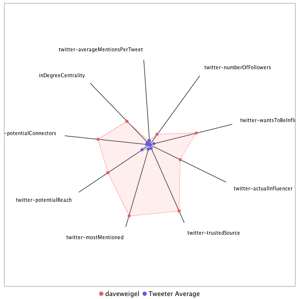

This tweeter has been identified as an influencer. Its target audience and hashtag and word usage are analyzed below.
Basic Statistics
Number of direct followers 318906 The peak number of followers that the tweeter had during any time period. Number of retweeters 261 Number of agents that retweeted the key influencer. Number of secondary followers 42131812 The sum of the followers of those who retweeted the key influencer.
Measure Values of Other Influencers node versus Tweeter Average
This compares the measure values of the key influencer with the average values across all tweeters. For each measure line, the center-point means zero and the end-point means the maximum score across all tweeters.

Where was the influencer?
The agent is not recorded as being in any locations. Either he tweeted without geo-tags or we have no information about the tweets he sent.
The agent and retweeters were in 26 different locations.

What hashtags did the influencer use?
This displays the top ranked hashtags that the influencer and its retweeters used.
Rank hashtag Count 1 mtal 566 2 GA06 466 3 Comey 437 4 AHCA 419 5 BREAKING 390 6 VAGov 333 7 CNNsotu 305 8 TheLead 303 9 SCOTUS 302 10 Trump 290 11 ParisAgreement 245 12 ComeyHearing 244 13 MemorialDayWeekend 234 14 adopt 220 15 Russia 206 16 AdoptDontShop 170 17 dog 169 18 netneutrality 150 19 ComeyFiring 143 20 covfefe 122 21 ge2017 122 22 NAFTA 116 23 ComeyDay 115 24 Qatar 115 25 Obamacare 114 26 ksleg 110 27 MTpol 108 28 FF 106 29 MemorialDay 105 30 cat 103 31 WrongChoiceAct 102 32 SC05 101 33 Manchester 99 34 ThisIsGoingWell 94 35 trumprussia 93 36 NYC 92 37 rescue 88 38 txlege 86 39 ComeyTestimony 80 40 fakenews 79 41 foster 79 42 Syria 75 43 MOLeg 74 44 China 72 45 TrumpCare 70 46 LondonBridge 68 47 FBIDirector 67 48 JamesComey 67 49 TheBachelorette 67 50 CongressionalBaseballGame 66 51 TBT 65 52 Hardball 64 53 MAGA 61 54 ISIS 60 55 CATS 59 56 FOIA 59 57 MTPDaily 59 58 Nats 59 59 ParisAccord 59 60 climate 58 61 climatechange 58 62 NATO 57 63 US 57 64 Iran 55 65 gapol 55 66 ACA 54 67 sallyyates 54 68 travelban 53 69 Venezuela 52 70 infrastructureweek 51 71 NorthKorea 50 72 CAPIdeas 49 73 NJGOV 49 74 TrumpBudget 49 75 dogs 48 76 healthcare 48 77 Israel 46 78 JFK100 46 79 OTD 46 80 alsen 46 81 FarewellOldChum 45 82 FBI 44 83 bdcnews 44 84 snl 44 85 ParisClimateDeal 41 86 potusabroad 40 87 Senate 39 88 Paris 38 89 SethRich 38 90 CA 37 91 Montana 37 92 Saudi 37 93 SessionsHearing 37 94 SEC 35 95 trade 35 96 kentuckyderby 34 97 s 34 98 wvsen 34 99 Alexandria 33 100 Florida 33
Tweet List
This displays all of the tweets of the influencer ordered from earliest to latest. Click on a tweet to see its status in Twitter.
Number Tweet ID Date Message 1 859549863272382464 2017-05-02 19:27:11-04 It’s what laid-off coal miners in the real America were clamoring for https://t.co/sKsKLZ8zOD 2 861283980741677056 2017-05-07 14:17:57-04 Trump's victory may be the worst thing that happened to them -- he's toxic abroad. https://t.co/1LheM2kked 3 861611164362579968 2017-05-08 11:58:04-04 https://t.co/vNLtO7p8Rv 4 862082476965068800 2017-05-09 19:10:53-04 Schumer says Trump gave him a heads up. "I told the president, Mr President, with all due respect, you're making a big mistake." 5 860212709228507137 2017-05-04 15:21:06-04 It never stops being weird that Trump can’t speak coherently about what’s in the health care bill (or current law). 6 859813878359879680 2017-05-03 12:56:17-04 PUNDITS: This letter is a game-changer. HRC: Indeed, it changed the game. PUNDITS: Shut up and take responsibility. https://t.co/Q8CEjUBPUI 7 863047122219921409 2017-05-12 11:04:03-04 Buried in this story: a GOP poll finds that Obamacare supporters now outnumber “repeal” supporters in #GA06. https://t.co/kQT13cWmBX 8 860501230409404418 2017-05-05 10:27:35-04 Special snowflake alert: Fox now doing a segment on how late night comedians are too mean to the president. https://t.co/efbmbZdgjy 9 860205056255287297 2017-05-04 14:50:41-04 217 Republicans voted for AHCA. As of now, only seven of them have town halls scheduled for the recess. 10 859111009214238724 2017-05-01 14:23:20-04 Billy Long’s district voted for Trump by 46 (!) points. And he’s a no on AHCA. https://t.co/5hGcAjHUEs 11 862481343753707521 2017-05-10 21:35:51-04 https://t.co/KediEe72A2 https://t.co/zZ0MCRF1G0 12 862476921996705793 2017-05-10 21:18:16-04 Constituent raging at MacArthur: "You have been the single greatest threat to my family in the entire world." https://t.co/LVYkzDYJdr 13 862440929654865921 2017-05-10 18:55:15-04 MACARTHUR: I'm looking an insurance market that is collapsing. CONSTITUENT: Because you drilled holes in it! audience chants SINGLE PAYER 14 862438918440058886 2017-05-10 18:47:16-04 This audience is brutal. Even a MacArthur story about taking his daughter off life support is met with calls for him to get on with it. 15 862117976878850049 2017-05-09 21:31:57-04 At the second prez debate, Trump invited women who had accused Bill Clinton of sexual assault decades ago. https://t.co/4jmIZDJ8s1 16 859173637508784128 2017-05-01 18:32:12-04 Barack Obama repeatedly ruled out a POTUS bid in 2005, and carefully engineered a reversal on Meet the Press. https://t.co/oekAL27tF2 17 859031102505324544 2017-05-01 09:05:49-04 At least they always get it right! https://t.co/yXmRl73IZE 18 859911949819281409 2017-05-03 19:25:59-04 My Q: When Dems get back power, do they walk over the remains of the GOP’s busted guardrails? Public option thru reconciliation? 19 864501652455346178 2017-05-16 11:23:50-04 Actually kind of gross to see the guy ping-ponged around for short-term political talking points. https://t.co/wnq8gb04XQ 20 864820407043588096 2017-05-17 08:30:27-04 Can't Trump just say that his conversation with Comey was "locker room talk"? That seemed to work before. 21 864502474811609089 2017-05-16 11:27:06-04 I like the wonkiness of this conference but it also reminds me of this. https://t.co/WNEfySFHcG 22 864506168579944450 2017-05-16 11:41:46-04 Five months in, we’re finally getting Trump voter profiles that get into how, er, he’s not delivering for them. https://t.co/lYUIaJtFRC 23 864507535365206021 2017-05-16 11:47:12-04 Via @scotusreporter, Merrick Garland not actually interested in giving up court seat so Trump can fire him in a huff https://t.co/MkuOTWdflC 24 864488803930689536 2017-05-16 10:32:46-04 D.C. Dems think Trump’s imploding. But Rs think they can win the next electoral tests — three special House races. https://t.co/budo0nuVQK 25 864449667056246784 2017-05-16 07:57:15-04 The WaPo story went up shortly after 5, chemtrail boy. https://t.co/glLzU1Za6T 26 864553702715269120 2017-05-16 14:50:40-04 lol of course “Fox and Friends” ran with the Seth Rich hoax. Nothing matters. https://t.co/CWzfCV92Zv 27 864446726773538816 2017-05-16 07:45:34-04 The useful idiots' network. https://t.co/Vzx4ZX3FK3 28 866314676723961856 2017-05-21 11:28:08-04 Newt Gingrich went on Fox today to suggest Seth Rich was “assassinated” to falsely pin the DNC hack on Russians. https://t.co/Xjp1IOM5wZ 29 865655039334862849 2017-05-19 15:46:59-04 Please, more bellyaching about leaks from a POTUS who gleefully read hacked emails from his opponent’s campaign at his rallies. 30 864891758324457472 2017-05-17 13:13:58-04 How, how, how has @fox5dc not retracted that shoddy, slanderous story? https://t.co/e6iJTxbGLZ 31 866997220469612544 2017-05-23 08:40:20-04 I'm coming around to the view that social media companies should start publishing these guys' identities. https://t.co/uUkemRRIsF 32 860221494634438656 2017-05-04 15:56:01-04 One point about optics: At ACA bill signing, Obama made sure to have beneficiaries in the shot. That Trump presser: Wall of congressmen. 33 864088784094318595 2017-05-15 08:03:14-04 This is creepy. https://t.co/Vui1igR5mz 34 860119214107095040 2017-05-04 09:09:35-04 Rep. Mo Brooks, via my colleague @edatpost, on AHCA and CBO: "I would prefer to have it scored, but more than that I want it to pass." 35 864865475016237058 2017-05-17 11:29:32-04 FWIW, Amash wrote in Rand Paul for president. This is less the damn breaking, more Amash being Amash. https://t.co/dm582LaW7a 36 865249316633534464 2017-05-18 12:54:47-04 Trade was likely the issue that swung 2016 against Democrats. There are literally zero TV cameras at a Dem presser rn on NAFTA. 37 867089561142390784 2017-05-23 14:47:15-04 Statement from Rich family spokesman Brad Bauman: https://t.co/8tVb4BTKEQ 38 867086338557976576 2017-05-23 14:34:27-04 Sorry, here’s the Fox News retraction. https://t.co/rRltG1vhbt 39 867007082951782400 2017-05-23 09:19:31-04 The irony will come when the $ funds ads attacking “DC insider” Jon Ossoff. https://t.co/D8Dq2201Ng 40 866631471930503170 2017-05-22 08:26:58-04 Very stupid people keep saying this, ignoring the Podesta and DCCC hacks. https://t.co/SMJXCyxhNv 41 865585761026023424 2017-05-19 11:11:41-04 Rep. Dan Kildee says there are new Qs about who in WH may have pressured Rosenstein to write the letter. 42 864972398814277632 2017-05-17 18:34:24-04 This is real, by the way. This is what life is now. https://t.co/90QUgUzuuc 43 869568614453694464 2017-05-30 10:58:08-04 My dude spent the entire Clinton presidency trying to impeach the guy. https://t.co/ydYTbagzXa 44 867529888714149888 2017-05-24 19:56:58-04 Quist responds (sort of) https://t.co/cvnfAm0NyE 45 867536155914289152 2017-05-24 20:21:52-04 Listen to the tape of Gianforte attacking @Bencjacobs. It's a total meltdown. https://t.co/UHo6OtJA8R 46 867966505794715649 2017-05-26 00:51:55-04 The crowd started laughing when Gianforte mentioned the assault — 60 seconds later, it’s applauding as he apologizes. 47 867523206361600003 2017-05-24 19:30:24-04 Rob Quist on the trail, not punching any Guardian reporters (that I can see) https://t.co/2d7R8JMoDx 48 867744438642065408 2017-05-25 10:09:30-04 “Candidate puts reporter in hospital for asking about health care bill” is a real headline about a thing that happened. 49 867868355272757248 2017-05-25 18:21:54-04 1) Found a voter who went from undecided (had skipped 2016) to Quist bc of tape. 2) His name — I checked — is Wolf Redboy. #Montana 50 867548733608677376 2017-05-24 21:11:51-04 Follow @GarrettHaake and @elysepg, who are en route to Bozeman for what, unfortunately, we must call Ben-ghazi. 51 869737909297065984 2017-05-30 22:10:51-04 The striking thing in this rundown of how the GOP will grind down Warren — not a single attack on her policies. https://t.co/vqpZGc3ITq 52 869582353299066880 2017-05-30 11:52:43-04 Unstoppable ad for Dems: a bunch of NY bankers and Hollywood stars thanking Trump for the tax cut. https://t.co/tiicWhzpbR 53 867539600603963392 2017-05-24 20:35:33-04 Being a congressman means reporters shoving recorders in your face to ask about policy. If you can't handle it, don't run. 54 867752060552216577 2017-05-25 10:39:47-04 Every Montana paper leads with Gianforte’s body-slam and the 23 million uninsured by AHCA. https://t.co/V2KLxgHhSr 55 868267590711255041 2017-05-26 20:48:19-04 Somebody please leak the minutes from one of these Fox editorial meetings where big news breaks and they go "let's do college kids again." 56 867963001453682688 2017-05-26 00:38:00-04 Nobody cares anymore, but Gianforte indeed got through the election w/o taking an AHCA stance — except to donors, to whom he said “yes." 57 867723096349753344 2017-05-25 08:44:42-04 Of note: Gianforte *still* has not said how he’d vote on AHCA, and is up with an ad that blurs the issue. https://t.co/KGUhC7HRh3 58 867708763356020736 2017-05-25 07:47:45-04 Fox News mocking Democrats for budget “scare tactics.” It’s okay to say tax cuts hurt the rich, but crazy to say CHIP cuts hurt the poor. 59 873700166179713025 2017-06-10 20:35:26-04 The main Bernie program kicks off with The Beatles's "Revolution," which is about being skeptical of people who call for revolution. 60 872886612648218625 2017-06-08 14:42:40-04 McCain explains what he was talking about https://t.co/jh7hcbHg70 61 873027031390339073 2017-06-09 00:00:38-04 I asked @SenSanders if he was watching the UK results. He was. https://t.co/SOU1OgZQhl 62 872827185958203392 2017-06-08 10:46:32-04 investigative reporter for USA Today — https://t.co/3QiGpGXCx4 63 872809837545082882 2017-06-08 09:37:35-04 C O M E Y H E A R Infrastructure Week N G 64 874357852445581312 2017-06-12 16:08:51-04 Good thing they'll never have to explain this bill at an election! https://t.co/XauRe0XENU 65 872923617885126656 2017-06-08 17:09:43-04 Trump endorses Le Pen: She loses by 32 points. Trump cozies up to May: She blows a 25-point lead and maybe loses the leadership. 66 872921807384440834 2017-06-08 17:02:31-04 Whoa, if this is the result, it is a disaster for the Tories. https://t.co/DNIlDK1bBM 67 872850677797494784 2017-06-08 12:19:53-04 This is like the part in the Watergate hearings where Republicans demanded answers on why McGovern lied about the Eagleton pick. 68 872928400951959552 2017-06-08 17:28:43-04 Life comes at you fast https://t.co/mh65mj5vSi 69 872853860527820800 2017-06-08 12:32:31-04 Holy cow — @ossoff has raised $23 million for his #GA06 race. https://t.co/9y10PynjVP 70 872824382149853184 2017-06-08 10:35:23-04 Good point from @chucktodd: Trump began “infrastructure week” with airline privatization, one of the issues with the narrowest appeal. 71 875045506812174336 2017-06-14 13:41:21-04 Would they have gone onto the practice field with holsters? https://t.co/MTgesnleWJ 72 873163551036276737 2017-06-09 09:03:07-04 Talked to Bernie Sanders and David Axelrod about #UKelection2017. The gist: Here's a model for how the left wins. https://t.co/qp3fFyOZnt 73 872841676573822977 2017-06-08 11:44:06-04 Remarkable how two men’s actions: Bill Clinton ambling across the Phoenix tarmac, Anthony Weiner sexting teens — kept HRC out of the WH. 74 873217740487761920 2017-06-09 12:38:27-04 This was seven weeks ago. https://t.co/u3pW4G7gNs 75 872918491246022657 2017-06-08 16:49:21-04 We're kind of the only country where the left party is not colored red on maps. Pet peeve. https://t.co/iouVawrM56 76 874682683481370624 2017-06-13 13:39:37-04 If you're rooting for politicians to do their work without anyone watching or asking tough questions, congrats -- you're being played. 77 874946662199947264 2017-06-14 07:08:34-04 Gillespie's GOP primary campaign was mostly about tax cuts. Stewart: Southern heritage under siege. And Stewart nearly upset. #VAGov 78 874672954411556866 2017-06-13 13:00:57-04 Note that Sasse is not one of the Rs who stops for cameras. Rule would benefit him; he's against it. https://t.co/GkVDkYemkk 79 874621534178082816 2017-06-13 09:36:38-04 I watch "Fox and Friends" every day - it's some of the most effective propaganda ever made. Much more than InfoWars. https://t.co/nIB2lkPw1X 80 874332748781154306 2017-06-12 14:29:06-04 This is a legit good burn https://t.co/uvXBcPZOGv 81 873166244316405760 2017-06-09 09:13:49-04 They just never did it bc of the perceived political costs of using reconciliation. But if GOP uses it now? https://t.co/VXkrzdNnMv 82 875044564750434308 2017-06-14 13:37:36-04 You have to remove your brain with a shovel to not get that he's talking about protests. https://t.co/XgGkw5GVLo 83 874947491812265984 2017-06-14 07:11:52-04 IMO for the vast majority of people taxes simply aren't very high. The 1980 Reagan campaign is over. https://t.co/Tpjn5yNYjd 84 874686272329142276 2017-06-13 13:53:52-04 Okay, Springsteen's book has been out for a while, but I'll take it. https://t.co/U9GoVzIYUJ 85 873937554311188481 2017-06-11 12:18:44-04 Irony of the Senate AHCA shell game: The Pelosi "pass it to see what's in it" quote referred to a bill that had been public for 3 months. 86 872955522546323461 2017-06-08 19:16:29-04 If the Tories lose seats and Theresa May resigns, she'll be the shortest-serving PM since 1922. 87 870410368518148097 2017-06-01 18:42:57-04 Of course Dems will probably screw this up anyway by saying “even Lloyd Blankfein opposes this!” or something https://t.co/h3YnK3a5By 88 870378211988975617 2017-06-01 16:35:11-04 None of which will respond by funding Dems who could alter the agenda https://t.co/UmYXQfjoIv 89 872128944602062849 2017-06-06 12:31:58-04 One irony of 2009 v 2017: If you make no effort to bring the other party in on legislation, no stories about failed bipartisanship. 90 870636577642467328 2017-06-02 09:41:50-04 Most center-right parties agree w/ "the left" on climate change. Even France's National Front. GOP's an outlier. https://t.co/TrdFpsQDYU 91 870622929704411136 2017-06-02 08:47:36-04 Smash that BUY button https://t.co/zupMp8CpL1 92 870367600596987905 2017-06-01 15:53:01-04 There is no tax reform bill. https://t.co/HHHPpXGIms 93 872108515665608705 2017-06-06 11:10:47-04 DEM BASE: Please run on single payer. It excites people. DEM LEADERS: Nah we’ve got rhymes we’re good https://t.co/TiFkD1XM59 94 870424976209436672 2017-06-01 19:41:00-04 I don't think the argument for the accords was "they'll be good for stocks!" https://t.co/ORsRtV8o6Y 95 872140698509873152 2017-06-06 13:18:40-04 IMO this dynamic sometimes makes it look like there’s insurmountable GOP division, when there isn’t. https://t.co/L3FQquiGkw 96 872139882445123589 2017-06-06 13:15:26-04 Son of immigrants who grew up in public housing https://t.co/4cjJgwEfE1 97 870710713022468098 2017-06-02 14:36:25-04 WSB poll trend in #GA06, May to June Ossoff - 49.1% (+2.6) Handel - 47.6% (-1.4) 98 870303423907864576 2017-06-01 11:38:00-04 I went to Orange County and discovered that Rs in increasingly blue districts ain’t worried at all. https://t.co/lJ2DNPFafl 99 870458601256648705 2017-06-01 21:54:37-04 Twitter is good https://t.co/7AHFYRpNeg 100 872328971911921664 2017-06-07 01:46:48-04 Jon Ossoff won 92,390 votes to lead the primary in #GA06. Total vote in #CA34 will be less than half of that. 101 872323142273859584 2017-06-07 01:23:38-04 More #CA34 ballots and Gomez's lead is up to 14 points. As in the primary, Ahn is simply getting routed by election day voters. 102 872150481006669825 2017-06-06 13:57:33-04 If it fails, lesson: no reconciliation for big bills. If it passes, lesson: No downside in cramming w/o GOP votes, https://t.co/XmPZtLMx01 103 872146745488232452 2017-06-06 13:42:42-04 It really takes some work to have a sub-40% approval rating when unemployment s under 4.5%. 104 870352236098048001 2017-06-01 14:51:58-04 The televised debates had more Qs about hacked Clinton campaign email than about climate change. https://t.co/UUPQ83e8Jq 105 872327864947027968 2017-06-07 01:42:24-04 It's over. @JimmyGomezCA will be the next congressman from #CA34. Up by 17 points with not much left to count. 106 870601644655992832 2017-06-02 07:23:01-04 That's before the strong Handel closing message of "Kathy Griffin exists." https://t.co/JVBMNnvzTA 107 870384227753308164 2017-06-01 16:59:05-04 If we’re still talking Pittsburgh, I’d just add that the people who think it’s still a struggling “steel city” have not been there. 108 870370328899461120 2017-06-01 16:03:51-04 Trump is simultaneously 1) taking credit for job growth numbers and 2) warning that climate deals/ACA are killing our jobs. 109 870369626940727296 2017-06-01 16:01:04-04 The WH sent out a memo w/ “widespread praise” for this decision. It only quotes Republicans, inc. cabinet members. https://t.co/EHXtYmAc74 110 870349513818591234 2017-06-01 14:41:09-04 Also, er, do no Jill Stein voters mind that she vanished from the political scene as soon as the “recount” money rolled in? 111 863054624965656577 2017-05-12 11:33:52-04 The “Merrick Garland for FBI” thing shows why liberals lose. (They keep waiting on #NeverTrump to save them!) https://t.co/dKbrauQEMV 112 868080653778264065 2017-05-26 08:25:30-04 Old and busted: How dare reporters be blocked from questioning Clinton? New hotness: lol bodyslams https://t.co/1EEQnTaxZh 113 865573294396723201 2017-05-19 10:22:09-04 Life comes at you at a noticeably high speed https://t.co/e3VHb2zaLJ 114 863773917697257473 2017-05-14 11:12:04-04 Funniest part of the "Merrick Garland for FBI" scam is all the work the NRA did to paint him as a menace. https://t.co/V0eCrgSgjA 115 864943596549656579 2017-05-17 16:39:57-04 Just 75 current members of the House were in office when Bill Clinton was impeached. Just 2 were in the House during Watergate. 116 866327221715206149 2017-05-21 12:17:59-04 Hoaxers now claim that an April 24 video of Rich’s parents thanking GoFundMe donors is a video of them thanking Reddit. Disgusting. https://t.co/zjmtM3nBC6 117 864971903588601856 2017-05-17 18:32:26-04 Caught up with Rep. Rohrabacher, who says McCarthy was joking. Compared it to a joke he once told about farts killing the dinosaurs. 118 864879032747380736 2017-05-17 12:23:24-04 Everyone keeps talking Watergate, when the easier alternative is Iran-Contra -- years of probes, a polarized base sticking with POTUS. 119 861282487162597381 2017-05-07 14:12:01-04 Take a bow, chemtrail boy. https://t.co/XISkvhenA0 120 861280277603266561 2017-05-07 14:03:14-04 The Le Pen family has been running for president since 1974 -- its high watermark is losing by a 30-point landslide. Le LOL 121 867085098369396736 2017-05-23 14:29:31-04 Fox has retracted its story which falsely claimed that the FBI was confirming the Seth Rich/WikiLeaks link. https://t.co/9H08YFYuO6 122 860838761290244096 2017-05-06 08:48:48-04 We learned in 2016 that if you email staffers about pizza you'll be accused of sex trafficking. https://t.co/2UKlSaRSyC 123 860712443231731716 2017-05-06 00:26:52-04 BuzzFeed killing it on French election coverage https://t.co/o5nH1j216b 124 867355053782421504 2017-05-24 08:22:14-04 FBI Director Jared Kushner. Why is this so complicated? https://t.co/HngISxv7c7 125 865991445169262592 2017-05-20 14:03:44-04 “I know why this man was murdered. I decided not to say anything about it for 10 months because… reasons.” https://t.co/MaKQI7somY 126 864853573905125376 2017-05-17 10:42:14-04 Cummings: “It is obvious that we need to subpoena the White House to demand the documents we requested in March." 127 864476241692381184 2017-05-16 09:42:51-04 Hey @MarinaMarraco, did you run the story without comment from cops or the family? https://t.co/JYTTsiBZ1o 128 862466997350801412 2017-05-10 20:38:50-04 MacArthur on Trump: "I do thing he should release his tax returns. I don't think it's Congress's role to force that." 129 860810336970182656 2017-05-06 06:55:52-04 So how should the press handle it in October 2018, when a slew of Democratic Party campaigns get hacked? https://t.co/vSERydmKL0 130 859866612823990272 2017-05-03 16:25:50-04 One D rep told me the difference between this what they’d get under Obama was all the $ for Ivanka’s secret service https://t.co/ChR5Dt0IRB 131 859118747499606016 2017-05-01 14:54:05-04 We all remember the Trump campaign beseeching people not to take hacked Clinton campaign emails out of context. https://t.co/eovRduiECy 132 867540160581259264 2017-05-24 20:37:47-04 Gallatin County sheriff's office is "currently investigating allegations of an assault involving Greg Gianforte." https://t.co/xPyMn8cjQn 133 867549001519833092 2017-05-24 21:12:54-04 The latest on Montana's GOP candidate "body-slamming" @Bencjacobs, the night before election day. https://t.co/txuqcDm0aG 134 864226997358276612 2017-05-15 17:12:27-04 Gillespie might've been the first beneficiary of President Hillary backlash. Instead he has to run w a Trump anchor https://t.co/NrXVHgInBX 135 862077293094727680 2017-05-09 18:50:17-04 I bet Ossoff is annoyed that the election's in five weeks instead of tonight. https://t.co/6PXeLk2jiV 136 860236909783789572 2017-05-04 16:57:16-04 TFW your 2017 positive ad looks like a 2010 negative ad https://t.co/SHQkNTdaYp https://t.co/aAVXhMWYRm 137 860093509352783873 2017-05-04 07:27:27-04 Sidebar: AARP and AMA consider this bill to be garbage. Will they put money behind that opinion? https://t.co/XlRXzQWU44 138 859547044662456321 2017-05-02 19:15:59-04 fell down a C-Span hole, help https://t.co/EgoFqrGasZ 139 862500112374702080 2017-05-10 22:50:25-04 Yes, the MacArthur town hall is still going on. https://t.co/Y2FIQ2sXuH 140 861698193553317889 2017-05-08 17:43:53-04 In #SC05 — which Trump won by 19 points — the Dem is running against AHCA. The Rs haven’t taken a position. https://t.co/i56MBHnNs6 141 869954061747015682 2017-05-31 12:29:45-04 RNC now blasting out attacks on... Morning Joe? https://t.co/1Xm5xuLkoy 142 867966368116752384 2017-05-26 00:51:22-04 Gianforte: “I should not have treated that reporter that way. For that, I am sorry, @Bencjacobs." 143 866360602024968192 2017-05-21 14:30:38-04 Among the many dumb things about the Seth Rich conspiracy: The idea it can "refute Russian hacking." DCCC and Podesta were hacked, too! 144 865551065676095490 2017-05-19 08:53:49-04 Your reminder that Clinton would probably be president if Weiner could have stopped himself from sexting teens. https://t.co/JBvYzmgBT4 145 865246693310255105 2017-05-18 12:44:21-04 FWIW, Pelosi talks about impeachment differently than in 2006. Then, it was "off the table." Now, it's not up to her if Dems discuss it. 146 864663315603214338 2017-05-16 22:06:13-04 Embarrassing. https://t.co/Ry95aqObru 147 860496098053545984 2017-05-05 10:07:11-04 https://t.co/AWPbi1bmM1 148 860181518190358528 2017-05-04 13:17:09-04 Just in time! https://t.co/xLd3sbIM0x 149 860126697718513665 2017-05-04 09:39:19-04 Here’s that March 2010 press release from House Rs, demanding that Pelosi wait for a CBO score. https://t.co/2ZldDP66vi 150 859389023772659713 2017-05-02 08:48:04-04 It's the "it didn't cost anything" that gets me https://t.co/oB05vgoRP9 151 867332249745846274 2017-05-24 06:51:37-04 Trolling of biblical proportions https://t.co/pOQoBDAGn0 152 867704243796320256 2017-05-25 07:29:47-04 IMO it’s incredibly patronizing to suggest that “the heartland” maybe likes it when someone body-slams a guy. 153 870014895772717056 2017-05-31 16:31:29-04 It’s May 2017 and the incumbent in #ALSen is running against… Obama https://t.co/DAqUH0QPKQ 154 867937904860868608 2017-05-25 22:58:16-04 They won’t admit it, but some Dems have to be hoping for a bigger R win here — close result means another round of “WTF, DCCC?" 155 865598628857040896 2017-05-19 12:02:49-04 MT voters will wake up on election day w newspapers fronting the new CBO score. If Gianforte wins, will calm nerves. https://t.co/ICvxgCY65s 156 865244647039397888 2017-05-18 12:36:13-04 Ossoff raised $500k the day after the #GA06 primary. https://t.co/YizPFALeLG 157 864150315389657090 2017-05-15 12:07:44-04 Dems should study 1964 vs 1974. Policy landslide > landslide rejection of POTUS scandals. https://t.co/r4cv6nqfzN 158 862710645749411841 2017-05-11 12:47:00-04 I was at this town hall; to get in you had to be a district resident or special guest. People wore tags w zip codes. https://t.co/08H0ZT8BwY 159 861569707928944644 2017-05-08 09:13:20-04 One of the smallest drop-offs: PA. More evidence of how WI and MI were fumbled away w less investment. https://t.co/XAapA1UkZf 160 860563323137478656 2017-05-05 14:34:19-04 On call to donors, Republicans warn that #MTAL race is w/in single digits and Dems are pouring $ in https://t.co/nN0MwqCY7y 161 860191336485576704 2017-05-04 13:56:10-04 Oh, I'm pretty confident they can brawl on Twitter about how Pelosi should have phrased something better. https://t.co/sLYUyUxoWz 162 862512265941090305 2017-05-10 23:38:43-04 My dispatch from Tom MacArthur's epic five hour town hall https://t.co/dJvOVLfbbt 163 869683785121529856 2017-05-30 18:35:46-04 DEM BASE: Talk about health care and jobs. DEM LEADERS: Talk about Russia. DEM CELEBS: Talk about meeeeeeeeeeeeeee 164 867348525604065280 2017-05-24 07:56:17-04 HBO EVISCERATES Jon Stewart's animation project and it is literally everything https://t.co/48kz2dvEKN 165 864980207417077762 2017-05-17 19:05:26-04 Chris Murphy on Mueller: “the future of American democracy as we know it may depend on him.” https://t.co/OCtf4B31Te 166 862370753437741056 2017-05-10 14:16:24-04 Many people are saying. https://t.co/G82QNli03B 167 861198692845580288 2017-05-07 08:39:03-04 "They said he shouldn't take that $400k payout for a speech. Nevertheless, he persisted." https://t.co/CZ6fh1kbB2 168 865247982496698368 2017-05-18 12:49:29-04 New petition calling on advertisers to ditch @fox5dc until it retracts the Seth Rich hoax story. https://t.co/jwltSC0Jz4 169 865204157250142208 2017-05-18 09:55:20-04 Old and busted: You can't have a POTUS under FBI investigation! New hotness: Probing POTUS with a special counsel means the system works. 170 864624592538783744 2017-05-16 19:32:21-04 He was... he was offering him *the chance to keep his job.* Are these people drinking bleach? https://t.co/gp18OpZ9kY 171 875737077891178502 2017-06-16 11:29:24-04 Also, Griffin has never donated to Ossoff. Tweeted her support of him once. https://t.co/1MEHR86Waa 172 875495541882441728 2017-06-15 19:29:37-04 Hey, Austin, come to @BookPeople at 7! https://t.co/YAO3DtfArl 173 875403623584473089 2017-06-15 13:24:22-04 Trump approval in VA on Election Day may be in the high 20s. Expect a lot of this https://t.co/BuCcU0UdYz 174 875775088448196608 2017-06-16 14:00:26-04 In 2008 I saw a Harvard grad lose a race bc she misstated what kind of degree she got. Now fake degrees are ok https://t.co/SufLIcaPtQ 175 875352518339035136 2017-06-15 10:01:18-04 We accept you, we accept you, one of us https://t.co/3HuwOwVqeC 176 876457526853865472 2017-06-18 11:12:12-04 Exclusive: According to Dave Weigel, this tweet is weird. https://t.co/pcDM1db0W5 177 876768207855661056 2017-06-19 07:46:44-04 The lesson for future Dems: Run on moderation and deficit reduction and be called a black bloc terrorista anyway https://t.co/i25l5mGEh4 178 876764887464251393 2017-06-19 07:33:33-04 LISTEN TO THIS MAN --> https://t.co/6GcPMFgqSk 179 876780675877056513 2017-06-19 08:36:17-04 Advertisers not yet adapted to the Senate GOP's new "write a secret bill and air-drop it" ethos. https://t.co/JxsXLdJRxT 180 868184377221566464 2017-05-26 15:17:40-04 Small, if true. https://t.co/cLvYflQs5A 181 868105856595787777 2017-05-26 10:05:39-04 Basically, lots of businesses with skin in the game sit back and let Sheldon Adelson determine who gets elected. https://t.co/1rA0mE1O1v 182 867952119139024897 2017-05-25 23:54:45-04 And unlike the Democrats, GOP base voters have zero problem with big $ sloshing into their races. https://t.co/rr1PQr891g 183 867737485098459136 2017-05-25 09:41:52-04 Rs handling Gianforte differently than how they handled a Coakley aide who knocked over (then helped up) a reporter https://t.co/KCKDGfQgm8 184 868971232481255425 2017-05-28 19:24:21-04 Had a great day and long interview with Rep. Dana Rohrabacher; ended with him "in heaven" at Costco. https://t.co/r1jAi0Hkop 185 867553143688753152 2017-05-24 21:29:22-04 Source tells me that some Quist canvassers are now playing audio of the Gianforte/Guardian incident for voters. 186 869737250044739584 2017-05-30 22:08:14-04 https://t.co/uzXVv7bywC 187 867732510339235841 2017-05-25 09:22:06-04 Also striking: No unified AHCA message. Jacobs was trying to get Gianforte’s CBO reaction. No statement — body slam. https://t.co/FDbdxPxYWi 188 867551876828581888 2017-05-24 21:24:20-04 NRCC, which is not commenting on Gianforte, took a different tack when a Dem rep manhandled a tracker in 2010 https://t.co/lkCEF2GHHJ 189 867556323675840512 2017-05-24 21:42:00-04 MT voter when I ask about Gianforte: "He thinks he's Donald Trump. He could go out on 5th Avenue, shoot somebody, and get away with it." 190 867939201647484930 2017-05-25 23:03:25-04 The beef is that Dems talk about how smart is not to “nationalize,” while R super PACs just go “Brewster’s Millions” on each race. 191 869736815644815360 2017-05-30 22:06:30-04 Why is Trump giving world leaders his cell number when he can just summon their astral presences with the Orb? 192 868498843482050560 2017-05-27 12:07:14-04 It's almost as if people are shouting "lock him up" even before there's a case against him. https://t.co/S5YkRRl6w5 193 868071589513973760 2017-05-26 07:49:29-04 If they refuse to spend money in enough elections, the majority is assured. https://t.co/F1GJ9RxTpy 194 867920776761978880 2017-05-25 21:50:13-04 I have prepared this map of Montana so you know what’s really important to follow tonight. https://t.co/NwQHpo0IIb 195 867740694479228928 2017-05-25 09:54:38-04 *cracks knuckles* *opens file labeled HOT TAKES* Ben Jacobs was no angel. 196 868232016390520832 2017-05-26 18:26:58-04 This is a bipartisan joke -- the Dem mayor of Tampa just made it -- and it always sucks. https://t.co/VDNxObKuAW 197 868072182139805696 2017-05-26 07:51:50-04 On air, Quist's message was 90% about health care and public lands. It was the GOP that branded him as a tax cheat https://t.co/3RB35GlK3v 198 869930456535502848 2017-05-31 10:55:58-04 Dana Rohrabacher's challenger https://t.co/NpX0L1j91z 199 867527981933232128 2017-05-24 19:49:23-04 This was supposed to be the final rally of the campaign, in his adopted hometown -- in a swing county https://t.co/eZcRe8jSPN 200 867208413335474176 2017-05-23 22:39:32-04 Dems just won a NYS assembly seat in Long Island; district was R-held and went for Trump by 20 points. https://t.co/yorwvQzrmS 201 865325483461931009 2017-05-18 17:57:26-04 If you’re poor, get a cavity and you could go bankrupt. If you’re rich, you can never ever f up enough. https://t.co/GO4nevDZOC https://t.co/94eD4UKPW9 202 866766196531712002 2017-05-22 17:22:19-04 https://t.co/ctqK1VB6dH 203 866140345633054721 2017-05-20 23:55:25-04 Nobody has self-owned quite like the "Trump will save us from the hawks" people https://t.co/K1JVg93HMd 204 864995741001011200 2017-05-17 20:07:10-04 So, when the family sues for slander and ends up owning the station? https://t.co/ARKapVEDsz 205 866766386122641408 2017-05-22 17:23:04-04 This after Trump and Ryan campaigned for Handel. https://t.co/kiHD2gwpB6 206 866417881243934720 2017-05-21 18:18:14-04 This much-shared Observer story is mostly fake. Pelosi talked 2x as much about AHCA as Russia, and also called for a public option. https://t.co/aOWF1CKlsT 207 866517567120297984 2017-05-22 00:54:21-04 Never been to a concert where the artist flaked, but this Rick Ross show might check that box. 12:54 and no sign of him. 208 865597527374090240 2017-05-19 11:58:27-04 To be fair, it took Lieberman AND Ben Nelson to kill the public option. Joe was just Nelson’s fig leaf. https://t.co/VKVQbDthXy 209 866331231792844802 2017-05-21 12:33:55-04 One of my DC friends was shot three times after refusing to give up his phone. (He lived) “Botched robberies” happen https://t.co/yvu1rItCOu 210 866069711871758336 2017-05-20 19:14:44-04 It's insane that Hannity is this batty *even though Trump won.* Imagine if in May 2009 Maddow was talking about whether Bush did 9/11. 211 865913008052109314 2017-05-20 08:52:03-04 This was the entire point of the trip, wasn't it https://t.co/HGYPde9L8U 212 865252301212192768 2017-05-18 13:06:38-04 Kucinich woke as hell https://t.co/SKFlWNkUCC 213 865386638138068993 2017-05-18 22:00:27-04 He was, however, the choice of the square mileage, which looks dope as hell on a map. https://t.co/zjw0TwFqdF 214 867027789647663106 2017-05-23 10:41:48-04 I'm sort of obsessed w this bc Rs ran four elections on a universal "repeal" message. No universal Dem counter yet. https://t.co/8osUjbWSIr 215 864988732654596096 2017-05-17 19:39:19-04 People keep asking but no, I was not kidding about Rohrabacher comparing the McCarthy tape to his dinosaur fart joke https://t.co/O7chIpWPtC 216 867027450630483968 2017-05-23 10:40:27-04 Fun new DCCC metric: "95 districts where Trump won by 5 points or less, or he lost." 217 865388190802350080 2017-05-18 22:06:37-04 Read @edatpost on how Gillibrand and Franken grilled Rosenstein today. #iacaucus #fitn #scprimary https://t.co/AXAYXD6sYJ 218 866788763644678146 2017-05-22 18:52:00-04 imo one undercurrent in the Seth Rich nonsense is that the fringe has no idea what to fulminate about with the Clintons gone. 219 867023166501244930 2017-05-23 10:23:26-04 DCCC chair Lujan says Montana is a "tough path" for Dems; also announces $2m more in #GA06. 220 867161827867844608 2017-05-23 19:34:25-04 If you have rural schools, she's just a ready-made target https://t.co/LCClnx0G6s 221 865241143734390787 2017-05-18 12:22:18-04 Pretty sure Jared can handle this https://t.co/trC5FVFgIi 222 866827210317062144 2017-05-22 21:24:46-04 It's what you do if you're confident the base won't hear and will blame Dems if it bites them. https://t.co/Riqpy7rfso 223 867036624307277825 2017-05-23 11:16:54-04 FWIW, DCCC race update presser focused on health Cara and Trump budget. No mention of Russia until reporter brought it up. 224 864973382751842305 2017-05-17 18:38:19-04 Amazing in retrospect that Clinton never tried the “it was a joke, you dum-dums” defense when Podesta’s emails were hacked. 225 865382333876228096 2017-05-18 21:43:21-04 Yes, speaking at a hedge fund conference, just what the Dem primary electorate hankers for https://t.co/WBjifyJKP4 226 867164633752358912 2017-05-23 19:45:34-04 Appreciate the nice tweets about my Seth Rich stories but @aseitzwald and @oliverdarcy did the heaviest lifting. Follow them! 227 865600362115411968 2017-05-19 12:09:43-04 You know, Democrats and the media… but I repeat myself! (pause for laughter) https://t.co/adpQz6FvF6 228 865323682507476995 2017-05-18 17:50:17-04 The speaker list at the SALT hedge fund conference is so good https://t.co/v5aoCdb0cl 229 864915380514508801 2017-05-17 14:47:50-04 Does this mean I have to leave my cowboy hat and airhorn in the gallery? https://t.co/iHLRPNKTjt 230 866708441410285568 2017-05-22 13:32:49-04 Anyway, congrats again to @fox5dc for resurrecting this garbage because you don’t know how to vet a story. 231 866287535298924545 2017-05-21 09:40:17-04 On Fox, Gingrich says "nobody is investigating" how Seth Rich was "apparently assassinated." Might be good Q for Callista in nom hearing. 232 867210146291822593 2017-05-23 22:46:25-04 After tonight, Dems are roughly 0.2% of the way to reversing their state legislative losses under Obama. 233 867152900895756289 2017-05-23 18:58:57-04 You’re rich. You could donate $100k to their gofundme. Nobody believes that you give a damn about them. https://t.co/IONaElAQOS 234 866863824586117120 2017-05-22 23:50:15-04 I keep pointing out that a very "simple" tax code would be 10% on income under $50k and 90% on income above it. https://t.co/Vw5DShroSF 235 865214074673614848 2017-05-18 10:34:44-04 Oh, the countless TV segments where reporters talked to black female voters about why it was time to drop Benghazi https://t.co/F6RLejKV5j 236 865199721173876736 2017-05-18 09:37:42-04 Have you apologized to Seth Rich's family yet https://t.co/rm1v4CXnj3 237 864914809296433154 2017-05-17 14:45:34-04 Yeah, not looking great for the "maybe Trump's cabinet will invoke the 25th Amendment" theory. https://t.co/eEVjvXJStc 238 866994413591044097 2017-05-23 08:29:10-04 There's vastly more energy on the left for single payer than there is around calls for impeachment. 239 864831963131252737 2017-05-17 09:16:22-04 None of this matters until a laid-off coal miner in a Youngstown dive bar says it does. https://t.co/Q3BtqKEG5H 240 864670241422528512 2017-05-16 22:33:45-04 Getting everyone to the Rose Garden for a picture with POTUS was tho https://t.co/B06cqkXe6h 241 864596276590944256 2017-05-16 17:39:50-04 Who is this spin for? There are three Dems in the race already and no Republicans. https://t.co/j8Jo0dBIPC 242 864475644121546752 2017-05-16 09:40:29-04 More Rs arguing for Trump to use the Comey firing to swipe a court seat than arguing for a special prosecutor https://t.co/IehX4kkzqq 243 864095357969604609 2017-05-15 08:29:22-04 You can't really deny that a critical group of Rs will criticize Trump then do nothing to impede him. https://t.co/JOOhtiwTuM 244 864185816351993856 2017-05-15 14:28:49-04 Just in case we're heading into a "will crazy Dems blow 2018 by talking impeachment" cycle https://t.co/Oqh6p7opmz 245 864499590644596736 2017-05-16 11:15:38-04 Can we skip the “reality is now weirder than House of Cards” takes and just not talk about the show? It’s bad. Watch other shows. 246 864853202201694209 2017-05-17 10:40:46-04 Keith Ellison: Pence is the GOP’s “insurance policy,” and they’ve already gamed out a Trump implosion. https://t.co/MzRxPIwVWy https://t.co/LVALsc3gLp 247 864561993579200516 2017-05-16 15:23:36-04 “They said Muhammad couldn’t conquer Mecca, just like they said I couldn’t win 270 electoral votes. I won 306.” https://t.co/mxJL8zfZzi 248 862460079207067649 2017-05-10 20:11:21-04 MacArthur: "Government bureaucrats can be very dangerous when they have power." Audience howls with laughter. 249 864225852028006400 2017-05-15 17:07:54-04 Trump approval in Virginia down to 36%! https://t.co/1LbZSMviGd 250 862503762681884672 2017-05-10 23:04:56-04 Shot, chaser https://t.co/fDbVkYUrs8 251 862436659509567488 2017-05-10 18:38:17-04 Also at MacArthur town hall: @igorbobic @thegarance @jim_newell @FoxReports @EvanMcS @PaulMcleod and every other reporter not covering Comey 252 864829069543833600 2017-05-17 09:04:52-04 In DC, the WH seems to be imploding. But Ds are still struggling to win the special elections. https://t.co/budo0nuVQK 253 862704622825349121 2017-05-11 12:23:05-04 Always be reading @jameshohmann https://t.co/qt6KdOBVwU https://t.co/ZTqm4NpAlD 254 864302165761904640 2017-05-15 22:11:08-04 On the bright side, everyone currently lying and covering up for the president tonight will get a lucrative PR job and TV contract one day. 255 863024030974169088 2017-05-12 09:32:17-04 I hope someone is talking to hardscrabble blue collar workers about how threatening the former FBI director will bring jobs back. 256 862676011107987456 2017-05-11 10:29:23-04 *whispers* It would also allow Trump to fill Garland’s seat on DC Circuit https://t.co/voNVlYbE6m 257 862440704907366401 2017-05-10 18:54:22-04 MacArthur insisting, over boos, that AHCA won't affect pre-existing conditions protections. "It doesn't, folks! It simply doesn't!" 258 862452147954339840 2017-05-10 19:39:50-04 MacArthur trying to sell Medicaid cap: "It says to the states, you have to participate in getting a grip on this." 259 864675271324168194 2017-05-16 22:53:44-04 Yes. Which any reporter could say if they actually cared about the story, not about scoring points off a dead man. https://t.co/vz7CETO16m 260 862448569021747200 2017-05-10 19:25:37-04 MacArthur, citing NYT/WaPo debunking of the rape story: "This is the sort of hysteria that makes people not listen." https://t.co/Ps1TMvmWN8 261 862676207946653699 2017-05-11 10:30:10-04 Q-poll favorable/unfavorable ratings of House leaders: Ryan: 24/56 Pelosi: 31/48 https://t.co/7JHPJ9xA2O 262 864806344481812480 2017-05-17 07:34:34-04 ALL IS WELL https://t.co/4SoNURe0cK 263 864498395523821570 2017-05-16 11:10:53-04 Clinton’s state department emails were not the DNC emails, but enjoy your tinfoil hat. https://t.co/4cVFclDV2D 264 864490631388946435 2017-05-16 10:40:02-04 This would lead to a future 51-vote Dem majority pushing through Medicare-for-All, and senior Rs know it. https://t.co/TzM0LZ091e 265 864449422637314048 2017-05-16 07:56:17-04 Wouldn't be the first time Fox ran a fake story based on anon law enforcement sources. https://t.co/hHFDZa3FKm 266 864104608767016961 2017-05-15 09:06:07-04 In 2002-2003, Bush was at 70% approval and MSNBC swung to the right. In 2017, Trump is at 39% approval and MSNBC is… swinging right. 267 863753829766115328 2017-05-14 09:52:15-04 IMO Dems should promise instead to confirm Neil Gorsuch as FBI director https://t.co/XDH5aE2UGN 268 862723827608035328 2017-05-11 13:39:23-04 We jest, but that’s why the bad faith is so obvious. Lee wouldn’t even meet w Garland when he did Senate tours. https://t.co/N7Ql4qv4ja 269 862432880991117313 2017-05-10 18:23:16-04 Outside and inside the MacArthur town hall https://t.co/WcEBuxtKCF 270 864841105334042625 2017-05-17 09:52:42-04 Spotted outside House GOP meeting: former CIA director James Woolsey asking someone what all the cameras are for. 271 860817925950906368 2017-05-06 07:26:01-04 Indeed, we all remember how the ACA hadn't gone into effect by November 2010 and had no impact on the election. https://t.co/zAxA5bKjXO 272 860532339209895937 2017-05-05 12:31:12-04 Hard to argue that the left was wrong about this, knowing the tactics Rs would later spring on them. https://t.co/HWMkNswdkm 273 862085935445540866 2017-05-09 19:24:38-04 I am actually sort of pumped to see how Fox and Friends spins this as a Win for Trump. 274 862084821199319040 2017-05-09 19:20:12-04 What the media elites don’t understand is that hard-working blue collar voters in the rust belt don’t want an independent prosecutor. 275 861258572134567944 2017-05-07 12:36:59-04 It's true, I have a bias in favor of fascists losing elections in countries I don't live in or report on. https://t.co/e9X9PYpjhr 276 859956806583504897 2017-05-03 22:24:14-04 This is embarrassing. https://t.co/4YGY9jzt34 277 861243293010735104 2017-05-07 11:36:16-04 Looking forward to the maps showing how much land mass Le Pen won. https://t.co/VVm2h25exh 278 860196569873883136 2017-05-04 14:16:58-04 Congrats today to all the future Dem committee chairs and future Republican lobbyists 279 860579950285508608 2017-05-05 15:40:23-04 Bottled water is a sandwich https://t.co/uQWMgnzx0x 280 861592537865367555 2017-05-08 10:44:03-04 Classic clip of Jeremy Corbyn defending his right to work in the House of Commons wearing a sweater his mom made https://t.co/QPBYFIrFK4 281 860213401431277569 2017-05-04 15:23:51-04 If it dies in the Senate, at least 40% of base voters will enter 2018 thinking Trump repealed Obamacare. https://t.co/foL8wUH8ba 282 860529804168265728 2017-05-05 12:21:07-04 Rs had plan to junk ACA if they won WH + House + 51 Sen seats. Left will want plan for single payer w that lineup. https://t.co/ce02EEVjII 283 860130311576977412 2017-05-04 09:53:41-04 In the debate before the first round, Handel distanced herself from AHCA. https://t.co/DKe3oojsAg 284 860526160828145665 2017-05-05 12:06:39-04 Scoop: On donor call, Sen. Daines says VP Pence will come next week to campaign for #MTAL nominee Greg Gianforte. (Dems making it close.) 285 862101043110391808 2017-05-09 20:24:40-04 Look, if the response to Trump doing this is "lol owned," we're going to get a lot more decisions like this. https://t.co/nMA8SMrSLD 286 860819891582111744 2017-05-06 07:33:50-04 FTW https://t.co/n7knTjhVED 287 860301866353258496 2017-05-04 21:15:23-04 Troll rating: https://t.co/Wf08DBMBjj 288 861608002008305665 2017-05-08 11:45:30-04 The rare self-gif https://t.co/FepESsnDJ3 289 860702200401727488 2017-05-05 23:46:10-04 Bart... you may want to sit down for this. https://t.co/mtDjwzzMQA 290 861586562777325570 2017-05-08 10:20:18-04 Hot take I haven't seen yet: Macron won a landslide despite an email hack, thus Wikileaks didn't hurt Clinton. 291 861250379765428229 2017-05-07 12:04:26-04 Bad turnout in France is higher than any turnout we've had since universal suffrage (and the end of Jim Crow). https://t.co/Ian90rwNcA 292 862321991197630464 2017-05-10 11:02:38-04 For all the attention on Rs with Comey questions, the story is most of the GOP and conservative media closing ranks. https://t.co/aSvDKvZw26 293 862060635760332800 2017-05-09 17:44:06-04 Congrats to new FBI director Jared Kushner! https://t.co/2sS9ctTY0a 294 861550350339321860 2017-05-08 07:56:25-04 Final victory margin in #France2017: Macron by 32.2 points. Polls had him up by 24. 295 861336150019067904 2017-05-07 17:45:15-04 The meme warriors won't even get a "look how many departments Le Pen won" map. Sad! https://t.co/t6YjfkxCe5 296 861280614825197569 2017-05-07 14:04:35-04 Once again, congrats to all the morons who wrote "maybe Le Pen could win because Trump" takes. 297 861266265310187520 2017-05-07 13:07:33-04 Live feed from InfoWars coverage of #France2017 https://t.co/ZGGacNvma7 298 861253258857390080 2017-05-07 12:15:52-04 Me reading reactions on 4Chan when Le Pen loses tonight https://t.co/ZcJ1RO0QgD 299 860485321498165249 2017-05-05 09:24:22-04 For all the hype and "could it happen?" takes, Macron's lead over Le pen is growing again. https://t.co/kl78NtMgeY 300 860202849422200833 2017-05-04 14:41:55-04 It's what Rs did in 1993 after Clinton's tax hike passed. Worked okay for them. https://t.co/g6xyEMTb0s 301 859846263428308993 2017-05-03 15:04:59-04 It's easy to imagine a billion $ of super PAC ads assuring voters that congressman X did this https://t.co/hZXjQkiPT3 302 859099813484384256 2017-05-01 13:38:51-04 Only a politician could think that people would WANT to be thrown into something called a “high risk pool” because freedom. 303 859050840816046081 2017-05-01 10:24:15-04 Trump is so unpopular that his 2020 (!) campaign is already running positive ads. Conclusion: We need more profiles of Trump voters. 304 859747377078521857 2017-05-03 08:32:02-04 As a good faith gesture, CNN can run 45 minutes of Trump's empty lectern before a speech. Again. https://t.co/Jp1JlH7xF8 305 859211158401757184 2017-05-01 21:01:18-04 Focused like a laser on getting the health care bill done https://t.co/0TPOMsMLpc 306 859785240373600256 2017-05-03 11:02:29-04 Somewhere in New York, Anthony Weiner looks up from his open chat windows and nods solemnly. https://t.co/Egz1twX4aA 307 870410223491665921 2017-06-01 18:42:23-04 It’s just hard to imagine another POTUS making a call with 30% support and pundits saying “yes, this is why he won." https://t.co/MgJbxT0tG2 308 870345116082417665 2017-06-01 14:23:40-04 The highest vote-getting Green Party presidential bids helped tip elections against Al Gore and for Donald Trump. First-past-the-post, woo! 309 872071031413985280 2017-06-06 08:41:50-04 You may say I'm a dreamer/ but I'm not the only one/ haters and losers made FAKE NEWS say I couldn't win! https://t.co/4PzbnHb6kH 310 870624060643954688 2017-06-02 08:52:06-04 In the alternate reality where Clinton won, Fox is reporting on how the job growth rate has collapsed to 0.81% thanks to liberalism. 311 870367762912247813 2017-06-01 15:53:39-04 Do they… realize that Pittsburgh and Paris exist on the same planet https://t.co/yVhhX5ZaY9 312 871794809694040065 2017-06-05 14:24:14-04 One point of agreement among Dem sens/reps: Had Trump led with a big infrastructure bill in January, would have been tough politics for them 313 872235035671359488 2017-06-06 19:33:32-04 Sherrod Brown talked to the Ohio insurer who pulled out bc of Trump/ACA uncertainty. Then he heard Rs blame Obama. https://t.co/84JsIXNuBZ 314 871899060835430400 2017-06-05 21:18:29-04 he bout to do it https://t.co/w92T5kvi1i 315 870350154074816512 2017-06-01 14:43:41-04 Though when I covered Stein for an early October story, her message was that Clinton had it locked. https://t.co/icZ9csBmy9 316 870347908150898693 2017-06-01 14:34:46-04 Green voters always want to send a message, until the Dem loses and IT WASN’T THEIR FAULT GO AWAY https://t.co/PJxuCtbLuD 317 870290708044886018 2017-06-01 10:47:28-04 Have had Fox on all morning and learned that Clinton's ReCode interview is the biggest story in America https://t.co/h9Cl9zQSGZ 318 872068001956278272 2017-06-06 08:29:48-04 "Bernie Sanders SAYS he's a democratic socialist, but he got paid MONEY for a book" is an all-time garbage gotcha. 319 870407796541583360 2017-06-01 18:32:44-04 Nate, you clearly need to poll the land mass in rural counties. https://t.co/738mMXzkqf 320 872262089339011072 2017-06-06 21:21:02-04 In this era of Dem resistance, the first major D gov candidate is... a Goldman Sachs banker and Obama ambassador. 321 870340731340296192 2017-06-01 14:06:15-04 GOP super PAC ties @ossoff to Kathy Griffin because… she tweeted about him once. https://t.co/kDdDlRVYxG 322 872171879414583296 2017-06-06 15:22:34-04 Hard-working blue collar voters at the rust belt lunch counter love this stuff https://t.co/40MI1zx06s 323 872067712834469888 2017-06-06 08:28:39-04 Live every week like it's infrastructure week. 324 870266445992779776 2017-06-01 09:11:04-04 I shouted out, "Who beat Hillary?" When after all, it was you and me. https://t.co/axlxc0eJro 325 870006179988086786 2017-05-31 15:56:51-04 *extremely pundit voice* Hardly Sherman-esque https://t.co/wFGGiJCg1J 326 870030458431692800 2017-05-31 17:33:20-04 Like at least 40% of all UK newspaper content since 2015 has been about how Corbyn will destroy Labour https://t.co/nTKNFdpypE 327 875038739885694977 2017-06-14 13:14:27-04 Depressing and unsurprising to see some members linking this nightmare to completely peaceful protests. https://t.co/GO9OWlKdHQ 328 874643599723573248 2017-06-13 11:04:18-04 When Pelosi said that, the bill had been online to read for 3 months https://t.co/bq3IOLejN8 329 874293441307586560 2017-06-12 11:52:54-04 Even the conservative @BillKristol reads even the liberal @brianbeutler https://t.co/KmBqAH65iH 330 873935871837392900 2017-06-11 12:12:03-04 So uh can we see it https://t.co/3Vl8EOJacX 331 873702018296270848 2017-06-10 20:42:48-04 Weird, so they're not hunkering down in Newcastle or Cardiff to understand working class Corbyn voters? https://t.co/MThCq2gInV 332 873662654904225792 2017-06-10 18:06:23-04 Can you edit in some cheers and air horns after she says my name? Thx https://t.co/A83p1CcV3m 333 873349041698091008 2017-06-09 21:20:12-04 He opened one show with a segment about me not coming on bc I went to see "Guardians of the Galaxy 2." https://t.co/K1Ea3CYnzx 334 873128069401255937 2017-06-09 06:42:08-04 Theresa May's reaction to a terror attack was to promise a curtailing of civil liberties. Really, no political humiliation is enough. 335 872923061980467201 2017-06-08 17:07:30-04 Looking tight in UK election. Could come down to crucial Waukesha-upon-Thames constituency. 336 872818973456441344 2017-06-08 10:13:54-04 Also, Trump is 1) not under oath today and 2) lies. A lot. https://t.co/cdln184jXW 337 874291891763851264 2017-06-12 11:46:45-04 “Weigel’s book has an unlikely flaw, given its subject: it is too short.” https://t.co/nJU6vv23RG 338 872998235798941696 2017-06-08 22:06:13-04 Ben Gummer, author of the Tory manifesto ("dementia tax!") that send May sliding, managed to lose his seat to Labour. 339 872875908201406464 2017-06-08 14:00:08-04 cc Eichenwald https://t.co/VFj9EyMHsd 340 874282618296127490 2017-06-12 11:09:54-04 The Carter/Bernie/Biden primary in 2020 is going to be lit https://t.co/0LAiDtqXxO 341 873002133699866624 2017-06-08 22:21:42-04 BBC says Labour will take Canterbury on the strength of student voting -- first time it's ever gone Labour. #UKelections2017 342 874296247439511552 2017-06-12 12:04:03-04 Two awkward subjects of Dem politics: Should a 78-year old Bernie run in 2020? Should a 90-year old Conyers run Judiciary if Ds take House? 343 873159722534416385 2017-06-09 08:47:55-04 With Comeygeddon over, Dems pivoting to AHCA -- a quandary for all Rs, not just Trump. https://t.co/YWd0G2c9iu 344 874642175144996864 2017-06-13 10:58:39-04 Man, @JStein_Vox has a knack for causing a riot on Left Twitter https://t.co/eeWywHNFBb 345 874649230656327680 2017-06-13 11:26:41-04 Dems will have to explain stuff to base if secret Senate bill passes. They sang during AHCA in House bc they thought Senate would kill it. 346 873260019793506305 2017-06-09 15:26:27-04 *extremely The Aristocrats voice* What do you call this act? Infrastructure week! https://t.co/SufBGhB2Gj 347 872844123593682945 2017-06-08 11:53:50-04 I keep joking that the 2018 GOP midterm message will be "remember crooked Hillary?" but it's getting more likely as seen in this hearing. 348 872842446203490304 2017-06-08 11:47:10-04 She didn’t campaign in WI — yeah, fine. Take away Bill and Weiner, spot her 1 point in the midwest, and she’s POTUS. https://t.co/3cm07h4SwC 349 872651174511603712 2017-06-07 23:07:07-04 RT @onlxn: it is with a heavy heart that i announce he bout to do it https://t.co/OGm6Eyg17U 350 872629919314055168 2017-06-07 21:42:40-04 RT @wabermes: The criminal case is still ongoing. #mtpol #mtal https://t.co/JJysi0GSkO 351 872629564958265345 2017-06-07 21:41:15-04 RT @juliacarriew: Greg Gianforte pays $50,000 to press group in civil settlement for assaulting reporter @Bencjacobs https://t.co/VNoAisZSZO 352 872629414982537216 2017-06-07 21:40:39-04 RT @Seinfeld2000: "u decapitated the president??" https://t.co/f6fig0LwIp 353 872604500560838660 2017-06-07 20:01:39-04 RT @Bencjacobs: Whoa if true https://t.co/iSNMIGO2yM 354 872599269227802629 2017-06-07 19:40:52-04 RT @noahmccormack: Hall of Fame Mansplaining. https://t.co/8vYzftn0kz 355 872599129326837761 2017-06-07 19:40:19-04 RT @Olivianuzzi: Interesting look at the evolution of Breitbart by @RosieGray https://t.co/7SjZ2G92XY 356 872594873827958785 2017-06-07 19:23:24-04 Even at-risk Democrats feel no pressure from "infrastructure week." https://t.co/2PTmJysibq 357 872587669250998272 2017-06-07 18:54:46-04 RT @alexGspence: Here's how the last 13 hours of Theresa May's joyless, uninspired campaign went down. View from the bus. https://t.co/BAVK… 358 872587012020334592 2017-06-07 18:52:10-04 Always be reading @ddayen https://t.co/LKKTnlryuE 359 872582657787473921 2017-06-07 18:34:52-04 RT @EsotericCD: When you read a headline like this, you know it's well and truly over. https://t.co/7bj2tdWgOV 360 872575508185317376 2017-06-07 18:06:27-04 RT @strandbookstore: Okay, admit it. You love Pink Floyd, Genesis, Yes, all the #progrock. @daveweigel is rescuing the genre from harsh cri… 361 872572735200911360 2017-06-07 17:55:26-04 Nationalize the means of production, she wrote https://t.co/awiOrNRlfj 362 872572519382962177 2017-06-07 17:54:34-04 So, to clarify, she is not against a liveable wage, just against any effort to set and enforce a liveable wage https://t.co/n2ZvdthJRw 363 872571318998368261 2017-06-07 17:49:48-04 RT @ddiamond: What's in the Senate health bill? Hard for public to know: GOP is writing it behind closed doors + with no hearings. https://… 364 872571219383656448 2017-06-07 17:49:24-04 Tim Robbins will play James Comey in the movie, duh 365 872568797919621120 2017-06-07 17:39:47-04 RT @burgessev: .@seungminkim, public servant https://t.co/i1kPELeuVv 366 872560769065521152 2017-06-07 17:07:53-04 RT @alexburnsNYT: He would be amazing at it https://t.co/NAc9SV71Xp 367 872558013797847040 2017-06-07 16:56:56-04 RT @Deadspin: The NFL machine has finally beaten Colin Kaepernick: https://t.co/md5Jm1QNRP https://t.co/VNYSXqU0Ca 368 872554526217306113 2017-06-07 16:43:04-04 RT @metasynthie: Yeah this version of Comey's statements is creepy, but it's nothing compared to the unabridged transcript https://t.co/F1G… 369 872551086703378434 2017-06-07 16:29:24-04 RT @PoliticsWolf: NC law gives GOP legislators 14 days to fix their illegally racially gerrymandered legislative districts before the court… 370 872551044370362368 2017-06-07 16:29:14-04 RT @evepeyser: i think this is the best tweet i've ever seen https://t.co/XstEtAfb4x 371 872550941706383361 2017-06-07 16:28:50-04 RT @BrendanNyhan: Senior writer, National Review https://t.co/B15r75ouMe 372 872547705775587328 2017-06-07 16:15:58-04 RT @pattymo: I think "We are all Negan" is supposed to be threatening somehow and it may be one of the funniest things I've read on here ht… 373 872542569057615876 2017-06-07 15:55:34-04 Are there any flights from Ottawa to VA where he can bail out Perriello or nah https://t.co/Av6dKW2maC 374 872539710937329664 2017-06-07 15:44:12-04 RT @bencasselman: R U S S Infrastructure week A N H O O K E R S 375 872539562656104448 2017-06-07 15:43:37-04 Are they just now finding out that witnesses provide their testimonies in advance? https://t.co/7MaTnlftzZ 376 872539377569857537 2017-06-07 15:42:53-04 RT @JesseLehrich: this honestly just makes me sad. https://t.co/0DuuSYd07B 377 872538387374370817 2017-06-07 15:38:57-04 RT @repblumenauer: At @USDA w/ @KateMara insisting the agency restore its animal welfare data. By keeping public in the dark, USDA is prote… 378 872536570779377664 2017-06-07 15:31:44-04 @jpodhoretz B+ 379 872536462130110465 2017-06-07 15:31:18-04 @downwithtyranny And cleverly running against "the establishment" 380 872536122529808384 2017-06-07 15:29:57-04 RT @chrislhayes: Can you *imagine* the GOP response if we'd learned Obama had privately asked the FBI director to drop its investigation of… 381 872532942379241472 2017-06-07 15:17:18-04 @cliomiso no no no no 382 872522900632457217 2017-06-07 14:37:24-04 RT @timothypmurphy: Susan Collins' statement holds up great https://t.co/OVQEFhLZ7K 383 872520934497931264 2017-06-07 14:29:36-04 @noboa You're just ruling out the possibility that they will be very concerned/troubled? 384 872517354328133632 2017-06-07 14:15:22-04 Where's Greg Gianforte when you need him https://t.co/uRB5hb93Uv 385 872513676229607434 2017-06-07 14:00:45-04 #HookersInRussia 386 872513024220966913 2017-06-07 13:58:10-04 One of my favorite ongoing gags is the idea that Trump can stay on message https://t.co/uCfjystnLa 387 872509457649065987 2017-06-07 13:43:59-04 RT @jakebeckman: Why I Disagree With My Dad https://t.co/BmHRSN9Okv 388 872508460075810816 2017-06-07 13:40:01-04 Jane Sanders launches the latest Bernieworld project: the Sanders Institute. https://t.co/pr0dI9RrNI 389 872506908204302336 2017-06-07 13:33:51-04 Can’t hear Trump trying to get through a teleprompter speech without hearing @timheidecker reading Jack Decker's lines. 390 872503788288036864 2017-06-07 13:21:28-04 Never mentioned in this story: Trump's sub-40% approval rating and surging Dem recruitment. https://t.co/xjLauvldDP 391 872492719964385280 2017-06-07 12:37:29-04 RT @Heminator: This @GabrielRossman piece on elite private schools trying to eliminate grades for college admissions is fantastic. https://… 392 872492283379232768 2017-06-07 12:35:45-04 RT @caitlinnowens: This is true. Only way to get any info about the health care bill is staking out every meeting, which gets very crowded.… 393 872490956427284480 2017-06-07 12:30:28-04 Still no certificate of election from Montana https://t.co/RFBZUCk0dx 394 872490819328122880 2017-06-07 12:29:56-04 RT @LouisPeitzman: The Mummy is so impressively awful that it should be studied. 395 872490798671122432 2017-06-07 12:29:51-04 RT @jon_rauch: Nixon's approval among Republicans never fell below about 50%. Trump's still hasn't fallen below 80. We're in for a long, ha… 396 872484952570515456 2017-06-07 12:06:37-04 @joegross Thanks! You coming to Book People? 397 872482414542639104 2017-06-07 11:56:32-04 Hey, help out @MikeElk as he covers labor organizing in the South! https://t.co/lgeUpUEgQF 398 872481285553500160 2017-06-07 11:52:03-04 RT @LukewSavage: https://t.co/s8wHdYkwdp 399 872477440165257216 2017-06-07 11:36:46-04 The future: SXSW in Las Vegas, Austin City Limits in Trenton. https://t.co/wFchNBaN4i 400 872473160964288513 2017-06-07 11:19:45-04 https://t.co/Tg0yb10DwX https://t.co/piuomQbxi6 401 872472591411400708 2017-06-07 11:17:30-04 RT @sahilkapur: It begins: McConnell initiates the "Rule 14" process of putting the House-passed AHCA on the Senate calendar for fast-track… 402 872467797900759040 2017-06-07 10:58:27-04 Content I would read: Reviews of whatever the hell native content YouTube is advertising. ("Love Logan Paul?") 403 872466788059099137 2017-06-07 10:54:26-04 RT @pixelatedboat: Oh no. Front page of The Sun. There's no way Corbyn can recover from this scandal: https://t.co/dYd3qPJ9Cz 404 872466710095429633 2017-06-07 10:54:07-04 RT @mattyglesias: Hahahahahahahahahahahahahahahahahahahahahahahahaha Lol Hahahaha Lol lol lol lol lol Hahahahahahahahahahahahahaha Lol… 405 872466077091024896 2017-06-07 10:51:37-04 Only thing wrong with this piece is missed opportunity to headline it: "The loser now will be later to win." https://t.co/8XbXeRZzts 406 872465530518732801 2017-06-07 10:49:26-04 RT @maggieNYT: Excellent breakdown of how Russian propaganda was picked up/hyped on Fox News https://t.co/r5SofsxOUG 407 872464719994658816 2017-06-07 10:46:13-04 RT @DanAlexander21: Donald Trump Jr. just retweeted this. If father's foundation gave $100K for bills at his club, that's self-dealing -- w… 408 872464295455580160 2017-06-07 10:44:32-04 RT @davidmackau: Here's Dan Coats, the nation's top intelligence official, struggling for 20 seconds to pronounce "Herculean." https://t.co… 409 872460674756161536 2017-06-07 10:30:09-04 "shockingly" https://t.co/8mYa8crzpF 410 872458702246342656 2017-06-07 10:22:18-04 RT @jmartNYT: Congressional Rs will do isolated "concern" statements, but otherwise won't challenge norm-breaking Vol IV, Chap V https://… 411 872457003268001794 2017-06-07 10:15:33-04 RT @baseballcrank: Now, here's an example of Obama doing something I approve of and identify with. https://t.co/RAQWUKFLw1 412 872453959566467072 2017-06-07 10:03:28-04 RT @killer_kitsch: Remember when fidget spinners were cool? https://t.co/wUtYBvwkum 413 872453568309186560 2017-06-07 10:01:54-04 They rebelled. They evolved. There are many copies... and they have a plan. https://t.co/U6PbDhFTdm 414 872452381971271685 2017-06-07 09:57:11-04 @LesleyM06284277 @edatpost Read the story 415 872451008886165504 2017-06-07 09:51:44-04 RT @mattyglesias: Cooks in Florida won't miss their jobs when they find out about the exciting new coal mining opportunities in Wyoming. ht… 416 872447490800451586 2017-06-07 09:37:45-04 RT @bobbyfinger: Wow this is nutty. https://t.co/bjm5AZbHrA 417 872447421187534848 2017-06-07 09:37:29-04 RT @maxwellstrachan: just another day in america https://t.co/UkH3vjRmjI 418 872445577417674753 2017-06-07 09:30:09-04 RT @jendlouhyhc: Critics say Paris deal exit will boost GHG emissions. Trump's solution for that: Just stop measuring them. V @cflav https:… 419 872443484778713088 2017-06-07 09:21:50-04 There's a new progressive congressman from LA, and other stories from last night's elections https://t.co/67HRPggs2A 420 872432886997282816 2017-06-07 08:39:43-04 RT @juliaoftoronto: The US had no soda taxes in 2013. Now nearly 9 million Americans live with them. https://t.co/fsLInaRuOD 421 872432826985177088 2017-06-07 08:39:29-04 RT @JakeSherman: Good morning! https://t.co/hUC7tPfU3y 422 872430829196247040 2017-06-07 08:31:33-04 RT @ericbradner: Handel: “This is an example of a fundamental difference between a liberal and a conservative. I do not support a livable w… 423 872430801085976576 2017-06-07 08:31:26-04 RT @brianschatz: Just wanted to say I'm enjoying infrastructure week. 424 872332247864659969 2017-06-07 01:59:49-04 Final #CA34 margin -- 20-point landslide for Gomez. But Latino groups were right about Ahn initially leading early votes. 425 872323436919627777 2017-06-07 01:24:49-04 Gomez backs single-payer and told me he'd join the House Progressive Caucus. https://t.co/2zZ0zjp3LO 426 872318231616389121 2017-06-07 01:04:07-04 More ballots in #CA34 and Gomez's lead grows to 7.8 points. 427 872315126787051520 2017-06-07 00:51:47-04 RT @ByYourLogic: my two guys https://t.co/d1dJ64uhO3 428 872313494833692672 2017-06-07 00:45:18-04 As expected, Gomez running far ahead of Ahn in election day votes. First precincts push his lead from 0.8 points to 4.4 points. 429 872307060163170304 2017-06-07 00:19:44-04 @ChrisMurphyCT @AwardsDaily As goes Fairfield, so goes the nation 430 872303322061058052 2017-06-07 00:04:53-04 @HDBtweets In the same damn sentence I say that I, specifically, need sleep! 431 872301087658782721 2017-06-06 23:56:00-04 RT @byrdinator: me: what about the CBO score GOP lawmakers: wHaT aBoUt ThE cBo ScOrE https://t.co/xHGwOkdKs2 432 872300973968019456 2017-06-06 23:55:33-04 Yeah, it feels like a repeat of round 1, but Latino groups were sweating turnout. https://t.co/HGmYzUdHpM 433 872297349535715328 2017-06-06 23:41:09-04 Ask any Dem strategist trying to flip diverse seats. White people vote in every election. Latinos don’t. https://t.co/barur0doCA 434 872296265266102272 2017-06-06 23:36:50-04 Not sure whether to blame LA's election fatigue or traditionally sleepy Latino turnout, but damn you #CA34, I need sleep. 435 872287712673398784 2017-06-06 23:02:51-04 RT @edatpost: Polls closing in #CA34 ... great @latimes writeup on the race by @cmaiduc https://t.co/kU8DO6jMRp 436 872287671338618880 2017-06-06 23:02:41-04 RT @EsotericCD: There's a big lesson to be learned here, but I'm confident nobody really knows what it actually is or will properly learn i… 437 872285961807384577 2017-06-06 22:55:54-04 RT @mattyglesias: This is why Trump won https://t.co/khnnrkNgor 438 872262817113657345 2017-06-06 21:23:56-04 FWIW Murphy ran a smart progressive campaign -- even got Bernie's son to endorse him! https://t.co/f0fYdnvPxa 439 872258708251832320 2017-06-06 21:07:36-04 RT @costareports: The war room is dead. The RNC has Pam Bondi and the Arkansas AG ready as surrogates. And Trump grips his phone. https://t… 440 872258072105938944 2017-06-06 21:05:04-04 RT @ktumulty: BREAKING: DNI Coats told associates Trump asked him if he could intervene with Comey on FBI Russia probe @adamentous https://… 441 872257003854475265 2017-06-06 21:00:50-04 RT @DecisionDeskHQ: We're calling the #NJPrimary D side for Murphy. He's leading everywhere - still following the R side. 442 872256915543347200 2017-06-06 21:00:29-04 RT @Nate_Cohn: Here's what I think after watching (parts) of the GA-6 debate: Karen Handel would defeat Jon Ossoff in a Republican primary 443 872252953985503232 2017-06-06 20:44:44-04 RT @StuPolitics: That's Governor Murphy. https://t.co/NQBg7E9BlT 444 872243619855556608 2017-06-06 20:07:39-04 RT @ddiamond: There's literally an entire page on https://t.co/pOPUO3asPg dedicated to blasting ACA for its "backroom deals." https://t.co/… 445 872236230821457920 2017-06-06 19:38:17-04 tbh I just congratulated @Mobute and forgot about it https://t.co/fRsBCSpbh5 446 872234325735088129 2017-06-06 19:30:43-04 Polls closing soon in #NJGov primary. Could come down to the famous Jersey Waukeshore. 447 872228067426656256 2017-06-06 19:05:51-04 RT @rebeccagberg: There's truly a vintage Trump tweet for all occasions. From 2012: https://t.co/gJcHXTzw7o 448 872215976447791105 2017-06-06 18:17:48-04 RT @LukewSavage: #GE2017 in a nutshell https://t.co/wfwjxcmoEi 449 872215576491552769 2017-06-06 18:16:13-04 RT @BenjySarlin: This is the crisis whose response Trump appeared to endorse on Twitter this AM https://t.co/cQxYNXC3MN 450 872209267872460801 2017-06-06 17:51:08-04 RT @NickyWoolf: This by @TakiHighLife is totally fucking unacceptable, an incitement to violence against journalists, and anti-Semitic to b… 451 872209018227392514 2017-06-06 17:50:09-04 RT @hspaulds: ¯\_(ツ)_/¯ https://t.co/aYdjyfyNgR 452 872207850474319872 2017-06-06 17:45:31-04 RT @jonsnowC4: In 7 General Elections as anchor @Channel4News, after weeks of requests,Theresa May is the first serving PM to refuse me an… 453 872207201254780928 2017-06-06 17:42:56-04 @Nate_Cohn did you know Jon Ossoff may have overstated his national security credentials 454 872204641068437506 2017-06-06 17:32:45-04 RT @PeterSullivan4: "Trump told the lawmakers they could talk about the solar-paneled wall as long as they said it was his idea." https://t… 455 872197086799958017 2017-06-06 17:02:44-04 RT @LenaBlietz: As of right now, #Gianforte has not filed an extension and is expected in court at 8am tomorrow. https://t.co/RmfjXpIOgJ 456 872186541468155905 2017-06-06 16:20:50-04 It’s really just mindboggling after seven years of attacking the ACA’s passage process. https://t.co/nDYbWFuVak 457 872182759195889664 2017-06-06 16:05:48-04 RT @MichaelRWarren: Honestly, you’ve got Tomi Lahren there, why not have her do the voiceover? https://t.co/JWuktboQa3 458 872182199264710656 2017-06-06 16:03:35-04 RT @Evan_McMullin: Never cared much for Nazi punks. ✖️✌ https://t.co/ra2Vu97ogt 459 872181609486843905 2017-06-06 16:01:14-04 RT @Fahrenthold: Here's the question I sent @erictrump after that blockbuster @Forbes story, which indicates Eric misled me. https://t.co/x… 460 872178863379554304 2017-06-06 15:50:19-04 RT @AlexCKaufman: what if we did this members of Congress instead of courting them into singing karaoke? https://t.co/qe3PIT2tCF 461 872171811575910400 2017-06-06 15:22:18-04 RT @FreddieCampion: Behold. The worst sign https://t.co/t2Tt8Xio0E 462 872170806096384000 2017-06-06 15:18:18-04 RT @funder: “Anybody who says we shouldn’t look into Russia at this point is either in on it or a traitor" Scott Dworkin https://t.co/J4Jo… 463 872168538554937348 2017-06-06 15:09:18-04 RT @terryteachout: The existence of vocal fry suggests that American society privileges women with low voices. 464 872164382331072514 2017-06-06 14:52:47-04 Follow @ktumulty who is in #GA06 to cover the race. https://t.co/icM3M6Phbg 465 872161914918506499 2017-06-06 14:42:59-04 @Wilson__Valdez Six months ago! Things have changed since 466 872160883035828225 2017-06-06 14:38:53-04 Schumer on Trump infrastructure pitch: "It'll lead to Trump Tolls (TM) from one end of the country to the other." 467 872160449911037952 2017-06-06 14:37:09-04 @SnowflakePrez I blocked him ages ago 468 872160291223678977 2017-06-06 14:36:32-04 Sen. Barrasso cites Ohio insurer pull-out as reason to pass bill. Told that insurer cited cost-sharing uncertainty, Barrasso blamed Obama. 469 872158264691183617 2017-06-06 14:28:28-04 RT @DavidNather: State waivers are BACK! Just not for pre-existing conditions. @caitlinnowens on the Senate bill: https://t.co/cJ6sR5hcyA @… 470 872157866337210368 2017-06-06 14:26:53-04 https://t.co/cCdoN1SYYN https://t.co/JLXqUUHIBC 471 872152766067728384 2017-06-06 14:06:37-04 RT @ThePlumLineGS: From article @SpeakerRyan tweeted out: "Anthem said it was concerned it might lose subsidies...Trump...wanted to end th… 472 872151521038921728 2017-06-06 14:01:41-04 RT @burgessev: Actually I wrote the article and the source says the opposite https://t.co/6l1HMkBnzZ 473 872151358341881856 2017-06-06 14:01:02-04 RT @ThePlumLineGS: Funny, because CEO of Blue Cross Blue Shield NC blames Trump and GOP Congress for skyrocketing premiums: https://t.co/… 474 872151224728121344 2017-06-06 14:00:30-04 No, I think they'd use reconciliation for a major social insurance expansion/tax hike. https://t.co/gMuIhlel3L 475 872149884492804096 2017-06-06 13:55:10-04 I think a big Dem social insurance plan in 2021 is less likely if AHCA fails. If GOP rams through major reform w 51 votes, much more likely. 476 872146258324070400 2017-06-06 13:40:46-04 RT @apignataro: Ernie Pyle wrote 3 dispatches on D-Day. This is his last--some of the finest work by any war correspondent ever https://t.c… 477 872143758770528257 2017-06-06 13:30:50-04 ЛОЛ https://t.co/H7aIZdwTtV 478 872141504239857664 2017-06-06 13:21:52-04 I was going to argue with this but then I remembered how tall Fetterman is. https://t.co/9w8dzQokEB 479 872140528900616192 2017-06-06 13:18:00-04 https://t.co/ZDSvvMoP9E https://t.co/hFEbk0v4DZ 480 872140428312805376 2017-06-06 13:17:36-04 RT @edmorrish: @DocTerryLorch @daveweigel It's *always* time to unfollow @daveweigel. 481 872139547567693825 2017-06-06 13:14:06-04 RT @BenjySarlin: In general, we're getting to point of no return on insurance chaos, partly due to sabotage. Then comes blame game: https:/… 482 872138296272580612 2017-06-06 13:09:08-04 RT @DocTerryLorch: Now time to unfollow @daveweigel 483 872138284645978114 2017-06-06 13:09:05-04 RT @Bencjacobs: Also, worth noting that Trump's live tweets of the DNC last year didn't turn out to be particularly interesting or newswort… 484 872137302704836610 2017-06-06 13:05:11-04 @VincentConti86 @sullivanamy @united I don’t know what that means. I agree w Amy that it’s bullshit. 485 872136142031908865 2017-06-06 13:00:34-04 @emmaroller emma……..thanks 486 872135794156285954 2017-06-06 12:59:11-04 My look at the voices on the left who want Dems to stop talking about Russia already https://t.co/jvjZj3ZCn4 487 872135120572035072 2017-06-06 12:56:30-04 DCCC pours $275k into sleepy #SC05 race; NRCC hits back with $97k coordinated buy. https://t.co/DQDYGGxFOE 488 872134447751204864 2017-06-06 12:53:50-04 RT @byrdinator: Graham says Rand Paul is "irretrievably gone" on health care because he won't support any bill with refundable tax credits 489 872132194554318850 2017-06-06 12:44:53-04 https://t.co/f0LD6TPvVT https://t.co/RG6NQXWhc9 490 872129852945682432 2017-06-06 12:35:34-04 RT @sullivanamy: It's not as bad as, say, dragging people off planes, but @United now requires a premium fare if you want to sit with your… 491 872128333651337217 2017-06-06 12:29:32-04 RT @onesarahjones: for god's sake, this country is doomed if it doesn't grasp that wealth does not translate to broad expertise https://t.c… 492 872122075569434624 2017-06-06 12:04:40-04 RT @JTiloveTX: Shorter Gov. Abbott: Austin stinks and so does `Sanctuary Sally' https://t.co/2bdXqcGTCQ https://t.co/hBPZlgux85 493 872119916102635523 2017-06-06 11:56:05-04 https://t.co/ylD54nFaXd 494 872118274850467840 2017-06-06 11:49:34-04 RT @mattyglesias: It’s basically America, but in reverse: Democratic downballot gains fueled by the growing strength of organized labor. ht… 495 872117409259425793 2017-06-06 11:46:08-04 Really getting into Lazy Town memes, because I like things everyone else has moved off from https://t.co/owCa53GlBb 496 872116420049608704 2017-06-06 11:42:12-04 wow RINO https://t.co/SXF5bADYUp 497 872108711547949056 2017-06-06 11:11:34-04 The Berniecrat who lost the CA Dem chairmanship is still refusing to concede and demanding an audit https://t.co/Whu9TudenJ 498 872106777306959873 2017-06-06 11:03:53-04 RT @darreldrowland: Fact-checking EPA Director Scott Pruitt’s claim that ‘almost 50,000 jobs’ have been gained in coal (Hint: not close) ht… 499 872106411660128256 2017-06-06 11:02:26-04 RT @maggieserota: *Stefon voice* This club has everything! https://t.co/oOTRjY8z2I 500 872106352142938112 2017-06-06 11:02:11-04 RT @ryanbeckwith: Things that didn’t end up happening: • Lawyers vetting Trump tweets • War room on Russia stuff • Spicer firing 501 872103629867667457 2017-06-06 10:51:22-04 UK elections own https://t.co/LLMNF10XUY 502 872097451192311808 2017-06-06 10:26:49-04 @RepBrendanBoyle @Wawa @CillizzaCNN We’re finally part of the real America. 503 872091650797043712 2017-06-06 10:03:46-04 @CillizzaCNN Literally the biggest news ever. Folks, I'm dead serious. 504 872087112920813573 2017-06-06 09:45:44-04 Gonna come down to the crucial Waukesha Beach neighborhood https://t.co/jeFEuI0H8V 505 872086396105785345 2017-06-06 09:42:54-04 The King Crimson embargo on Spotify has been relaxed: https://t.co/sMFj6mdFVv 506 872083385623203840 2017-06-06 09:30:56-04 RT @ddale8: This is brilliant: a story on how Trump keeps incorrectly saying that he'll do things "in two weeks." https://t.co/2eix7W3Z9G 507 872070759870582784 2017-06-06 08:40:46-04 Like every wealthy liberal who says this, the point is that he'd be happy paying higher marginal rates. https://t.co/C1zx8rwpfg 508 872070358454685696 2017-06-06 08:39:10-04 RT @hourlyterrier: Both of these men are left-wing British Mayors who had their cities attacked by terror. Trump attacked one but not the o… 509 872067766496493569 2017-06-06 08:28:52-04 RT @pdmcleod: Breitbart claimed up to 5,000 Trump supporters marched on Ottawa. They rounded up. Way, way up. https://t.co/9Ct30KCoGc 510 872067507590488064 2017-06-06 08:27:50-04 RT @boring_as_heck: The latest meme in the Flat Earth group is, as far as I can tell, something about the moon actually being an electrifie… 511 872067443258216448 2017-06-06 08:27:35-04 RT @mattdpearce: This has the stench of libel all over it. https://t.co/2Lc9P5Lpz0 512 872067030727491584 2017-06-06 08:25:57-04 RT @byrdinator: Note the use of "tax cuts" rather than "tax reform" https://t.co/pVM38QM7m1 513 871939365534134278 2017-06-05 23:58:39-04 RT @Iordthisdick: jesus is real and he is black https://t.co/YesqO5nzgt 514 871939123854049280 2017-06-05 23:57:41-04 RT @anniekarni: "There is no $110 billion deal." https://t.co/JZ5kXplqP2 515 871921172996390913 2017-06-05 22:46:21-04 RT @jbillinson: Diplomacy makes for interesting photo ops https://t.co/D4sZ3HIj0I 516 871901508685750272 2017-06-05 21:28:13-04 My back-of-napkin math: You'd need a 41-38 Labour win to even put together a majority Lab/SNP coalition. 517 871900846082199552 2017-06-05 21:25:35-04 But seriously, 41-40 Tory win would = a hung parliament. SNP's capture of Scotland means Labour needs a rout to win. https://t.co/1bf8EPccLo 518 871880139830906880 2017-06-05 20:03:18-04 RT @max_read: to the extent there was an "opsec failure" it was apparently trusting a gov't source https://t.co/ZlXCJZ9gDV 519 871871702770343936 2017-06-05 19:29:47-04 RT @radleybalko: This thread sounds right to me. https://t.co/50tCTeMO46 520 871852093874819072 2017-06-05 18:11:52-04 RT @MissingPundit: Tweets from 2003 if twitter existed. https://t.co/ot0o0SxaIV 521 871851639468158976 2017-06-05 18:10:03-04 Sussman a big donor to CAP, where Perriello used to work https://t.co/RIzZXCFvVT 522 871851187431243777 2017-06-05 18:08:15-04 RT @aseitzwald: DCCC putting $275,000 in #sc05 for @Archie4Congress. https://t.co/xaEdxSnz0A 523 871850632378011649 2017-06-05 18:06:03-04 RT @throwyrphoneout: *watches 300 once* https://t.co/FnwTPLw6Ws 524 871848113295814657 2017-06-05 17:56:03-04 RT @alexmassie: @JohnCassidy Indeed. https://t.co/7E3CrGHlvW 525 871847879572410370 2017-06-05 17:55:07-04 RT @Tom_Winter: NBC News: Senior federal official says that Reality Leigh Winner, age 25, has been arrested & charged with leaking document… 526 871847774047883264 2017-06-05 17:54:42-04 RT @sahilkapur: GRAHAM says he doesn't think Republicans will pass a health care bill in 2017. "I just don't think we can put it together… 527 871847267447308288 2017-06-05 17:52:41-04 RT @chrisgeidner: Hours after the Intercept's report — https://t.co/qsH5LA2Efy — DOJ announces charges: https://t.co/39D54qz2qK 1/2 528 871846485314478081 2017-06-05 17:49:34-04 @EsotericCD Shameless pandering to @Bencjacobs 529 871846190723338240 2017-06-05 17:48:24-04 RT @gdebenedetti: Priorities USA keeps its pre-'18 ramp-up rolling, bringing on @JoshSchwerin and building up its voting rights team > http… 530 871844839016550401 2017-06-05 17:43:02-04 Bonus points if you give a fake nominee name https://t.co/WKATL9DFXs 531 871844284764479491 2017-06-05 17:40:50-04 RT @byrdinator: why his comms director quit is a mystery https://t.co/tCmt18Exki 532 871842953840529409 2017-06-05 17:35:32-04 RT @AnnieLowrey: higher marginal tax rates https://t.co/Y6VGENz6cD 533 871842313810706432 2017-06-05 17:33:00-04 RT @VeitchIan: @daveweigel How come America media never ever seems to ask Trump questions requiring him to show his knowledge of details of… 534 871842241828007937 2017-06-05 17:32:43-04 RT @realaxelfoley: @NateSilver538 This one was good, though. https://t.co/5k6dhIbcLL 535 871842003952295939 2017-06-05 17:31:46-04 RT @briantashman: InfoWars uses image of billboard erected by the Ku Klux Klan https://t.co/gE2XVSxMi7 https://t.co/JL63Pr8ucP 536 871841599147388929 2017-06-05 17:30:09-04 RT @jowrotethis: Ahahahahahahaahahahahahahahahwhwhahahahh. https://t.co/TaL9GHbKGB 537 871839670048628737 2017-06-05 17:22:29-04 RT @GrogsGamut: President Trump just held a signing. He had nothing to sign https://t.co/O8fqgiCkCV 538 871837483486543873 2017-06-05 17:13:48-04 RT @sterlewine: Austinites: @daveweigel will be at @BookPeople on June 15 plugging his fine prog rock book. It’ll be worth your time https:… 539 871836192190459904 2017-06-05 17:08:40-04 RT @mattyglesias: The OneWorld alliance needs to activate Article V collective self-defense on behalf of Qatar Airways or risk losing credi… 540 871835878926299139 2017-06-05 17:07:26-04 The Ken Loach party broadcasts for Labour are pretty good https://t.co/ffLE5NEwOf 541 871834476007043072 2017-06-05 17:01:51-04 Abbott’s image as a lightweight had been established in other interviews, so it’s been open season https://t.co/bZsSW9mcy9 542 871833782520860673 2017-06-05 16:59:06-04 https://t.co/CJE8fF0BmX https://t.co/klECZ6OzTu 543 871828605478866944 2017-06-05 16:38:31-04 RT @SimonMaloy: which journalism outlet will hire me to cover the Comey hearing from deep inside an Appalachian coal mine 544 871828466982952960 2017-06-05 16:37:58-04 So much for the tolerant left https://t.co/7tkXvy81Hw 545 871817322817781760 2017-06-05 15:53:41-04 RT @estwebber: Jeremy Corbyn's impression of "the cynics" earlier https://t.co/CMH8HdWsXa 546 871816682632863744 2017-06-05 15:51:09-04 Attacking Sadiq Khan is, I guess, a good way to distract from how Theresa May has had a key UK homeland security role since 2010. 547 871815916891385856 2017-06-05 15:48:06-04 RT @pbump: Of all of the amazing parts of this distillation of a particular line of thought, I’m most amazed at the depiction of Trump’s ch… 548 871806856653672448 2017-06-05 15:12:06-04 #triggered https://t.co/WU9pjx6h6z 549 871806058276294656 2017-06-05 15:08:56-04 @Bro_Pair Is it more or does the opening drum pattern sound like "Mr. Blue Sky"? 550 871805977720442880 2017-06-05 15:08:37-04 RT @Bro_Pair: The new Twin Peaks music is so good https://t.co/Mkw5ipTfTz 551 871804200023404544 2017-06-05 15:01:33-04 RT @NateSilver538: 1. These "Trump's base still loves Trump!" stories have lots of problems, not least that they misunderstand how he won t… 552 871802545714409472 2017-06-05 14:54:58-04 It is. https://t.co/dYSVulqwmn 553 871794569104547841 2017-06-05 14:23:17-04 How did you know my DJ name? https://t.co/KMU2FWPJzT 554 871794507964194816 2017-06-05 14:23:02-04 Not since the first Daley was mayor has a pol’s staff told people to ignore his words like this (cc @jmartNYT) https://t.co/Ee8GDn0mUw 555 871784225464340482 2017-06-05 13:42:10-04 RT @MattGertz: A tweet that didn't get her fired from Breitbart. https://t.co/kvP1ylo4Xh 556 871783834886471687 2017-06-05 13:40:37-04 RT @aseitzwald: American 2017 https://t.co/qeRPbZkZIp 557 871781666062249984 2017-06-05 13:32:00-04 File under “things people should have expected when they elected a reality TV star” https://t.co/sO1L3WZ8WU 558 871780432576118784 2017-06-05 13:27:06-04 2016: Vote GOP and we’ll bring back your coal mine! 2018: Vote GOP and get 20% off a Liberal Tears coffee mug! https://t.co/Q1S6WWS3PC 559 871779536739893250 2017-06-05 13:23:33-04 Basically people who were duped by the Seth Rich hoax are now obsessing over Amazon’s CIA cloud deal. https://t.co/CdwS7a9lON 560 871778610188824576 2017-06-05 13:19:52-04 Yeah, I got that from the 12 minutes you spent claiming that the CIA has programmed my brain bc Bezos. https://t.co/KZD7HEYxMf 561 871778399550877696 2017-06-05 13:19:01-04 RT @ChrisCJackson: just remembered this and laughed out loud https://t.co/P1ngdiK9iW 562 871777032295895040 2017-06-05 13:13:35-04 Good to see that rambling incoherent YouTube videos are now bipartisan https://t.co/iuc2mb3aQd 563 871773094339375105 2017-06-05 12:57:57-04 @Wilson__Valdez @IAmTheOrb @mikedebonis That is not our story 564 871763691238248448 2017-06-05 12:20:35-04 Me and @mikedebonis on the Dem mystery du jour: Why are donors letting them get buried in special elections? https://t.co/u4QLkZr9kK 565 871757661762703361 2017-06-05 11:56:37-04 RT @timheidecker: '@Cernovich @RealAlexJones please support this #promensrights show #mensrights https://t.co/cH4HpiUFZR 566 871757534796840960 2017-06-05 11:56:07-04 RT @jbarro: Washington Post reporter @mattzap confirms this tweet scolding POTUS really comes from George Conway, Kellyanne's superlawyer h… 567 871753779619803136 2017-06-05 11:41:12-04 RT @neeratanden: I can't think of anything more the British Labour party would welcome https://t.co/XaCcf6uXzk 568 871750901391912960 2017-06-05 11:29:45-04 RT @lydiadepillis: Trump infrastructure plan 2016, Trump infrastructure plan 2017. https://t.co/dlNwhz5aon 569 871750057229520897 2017-06-05 11:26:24-04 RT @PeterSullivan4: Senate GOP aide says there will be a "presentation of options" on healthcare at GOP lunch tmrw, but no written draft bi… 570 871749877147082754 2017-06-05 11:25:41-04 RT @timjhogan: MEDIA: Hillary takes up oxygen from Democrats! They can't move forward! ALSO MEDIA: Read our 4th story on the TBD title of h… 571 871746411662102528 2017-06-05 11:11:55-04 RT @radleybalko: The Federalist scolds Londoners for not being more fearful and hysterical. https://t.co/rLzgjmJEvi 572 871743169901277185 2017-06-05 10:59:02-04 RT @peterfeld: Doesn't Trump injecting himself into UK tragedy in such a boorish and spectacular way hurt May? https://t.co/AekPapeVh7 573 871742581927006210 2017-06-05 10:56:42-04 RT @pkcapitol: R super PACs outspending Dem counterparts 5-to-1 in GA6 special, even bigger in MT & KS. @mikedebonis @daveweigel https://t.… 574 871738444673937408 2017-06-05 10:40:15-04 RT @SeanMcElwee: The turncoat Democrats of the IDC and Cuomo killed voting reform in NY. We lag far behind other blue states. https://t.co/… 575 871722317486989313 2017-06-05 09:36:10-04 RT @gdebenedetti: 8 days out from the VA gubernatorial primary, @tomperriello rolls out a new ad featuring Elizabeth Warren > https://t.co/… 576 871715469027356672 2017-06-05 09:08:58-04 RT @kylegriffin1: .@Morning_Joe just aired this pop quiz. https://t.co/qL0bnUAyau 577 871714379099668480 2017-06-05 09:04:38-04 RT @Alex_Roarty: Good read from @katieglueck: Republican activists don't trust Comey https://t.co/gMFtv5SZwZ 578 871709337865138176 2017-06-05 08:44:36-04 RT @ktumulty: @armandodkos The "annoy the media" bumper stickers were all over the place in 1992. 579 871708193625341952 2017-06-05 08:40:03-04 RT @reidepstein: There's an Iowa House special election this month and the Democratic candidate failed to get on the ballot https://t.co/zH… 580 871707689830711297 2017-06-05 08:38:03-04 RT @darth: lol we are all going to die https://t.co/MJi7M8KZsY 581 871706574523334656 2017-06-05 08:33:37-04 RT @tvoti: I wrote about how Twin Peaks defeats recap culture in a recap of Twin Peaks. ENJOY. https://t.co/vuzX7xixWA 582 871706435062726657 2017-06-05 08:33:04-04 RT @conorsen: Speaking of industries that are structurally long volatility, political media is going to be a graveyard when we get a normal… 583 871701863745323008 2017-06-05 08:14:54-04 RT @ReaganBattalion: .@juliaioffe was quoting someone as seen from the bottom tweet, should have used quotation marks, she acknowledged tha… 584 871700811193212929 2017-06-05 08:10:43-04 RT @byrdinator: This will work. I can't wait to hear how AHCA's unpopularity and the GOP's slow progress on Trump's legislative agenda is m… 585 871557720234749957 2017-06-04 22:42:07-04 RT @swin24: Got another story coming tonight from @KimDozier @lachlan & me. Also the first time I've ever reported something out w/ @attack… 586 871557241329025025 2017-06-04 22:40:13-04 RT @CarlosLozadaWP: Hill-Bill Elegy https://t.co/4StEoJY5qP 587 871557214229725185 2017-06-04 22:40:07-04 RT @zachheltzel: Maybe I should stop trying to ask girls out by sending them this without any context. https://t.co/Df7dBLkMJU 588 871482177225195522 2017-06-04 17:41:57-04 RT @byrdinator: Someone has made a Twitter bot to put Trump's tweets in the official White House statement format, which is a bit surreal h… 589 871468113308655620 2017-06-04 16:46:03-04 RT @journodave: Britain is REELING https://t.co/9NE1ggjIuZ 590 871449051442675714 2017-06-04 15:30:19-04 RT @FenitN: Former Obama speechwriter and @PodSaveAmerica host @jonlovett helping launch @tomperriello canvassing in Arlington https://t.co… 591 871429214326718468 2017-06-04 14:11:29-04 RT @amydracula: Whenever I'm sad, I remember that Chuck E. Cheese's full name is Charles Entertainment Cheese. https://t.co/j91LQycJIY 592 871421523650908160 2017-06-04 13:40:56-04 RT @AndrewBeatty: Hi Katie, I'm Andrew, I'm from Northern Ireland. Happy to answer any questions you may have about the IRA, INLA, UVF, UFF… 593 871421452658114562 2017-06-04 13:40:39-04 RT @jbarro: Will need more days' data, but not looking like withdrawing from Paris Agreement was a public opinion coup. https://t.co/S9MTDI… 594 871405600231575552 2017-06-04 12:37:39-04 RT @robertmooreitv: Amid Trump tweets, notable there is no FBI Director; no US Ambassador to London; and the State Department is missing le… 595 871401411405373441 2017-06-04 12:21:00-04 RT @BigBowlOfChili: Tom Arnold is cyber-bullying rape apologist Michael Cernovich because sometimes we get reminders that the God who taket… 596 871401160112001024 2017-06-04 12:20:01-04 RT @elonjames: I could be mistaken, havent had coffee yet, but Im gonna go out on a limb & say it's because of all that sexual assault he w… 597 871401009133826049 2017-06-04 12:19:25-04 RT @MissEllieMae: Please God, my kingdom for just one journalist who points out to Theresa May that she was Home Secretary for six years 598 871400799670341632 2017-06-04 12:18:35-04 RT @timothypmurphy: Man, no one has destroyed Lee this thoroughly since Grant. https://t.co/MTOMt6TcIr 599 871377147356688385 2017-06-04 10:44:35-04 RT @merseytart: Woman on CNN talking about London's streets being eerily quiet. Mate, it's Sunday. They're not cowering in fear, they're ha… 600 871376735283052546 2017-06-04 10:42:57-04 RT @juliahobsbawm: Bernie Sanders will be @hayfestival tonight giving The Hobsbawm Lecture. My late father would turn 100 next week onGener… 601 871376667960324097 2017-06-04 10:42:41-04 RT @owillis: myths that have fallen this week ✔️people won't see an action movie w a female lead ✔️only male superheroes work https://t.co/… 602 871375219327471616 2017-06-04 10:36:56-04 RT @DavidJollyFL: So the net approval ratings this month among home country constituencies are London Mayor Sadiq Khan: +43. US President… 603 871372564316270594 2017-06-04 10:26:23-04 RT @zackbeauchamp: Londoners aren’t freaking out about the terrorist attacks. Some politicians are. https://t.co/jpF5dmCCeh 604 871370813420826625 2017-06-04 10:19:25-04 RT @ConnieSchultz: London Mayor Sadiq Khan "Has More Important Things To Do" Than Respond To Donald Trump's Tweets https://t.co/1w3XRYImbu… 605 871370645946470400 2017-06-04 10:18:45-04 RT @BenjySarlin: Meanwhile the White House social media director is settling campaign scores with the Mayor of London https://t.co/7n8T7ZUL… 606 871356614229536768 2017-06-04 09:23:00-04 RT @BraddJaffy: Full quote: “Londoners will see an increased police presence today & over the course of the next few days. There's no reaso… 607 871203821590118401 2017-06-03 23:15:51-04 RT @pareene: *the deranged president's defense secretary has no idea what he's supposed to say about a foreign crisis* ah yes, the classic… 608 871184084583817216 2017-06-03 21:57:26-04 RT @SimonMaloy: I have fond memories of Breitbart promising to sue people who called it white nationalist https://t.co/MXliH19Yem 609 871176406495088641 2017-06-03 21:26:55-04 RT @ExumAM: Oh, I think we all understand why. https://t.co/oCKozZ35B1 610 871163764044943360 2017-06-03 20:36:41-04 RT @donmoyn: Travel ban was supposed to be for 90 days while Trump figured out what was going on with Muslim immigrants. That's more than 1… 611 871108207883816961 2017-06-03 16:55:55-04 RT @maggieNYT: This is objectively not a slush fund. Twitter feed of executive branch is posting falsehood to further a point. https://t.co… 612 871106829828403200 2017-06-03 16:50:27-04 RT @ddale8: This is going to get fun. Altoona not Azerbaijan! Papa John's not Papua New Guinea! https://t.co/jIjFZEkeDm 613 871106693538643968 2017-06-03 16:49:54-04 RT @TomNamako: Guy with “Infowars dot com— CNN is ISIS!” sign asked why the Paris deal was bad: “I personally haven’t looked into it. I j… 614 871106663134187521 2017-06-03 16:49:47-04 RT @TomNamako: Your weekly reminder Trump once said he'll "never leave" the White House and won't see his golf courses. He was at one for 3… 615 871089085892485122 2017-06-03 15:39:56-04 @jpodhoretz And the completely forgettable Ghostbusters remake 616 871084623501164545 2017-06-03 15:22:12-04 Checking out some @lurie_john art https://t.co/SJsE6ngh8k 617 871072395326619648 2017-06-03 14:33:37-04 RT @TUSK81: InfoWars' Alex Jones on Sandy Hook: "Completely fake," "manufactured," "they clearly used actors." https://t.co/u96zY7kw3k 618 871056701360918528 2017-06-03 13:31:15-04 RT @yashar: WATCH: Debut of former Trump staffer Boris Epshteyn's commentary on Sinclair Broadcasting. Sinclair owns over 200 stations. htt… 619 871024843126448128 2017-06-03 11:24:40-04 The LARP fights between masked Antifas and chinless Proud Boys are the damndest things going rn https://t.co/THTo88xvej 620 871011145326395397 2017-06-03 10:30:14-04 @robdelaney this is good but I wanted "five years for the Tories would be..." put on sunglasses... "a CATASTROPHE" https://t.co/JQq6eNzfYW 621 871008732813066240 2017-06-03 10:20:39-04 He bout to do it https://t.co/y5joAlcAjT 622 871002987912712192 2017-06-03 09:57:49-04 Catching up on what Bill Maher did like https://t.co/wbMRN13Ck9 623 871002416245768192 2017-06-03 09:55:33-04 RT @thegarance: The problem w "big get" journalism is uncritically promoting contested claims just bc made to you personally https://t.co/N… 624 870847627268677633 2017-06-02 23:40:28-04 Ignoring those angry tweets like https://t.co/wizPmwwV4M 625 870827395128995844 2017-06-02 22:20:04-04 RT @MaraWilson: I saw Wonder Woman and I feel like in the future it will be a movie I watch when I'm sick and want to feel good 626 870827111849877505 2017-06-02 22:18:57-04 RT @mattyglesias: I found the big plot twist in the last episode to be a bit of an implausible deus ex machina. https://t.co/jDChlKAedQ 627 870825300027994112 2017-06-02 22:11:45-04 Lucky me, lucky you https://t.co/1GOc5bi0dK 628 870820214287605760 2017-06-02 21:51:32-04 RT @bad_takes: https://t.co/q6nNc8FbOj https://t.co/Mr0kRgBBmD 629 870815027200233473 2017-06-02 21:30:56-04 lol owned https://t.co/tlslGjkOU9 630 870808841633640450 2017-06-02 21:06:21-04 @jbarro How can that possibly be a catch phrase 631 870804998875213827 2017-06-02 20:51:05-04 RT @_MylesHigh: When you forgot to hit send on a tweet for 10 years https://t.co/gyUQ8fBNJi 632 870804395679764480 2017-06-02 20:48:41-04 Clearly https://t.co/8y2Y175Sw7 633 870804086127554560 2017-06-02 20:47:27-04 RT @SimonMaloy: honestly, I've never owned anyone quite as hard as I owned @elongreen with this tweet https://t.co/Zkc4wksuru 634 870804023506612224 2017-06-02 20:47:12-04 RT @mattyglesias: Okay new thread. This is what I think Young Bernie Fans ought to know about Old Democrats and hopefully treat us kindly w… 635 870786689316384769 2017-06-02 19:38:19-04 RT @JenniferShutt: OMB Director Mick Mulvaney apologies for criticizing CBO health analyst, via @kelmej https://t.co/ZhgQXNXRuM https://t.c… 636 870783576404623360 2017-06-02 19:25:57-04 RT @MattBors: https://t.co/mwRGaZmV2H 637 870762516716150785 2017-06-02 18:02:16-04 https://t.co/1xBFWbzY7N 638 870760833160290304 2017-06-02 17:55:35-04 RT @DarthApathetic: Doing my sonic homework for the new @daveweigel book. #progrock https://t.co/u1SLBanyV1 639 870749527854239745 2017-06-02 17:10:39-04 Please tell me what they’re saying in the hardscrabble heartland of Los Angeles and Palm Springs. https://t.co/cnjT5ewLMI 640 870735667818622977 2017-06-02 16:15:35-04 RT @PoliticoKevin: News from me and @ec_schneider: Montana AG Tim Fox is NOT running against Jon Tester in 2018. #MTSen https://t.co/Pr5UmF… 641 870730860013768704 2017-06-02 15:56:29-04 RT @dylanmatt: This Vulture review of Wonder Woman is appalling https://t.co/DstzjUmRxa 642 870730776370970624 2017-06-02 15:56:09-04 RT @Olivianuzzi: if the Russia scandal were a fake story created by the fake news media, why would they do this? https://t.co/zUKNNiipaZ 643 870728638265786369 2017-06-02 15:47:39-04 RT @AlanMCole: Fact check: Janet Yellen is far more powerful but people don't know this because she has a nerd job that takes lots of effor… 644 870726098161717248 2017-06-02 15:37:33-04 Theresa May: “The only poll that matters is the one that comes on polling day.” cc @alexburnsNYT 645 870725986719027201 2017-06-02 15:37:07-04 Watching May and Corbyn, you can tell which one won two popular-vote leadership elections and which one only had to win over 166 Tories. 646 870724716373450752 2017-06-02 15:32:04-04 Yes, the park named for Lafayette, that famous yinzer and Steelers fan. https://t.co/bEOKrjgV9f 647 870719743895916544 2017-06-02 15:12:18-04 There's a lesson here in how different campaigns are when you can't just flood the airwaves with ads. https://t.co/NE53SKSZn8 648 870718678483869698 2017-06-02 15:08:04-04 RT @nickconfessore: Word is out: @nytimes has hired Politico's @kenvogel, a hell of a reporter and a great guy. #ff if you haven't already. 649 870708115804528641 2017-06-02 14:26:06-04 RT @mattyglesias: Should probably just DM this stuff to Gary Cohn instead of subtweeting. https://t.co/Aed6Fl4mJF 650 870702737477873665 2017-06-02 14:04:44-04 RT @normative: Because he knows his base will forgive his incompetence as long as he churns out symbolic gestures that annoy urban college… 651 870700316999602176 2017-06-02 13:55:07-04 @bdphillip @7amudiBin7amdui @majorityfm Oh, thanks! 652 870699419724783616 2017-06-02 13:51:33-04 @7amudiBin7amdui @bdphillip @majorityfm Yesterday? 653 870698648920743941 2017-06-02 13:48:29-04 @bdphillip @majorityfm what did MajorityFM cover? 654 870696612481212416 2017-06-02 13:40:23-04 Yeah, it’s getting unfair for the rest of TYT to be associated with Dore. He’s not just unfunny, but boring. https://t.co/Ro7WsiUhs4 655 870695423819698183 2017-06-02 13:35:40-04 https://t.co/pJ28xJf2ab https://t.co/f5XvTc71Xc 656 870682110683521024 2017-06-02 12:42:46-04 RT @sahilkapur: ! GOP Sen. Richard Burr predicts failure for ACA repeal. “I don’t see a comprehensive health care plan this year." https:… 657 870653086158729216 2017-06-02 10:47:26-04 RT @chrisgayomali: this @BurtHelm feature about stand-up comedy in the age of Trump is very very good https://t.co/dtlEKMb8oP 658 870652220873871360 2017-06-02 10:44:00-04 RT @wabermes: They are done checking people into Justice Court today. Gianforte did not show up. He has Monday & Wednesday left. #mtpol #mt… 659 870650995856084992 2017-06-02 10:39:07-04 I'm actually on a futon. https://t.co/6ZsX7WZcf7 660 870648264596611072 2017-06-02 10:28:16-04 "I've used my GoFundMe to buy like 12 comet pizzas but none of the boxes contained leads" https://t.co/bHKO7C8Uh3 661 870647431368769537 2017-06-02 10:24:58-04 RT @dataeditor: It's true: @jackgillum & I are going to file #alloftheFOIAs together. Please prepare your data and docs for release. https:… 662 870647179282657280 2017-06-02 10:23:58-04 RT @KrangTNelson: a soda company from the 1980's owned someone so hard that twitter suspended their account https://t.co/OgOu03ufzD 663 870646755058216964 2017-06-02 10:22:16-04 RT @byrdinator: what is happening https://t.co/6eqyEsyA1N 664 870640536117538818 2017-06-02 09:57:34-04 RT @jimwaterson: Jeremy Corbyn on the cover of Kerrang. https://t.co/6YcKIzHjRt 665 870639146179727362 2017-06-02 09:52:02-04 Here, for example, are the ruling Australia and UK conservative parties' climate change positions. https://t.co/cvvXF7icwC 666 870630498271461377 2017-06-02 09:17:40-04 It's all gonna work out https://t.co/NfWoUfGAgZ 667 870630271128924161 2017-06-02 09:16:46-04 RT @BigBowlOfChili: "Sorry boss I know I'm late, I was up until 4am researching civil law because I am NOT upset about this Wonder Woman de… 668 870628809510440965 2017-06-02 09:10:58-04 RT @davidjoachim: With job growth slowing, will be fun to see WH emphasize jobless rate (4.3%, lowest in 16 years) after previously calling… 669 870624629173432320 2017-06-02 08:54:21-04 @gregpak maybe a 33 1/3 670 870624191350964224 2017-06-02 08:52:37-04 @gregpak Not a WHOLE chapter, no 671 870621770193268736 2017-06-02 08:43:00-04 Yeah, the crux of this new Dore obsession is that it was mean to point out he got duped by a conspiracy theory. https://t.co/5fxd6IkSVo 672 870621530002268161 2017-06-02 08:42:02-04 It's a big difference bt #GA06 and #MTAL. GOP scored with plenty of Quist oppo. It ran out of fresh Ossoff hits sometime in April. 673 870620346415804416 2017-06-02 08:37:20-04 Pro-Trump PAC heading into #GA06 with the 10,000th ad about Ossoff natsec credentials. Nobody has an original idea? https://t.co/GL9FXHZlPs 674 870619790477545472 2017-06-02 08:35:08-04 winning bigly https://t.co/5gkksG3rXe 675 870612786199527425 2017-06-02 08:07:18-04 Truly #sad to see @SonnyBunch cuck himself and give in to the SJWs. https://t.co/o7ONQAkda8 676 870611857610092544 2017-06-02 08:03:36-04 https://t.co/E5ywRFZAY5 677 870608365491277824 2017-06-02 07:49:44-04 RT @pbump: What a useful interview. https://t.co/oHEbbFUVzh 678 870605931222061056 2017-06-02 07:40:03-04 RT @wwnortonUK: Relive the bands that ruled the 1970s in #TheShowThatNeverEnds: The Rise & Fall of #ProgRock by @daveweigel! https://t.co/… 679 870605862670348288 2017-06-02 07:39:47-04 RT @OwenJones84: IPSOS Mori has Corbyn on a higher best PM rating than David Cameron in the 2010 general election https://t.co/fRJIfczXLy 680 870600717643517952 2017-06-02 07:19:20-04 RT @brianklaas: Trump has re-tweeted 6 congratulatory tweets on his Paris decision. 2 from people who work for him, 1 from his son, 3 fro… 681 870491607027417090 2017-06-02 00:05:46-04 RT @KDbyProxy: @daveweigel @Mobute B/c America! https://t.co/BgPSKXIaP2 682 870491159491002368 2017-06-02 00:04:00-04 RT @SamSacks: Imagine believing this https://t.co/wg7RkBPhuV 683 870490056703614976 2017-06-01 23:59:37-04 RT @SpectatrCitizen: you literally just filed a lawsuit over a tweet https://t.co/P1fQzBnBfW 684 870488919472844800 2017-06-01 23:55:05-04 RT @AmyJBrittain: When the White House won't confirm basic facts, you have to get creative. We used flight data to nail down the date for K… 685 870488854888710144 2017-06-01 23:54:50-04 RT @ACLU: The purpose of child pornography laws is to prevent minors from being abused, not criminalize young people for sexual experimenta… 686 870474653931905024 2017-06-01 22:58:24-04 RT @existentialfish: the state of the conservative movement https://t.co/YpuL36lPX5 687 870453528262823936 2017-06-01 21:34:28-04 RT @jerryiannelli: It's not like Cassandra Fairbanks has a huge public archive of all the times she complained about speech police https://… 688 870452826270560256 2017-06-01 21:31:40-04 RT @libbycwatson: "i know you are but what am i" (this is fairbanks' actual lawyer, tweeting through it) https://t.co/rEGdiAMFwf 689 870452758687690752 2017-06-01 21:31:24-04 RT @stevenjay: White House aides thought other White House aides swayed Trump with junk data. https://t.co/ImjmbOELqp https://t.co/TrD3xpxy… 690 870431356253351936 2017-06-01 20:06:21-04 RT @Goldfarb: Amazing job alert: A new beat covering the business and economics of entertainment/media at @washingtonpost. https://t.co/a7e… 691 870426989185949696 2017-06-01 19:49:00-04 Congrats @mobute https://t.co/WogcLSj5Dl 692 870425047701364738 2017-06-01 19:41:17-04 RT @mattyglesias: Nevertheless the weird Ivanka coverage persisted. https://t.co/0YXA09LXQb 693 870411105956397056 2017-06-01 18:45:53-04 If he were popular, surely Republicans in places like GA06 would be running on his mandate. https://t.co/ghiJSnaOJO 694 870410567877623808 2017-06-01 18:43:45-04 RT @thegarance: Reup from Jan. in light of Stein's total misreading of Trump & climate: How Putin Played the Far Left https://t.co/pIO5T1wf… 695 870409434782105601 2017-06-01 18:39:15-04 Idea that this is a big political win for Trump gets at how the umpteen “here in Coalburg, Trump love blooms” profiles distort things. 696 870408695347384326 2017-06-01 18:36:19-04 RT @ishaantharoor: A simple fact that can't be overstated: In no other country in the world is climate change the subject of partisan debat… 697 870407965471375360 2017-06-01 18:33:25-04 RT @ashleyfeinberg: I hope everyone who cheered the death of gawker is enjoying the deluge of baseless and potentially crippling lawsuits a… 698 870406662582136832 2017-06-01 18:28:14-04 Second WH press blast of the day bragging that Republicans back the president’s decision. https://t.co/lLkW0Qpgtu 699 870404906515132416 2017-06-01 18:21:15-04 RT @mattyglesias: This is the real banana republic shit https://t.co/XYcEHWtR3o 700 870404087535292416 2017-06-01 18:18:00-04 RT @kelseymsutton: Fusion will defend @emmaroller, EIC @dodaistewart says. calls suit "clearly frivolous” and “an obvious publicity stunt”… 701 870399232850657280 2017-06-01 17:58:43-04 RT @BigBowlOfChili: Me: oh all this nazi imagery? haha it's a joke you pussy ass libs Also me: I think you owe me an apology for this prop… 702 870398530606702593 2017-06-01 17:55:55-04 Reminds me of Dems crowing when Romney attacked Trump. https://t.co/Hd78Sm1WBH 703 870394623147073536 2017-06-01 17:40:23-04 Yes, the very well-known game is to appropriate “normie” stuff and make it racist. a la Pepe. https://t.co/VLOeqD5Lqy 704 870391408800264193 2017-06-01 17:27:37-04 RT @JHWeissmann: Jill Stein says Hillary would be worse on climate change than Trump. That's certifiably nuts https://t.co/cFgRUdnQhj https… 705 870390246596333569 2017-06-01 17:23:00-04 RT @netw3rk: [opens twitter] [the take's force hurls my body skyward, higher and higher, and out into space] https://t.co/67hErLUakk 706 870387972180455425 2017-06-01 17:13:58-04 RT @kenvogel: Victims of immigrant crime who campaigned for Trump now feel they exploited by him & org that arranged appearances. https://t… 707 870386448230494208 2017-06-01 17:07:54-04 Jerome Corsi’s latest Seth Rich joint includes an… intriguing interpretation of the word “plausible.” https://t.co/mZAKahB13d 708 870384342543028225 2017-06-01 16:59:32-04 RT @mattyglesias: Future generations will thank America’s 2016 journalists for their diligent pursuit of the email issue. https://t.co/nHLU… 709 870382542855307264 2017-06-01 16:52:23-04 Easy marks for Republicans taking anti-Trump positions that help them with moderates but don’t change the agenda. https://t.co/5aITmAPW8h 710 870381811364442112 2017-06-01 16:49:29-04 Democrats are easy marks for this stuff, which will be folded into the Republicans’ campaign ads in 2018. https://t.co/qLSdw60mTs 711 870380336454279171 2017-06-01 16:43:37-04 RT @chrislhayes: Ppl on the right who I like, ppl who are serious, smart, genuine treat climate with the same exuberant "derp look at the l… 712 870379271369482241 2017-06-01 16:39:23-04 RT @aseitzwald: To @daveweigel's point --> https://t.co/IlQo4FKf90 713 870377083847008257 2017-06-01 16:30:42-04 RT @gdebenedetti: Not much equivocating coming from the purple state Ds up for re-elex. Casey (PA), Baldwin (WI), Nelson (FL) all quick to… 714 870376955459366916 2017-06-01 16:30:11-04 @ByYourLogic @AlexReimer1 Dems should have had a message/record that won by 20. They fucked up. So did Greens, on the margins. 715 870376296622305280 2017-06-01 16:27:34-04 RT @markberman: Maybe the president of the United States should know if something's a terrorist attack before calling it a terrorist attack… 716 870376168410812417 2017-06-01 16:27:04-04 RT @VaguelyFunnyDan: Why should we believe all these fat cat journalists, with their cushy $37,000+ salaries, ostentatious soups & reasonab… 717 870375469711020032 2017-06-01 16:24:17-04 RT @elonmusk: Am departing presidential councils. Climate change is real. Leaving Paris is not good for America or the world. 718 870370934808596482 2017-06-01 16:06:16-04 RT @elisefoley: Trump: "I was elected to represent the citizens of Pittsburgh, not Paris." Mayor of Pittsburgh: https://t.co/Ajj8DlIKnJ 719 870370751886622720 2017-06-01 16:05:32-04 tbf I’d also claim “widespread” support if I could count on profiles of voters in deep red counties who loved me. https://t.co/Digeq6xV1T 720 870369821787115520 2017-06-01 16:01:50-04 RT @willmenaker: Solidarity with @emmaroller and every other journalist soon to be targeted with bullshit lawsuits by frauds backed by deep… 721 870369766795612160 2017-06-01 16:01:37-04 RT @nathanheller: The words don't appear to mean anything; they are a performance of what he thinks important people say when conducting se… 722 870368104345464837 2017-06-01 15:55:01-04 @bdbreedlove @justizin @Deathc0de @ArielGonzalez_1 Oh, yeah, I forgot that mentioning the wasted Jill Stein votes means being in Twitter canoes with annoying people. 723 870367168294264832 2017-06-01 15:51:18-04 @justizin @Deathc0de @ArielGonzalez_1 @bdbreedlove Clinton actually ran to Obama’s left, but coupled that with a “come on, don’t be crazy” pitch to moderate Rs. 724 870364776903327744 2017-06-01 15:41:48-04 RT @MadalsaS: Hello. Nicaragua withdrew from Paris Summit because it didn't think it was ambitious enough. They are on their way to 90% ren… 725 870355407075672064 2017-06-01 15:04:34-04 TIL that on campaign donation forms, Kathy Griffin lists her employer as “Inappropriate Laughter, Inc." 726 870355163009208324 2017-06-01 15:03:35-04 RT @davidfolkenflik: Fox News captions simply listing Heritage's Paris climate change accord financial estimates as factual statistics 727 870354033986416640 2017-06-01 14:59:06-04 RT @BenjySarlin: There are similarities to health care here, with AHCA rallying opposition in polls but getting shrugs from R's https://t.c… 728 870352075720466432 2017-06-01 14:51:19-04 @bdbreedlove @Deathc0de I have never said Clinton only lost bc of Stein. But it was a factor that took votes and resources. 729 870351174624567296 2017-06-01 14:47:45-04 @bdbreedlove @mokendal It’s not just election day. Like Gore, she had to spend resources defending her left flank. 730 870350268562640897 2017-06-01 14:44:09-04 GarJo was weirdly honest about this. If he lost, he’d bugger off and race bikes. https://t.co/jXf3xgyLZa 731 870349647172300800 2017-06-01 14:41:40-04 Dems miss this when they “gotcha” about lobbyist wavers. “The swamp” is the federal government, even when it works. https://t.co/mAtoEb3BPI 732 870348676933275648 2017-06-01 14:37:49-04 Meanwhile Ossoff isn’t even running against Trump. TV ads are the “both parties waste your money” message https://t.co/GiMDyrRaLp 733 870347766303739904 2017-06-01 14:34:12-04 Peeve: How is it the perfect organism when it can’t breed unless a host is dumb enough to peer inside a scary egg? https://t.co/DC07syutbd 734 870347267139665920 2017-06-01 14:32:13-04 Beutler with the trolling Grand Prix https://t.co/wyZwvR1Rqv 735 870346010488434688 2017-06-01 14:27:13-04 IMO GA06 will come down to how Ossoff is a naturally adroit candidate and Handel is… less so. https://t.co/39W55yXPWQ 736 870345786684579841 2017-06-01 14:26:20-04 RT @BLeeDrake: @daveweigel The Green Party’s most substantial environmental achievements: the USA exiting two international climate agreeme… 737 870345641175732232 2017-06-01 14:25:45-04 RT @Bencjacobs: This is good political jujitsu https://t.co/n7dc0ebt8F 738 870345480458440706 2017-06-01 14:25:07-04 @NathanWurtzel yes and without Libertarian votes in the 2006 MT Senate race, no Tester and no Obamacare. 739 870344597800710147 2017-06-01 14:21:36-04 RT @RyanLizza: That time the future of the earth depended on the wisdom of Ivanka Trump and Rick Perry https://t.co/5lWII7jDDZ 740 870343918155640833 2017-06-01 14:18:54-04 AMLOmentum https://t.co/NA7pYg1Qvp 741 870343829332914178 2017-06-01 14:18:33-04 RT @DavidJollyFL: The politics of special elections. In mine, DCCC tried to tie me to Pakistani arms dealing. Didn't work. When DC goes too… 742 870342786394066944 2017-06-01 14:14:25-04 Macron’s party also surging after coverage of his Trump owns https://t.co/0oUinIkqxH 743 870342704684838912 2017-06-01 14:14:05-04 RT @doberah: Merkel gets a bounce out of her pro-EU, anti-Trump beer tent speech, now 16 points ahead of nearest rivals https://t.co/R79pVx… 744 870342230439059457 2017-06-01 14:12:12-04 IMO this is the story of the race. There’s been very little pro-active arguing for why Handel should go to DC. https://t.co/eGZi7k7VHJ 745 870341990931628038 2017-06-01 14:11:15-04 Ossoff campaign: He believes “what @kathygriffin did was despicable” and the super PAC is now subjecting children to a disgusting image. 746 870341357294018560 2017-06-01 14:08:44-04 Also, Ossoff campaign was never asked about Griffin, but super PAC attacks him for not pro-actively denouncing her https://t.co/kDdDlRVYxG 747 870337028700991489 2017-06-01 13:51:32-04 @MarkHarrisNYC @jonrosenberg There's just no one who can shake Biden by the lapels and point out he's too damn old. 748 870336926066372608 2017-06-01 13:51:07-04 @MarkHarrisNYC @jonrosenberg clinton isn't running. The Biden thing is a little ridiculous thi 749 870328505225138176 2017-06-01 13:17:40-04 RT @NateSilver538: The media is obsessed with the politics of Hillary's "blame game" but not too interested in actually assessing the evide… 750 870322379620323329 2017-06-01 12:53:19-04 RT @HowardKurtz: Excellent @fmanjoo piece on how Twitter helps hype & distort the news, sometimes thru fake bots or pack mentality https://… 751 870320309026648065 2017-06-01 12:45:06-04 RT @SenatorCarper: #TBT to 2009 when Donald Trump urged President Obama to lead the world by example & #ActOnClimate. Will President Trump… 752 870318915032936449 2017-06-01 12:39:33-04 RT @SamuelAAdams: I blame @daveweigel for this purchase. https://t.co/UcqXzg1FJF 753 870315088200310784 2017-06-01 12:24:21-04 RT @alexburnsNYT: .@adamnagourney & @jmartNYT on Battlefield California: A Saga of the Year 2018 https://t.co/fXPGEevUA2 754 870314093525204993 2017-06-01 12:20:24-04 GOP’s 2018 midterm message will be “Remember how much you didn’t like Hillary?” and they’ll win 60 Senate seats https://t.co/Vg8EYWHxSR 755 870313616662286338 2017-06-01 12:18:30-04 @simonwillo Isn’t this bc the much more neoliberal En Marche ate its lunch? 756 870307581822218244 2017-06-01 11:54:31-04 RT @BlunderingIdiom: The first Arthur book is about Arthur almost getting rhinoplasty but learning to accept his nose. This is what he beca… 757 870303780541280256 2017-06-01 11:39:25-04 RT @saywhatagain: maga's razor: whatever is the most convoluted & improbable solution is the correct one https://t.co/G3CRbQKxx4 758 870303717651775489 2017-06-01 11:39:10-04 How is this not a @swin24 exclusive https://t.co/TRxPKzdqb1 759 870303460985630720 2017-06-01 11:38:09-04 @postben You assume right, screw that movie. 760 870303273646948352 2017-06-01 11:37:24-04 The great @nathanrabin brings back “My World of Flops” with a look at… the Clinton campaign https://t.co/GD6bdGzRin 761 870301432733413377 2017-06-01 11:30:05-04 Also, the “Jurassic” franchise was handed to an indie dude whose previous (only) movie grossed $4m. Turned out ok. https://t.co/3qZKLnffY6 762 870301174473392129 2017-06-01 11:29:04-04 RT @Marisha_Ray: No, a gamble is green-lighting Suicide Squad before a script. When're we going to look at female lead films as anything ot… 763 870300551124320256 2017-06-01 11:26:35-04 Le Pen’s party tracking to be the… fifth largest in France. #populistmoment https://t.co/buXBoec39a 764 870299941264084993 2017-06-01 11:24:10-04 RT @BalkansBohemia: All over my neighborhood in SW DC today. https://t.co/HU9BwpW0ZW 765 870296538941198336 2017-06-01 11:10:38-04 RT @jessieopie: IT HAPPENED https://t.co/IX5UQGgSbH 766 870270836305006592 2017-06-01 09:28:30-04 RT @igorbobic: Very happy birthday to @aseitzwald !! https://t.co/DAcIJniyBQ 767 870266272742858753 2017-06-01 09:10:22-04 RT @jmartNYT: NRCC hosting fundraising dinner honoring casino magnate bc he gives party lots of dough https://t.co/gFQlTvhSXk 768 870257516990672896 2017-06-01 08:35:35-04 RT @JonahNRO: Look at that. https://t.co/oBoLFGKmj3 769 870256450362380289 2017-06-01 08:31:21-04 RT @MEPFuller: Mollie, with a timely reminder that the Republican Party is now a biker gang consumed with winning. Arguments on the merits… 770 870255564558929922 2017-06-01 08:27:49-04 "What are your orders, o orb, o light-bringer?" https://t.co/khCL7GuOSM 771 870226790769455104 2017-06-01 06:33:29-04 RT @michaelbd: When Mr. Met is fired I will rest my case against the ubiquity of internet connected cameras and bottomless supply of societ… 772 869600060161622022 2017-05-30 13:03:05-04 Who knew that Chuck was so wracked with economic anxiety? https://t.co/1reyup2PIt 773 870113264579039237 2017-05-31 23:02:22-04 Genesis 7, my dude https://t.co/2lEFferNdc 774 870112341253337088 2017-05-31 22:58:42-04 RT @davidmackau: I can't believe I'm tweeting this but here goes: Squatty Potty has released a statement on Kathy Griffin's photo with a Tr… 775 870107596614770692 2017-05-31 22:39:51-04 RT @JohnJHarwood: a lot of people, including people in our business, need to engage in self-reflection on this topic https://t.co/EBbHs1DNTi 776 870107444567048192 2017-05-31 22:39:15-04 RT @timothypmurphy: I see no way this can backfire https://t.co/Za4u8vSh2t 777 870094067568439296 2017-05-31 21:46:05-04 RT @MEPFuller: I actually had one last covfefe joke and now I can't use it because this is officially deader than a Ken Bone Halloween cost… 778 870087387577241600 2017-05-31 21:19:33-04 RT @pdmcleod: Various people on my feed are turning on Master of None so I finally feel safe to say his parents are terrible actors who rui… 779 870086999054700544 2017-05-31 21:18:00-04 RT @PhilipRucker: Breaking: Trump admin moves to return Maryland and New York compounds to Russia, @karendeyoung1 & @adamentous report http… 780 870045577123434496 2017-05-31 18:33:24-04 RT @LukewSavage: ADVISOR: Prime Minister, don't you think calling an early election could backfire? THERESA MAY: Let's just do it and be le… 781 870044400335953922 2017-05-31 18:28:44-04 Honestly, same https://t.co/S4oLUHPVJa 782 870043525416706048 2017-05-31 18:25:15-04 RT @Alex_Roarty: It's usually a good indication of how the game is going when one team complains about the refs https://t.co/0R8K6Qyrf6 783 870043433859239936 2017-05-31 18:24:53-04 RT @jmartNYT: Name of the new Biden pac: American Possibilities https://t.co/PEAuBu7G0C 784 870031207517622277 2017-05-31 17:36:18-04 RT @eliotnelson: Stay frosty, flacks: https://t.co/gFZEnlUJmi 785 870031157748006912 2017-05-31 17:36:07-04 RT @cushbomb: I'm pretty much convinced that YouGov is intentionally trolling the Left so that we feel extra owned by the British election. 786 870030735947780101 2017-05-31 17:34:26-04 Internet, we don’t use the video of Tom Cruise screaming “TECH SUPPORT” as often as we should. https://t.co/r1vdmco8cb 787 870030233436639236 2017-05-31 17:32:26-04 Still hard to see how it happens, but a Corbyn win would be an even bigger pantsing of media/punditry than the Trump win. 788 870029665200746496 2017-05-31 17:30:11-04 https://t.co/3tlDj61UwS 789 870021322797182978 2017-05-31 16:57:02-04 Four. Dimensional. Chess. https://t.co/0dfhMqkMQH 790 870016117976084482 2017-05-31 16:36:21-04 Well, it's better than "Roar." https://t.co/c0BqBG9y8J 791 870015497600880640 2017-05-31 16:33:53-04 #OMalleyWouldHaveWon https://t.co/gykn1ImkAt 792 870009338613477376 2017-05-31 16:09:24-04 https://t.co/Yj1207dNzM 793 870006007526604800 2017-05-31 15:56:10-04 During the DNC race, even Obama loyalist Perez kicked off by saying the DNC had been let to rot https://t.co/FUfzoCrocM 794 870004027588608000 2017-05-31 15:48:18-04 RT @rubycramer: @Recode .@HillaryClinton on DNC in 2016: "It was bankrupt. It was on the verge of insolvency. Its data was mediocre to poor… 795 869985944748863488 2017-05-31 14:36:27-04 RT @BenjySarlin: "Yes, I understand Mr. President. The meme will be dead within the hour." [opens Twitter] https://t.co/5eeWYLn4yj 796 869974087984132096 2017-05-31 13:49:20-04 RT @swin24: i agree that all cast members in this should get equal pay of 4 dollars for their garbage show. https://t.co/W1Q7qlTzKD 797 869960762474860544 2017-05-31 12:56:23-04 ON SCREEN: Image of ISIS fighters casting Mage Hand spell to detonate nuke VOICEOVER: Can you really trust Elizabeth Warren with the Orb? 798 869959369911304192 2017-05-31 12:50:51-04 RT @Olivianuzzi: "Different" is my favorite marketing euphemism for "dead" https://t.co/P914vzKOsM 799 869953322790375424 2017-05-31 12:26:49-04 Lol the bottom of A1 is about Twitter trolls https://t.co/XiyyKxysq9 800 869952955579064320 2017-05-31 12:25:22-04 RT @ptr_yeung: Ha, they actually found the guy saying bollocks to Theresa May and got him to write a Guardian comment piece: https://t.co/h… 801 869952636224774148 2017-05-31 12:24:06-04 RT @MattBruenig: already tried that https://t.co/vi4U4LT1BU 802 869951070025519104 2017-05-31 12:17:52-04 RT @jbarro: They've been selling these at the airport for years. They're delicious. https://t.co/QBtfJeaa5F 803 869951010676109312 2017-05-31 12:17:38-04 RT @SeanMcElwee: We're going to the Supreme Court to end Ohio's illegal practice of purging people from the rolls for not voting. https://t… 804 869946472124567554 2017-05-31 11:59:36-04 RT @EsotericCD: ClickHole has singlehandedly revived the Onion brand, which had really gotten dire in recent years. https://t.co/pXivgY428f 805 869944545970196481 2017-05-31 11:51:57-04 RT @pkcapitol: But I thought it was the 2016 Meerkat election? Or Periscope? Or Facebook Live? Or the Snapchat election? My lawn is fine, a… 806 869941165554098177 2017-05-31 11:38:31-04 RT @AlecMacGillis: Key point in this @mtomasky is for blue-island liberals to better understand potential ALLIES in red/purple states. http… 807 869940493421092864 2017-05-31 11:35:51-04 RT @davechensky: This is a good summary by @WillOremus of how Spayd basically wasted her extremely important power & position https://t.co/… 808 869940238596153347 2017-05-31 11:34:50-04 RT @PowerPost: .@daveweigel at the helm of the #202 today with a smart big idea on the GOP's invisible agenda #GA6 #MTAL https://t.co/V4oYq… 809 869939997780168706 2017-05-31 11:33:52-04 @jay2bell "How Far I'll Go," the song about her wanting to sail away 810 869939579754868737 2017-05-31 11:32:13-04 RT @BenHowe: Format: VHS Title: VichyLeaks https://t.co/bpyqCU4Ofg 811 869939027163701248 2017-05-31 11:30:01-04 Also tbf "I want to explore the world" is a better message for kids than "time to freeze some d00ds" https://t.co/GO4MMLPeoo 812 869938587973955585 2017-05-31 11:28:16-04 https://t.co/Gho3XWfY2t https://t.co/7rrijgToGd 813 869937915903836160 2017-05-31 11:25:36-04 Extremely half-day-off opinion -- the big ballad from "Moana" is better than "Let It Go." 814 869937638115086336 2017-05-31 11:24:30-04 hellboy bout to do it https://t.co/f0Lb37viA0 815 869937476881788929 2017-05-31 11:23:51-04 *extremely Michael Barone voice* It's more like Carter v Udall tbh https://t.co/MA9v1bsDgZ 816 869937206680584192 2017-05-31 11:22:47-04 RT @NathanWurtzel: Labour appears to have rebounded in Scotland. Big winner here is SNP, as Unionist vote will be split in many seats. http… 817 869929470840508416 2017-05-31 10:52:03-04 RT @vruba: I’d missed that the latest budget proposal would cancel a fifth climate-related @nasa program: https://t.co/4Kn86W6rlC 818 869929401319919617 2017-05-31 10:51:46-04 https://t.co/rSdXvsV1Oh 819 869927030556684290 2017-05-31 10:42:21-04 RT @brianbeutler: Hiding in plain sight: another massive scandal marked by secret meetings, violated norms, collusion and deceit. https://t… 820 869926609586970624 2017-05-31 10:40:40-04 I hear Democrats may respond to Trump's Paris decision by underinvesting in another special election and then explaining why this was smart. 821 869924914123464704 2017-05-31 10:33:56-04 RT @mattdpearce: remember when that guy bodyslammed a reporter in front of like five witnesses, lied about it and got elected to congress 822 869739624754819073 2017-05-30 22:17:40-04 Nothing about CFPB, bank reforms, even $15min wage. It’s just “she’s from Massachusetts! And perhaps will gaffe!” https://t.co/j7RdofpaOb 823 869734203696586753 2017-05-30 21:56:07-04 RT @dalykyle: well gang, looks like there's ANOTHER statue on wall street now https://t.co/FYeO4VdzZJ 824 869708243546906624 2017-05-30 20:12:58-04 RT @NateSilver538: This clinches it: today's news cycle as at the 98th percentile of derpiness. Only 1 in 50 news cycles are derpier. https… 825 869706812219674624 2017-05-30 20:07:17-04 RT @oliverdarcy: —@kathygriffin on Instagram: "I am sorry. I went too far. I was wrong” https://t.co/JJMvBuN0sb https://t.co/vsnpbOqL4s 826 869702656306155522 2017-05-30 19:50:46-04 RT @jpodhoretz: I think this is Kathy Griffin's one-time producer! https://t.co/BUsrhyrbVL 827 869698222096343040 2017-05-30 19:33:09-04 RT @andylevy: wow this tweet is so old i used punctuation and stuff https://t.co/C4yfgOPvG0 828 869697874443087873 2017-05-30 19:31:46-04 If he were a true patriot he'd give them to the V&A. https://t.co/A1Vg9h3mrt 829 869697382652534785 2017-05-30 19:29:48-04 RT @armandodkos: Did you also think Dems would welcome Lieberman as FBI Director? https://t.co/sUn1zln41x 830 869695511875473410 2017-05-30 19:22:22-04 RT @bad_takes: every show should start like this https://t.co/y98xZBX8ZY 831 869689984428670978 2017-05-30 19:00:25-04 GOP already hitting Al Franken for a July appearance he’s got planned w Kathy Griffin https://t.co/08fxAhTVRX 832 869688615701540865 2017-05-30 18:54:58-04 May called the election to get a huge majority. If she does all this for like a 3-seat maj it'll be a huge self-own. https://t.co/igCPLBzsNR 833 869688332288217088 2017-05-30 18:53:51-04 lol owned: The Story of the 2017 UK Election https://t.co/GGjWpZLe70 834 869685366936272899 2017-05-30 18:42:04-04 RT @KATUNews: "Free speech or die, Portland." MAX murder suspect Jeremy Christian spouts off at arraignment. Read more: https://t.co/myOapD… 835 869679029397409792 2017-05-30 18:16:53-04 RT @jmartNYT: Shorter: Hollywood lefties wld rather pop off about Trump than cut a $1M check to @HouseMajPAC for #MTAL https://t.co/BMFrY… 836 869671431545552896 2017-05-30 17:46:41-04 Where they will surely inform voters not to trust a guy with donors who live outside Georgia https://t.co/gRePmqu5RZ 837 869669351397437441 2017-05-30 17:38:25-04 RT @helenlewis: I don't believe this but you have to admit, it would be funny as hell. https://t.co/aFMg1ozUv5 838 869656379203694592 2017-05-30 16:46:52-04 RT @AriBerman: Big victory for voting rights. Could add 2 million new voters https://t.co/ZvvXd305JN 839 869653063488897024 2017-05-30 16:33:42-04 RT @rickklein: so @Bencjacobs - you are now a Garbage Pail Kid https://t.co/QfRkjjmKid 840 869645022433607680 2017-05-30 16:01:45-04 RT @ClickHole: Devastating: Watch This Guy Realize That When He Overhears People At Work Talking About ‘The Hamburger Dipshit’ They’re Refe… 841 869643266488098816 2017-05-30 15:54:46-04 RT @gilbertjasono: Not sure I believe this Fox News report https://t.co/6U2mSyEyNk 842 869632240539619329 2017-05-30 15:10:57-04 RT @chrisgayomali: America, November 2016: at least Donald Trump will make for great art. America, 2017: https://t.co/tPouG9zxsE 843 869631569954308096 2017-05-30 15:08:17-04 @FisherBurton @adamjohnsonNYC I’ve just gotten like half a dozen identical-sounding trolls since that has-been “comedian” started screaming at me. 844 869631109017022465 2017-05-30 15:06:28-04 RT @lukeoneil47: HELLO IT IS I THE SPOKESMAN FOR THE MEDIA LEFT HERE TO SAY THE KATHY GRIFFIN THING SUCKS AND... IS BAD. PLEASE EMBED THIS… 845 869630931971256324 2017-05-30 15:05:45-04 RT @djlavoie: The questions at this briefing are all wrong. Stop asking for clarifications/explanations of Trump's tweets. Yes-No, factual… 846 869630547273953280 2017-05-30 15:04:14-04 @FisherBurton @adamjohnsonNYC Ooh, is this the theory that I’m peddling CIA propaganda as part of the Bezos master plan? I like that one. 847 869629016445251584 2017-05-30 14:58:09-04 RT @oliverdarcy: USAA reinstates ads on "Hannity" after criticism from military members and veterans https://t.co/PX6PN8NDsO' 848 869611454944686080 2017-05-30 13:48:22-04 @NathanWurtzel He says he’s a Dem Issa challenger in his bio. 849 869610759646576640 2017-05-30 13:45:36-04 RT @DHBerman: People, keep following this great young writer https://t.co/nWkZXu2nGw 850 869610655179059202 2017-05-30 13:45:11-04 RT @MikeLevinCA: Yes, this is really @DarrellIssa on the roof of his district office building. Too afraid to come speak with assembled con… 851 869601664357076992 2017-05-30 13:09:27-04 RT @MattGertz: I'm not a historian but I binged season one of The Crown over the weekend and I'm pretty sure England is still alive? https:… 852 869594049916928001 2017-05-30 12:39:12-04 But can he appeal to hard-working voters in the blarney belt? https://t.co/0OkL4klRAa 853 869586516141625344 2017-05-30 12:09:16-04 Senate can't filibuster a shitpost https://t.co/CSqkhrR5st 854 869585156113387520 2017-05-30 12:03:51-04 RT @mattyglesias: The five Nordic prime ministers have discovered their own orb. https://t.co/eQNd8aAOGe 855 869584784275763200 2017-05-30 12:02:23-04 RT @marcatracy: report: capitalism's eternal drive to expropriate labor's surplus value (eg time) contains seeds of own destruction https:/… 856 869583371676127234 2017-05-30 11:56:46-04 "I'm Jane Fonda and I want rural Ohio to know that I donated my tax cut savings to Planned Parenthood." https://t.co/0zOv5xul7O 857 869573629012586496 2017-05-30 11:18:03-04 RT @BGPublic: Prog rock forever, @daveweigel https://t.co/0gHg37iq1K 858 869573198328868865 2017-05-30 11:16:21-04 "Assume Jason Whitlock doing the dumbest thing." "Okay, with you so far." https://t.co/l0L2FXfujx 859 869572662489751553 2017-05-30 11:14:13-04 I have attracted a special kind of grammar troll - one who insists that the past perfect tense is always wrong and reflects bad writing. 860 869570326509887488 2017-05-30 11:04:56-04 @MikeMac_CS @BraddJaffy for once, no 861 869570187846090753 2017-05-30 11:04:23-04 In other words you skipped right over the "NO, SWIN, DON'T READ THIS" warning on page 2. https://t.co/h1kIqiT6cM 862 869568888446603264 2017-05-30 10:59:13-04 Yes, but it's only worth 78% of what a male superhero movie gets rated. https://t.co/evuFVtRjSY 863 869533856743006208 2017-05-30 08:40:01-04 RT @TheRickWilson: Insightful piece from @PatrickRuffini. https://t.co/ycYh48HsHD 864 869516795400663042 2017-05-30 07:32:13-04 RT @mattyglesias: I've heard of Vox Media https://t.co/XhKy7iwmRU 865 869514304181108737 2017-05-30 07:22:19-04 RT @gdebenedetti: Devin Nunes, behind closed doors: "They want to continue the narrative ... Clinton would have never lost on her own" http… 866 869445315362930688 2017-05-30 02:48:11-04 RT @randygdub: i propose a men-only screening of Star Wars and we all make out with each other to own the feminists https://t.co/KKZFyQHtAw 867 869429182677123072 2017-05-30 01:44:05-04 RT @richardrushfield: Manuel Noriega died not knowing there's a new best film in the DC Universe 868 869424278835351552 2017-05-30 01:24:35-04 RT @THRMattBelloni: Finally, the good buzz around a movie turns out to be true. https://t.co/uKjMKEMGP6 869 869394432021352448 2017-05-29 23:25:59-04 RT @jpodhoretz: I think @SonnyBunch 's endless defense of BATMAN V SUPERMAN is near-@ericgarland-quality Tweeting. 870 869373182620254208 2017-05-29 22:01:33-04 RT @Olivianuzzi: @FOX5Atlanta And do your fucking job, guys. You can't just tweet this and never follow up on it. 871 869370753916911618 2017-05-29 21:51:54-04 RT @IvanTheK: Twice in three days! https://t.co/jwBD2KhDOT 872 869355006650011648 2017-05-29 20:49:20-04 RT @redlettermedia: Keep makin' them hits! https://t.co/fr6i3qeAaG 873 869352820889182208 2017-05-29 20:40:38-04 RT @astraIqueer: sometimes i fucking love this awful website https://t.co/Yu24CyXKPU 874 869351486723051521 2017-05-29 20:35:20-04 Who leaked you the script for my one-man show? https://t.co/rwksyZ1Jbz 875 869295825565896704 2017-05-29 16:54:10-04 RT @AriBerman: Illinois House passes automatic voter registration bill. Already passed Senate. Could add 2 million new voters https://t.co/… 876 869294554117054464 2017-05-29 16:49:07-04 https://t.co/C0ZX3ELnE8 877 869293909247008768 2017-05-29 16:46:33-04 RT @LukewSavage: FINALLY https://t.co/afj9HbZRGA 878 869284224716623872 2017-05-29 16:08:04-04 When tha homeland is secure https://t.co/qirHqummRa 879 869274723695198208 2017-05-29 15:30:19-04 https://t.co/pmFuC8xfne https://t.co/NuOSDleooK 880 869261672354938880 2017-05-29 14:38:27-04 RT @chrisgeidner: God, @rubycramer is such an incredible writer: "The Place Where Letters To Hillary Clinton Go" https://t.co/JOhuVFlWeB ht… 881 869260452982800384 2017-05-29 14:33:36-04 RT @cjciaramella: In the 2000s, there was a house of anarchist clowns in NE Alberta who, I heard, would ride around on tall bikes and egg w… 882 869256528825532417 2017-05-29 14:18:01-04 The "according to sources" thing is, I think, a reference to one anon 4Chan post https://t.co/84IcemXRVq 883 869247538800369664 2017-05-29 13:42:17-04 RT @ashleyfeinberg: this is art https://t.co/xcOM9nXiXZ 884 869244409182773248 2017-05-29 13:29:51-04 RT @inthefade: RIP Pitbull https://t.co/86AKaS1vqN 885 869242001035632640 2017-05-29 13:20:17-04 RT @WaywardWinifred: Corbyn Run: https://t.co/nV1SJyoWxm 886 869241711079313409 2017-05-29 13:19:08-04 RT @AlexYablon: https://t.co/4k9Y0feY1j 887 869229484632817664 2017-05-29 12:30:33-04 RT @JeffersonObama: This is Los Angeles https://t.co/gwoFeC5lWz 888 869220130609184768 2017-05-29 11:53:23-04 RT @BraddJaffy: Here's Tiger Woods' mugshot after his arrest on DUI charge https://t.co/d6f8CpOIc5 889 869210212145610752 2017-05-29 11:13:58-04 RT @davidsirota: .@CoryBooker is defending Jared Kushner https://t.co/BmyiqPvKoM So it's worth remembering this about Cory Booker: https://… 890 869207839843024897 2017-05-29 11:04:32-04 RT @realDonaldTrump: I would like to wish everyone, including all haters and losers (of which, sadly, there are many) a truly happy and enj… 891 869207018946519042 2017-05-29 11:01:17-04 RT @HashtagGriswold: This website never never never never never never ceases to amaze me https://t.co/kuOS6ooT0B 892 869200647047925760 2017-05-29 10:35:57-04 RT @WizardWorld: PHILLY! We're honoring #Deadpool creator @robertliefeld this Friday with our 1st ever #HallofLegends ceremony. Info: https… 893 869200203877765120 2017-05-29 10:34:12-04 RT @allahpundit: Story leading Drudge this a.m. is nearly two and a half years old https://t.co/SKIuIaPBOz 894 869183649442185217 2017-05-29 09:28:25-04 RT @IvankaTrumpHQ: Make champagne popsicles this #MemorialDay: https://t.co/1m6ceESqnS 895 869174454399541248 2017-05-29 08:51:53-04 RT @m_millsey: Daniel, don't compare apples and transmissions. My band is not the President, and doesn't tweet out complete bullshit every… 896 869172703399297024 2017-05-29 08:44:55-04 RT @mattyglesias: Out of touch New York elites don't understand how much real Americans respect people like Donald and Ivanka Trump who fix… 897 869050514025046017 2017-05-29 00:39:23-04 RT @rianjohnson: Huge If True https://t.co/lm0pOcoFjm 898 869027836891324416 2017-05-28 23:09:16-04 RT @robwdavis: .@realDonaldTrump I'm a reporter in Portland. Do you have a comment about what happened here Friday night? Thanks. 899 869014277180407808 2017-05-28 22:15:23-04 RT @JamesUrbaniak: https://t.co/l5BnspYHsL 900 869005108217913344 2017-05-28 21:38:57-04 RT @Olivianuzzi: Out of Trump's 10 tweets today, most have been about the "fake news" media. 0 about Memorial Day. 0 about Portland. 0 abou… 901 869005005432340481 2017-05-28 21:38:33-04 RT @timheidecker: .@realDonaldTrump please RT #hero #decker https://t.co/4mzhP7ZWw5 902 869004872422535168 2017-05-28 21:38:01-04 RT @mattyglesias: #actually, a well-designed single-payer system would reduce national health expenditures https://t.co/VNBPxc4EyG 903 869002540121075712 2017-05-28 21:28:45-04 RT @elongreen: Amazing that he's still blocking people. I love it. https://t.co/Wbuv8jKszA 904 868985510441525248 2017-05-28 20:21:05-04 @MattBruenig @isikbreen if Ellison doesn't have a More Dollars for Health Care bill by Tuesday 905 868985168081453056 2017-05-28 20:19:43-04 RT @ByYourLogic: thinking about how poorly we treat our heroes this Memorial Day.... https://t.co/SenTYERMHB 906 868983222754877440 2017-05-28 20:11:59-04 RT @andrewperezdc: How long can Democrats tolerate party institutions blatantly lying to them to get their money? https://t.co/445tzxG5Hg 907 868982996107313152 2017-05-28 20:11:05-04 RT @byrdinator: [sees the president tweeting vague and wrong things about his legislative agenda after his long twitter break] oh heck ya 908 868981535327649792 2017-05-28 20:05:17-04 RT @bad_takes: i'm always down to Add More Dollars To Healthcare https://t.co/kMw9nlFppA 909 868980232618782720 2017-05-28 20:00:06-04 RT @kylegriffin1: Rep. Raja Krishnamoorthi calls for Jared Kushner's security clearance to be suspended, for him to testify before the Over… 910 868979210747953152 2017-05-28 19:56:03-04 RT @AdamParkhomenko: Two twitter accounts that have never tweeted since Trump took office: https://t.co/Y3mM4H7YtK 911 868973933390815232 2017-05-28 19:35:05-04 RT @JonahNRO: Note: this was after the burger and fries. Goldberg family heading toward food coma. https://t.co/BXFjURYP9b 912 868970867929137153 2017-05-28 19:22:54-04 RT @ryangrim: Yes, it's wise to be skeptical of those anonymous sources https://t.co/fRJGJ6pwwv 913 868962055776227328 2017-05-28 18:47:53-04 RT @CillizzaCNN: I noticed this too. Annoyed I didn't write but glad @PhilipRucker is on it! https://t.co/XktftHSANq 914 868952804978704385 2017-05-28 18:11:07-04 RT @danbalz: Great story for sure. And @ktumulty & @RuthMarcus helped gabe, aka @WakeUp2Politics, get credentials at the Des Moines debate.… 915 868932630535823360 2017-05-28 16:50:57-04 Sundays with Dana Rohrabacher https://t.co/uKORZuCzZJ 916 868927338775404544 2017-05-28 16:29:56-04 RT @zandywithaz: Tweets of the day. Everybody go home. https://t.co/wyZphuYhCu 917 868927273545498624 2017-05-28 16:29:40-04 RT @jasongay: Remove plug, drain old oil, remove old filter, replace with new filter, eat some avocado toast, listen to some NPR. What's so… 918 868927018506665984 2017-05-28 16:28:39-04 RT @OwenJones84: https://t.co/3xUrqzZb2l 919 868926024095903745 2017-05-28 16:24:42-04 RT @nickconfessore: This story is remarkable on several levels. https://t.co/6MWwl56CIv 920 868925966554353664 2017-05-28 16:24:28-04 RT @BRANDONWARDELL: https://t.co/7zlZGHrByd 921 868923191644659712 2017-05-28 16:13:27-04 https://t.co/l2JUbEe5Hc 922 868917197850017794 2017-05-28 15:49:38-04 RT @ByronTau: This is why journalists should delete tweets with incorrect information, not just post a follow-up correction. https://t.co/J… 923 868911981343801344 2017-05-28 15:28:54-04 RT @ReformedBroker: $GM sold 3 million cars last year. $TSLA sold 76,000 cars last year. They’re both valued at $50 billion. https://t.… 924 868910945493426176 2017-05-28 15:24:47-04 RT @washingtonpost: Analysis: Here’s what the pins that Sheriff Clarke wears actually mean https://t.co/15VXRK3lLv 925 868907875350888448 2017-05-28 15:12:35-04 RT @PhilipinDC: Leaving this here without comment. A senior administration official to reporters on Air Force One: https://t.co/SDlUvQBMmQ 926 868901284149026817 2017-05-28 14:46:24-04 RT @attackerman: That Merkel remark means Putin has already accomplished a primary foreign policy objective. https://t.co/4B0tL7YzRN 927 868900110943399937 2017-05-28 14:41:44-04 RT @marinafang: Pirates of the Caribbean snack budget: $2 mil Entire budget of Best Picture winner Moonlight: $1.5 mil https://t.co/MvxZ003… 928 868899973823307776 2017-05-28 14:41:11-04 RT @jmartNYT: Sigh. personal invective from a politician toward a reporter for doing this job. @TomLoftus_CJ, in this case https://t.co/k… 929 868747296770478080 2017-05-28 04:34:30-04 @krmaher @ccsqrd Nice, Ginger Snaps 930 868738422696886272 2017-05-28 03:59:15-04 RT @yashar: This is incredible. https://t.co/mrRN3QSnjs 931 868671243272073216 2017-05-27 23:32:18-04 RT @ChrisCrocker: You want Hillary Clinton to "go away" but you re-post articles about her (negative or positive) any chance you get. ...… 932 868631412580139008 2017-05-27 20:54:01-04 RT @WGladstone: I believe heroin was partly responsible for both Chris Cornell's death and Perry Farrell's incredibly stupid obit. https://… 933 868631412571684865 2017-05-27 20:54:01-04 RT @benrileysmith: Labour fightback is being driven by women voters. Tories had double-digit lead among women. Now just 1pt. https://t.co… 934 868622367529906177 2017-05-27 20:18:05-04 RT @21logician: 12k retweets https://t.co/a4lBo06Zob 935 868621069610917888 2017-05-27 20:12:55-04 RT @PostScottWilson: We talked to these "people" too. We would not publish their account unless we could signal they were speaking for Kush… 936 868620889121804288 2017-05-27 20:12:12-04 RT @the_moviebob: ACTUAL NAZIS: [ignorant hate speech] ME: I could do without those guys. INTERNET: You know what YOU sound like??? 937 868620713128632320 2017-05-27 20:11:30-04 RT @FrankLuntz: • Tweet saying @POTUS ignored Italian translation headphones: 14,000 retweets • Tweet correcting that he had smaller earpi… 938 868594608602730496 2017-05-27 18:27:47-04 https://t.co/S9wLyUQCgC https://t.co/d7qTtX0dfK 939 868590180596187136 2017-05-27 18:10:11-04 RT @RobertMaguire_: White supremacists have killed more people in the past week than refugee terrorists from Trump travel ban countries...i… 940 868587010440609792 2017-05-27 17:57:35-04 RT @JustinWolfers: How would this play out today? https://t.co/M4SB7frWaE 941 868585450373431296 2017-05-27 17:51:23-04 RT @ddiamond: John Cornyn when he decides to like a CBO report vs. John Cornyn when he doesn't. https://t.co/MJOY92w1cN 942 868585400167682048 2017-05-27 17:51:11-04 RT @davidmackau: These men are American heroes. https://t.co/oK9rEw6QKw 943 868583372871745536 2017-05-27 17:43:08-04 RT @elianayjohnson: Fmr prez aide observed to me: Trump's presidency could very well destroy his family. 944 868582194360406016 2017-05-27 17:38:27-04 RT @historyinflicks: Jared Beck is now harassing journalists who already covered his lawsuit as part of the "media blackout" on his lawsuit… 945 868541207353348097 2017-05-27 14:55:35-04 RT @JohnRentoul: From the archive: Anecdote of the Year 2014, by @Dannythefink https://t.co/NRBp9gVCYO 946 868530311893614592 2017-05-27 14:12:17-04 RT @Slade: https://t.co/9epVqCxbLu 947 868526934275182592 2017-05-27 13:58:52-04 RT @PFTompkins: When will get a Wonder MAN movie? https://t.co/kDyDKAuyTC 948 868524243415220224 2017-05-27 13:48:10-04 RT @RVAwonk: Remember when I said alt-right groups like the Proud Boys were radicalizing young men? Well, here's one of them... https://t.c… 949 868524205272219648 2017-05-27 13:48:01-04 RT @DannyDeVito: London with my DN hat. Jeremy June 8th. Show us how it's done! https://t.co/dYM4XQXEEq 950 868518610943098885 2017-05-27 13:25:47-04 RT @JuddLegum: Eric and Don Jr. - supposedly walled off from politics while they run Trump Org - meet w/GOP leaders to strategize https://t… 951 868516598927155201 2017-05-27 13:17:48-04 RT @hurtdeer: ive just gotten into watching tekken 7 tournaments and lmao ahah hahahahahah https://t.co/MYKfBrcki7 952 868507709204684801 2017-05-27 12:42:28-04 @mattyglesias Hillary fell down once. 953 868505080617607169 2017-05-27 12:32:01-04 Seems weird that they cast a non-Asian for the @swin24 biopic but okay https://t.co/r9us9XIH3g 954 868504054032252928 2017-05-27 12:27:57-04 RT @PreetBharara: Excited for @OxfordUnion. The other speaker is @genesimmons of Kiss. Wouldn't have predicted this when I was 14 in NJ bla… 955 868500471643635712 2017-05-27 12:13:43-04 RT @JAdomian: Tomorrow tickles! https://t.co/2AcRVJbYJq 956 868499269249925121 2017-05-27 12:08:56-04 RT @davidsirota: "The bigger the thing you privatize, the more money we’ll give you” - Trump's aide on Trump's plan to enrich Wall St https… 957 868498889724223488 2017-05-27 12:07:25-04 RT @Taniel: Tories reportedly preparing for still-unlikely scenario of a hung Parliament, unthinkable prospect to them 2 wks ago https://t.… 958 868498157985910784 2017-05-27 12:04:31-04 RT @HashtagGriswold: Utterly shocked to see Dinesh excusing criminality https://t.co/w52S7bBgca 959 868496468709068800 2017-05-27 11:57:48-04 RT @kylegriffin1: New Georgia law will allow guns at public university tailgating events https://t.co/HO8UOXEIAF 960 868494946377977856 2017-05-27 11:51:45-04 RT @EsotericCD: I've had problems with Warby Parker customer service, but nothing like this. Read it. https://t.co/FDoYcuXcdb 961 868478688303628290 2017-05-27 10:47:09-04 RT @jbouie: uh https://t.co/MKiMWxnf6Q 962 868346842060169217 2017-05-27 02:03:14-04 RT @doctorow: Sheriff Clarke didn't like plane passenger, had him harassed, then taunted him on Facebook https://t.co/UOPy8LXhqL https://t.… 963 868322009381347330 2017-05-27 00:24:34-04 Best song about turning into a Martian: "I Turned Into a Martian," The Misfits. https://t.co/xsuQJX1vKl 964 868316608451665920 2017-05-27 00:03:06-04 RT @neeratanden: America in 2017. Definitely not Great Again. https://t.co/mr7vH9Kext 965 868280306175942656 2017-05-26 21:38:51-04 RT @ashleyfeinberg: Meanwhile, on Breitbart https://t.co/jVb4SJFPOK 966 868279100632293377 2017-05-26 21:34:04-04 RT @hardball: The White House has secure lines. Why did Kushner want a backchannel? We brought @adamentous to explain his report. https://… 967 868275941407023104 2017-05-26 21:21:30-04 RT @NomikiKonst: Breaking: @DNC leaders call for rogue @IDC4NY to abandon GOP & rejoin the Dem conference, so that NY can have a Dem Senate… 968 868275783789182976 2017-05-26 21:20:53-04 Friday evening power pop https://t.co/FXcsHEprzL 969 868263920632340480 2017-05-26 20:33:44-04 RT @peteschroeder: CNN: Kushner & Russians MSNBC: Kushner & Russians Fox News: Students Ask Professor To Resign For Questioning Event Targe… 970 868247836181250048 2017-05-26 19:29:50-04 RT @fischlerCQ: FOLKS, @Rep_Hunter, once seen vaping during a committee hearing, was using a fidget spinner during Wednesday's House T&I ma… 971 868246099911335936 2017-05-26 19:22:56-04 RT @spacetwinks: watching dems suddenly come around on $15 minimum wage and single payer reminding me of this old bors strip https://t.co/i… 972 868242536774590464 2017-05-26 19:08:46-04 RT @PhilipRucker: It's double-scoop time at WaPo —> @costareports reports Senate Intel Comm has asked Trump camp for ALL docs & emails http… 973 868242437616959490 2017-05-26 19:08:22-04 RT @washingtonpost: Russian ambassador told Moscow that Kushner wanted secret communications channel with Kremlin https://t.co/pb9txA858U 974 868235269731778560 2017-05-26 18:39:53-04 RT @davidenrich: I, for one, am glad that @WSJ's competitors no longer can evade our paywall. BUY A SUBSCRIPTION, CHEAPSKATES! https://t.co… 975 868232120908435456 2017-05-26 18:27:23-04 RT @KatyTurNBC: Gianforte didn't even offer to buy @Bencjacobs new specs. So GoFundMe me did. But Ben is good so he asks $ go to CPJ https:… 976 868230590985678848 2017-05-26 18:21:18-04 RT @cmholub: These days I feel safe calling this the best tweet ever https://t.co/31FhPDckIO 977 868230521301676032 2017-05-26 18:21:01-04 RT @kashanacauley: Today Ariana Grande became president of the United States. https://t.co/seKR1IkG6o 978 868229097222057984 2017-05-26 18:15:22-04 Escaped the elite bubble of Bozeman for the real America https://t.co/TNxoeO8etd 979 868206169898196992 2017-05-26 16:44:16-04 RT @normative: But Louise Mench assured me that Swamp Thing has brought articles of impeachment to the Parliament of Trees. https://t.co/vH… 980 868192517736378368 2017-05-26 15:50:01-04 RT @kelsey_snell: House Republicans will not concede they broke a fundamental healthcare promise, via @mikedebonis https://t.co/aP95Op3ZBv 981 868192354951286784 2017-05-26 15:49:22-04 RT @AthertonKD: Congrats to @Ali_Gharib on his move to The Intercept. Here's the time I discovered our two avatars in sequence make a compl… 982 868191826016120832 2017-05-26 15:47:16-04 RT @michaelluo: this is great. https://t.co/4dMCClbbqQ 983 868190272345079808 2017-05-26 15:41:05-04 RT @TomNamako: Here's what the pins that Sheriff Clarke wears actually mean https://t.co/RX3PiS1THf 984 868186538567286784 2017-05-26 15:26:15-04 RT @kylegriffin1: Hillary Clinton's first major profile since the election. This one's worth a read. https://t.co/n63MWHCgpN 985 868184820018434049 2017-05-26 15:19:25-04 RT @ashleyfeinberg: smash mouth…………. https://t.co/PEfyZBK1gX 986 868181626215251968 2017-05-26 15:06:44-04 Just talked about Yes and my book for @Bullseye, a show that has enhanced my pop culture life by around 3000%. https://t.co/opemnpVb6p 987 868162335738806272 2017-05-26 13:50:05-04 RT @ryanlcooper: thread here on a question that really is important to think about https://t.co/gmOW8lN6k9 988 868162189965705216 2017-05-26 13:49:30-04 They miss deflecting from problems by attacking Hillary. Who wouldn't? https://t.co/mHfZBy2E9A 989 868152082716610560 2017-05-26 13:09:20-04 RT @BigBowlOfChili: When you forget about a major art project until the night before it's due: https://t.co/Easgfuu08g 990 868147612880326656 2017-05-26 12:51:34-04 RT @GenePark: AMA with @Fahrenthold in 14 minutes! Link here: https://t.co/oTCRp4w6bj https://t.co/5Zr2nqrXXx 991 868147441975021569 2017-05-26 12:50:54-04 RT @FrankLuntz: Great journalism here, tracking the actions of every single Erdoğan bodyguard on video attacking protesters in D.C. https:… 992 868144174578651136 2017-05-26 12:37:55-04 RT @Texas4Rubio: Robert Morrow throws his jester’s hat in ring for Tx GOP chair on Impeach Trump’ platform article good info on all https… 993 868140566541987841 2017-05-26 12:23:34-04 RT @shdysufjantweet: this is the funniest fucking shit ive ever read in my entire goddamn life https://t.co/PJts0y8BeY 994 868139141900447745 2017-05-26 12:17:55-04 RT @ThePlumLineGS: News: The CEO of Blue Cross NC tells me flat out that Trump and GOP Congress are why premiums will soar: https://t.co… 995 868134531634794497 2017-05-26 11:59:36-04 That's the dream! https://t.co/CGlaFNQHXo 996 868131549438455808 2017-05-26 11:47:45-04 RT @evepeyser: https://t.co/HMMbpuOf9K 997 868120379339948032 2017-05-26 11:03:21-04 RT @LeKingJames23: Stephen A. Smith has gotten every Finals prediction since 2011 wrong. https://t.co/xUYfcfXaYV 998 868120188729704448 2017-05-26 11:02:36-04 @JerylBier @HillaryClinton I thought that was a Wonder Woman screening 999 868118441080766464 2017-05-26 10:55:39-04 @baseballcrank Depends who you ask, but my impression from going there was that she was being out hustled 1000 868117611493507072 2017-05-26 10:52:22-04 Nothing matters, obviously, but the panicky "save Karen Handel" donor emails read weird when Dems keep losing specials 1001 868117130180308992 2017-05-26 10:50:27-04 RT @matthewstoller: Ppl seem to think I'm a BernieBro leftie when my preferred politics is pushed most aggressively by... The Economist. ht… 1002 868116990283530241 2017-05-26 10:49:53-04 Heading to LA on three hours of sleep so if I can avoid speaking in tongues during these next interviews, cool 1003 868116222528831489 2017-05-26 10:46:50-04 Strong men also cry, Mr. Lebowski. https://t.co/86JRwIhlG1 1004 868116103897128961 2017-05-26 10:46:22-04 I just assume the illuminati controls all of this, so I'm never wrong. https://t.co/rh7wbZGlLn 1005 868115877534642176 2017-05-26 10:45:28-04 Why do I keep getting these "Ensure, but for annoying people" ads https://t.co/3QionkD12m 1006 868114628676427776 2017-05-26 10:40:30-04 When have anonymous party officials been wrong, except literally every time? https://t.co/nWIBjLEEoz 1007 868114425328291844 2017-05-26 10:39:42-04 RT @adampayne26: The public strongly agrees with what Corbyn said about foreign policy and terrorism, says a live YouGov poll. Weighted res… 1008 868113890143424513 2017-05-26 10:37:34-04 RT @Redistrict: #MTAL w/ all 681 precincts fully reporting: Gianforte (R) 50.2% Quist (D) 44.1% Missoula/Glacier narrowed gap about 1% ov… 1009 868112480379125760 2017-05-26 10:31:58-04 @timheidecker Randos on Twitter must be called to account for their tone. The president? Nahhh 1010 868112157409394689 2017-05-26 10:30:41-04 @jonfavs Ahem FWD DOT US 1011 868111154647678978 2017-05-26 10:26:42-04 Very unfair! https://t.co/we1hazMSWl 1012 868105147116789760 2017-05-26 10:02:50-04 Kind of buried in the Gianforte coverage: He never mentioned/thanked his opponent last night. Unusual. 1013 868104882368036864 2017-05-26 10:01:47-04 IMO the insurers who hate AHCA would have more impact if they poured money into campaigns instead of issuing letters https://t.co/VefHlSxfEj 1014 868104607146229760 2017-05-26 10:00:41-04 FACT CHECK: He's pretty tall. Not sure why he thinks "some tweets are mean" is America's biggest story. https://t.co/USZkPXqkCt 1015 868102012579086337 2017-05-26 09:50:23-04 RT @BrendanNyhan: Time to call BS on the Mensch et al. playbook. Way too many giving them credit for "reporting"/"scoops" there's no eviden… 1016 868096461807828992 2017-05-26 09:28:19-04 We all remember the alt right defending Hillary when she refused to hold press conferences for snowflake media https://t.co/s9lr6HzE85 1017 868095315127156736 2017-05-26 09:23:46-04 RT @JakeSherman: Jack Kingston wasn’t like this in House. Quite friendly to reporters, always willing to shoot the breeze. Not sure what ha… 1018 868095253349228544 2017-05-26 09:23:31-04 RT @PhilipRucker: Kudos to @tarapalmeri, WH pooler on a day with little press access, for pulling aside Gary Cohn to get some answers. http… 1019 868075614095519744 2017-05-26 08:05:29-04 RT @josheidelson: “This legislation allows states to have drug testing to receive federal unemployment benefits” Ryan said. It doesn't.http… 1020 868074397285965825 2017-05-26 08:00:39-04 Reading my emails from trolls like https://t.co/IyNECPEBxh 1021 868073903150727169 2017-05-26 07:58:41-04 RT @Lollardfish: Normalization of political violence has literally zero historical precedent of ever working out badly for anyone. https://… 1022 868072454836686852 2017-05-26 07:52:55-04 GOP groups have been pretty open about it. Gianforte was flawed so they nuked Quist with "doesn't pay taxes" and "Pelosi!" 1023 868070517080809473 2017-05-26 07:45:13-04 @EsotericCD Oh man, this is Thernovich's doing 1024 868070057829650432 2017-05-26 07:43:24-04 Uh, how is my joke about a dumb Zizek item an endorsement of punching? https://t.co/U5oghKDGFJ 1025 868069387391074305 2017-05-26 07:40:44-04 Gianforte's apology is not slowing down the troglodytes who insist that real men freak out if they're asked questions https://t.co/mswxYTxJiG 1026 868066337482051586 2017-05-26 07:28:37-04 BZN ✈️ LAX 1027 868066085345669120 2017-05-26 07:27:37-04 RT @EsotericCD: This makes me laugh so much I have to share it a second time. https://t.co/CaaOXtc46i 1028 867984417309851649 2017-05-26 02:03:06-04 RT @ryanstruyk: Almost 70 percent of votes -- 276,203 ballots -- were cast before Election Day in #MTAL, according to the Secretary of Stat… 1029 867984144608907265 2017-05-26 02:02:01-04 RT @blakersdozen: The Gianforte supporter in front of me said, "Suck it, media" during the apology. https://t.co/ngzOfhtBEp 1030 867973239254917122 2017-05-26 01:18:41-04 https://t.co/waZg7aJrGH 1031 867972338498756609 2017-05-26 01:15:06-04 Unfortunately for MT Dems, their best strategist, Jim Messina, is working for the UK Tories. How's that going? Oh. https://t.co/tjzJDihzrC 1032 867971933878366209 2017-05-26 01:13:29-04 He pays his taxes on time, so... yes? https://t.co/EHV7eg3xKi 1033 867970503465607169 2017-05-26 01:07:48-04 Of course I interviewed her, and afterward she asked me not to use her name. Sorry, Diane O'Neill! 1034 867969721336975360 2017-05-26 01:04:42-04 A Gianforte voter sloshing a wine glass walks past media table muttering "snowflakes" 1035 867966185589035008 2017-05-26 00:50:39-04 Gianforte begins apologizing. “Last night, I learned a lesson.” Some in crowd start laughing — he shushes them. 1036 867965935797256192 2017-05-26 00:49:39-04 Gianforte: Montanans are “sending a wake-up call to the Washington DC establishment.” Which he defines as Bernie and Pelosi. 1037 867965347957096448 2017-05-26 00:47:19-04 Gianforte declaring victory rn, thanking crowd for “two years” of work — this race and his gov race 1038 867963457567465473 2017-05-26 00:39:48-04 Gianforte wins — and Dems, seeking some solace, say hey, he could go to jail. https://t.co/OCP5bYmsok https://t.co/1UH74vqcPa 1039 867960790996799488 2017-05-26 00:29:13-04 @varadmehta Having been there I just think he’s out-hustling Handel, she kind of stinks as a candidate, Trump ain’t getting more popular. 1040 867960507436748800 2017-05-26 00:28:05-04 *extremely hot take voice* Why can’t Republicans win any *moral* victories? A party in disarray. 1041 867959616310657026 2017-05-26 00:24:33-04 In another, more accurate way, Barney is the winner. https://t.co/2L9lV8FwRw 1042 867958546607947777 2017-05-26 00:20:18-04 RT @Redistrict: For what it’s worth, the Election Day vote is indeed looking a bit better for Quist than the early… https://t.co/A2KQvnr8Er 1043 867956955825922049 2017-05-26 00:13:58-04 @varadmehta I’d still bet on Ossoff, tbh. The GOP attacks seem to have run out of gas a week or so ago 1044 867956364559106048 2017-05-26 00:11:37-04 I am desparate to cover literally anything else tbh https://t.co/5DWsvvfhms 1045 867955053797048320 2017-05-26 00:06:25-04 Nobody call the election yet pls https://t.co/GjUO6jxmki 1046 867952554323214336 2017-05-25 23:56:29-04 Sort of the story in Georgia. Quist was an oppo piñata. Ossoff? They’re on like round 20 of “natsec credentials!” https://t.co/Ibbfh3EjQ1 1047 867943410291810304 2017-05-25 23:20:09-04 Good point. The R super PAC (CLF) goes in hard and early. The HMPAC is looking like Casey at the bat. https://t.co/n2RU5NypAB 1048 867943236362354692 2017-05-25 23:19:27-04 RT @EsotericCD: We use multiple comparative maps at DDHQ. This one, showing Gianforte's vote today vs. 2016 MT-GOV, is telling: https://t.c… 1049 867936505620287488 2017-05-25 22:52:43-04 RT @yashar: SCOOPLET: News director of NBC affiliate in MT referred to @Benjacobs -Guardian as "politically biased publication" https://t.c… 1050 867935617627426820 2017-05-25 22:49:11-04 Former Rep. Denny Rehberg, at the Gianforte party, tells me he hears the Fox News witnesses are "changing their story." 1051 867929860445945856 2017-05-25 22:26:18-04 Look, like I keep saying, it it was fake it would look a *lot* better. Like, Powers Boothe in Deadwood better. https://t.co/aBt0PKTWev 1052 867925921604419586 2017-05-25 22:10:39-04 RT @jmartNYT: GOP firm Remington Research did a robo poll today in MT to test awareness of body-slam: 93% had heard of it. 9% said voted… 1053 867924149066280960 2017-05-25 22:03:37-04 @repjocasta @Waukeshadems @JasonKander @RepGwenMoore @rossacrosswi Been traveling but I’ll look for it! 1054 867921744916389888 2017-05-25 21:54:03-04 @ddale8 2011 Wisconsin recall elections 1055 867921638813163520 2017-05-25 21:53:38-04 Eh, we’re cool. https://t.co/kVntfKIoWc 1056 867921046929686528 2017-05-25 21:51:17-04 Balloons, finger foods, and “Only in America” on the sound system. campaign party. I’m still at a campaign party 1057 867919745848270848 2017-05-25 21:46:07-04 RT @BobRuggiero2: Reading @daveweigel book on history of Prog Rock to interview prep. False rumor had Hendrix join #EmersonLakeandPalmer ma… 1058 867917400636665856 2017-05-25 21:36:48-04 RT @kemc: Spotted today in Helena, Montana https://t.co/3jC9itNOrW 1059 867913389426790400 2017-05-25 21:20:51-04 On the big screen at the Gianforte party https://t.co/3WDHvwxnnH 1060 867910139835187201 2017-05-25 21:07:56-04 RT @greggiroux: UPDATED Montana election cheat sheet: https://t.co/jr2szRfhK2 Voters/absentees/2012-16 races by county & 2016 prez/gov by… 1061 867910093400145920 2017-05-25 21:07:45-04 RT @NiemanLab: Do you miss Gawker? Gizmodo Media Group's Special Projects Desk is keeping its spirit https://t.co/H014P78B6H 1062 867908744956477440 2017-05-25 21:02:24-04 RT @mcimaps: Quick article: What to watch for in the #MTAL special election https://t.co/eD4Ro7xo7j https://t.co/iLEv0tDyhG 1063 867904988768604160 2017-05-25 20:47:28-04 RT @jmartNYT: KNIVES OUT for Gianforte. Corry Bliss, whose super pac has spent $2.7M on #MTAL, sez: “He’s the problem" https://t.co/bEo… 1064 867904685558165505 2017-05-25 20:46:16-04 RT @thentherespaul: I’m only reading Slate movie reviews from now on and never seeing #BAYWATCHMOVIE. @thehighsign Thanks, Dana https://t.c… 1065 867903597471838208 2017-05-25 20:41:57-04 RT @Bencjacobs: I did a video for @GuardianUS about the past 24 hours https://t.co/3ecqDBRwG3 1066 867901617663860740 2017-05-25 20:34:05-04 RT @SimonMaloy: outrage is a volatile commodity https://t.co/9eqXVNke6W 1067 867881042270728192 2017-05-25 19:12:19-04 RT @annafifield: Explosive @washingtonpost scoop: Jared Kushner is now a focus in Russia investigation https://t.co/C1yy5EaSZL 1068 867880125190295552 2017-05-25 19:08:40-04 RT @Nate_Cohn: Bad news about Montana: The count could take a while. D primary wasn't called until 2AM (Sanders+7) Gov '16 wasn't called un… 1069 867879810042920967 2017-05-25 19:07:25-04 RT @BenjySarlin: Ingraham's schtick lately is to put baseless claims about damaging news stories out early to let partisan media cite "con… 1070 867878943197732865 2017-05-25 19:03:59-04 RT @pbump: Sheriff Clarke had deputies meet him at the airport to interview someone who was "disrespectful" to him on a plane. https://t.co… 1071 867877658968850432 2017-05-25 18:58:52-04 FWIW, Quist has gone after Gianforte for being a New Jersey transplant. Quist's slogan: "MONTANAN for Congress." https://t.co/tVPNjbGIwd 1072 867876410991534082 2017-05-25 18:53:55-04 RT @abbyohlheiser: How a GOP candidate’s alleged body slam of a reporter played out on the Trump Internet https://t.co/fHs5Mza6cz 1073 867876347582046214 2017-05-25 18:53:40-04 RT @edatpost: A fantastic @mikerosenwald tutorial on testy press-lawmaker relations through the centuries: https://t.co/36NTD20Pdf 1074 867870392282746881 2017-05-25 18:30:00-04 RT @nickpwing: About damn time. https://t.co/zb3rNSgnAh 1075 867870110496677888 2017-05-25 18:28:53-04 I am not kidding https://t.co/q1lexWRiQU 1076 867868554519076864 2017-05-25 18:22:42-04 @JayWCobb Yeah I’m just saying a month ago there were sugarplum dreams of a 1983-sized Tory win. Less so now. 1077 867861496595742721 2017-05-25 17:54:39-04 @JayWCobb The Tory manifesto drew a big backlash. Labour manifesto is popular. At the v least, we’re out of 20-point landslide territory 1078 867855372555628544 2017-05-25 17:30:19-04 @thereisnorule6 @NYMag I misspoke! Wetton talked to me about lyrics he found compelling in the 70s versus what he wrote in the 80s, how Joni changed everything 1079 867852821525401602 2017-05-25 17:20:11-04 RT @hardball: Montana republican candidate @gianforte body slams a reporter? @daveweigel @HeidiPrzybyla, @JohnBrabender discuss. #Hardball 1080 867851823188762624 2017-05-25 17:16:13-04 @JHWeissmann @ryanlcooper If this held up, maybe Labor/SNP/Lib Dem coalition 1081 867849405944221696 2017-05-25 17:06:36-04 Corbynmentum https://t.co/Y2o9c35jd6 1082 867845575827480577 2017-05-25 16:51:23-04 RT @LucyStag: Someone pay me to review Dave Weigel's book, because I like Weigel and his writing, and I hate prog and his inability to resp… 1083 867845364048637952 2017-05-25 16:50:33-04 @jamesnewburg @ByYourLogic Yeah, ever since Ben joined the Guardian I've pretended he's British. It's hilarious, don't @ me 1084 867845014294061056 2017-05-25 16:49:09-04 RT @lindsey_brink: Fun interview of @daveweigel about his new prog rock history. https://t.co/F0xjNIpbVB via @vulture 1085 867844986531926016 2017-05-25 16:49:03-04 RT @Jamie_Weinstein: Lots of wisdom in this thread https://t.co/xZK4GwQPwF 1086 867843149737152512 2017-05-25 16:41:45-04 @MichaelWBeyer @mattyglesias I wonder what political lesson Zucker took from FWD -- lots of $ to discover that Dems wanted immigration reform and Rs did not 1087 867842623607844864 2017-05-25 16:39:39-04 RT @SimonMaloy: a bunch of Montana voters called into Limbaugh today to either endorse Gianforte's violence or excuse it https://t.co/oWg4F… 1088 867841968969314304 2017-05-25 16:37:03-04 RT @gdebenedetti: Last-sec @dccc MT radio ads: "If Greg Gianforte could be sentenced to jail should he really be elected to Congress?" http… 1089 867841741948411905 2017-05-25 16:36:09-04 RT @gdebenedetti: Gallatin County Sheriff Gootkin says Gianforte/attorney declined to do an interview. 1090 867839904465735680 2017-05-25 16:28:51-04 RT @blakehounshell: WSJ: How an alleged Russian hacker teamed up with a Florida GOP operative https://t.co/DhaFUaNcVG 1091 867837689697103873 2017-05-25 16:20:03-04 RT @AARPadvocates: CBO score is out and it reinforces why AARP opposes #AHCA. 23 million more uninsured, age tax & removal of preexisting c… 1092 867836411461996548 2017-05-25 16:14:58-04 oh man @byyourlogic got "mindset expert" into his author bio https://t.co/RhXZpgcVv5 1093 867834015583219712 2017-05-25 16:05:27-04 RT @GlennThrush: Pence, who campaigned for body-slam guy, hasn't said a peep -- and just skipped his one publicly scheduled event for the d… 1094 867832293779546112 2017-05-25 15:58:37-04 RT @jessekodadek: Derek is the Director of Elections at the Montana Secretary of State's office. What a world. #mtpol #mtal @GregForMontana… 1095 867830848959262720 2017-05-25 15:52:52-04 RT @brianphillips: My friend @Rafeboogs is an outstanding writer and person and I think you should buy his book: https://t.co/oHYkOoD6mm 1096 867829843655884802 2017-05-25 15:48:52-04 RT @annawmathews: Blue Cross and Blue Shield of North Carolina seeks 22.9% rate increase on 2018 ACA plans – would be 8.8% if cost-sharing… 1097 867828150436233217 2017-05-25 15:42:09-04 RT @evanasmith: This is terrible. Erlich Bachman = one of the truly great characters in the history of TV https://t.co/CR3tYQHnKU 1098 867793086352588801 2017-05-25 13:22:49-04 RT @GovernorBullock: The actions of Greg Gianforte do not reflect the values of Montana or its people #mtpol #mtal https://t.co/RhSFVdnp5x 1099 867793039640715264 2017-05-25 13:22:38-04 RT @KevinWhitelaw1: Senate GOP taking a VERY different approach than House to health bill. One idea: delaying O'care repeal to 2020. htt… 1100 867792942915866625 2017-05-25 13:22:15-04 RT @JoePerticone: Why is @RepJeffDuncan falsely telling his Facebook followers that CNN retracted and removed this story? https://t.co/TNep… 1101 867792874770923522 2017-05-25 13:21:58-04 RT @KyungLahCNN: MT GOP voter to me just now, knowing I work for @CNN: "That audio made me cheer." She smiled as she walked in to vote for… 1102 867791432773513216 2017-05-25 13:16:15-04 RT @mikedebonis: Here's @RepSanfordSC on Gianforte and politics in the age of Trump: 'There is total weirdness out there.' https://t.co/Le4… 1103 867791394940878848 2017-05-25 13:16:05-04 RT @BenjySarlin: Just shoved a phone in front of a bunch of senators asking about health care with more to come. I'm Johnny Knoxville and t… 1104 867788058749489152 2017-05-25 13:02:50-04 RT @SteveDaines: Greg Gianforte needs to apologize. 1105 867779865570881536 2017-05-25 12:30:17-04 RT @GlennKesslerWP: Keep an eye on the Latvian and Estonian borders. Russia will test there, in subtle and not-so-subtle ways. https://t.co… 1106 867776236105248769 2017-05-25 12:15:51-04 @commiegirl1 No bozeman 1107 867775936850087936 2017-05-25 12:14:40-04 RT @ddiamond: If Greg Gianforte is elected to Congress, I look forward to repeatedly asking him about the CBO score of the GOP health bill. 1108 867775260518629376 2017-05-25 12:11:59-04 I’m driving around MT now, but if you’re Montanan and just decided to vote (or register) today, hit me up. 1109 867767031608651777 2017-05-25 11:39:17-04 NEW: NRCC chairman Steve Stivers responds to Gianforte body-slam incident, after previously deferring comment. https://t.co/3Z1opEYDTa 1110 867766377620176897 2017-05-25 11:36:41-04 At weekly presser, Paul Ryan says Gianforte "should apologize" for the body-slam incident. 1111 867764455077142529 2017-05-25 11:29:03-04 @wsjinames @MattGertz It ended up running 7:15 am or so here. 1112 867758497810624514 2017-05-25 11:05:22-04 RT @SteveDaines: My statement: https://t.co/0lysRZFtkA 1113 867757572429709312 2017-05-25 11:01:42-04 RT @T_Cronin: @daveweigel The MT state GOP has to be sweating over their decision to block the all mail-in special election. Could have ban… 1114 867756759317856256 2017-05-25 10:58:28-04 RT @jmartNYT: I've obtained a copy of the Gallatin Co summons for Gianforte's assault charge > https://t.co/wqKgU5oNLx 1115 867756508850692096 2017-05-25 10:57:28-04 @rkarpel Agree that this was unclear. I was trying to explain what the family thought it was seeing; in later graf I note it could have been anyone. 1116 867756053538131968 2017-05-25 10:55:39-04 RT @MCJalonick: Rep. Duncan Hunter said of MT reporter assault, “It’s not appropriate behavior. Unless the reporter deserved it.” 1117 867753635849019392 2017-05-25 10:46:03-04 RT @BraddJaffy: Louie Gohmert: “We didn't have a course on bodyslamming…” Trent Franks: “The left has precipitated this tense, confrontati… 1118 867748725556465664 2017-05-25 10:26:32-04 MoveOn running Instagram ads with the gianforte audio https://t.co/6HOfC8HaBf 1119 867747362214739968 2017-05-25 10:21:07-04 I'll have you know he got his Phd in Hot Take Studies at Lengthy Medium Essay University https://t.co/onKmQ3M3IP 1120 867745941528301568 2017-05-25 10:15:29-04 RT @iowahawkblog: What's the big deal about politicians bodyslamming reporters? It's all the rage in Russia, Turkey & Philippines 1121 867744502571687936 2017-05-25 10:09:45-04 RT @MeetThePress: Update: @GregForMontana's campaign has cancelled his appearance on @MSNBC's #MTPDaily this evening. https://t.co/vOZE8uUR… 1122 867743880938102788 2017-05-25 10:07:17-04 RT @TomNamako: Here is Fox News's @aacuna1 discussing her witnessing Gianforte attack a reporter. Appeared a few minutes ago—> https://t.c… 1123 867743698464919553 2017-05-25 10:06:34-04 RT @ThePlumLineGS: New post: Gianforte repeatedly said in the past that he'd take position on GOP bill once CBO score came out: https://t… 1124 867743151053717504 2017-05-25 10:04:23-04 If Gianforte does win, MTAL probably remains on the map in 2018. Was not really a target before Quist got momentum. 1125 867742283398922241 2017-05-25 10:00:56-04 RT @MattGertz: Acuna is now on air talking about what she saw. Took them long enough. 1126 867738303562371073 2017-05-25 09:45:08-04 @sophieGG @megangarber Megan Garber must be stopped 1127 867735914977533952 2017-05-25 09:35:38-04 Pretty sure “No Statement/Body Slam” is a rare Mission of Burma 7’' https://t.co/4g3VJWQIKH 1128 867734984173404165 2017-05-25 09:31:56-04 If we’re going to live a “body-slam” news cycle, I’m going to listen to the greatest WWE intro song. https://t.co/Ujy3AJv8IY 1129 867733683121250304 2017-05-25 09:26:46-04 The Baltimore Sun ruins my multi-year scam of pretending @Bencjacobs is British. God save the Queen. https://t.co/R2ENHPHkNF 1130 867732830947688448 2017-05-25 09:23:23-04 I talked to @NYMag about the greatest music of all time (prog) and the greatest book of all time (my book). https://t.co/SO6Secg1c0 1131 867732279182872576 2017-05-25 09:21:11-04 RT @BenjySarlin: The difference between an organization that holds media accountable and an organized hate campaign against reporters for p… 1132 867715708989317120 2017-05-25 08:15:21-04 RT @MattGertz: This is what Fox News is doing instead of putting on-air their reporter, who says she witnessed an assault 2/ https://t.co/4… 1133 867714785609003012 2017-05-25 08:11:40-04 I just remembered Fox, in 2016, telling voters how to change their Hillary ballots after the Comey letter. https://t.co/soEMwMol15 1134 867714440417890306 2017-05-25 08:10:18-04 RT @PhilipinDC: Oh my. White House pooler @PhilipRucker's view of the Trump - Macron handshake in Brussels: knuckles turned white and faces… 1135 867700627836502020 2017-05-25 07:15:25-04 RT @yashar: This editorial by the @billingsgazette rescinding their endorsement is something else. https://t.co/2vwiCqjyCp https://t.co/VGd… 1136 867699079295492096 2017-05-25 07:09:16-04 RT @BDOH: .@GregForMontana is scheduled to appear today on @FoxNews w/ @SandraSmithFox 2pm ET https://t.co/EfidsE8OrI 1137 867696796423925760 2017-05-25 07:00:11-04 RT @nytimes: Greg Gianforte, the GOP candidate in a Montana House race, was charged with assaulting a @guardian journalist https://t.co/pTD… 1138 867694626093895681 2017-05-25 06:51:34-04 RT @billingsgazette: Gazette opinion: We're pulling our endorsement of Gianforte #mtpol #mtal #montana https://t.co/amLeMrFwJj https://t.co… 1139 867694376054648832 2017-05-25 06:50:34-04 RT @chrisdonovan: Breaking...The Independent Record editor confirms they're retracting their endorsement of Gianforte. That will make all 3… 1140 867601868087799808 2017-05-25 00:42:59-04 RT @wabermes: BREAKING: Greg Gianforte cited for misdemeanor assault of reporter Ben Jacobs. #mtal #bdcnews 1141 867600252236378112 2017-05-25 00:36:34-04 RT @mattmfm: Missoulian (MT paper) rescinds earlier endorsement: "Gianforte should not represent Montana in the U.S. House." https://t.co/U… 1142 867599895401824257 2017-05-25 00:35:08-04 RT @avizenilman: @Bencjacobs 2) I met @bencjacobs when he was 5 and he was my next door neighbor; I am perhaps the world expert in watching… 1143 867599857879535616 2017-05-25 00:35:00-04 RT @blakersdozen: Our reporter @alexis_levinson is being summoned by law enforcement for a formal interview 1144 867599805056528385 2017-05-25 00:34:47-04 RT @avizenilman: @Bencjacobs 4) also the gianforte campaign calls him a "liberal journalist" which is totally unfair to actual liberal jour… 1145 867595778029703168 2017-05-25 00:18:47-04 RT @BuzzFeedBen: National GOP groups silent tonight https://t.co/y0JNPPqMig 1146 867592683673485313 2017-05-25 00:06:29-04 RT @mattdpearce: It's true: The seems the sheriff investigating Gianforte is a Gianforte donor. https://t.co/deOEWyLYea https://t.co/iZDwHB… 1147 867586346960990208 2017-05-24 23:41:18-04 RT @jontester: It's not for everyone. #mtpol https://t.co/KKsoa5fH7a 1148 867585182349631489 2017-05-24 23:36:41-04 RT @JoshMankiewicz: Fox News reporter witnesses and backs up story of journalist who says he was physically attacked by GOP's Gianforte htt… 1149 867582628458885120 2017-05-24 23:26:32-04 RT @byrdinator: Really just wasn't impressed by the white supremacist https://t.co/we2lqv1jXr 1150 867579058506399746 2017-05-24 23:12:21-04 @maggieNYT No, my slander of Ben is much more personal 1151 867570571000893440 2017-05-24 22:38:37-04 RT @DylanByers: New: Fox News team says "Gianforte grabbed Jacobs by the neck with both hands and slammed him into the ground." https://t.c… 1152 867570519553585159 2017-05-24 22:38:25-04 RT @stevenjay: At the very least, Gianforte should answer the good question Jacobs asked. 1153 867569108010782721 2017-05-24 22:32:48-04 RT @bad_takes: Sean Hannity continues to push conspiracy theory that “someone from inside the DNC” leaked emails to WikiLeaks https://t.co/… 1154 867568701565919232 2017-05-24 22:31:11-04 Like Richard Nixon, Ben graduated from Duke Law School. (Probably why he stated what the assault was, on tape.) https://t.co/n5rIjcb9FP 1155 867568328788684801 2017-05-24 22:29:42-04 RT @JuddLegum: UPDATE: @USAA becomes the 5th advertiser to drop Hannity https://t.co/20aza4ESqX 1156 867567721986183168 2017-05-24 22:27:18-04 RT @aseitzwald: DNC Vice Chair @keithellison tells me Greg Gianforte should withdraw from race: "He needs to focus on his legal problems." 1157 867560386496667649 2017-05-24 21:58:09-04 RT @jmartNYT: #stillberning #Missoula #MTAL https://t.co/ysYPRZBLdW 1158 867557421300019200 2017-05-24 21:46:22-04 @derekahunter they're canvassing Dems tho 1159 867552984112254977 2017-05-24 21:28:44-04 RT @annehelen: Here in Anaconda, no one had heard Gianforte news. I played audio at the bar and there the reaction could be summed up as "o… 1160 867551229311942656 2017-05-24 21:21:46-04 RT @GarrettHaake: Just talked to a GOP strategist who basically endorsed this statement as a political strategy. Can't apologize now. Rally… 1161 867551163666878464 2017-05-24 21:21:30-04 RT @JeffYoung: Montana politicians are no joke. Once, I asked Max Baucus a question and then he answered it. Been dining out on that anecdo… 1162 867546482534109185 2017-05-24 21:02:54-04 I think Tim Graham is bitter because @Bencjacobs exposed how his boss was letting ghostwriters do all of his work. https://t.co/dtmcdD7vUj https://t.co/MpLp7ph9KJ 1163 867545908975620096 2017-05-24 21:00:37-04 RT @ByYourLogic: galaxy brain https://t.co/uln9pbo0jc 1164 867539134356652032 2017-05-24 20:33:42-04 DCCC calls on Gianforte to quit the #MTAL race after apparent assault of @Bencjacobs https://t.co/N983vKm3nL 1165 867526771192848386 2017-05-24 19:44:34-04 RT @wabermes: Jacobs reported this to #Bozeman police. Just heard it come over the scanner. https://t.co/7vLsf3YvXU 1166 867526208166256641 2017-05-24 19:42:20-04 RT @Bencjacobs: There was a local TV crew there when Gianforte body slammed me. Audio is posting soon at @GuardianUS 1167 867525182008827906 2017-05-24 19:38:15-04 RT @alexis_levinson: So I was there for this - still am https://t.co/tgjOCYErFi 1168 867525091583827970 2017-05-24 19:37:54-04 RT @alexis_levinson: All of a sudden I heard a giant crash and saw Ben's feet fly in the air as he hit the floor 1169 867523872052183040 2017-05-24 19:33:03-04 Follow reporters covering #MTAL rn: @jmartNYT @Bencjacobs @GarrettHaake @FoxReports @mtracey @kemc 1170 867520481276166144 2017-05-24 19:19:35-04 There are special elections underway near Atlanta and Columbia. Why not go there? https://t.co/Mvuyx9HXUf 1171 867519626078498816 2017-05-24 19:16:11-04 RT @Bencjacobs: Greg Gianforte just body slammed me and broke my glasses 1172 867517487709126656 2017-05-24 19:07:41-04 RT @mtracey: National narratives surrounding this Montana race have been pretty... off https://t.co/6sZSNV6v0D 1173 867506090979852288 2017-05-24 18:22:24-04 RT @AliceOllstein: Once again, Republicans don't have a cohesive message about the CBO score. Some say it's way off, others trying to spin… 1174 867484907093852161 2017-05-24 16:58:13-04 RT @sarahkliff: CBO estimates that in states requesting AHCA waivers, premiums for low-income elderly enrollees would go up 800 percent. Th… 1175 867479817716998144 2017-05-24 16:38:00-04 RT @existentialfish: The first mainstream publication to publish Seth Rich conspiracies was Heat Street, run at the time by ... Louise Mens… 1176 867479216669032448 2017-05-24 16:35:36-04 RT @alex_shephard: this seems to be the CBO money graf https://t.co/2BB3mtgo5g 1177 867479193965277184 2017-05-24 16:35:31-04 RT @Redistrict: New at @CookPolitical: A Smarter Way to Interpret 2017's Special Elections https://t.co/Vzy8ghpkoo #MTAL #GA06 #SC05 1178 867478274292764672 2017-05-24 16:31:52-04 RT @PolitiFact: Paul Ryan-backed group airs ad that misleads about the health care bill and pre-existing conditions. https://t.co/tdK0mopDr… 1179 867477411721609216 2017-05-24 16:28:26-04 RT @AdamSerwer: THANK HERA https://t.co/sByJCXG8R2 1180 867469696018382849 2017-05-24 15:57:46-04 *stage whisper* Ivey is governor because her predecessor resigned in disgrace after a sex scandal https://t.co/7uhfiRmnWX 1181 867469385010688000 2017-05-24 15:56:32-04 What poor people need is a... (•_•) ( •_•)>⌐■-■ (⌐■_■) ... gorilla mindset. https://t.co/8FZAiMkLIL 1182 867468936903876611 2017-05-24 15:54:46-04 What's good Missoula 1183 867468782427656192 2017-05-24 15:54:09-04 RT @DLoesch: Stop making stupid people famous. https://t.co/sfaMsV8GxH 1184 867468677775589376 2017-05-24 15:53:44-04 Schoen and Dershowitz were gonna be all over that https://t.co/rsqEeImcTJ 1185 867464084974968832 2017-05-24 15:35:29-04 Well, the Dems start coming and they don't stop coming/ fed to the rules and they hit the ground running https://t.co/ELPbL39fad 1186 867463490981834752 2017-05-24 15:33:07-04 RT @BlanksSlate: Much of Right's affinity for 'marketplace of ideas' is confined to cranks invited to troll college libs & abusive jerks k… 1187 867462969411727361 2017-05-24 15:31:03-04 RT @MaxBoot: Russians may have hoaxed Comey into public statement criticizing Clinton, thus helping to determine election. https://t.co/yrI… 1188 867450944677715969 2017-05-24 14:43:16-04 RT @mikiebarb: This tweet to the now retracted Fox News story about Seth Rick still up on the Fox reporter's Twitter feed. https://t.co/8Vm… 1189 867425820784160768 2017-05-24 13:03:26-04 RT @keithlaw: 3. PROFIT https://t.co/5zEqDh4A9V 1190 867424868811321344 2017-05-24 12:59:39-04 Reading "Multiversity" and I'm down for Grant Morrison to approach every project as "how can I make this more convoluted than Final Crisis?" 1191 867424514875023361 2017-05-24 12:58:14-04 RT @sheapforwheet: @daveweigel @ByYourLogic wrote an amazing article about this https://t.co/BigHfaJToQ 1192 867423504555290625 2017-05-24 12:54:14-04 OMG, I just realized that. "Suicide Squad" is a men's rights movie https://t.co/RyAel7MVp7 1193 867423348539764736 2017-05-24 12:53:36-04 Sponsored tweet. (Invisible is even darker than TWD now, imho of the Kirkmanverse.) https://t.co/sNyGTnjk18 1194 867422994758545408 2017-05-24 12:52:12-04 RT @chrisgeidner: Cummings: After comte requested many docs, Trump Org provided only "a glossy, eight-page pamphlet that contains a total o… 1195 867422339524419585 2017-05-24 12:49:36-04 RT @emilymkeeler: i'm gonna go to hamilton again tomorrow https://t.co/F1qnGQ4r3l 1196 867421905896263681 2017-05-24 12:47:52-04 Never forget: Steve Mnuchin produced "Suicide Squad," a movie that makes Viola Davis use the phrase "pyrotechnic homeboy." 1197 867421570330972161 2017-05-24 12:46:32-04 Wow, RINO https://t.co/qcj6FiLVOU 1198 867421461971161088 2017-05-24 12:46:07-04 You can see Bernie die a little inside every time he has to talk about Russia instead of Medicare for All https://t.co/WFvNJ88BeK 1199 867421220119203840 2017-05-24 12:45:09-04 Habermania: Catch it! https://t.co/KSdRC3qGTo 1200 867420784964317184 2017-05-24 12:43:25-04 RT @rkylesmith: ...and @sarafstewart gets a Drudgelink for this: Depp should walk the plank for disastrous new 'Pirates' https://t.co/7qVhH… 1201 867420389449904129 2017-05-24 12:41:51-04 Ready for attack ads. WayneCorp won't realize an audit of spending on its "special projects." What's Wayne hiding? https://t.co/LDa9d0caIG 1202 867415039237660672 2017-05-24 12:20:35-04 RT @jeneps: Trump pledged to give hotel profits from foreign govts to U.S. Treasury but Trump Org hasn't been keeping track https://t.co/u… 1203 867414761511809029 2017-05-24 12:19:29-04 Whoa -- @dailykos hires @cFidd! Smart move. 1204 867414404018601985 2017-05-24 12:18:04-04 RT @jbarro: oh ugh this sucks https://t.co/hBTvHOqn0U 1205 867413807429292032 2017-05-24 12:15:42-04 RT @davidmackau: The Man Behind The Seth Rich Private Investigation Has A White House Connection https://t.co/XM0aCduSdI via @bernstein 1206 867408692488097796 2017-05-24 11:55:22-04 RT @JTiloveTX: .@alfranken, in Giant of the Senate, recounts @amyklobuchar pre-clearing a Ted Cruz joke she was going to tell at Gridiron w… 1207 867406660276506625 2017-05-24 11:47:18-04 RT @ThePlumLineGS: Surely this will outrage the bipartisanship fetishists who made an industry out of criticizing Ds for allegedly failing… 1208 867406281736368128 2017-05-24 11:45:47-04 RT @gdebenedetti: NEW: Are voters numb to mudslinging in the era of Trump? A heated, messy race in Montana is test number one > https://t.c… 1209 867360485322227712 2017-05-24 08:43:49-04 RT @pkcapitol: Oh my God, make it go away. It's one of those issues that seems to exist only to ensure full K Street employment. https://t.… 1210 867355627428904960 2017-05-24 08:24:30-04 RT @jbarro: Area Man Misses Attention https://t.co/Vnzu4nLl7H 1211 867352348846424065 2017-05-24 08:11:29-04 RT @swin24: WE NEED ANSWERS, @LaCasaBlanca https://t.co/1uS3vLL6LF 1212 867351373037416448 2017-05-24 08:07:36-04 "Peter Parker was an ordinary not-iron boy until the day he was bitten by radioactive iron." https://t.co/sed2SlKqTH 1213 867346817528328192 2017-05-24 07:49:30-04 @matthewstoller IMO this is why it matters whether it's a majority of Rob Quists or of Chamber of Commerce Dems 1214 867343623888752640 2017-05-24 07:36:49-04 RT @edatpost: NEWS: Did hacker Kim Dotcom try to hack into Seth Rich's email? More conspiracy debunking conspiracy by @daveweigel https://t… 1215 867343394217099264 2017-05-24 07:35:54-04 RT @TomKludt: Hannity has spent the morning tweeting out links showing that Media Matters behaves like a liberal organization. Think he's o… 1216 867343348234944513 2017-05-24 07:35:43-04 RT @mtomasky: From @1patriciamurphy, wow: Trump Budget Slashes Spending—Except on His Own Security Detail https://t.co/Kni31rVyo1 via @thed… 1217 867343063726919682 2017-05-24 07:34:35-04 RT @michaelwhitney: Like does Quist have to report this as an in-kind contribution? https://t.co/grd3yt2mxC 1218 867342221934288897 2017-05-24 07:31:14-04 RT @trista_kelley: 'It’s much more than a lucky break' Icahn guides Trump's policy and scores $60 million https://t.co/3H57LZZh8l @markets 1219 867340163332136960 2017-05-24 07:23:03-04 RT @mattyglesias: We learned during the campaign that helping AIDS patients in Africa is one of the most crooked things a person can do so… 1220 867334177515085824 2017-05-24 06:59:16-04 RT @JimPethokoukis: We do not have a debt crisis. https://t.co/sEz2lOG6cD 1221 867331354840760321 2017-05-24 06:48:03-04 BWI ✈️ MSO 1222 867331269968805888 2017-05-24 06:47:43-04 RT @BeachEpisode: look at this tiny man in this awful poster, what's his story https://t.co/UEgH2DBk0F 1223 867311963159789568 2017-05-24 05:31:00-04 RT @IndieWire: Jim Jarmusch's #Paterson will be available to stream on Amazon Prime on June 22. Mark your calendars now: https://t.co/sjeAQ… 1224 867311823174979585 2017-05-24 05:30:27-04 RT @TopherSpiro: Reporters should ask the working group to make public all presentations. This is highly unusual - it's not classified info… 1225 867310988416229376 2017-05-24 05:27:08-04 RT @BradMossEsq: Because you got played https://t.co/NS6hx8I7d9 1226 867223177092636672 2017-05-23 23:38:12-04 RT @KeithOlbermann: Bernie Sanders delegate @ChristineNY09 stuns with upset in NY 9th Assembly District that went Trump 60% https://t.co/KW… 1227 867222700229619714 2017-05-23 23:36:18-04 RT @SethAMandel: Just want you to know that although I can't find my keys I am CLOSER TO THE TRUTH THAN EVER. Plz rt. 1228 867209792896602112 2017-05-23 22:45:01-04 Five years on from one of the worst campaign ads in history https://t.co/uIs7MU6f4I 1229 867208563902558213 2017-05-23 22:40:08-04 The illuminati, as usual https://t.co/ri5pGzmN6e 1230 867207007455113216 2017-05-23 22:33:57-04 RT @ThatKevinSmith: Devastated to report that #LisaSpoonauer, who played Caitlin in #clerks, has passed away. In… https://t.co/Fguc3Jvw6t 1231 867201281710059524 2017-05-23 22:11:12-04 RT @bad_takes: Fox host: "What if these war on poverty programs actually didn't exist? Billions of people might be independent, successful… 1232 867185008817184768 2017-05-23 21:06:32-04 Putin shill @chrisgeidner bringing the latest and most nefarious kompromat https://t.co/qbbwIQMBeZ 1233 867182050364850180 2017-05-23 20:54:46-04 A factor, which Ds admit, is that even as the R brand is rusting, R groups are flush and bombing Quist etc with ads. https://t.co/MQKLwhIk1j 1234 867181328994906112 2017-05-23 20:51:54-04 At the same time, GOP spent 2009 blowing special elections in swing seats. 2010 turned out okay. https://t.co/dp9IBCj0jS 1235 867180866442858497 2017-05-23 20:50:04-04 Sticking with the 2017 pattern — Dems growing vote, but unable to put a big Scott Brown-style win on the board. https://t.co/15Y3mswOKU 1236 867177228030881792 2017-05-23 20:35:37-04 RT @mattyglesias: This group doesn't look like white working class Trump voters; is it even legal to be reporting on what they think? https… 1237 867169296446828544 2017-05-23 20:04:06-04 RT @ddale8: Actual transcript is remarkable - Trump just says hello, then immediately says he's calling to congratulate Duterte on his work… 1238 867168931349487621 2017-05-23 20:02:39-04 RT @AliciaAdamczyk: Seth Rich's parents: Stop politicizing our son's murder https://t.co/CARK8m23En https://t.co/vdKuRYzirE 1239 867168474879143936 2017-05-23 20:00:50-04 RT @LukewSavage: Because the threat of death will definitely deter suicide bombers https://t.co/C9XISBrx8w 1240 867161284109881345 2017-05-23 19:32:15-04 "I'm taking my talents to InfoWars dot com." https://t.co/iif3ZimHyB 1241 867159120377413632 2017-05-23 19:23:39-04 https://t.co/lYZHDqwp1x https://t.co/vl0FE6puqx 1242 867158751522033665 2017-05-23 19:22:12-04 In a way, don’t we all work for CBS? https://t.co/6Ay6Y2XdIz 1243 867158182891749377 2017-05-23 19:19:56-04 I am tempted to joke about this but I remember what happened to that CBS guy. https://t.co/BGlRswkcRb 1244 867155271176663040 2017-05-23 19:08:22-04 RT @jameshohmann: WaPo got a transcript of Trump's April call with Duterte. POTUS called Kim Jong Un a "madman with nuclear weapons." https… 1245 867152144352370688 2017-05-23 18:55:56-04 @BenjaminPDixon I didn’t write about his lawsuit after reading the transcript and finding it meh. Glad I stayed out of the fever swamp. 1246 867150460880388096 2017-05-23 18:49:15-04 RT @TonyRomm: Scoop: RNC asked the govt to rule in favor of marketers who wanna auto-dial your voicemail w/o ringing your mobile https://… 1247 867149678793699328 2017-05-23 18:46:08-04 RT @molly_knight: "My name is Sean Hannity and I'm here to tell you not to trust the CIA, the FBI, or the NSA. Now please welcome Kim dot C… 1248 867147159669440512 2017-05-23 18:36:08-04 It’s been like 24 hours since Trump forgot that Israel was in the Middle East. https://t.co/dzNJXmvmj1 1249 867145242205618176 2017-05-23 18:28:31-04 The attorney suing the DNC over the 2016 primary is having a day. https://t.co/8OsDOKv2J2 1250 867144333849489411 2017-05-23 18:24:54-04 RT @cmhayden10: Hi @realDonaldTrump Keep your promise. #HandsOff Social Security for people with disabilities. https://t.co/YPmq3LCz4t 1251 867139394213433344 2017-05-23 18:05:16-04 RT @SteveLemongello: A reminder that Rep. Wasserman Schultz's Democratic primary opponent Tim Canova had also been pushing the debunked Set… 1252 867139087832055811 2017-05-23 18:04:03-04 RT @mikedebonis: >@RepTomMacArthur on quitting Tuesday Group chair: 'I don’t want to be the chairman of a lunch club.' https://t.co/Dt1F2Nz… 1253 867139021427941377 2017-05-23 18:03:48-04 RT @rolldiggity: Hannity 2009: "Dijon mustard is an affront to democracy." Hannity 2019: "Mandatory barcode tattoos to track citizens just… 1254 867136897012969472 2017-05-23 17:55:21-04 You make a strong argument, account created on April 10 with no followers. https://t.co/FwSGiCz2NZ 1255 867133149628825601 2017-05-23 17:40:28-04 No, spent most of the day on a Seth Rich/Kim Dotcom story that will run tonight. https://t.co/U2ynqYgIBV 1256 867132396189220864 2017-05-23 17:37:28-04 @derekahunter Glad to see fatherhood has not changed you. :) Congrats, sincerely. 1257 867128040261922816 2017-05-23 17:20:09-04 RT @jpodhoretz: You are pond scum. https://t.co/uknJgUrlaX 1258 867124768344076288 2017-05-23 17:07:09-04 This fan-fiction bullshit is, remarkably, getting even sadder. https://t.co/DX4zPpfSaW 1259 867120732433731585 2017-05-23 16:51:07-04 https://t.co/i18nj3cxcU 1260 867120355667845120 2017-05-23 16:49:37-04 Unbelievable. Tremendous. Amazing. Just unbelievable. https://t.co/JSrdPIcqGv 1261 867118950819274752 2017-05-23 16:44:02-04 please Alberta don't hurt 'em https://t.co/G6BGlwjTTy 1262 867118528448614400 2017-05-23 16:42:22-04 RT @NickBaumann: Eagerly awaiting Peter Thiel's decision to fund Rich family's lawsuits against Fox News, Fox 5, and Sean Hannity. 1263 867118486719520769 2017-05-23 16:42:12-04 RT @KrangTNelson: hahahahaha oh my god https://t.co/qMKAW9k8e8 1264 867088390541504514 2017-05-23 14:42:36-04 RT @swin24: .@attackerman up and running at @thedailybeast. https://t.co/408V9lrKPq 1265 867077120253734913 2017-05-23 13:57:49-04 RT @SethAMandel: Republicans won control of practically everything at this point. The Clinton conspiracy stuff is a genuine pathology. They… 1266 867074610210238464 2017-05-23 13:47:51-04 Ha. Ha. Ha. https://t.co/9nJKVA7JU3 1267 867073046179454976 2017-05-23 13:41:38-04 Surprise! The Kim Dotcom statement is a bust. https://t.co/HwpORtb3Vq 1268 867070645917667329 2017-05-23 13:32:06-04 RT @SimonMaloy: the "statement" is gibbering nonsense and Hannity is either too dumb or too proud to admit it https://t.co/ooU1w4jppO 1269 867045932419960832 2017-05-23 11:53:53-04 RT @Bencjacobs: Gianforte now talking about how a little girl gave him a letter: "Dear Mr Gianforte, I like Donald Trump too" 1270 867045844280901633 2017-05-23 11:53:32-04 Shut down all trash compactors on the detention level! https://t.co/rGhVOh4Mks 1271 867041001017409536 2017-05-23 11:34:18-04 RT @robtfrank: Mnuchin tells @JohnJHarwood the Estate Tax hurts "lots of farmers and small family businesses." By "lots" he means 80 out of… 1272 867040433289007104 2017-05-23 11:32:02-04 @MaliaMZimmerman Hi, I'm a reporter for the Washington Post with a question for a story I'm writing. Call 302-507-6806 if you can. 1273 867039532574806016 2017-05-23 11:28:28-04 RT @SarahMMimms: Put that over a field of wildflowers in a black frame and stick on your now-empty desk. https://t.co/FLGfesjku0 1274 867039453621170177 2017-05-23 11:28:09-04 RT @PoliticsWolf: Maine Supreme Court unanimously rules in non-binding advisory opinion that instant-runoff voting is unconstitutional http… 1275 867036007174217729 2017-05-23 11:14:27-04 RT @pattymo: This went about as well as one would expect https://t.co/Ly2QXYejuN 1276 867033163129921536 2017-05-23 11:03:09-04 Though if the cowboy poet who can't pay taxes on time loses narrowly, tough to say that Tester is in danger https://t.co/PiTsaaqPL4 1277 867027239086501888 2017-05-23 10:39:37-04 Basically the answer is a pivot to Dems running on saving/expanding ACA https://t.co/VZ9wDgzCep 1278 867026687451594756 2017-05-23 10:37:25-04 Also because I'm annoying I asked if Dems will run on single payer 1279 867026559424749568 2017-05-23 10:36:54-04 Also, Lujan is talking up the Dem running in Chaffetz's soon-to-be-open seat. Tho doesn't commit to spending $$$ 1280 867023445250519041 2017-05-23 10:24:32-04 @nprmonkeysee was a huge fan of the "Three Mics" Brennan setup 1281 867020839107129345 2017-05-23 10:14:11-04 Quick guess: He's against it? https://t.co/fuoVNghmWy 1282 867019835707928576 2017-05-23 10:10:11-04 One thing to watch for if Dems take the House: Rep. John Yarmuth, a single-payer-curious rep from KY, becomes Budget chairman. 1283 867018406117216257 2017-05-23 10:04:31-04 It's John Burton. "Fuck" is what Starbucks writes on his cup. https://t.co/0LORTkUA6x 1284 867015557912154113 2017-05-23 09:53:12-04 RT @BrandyLJensen: @onesarahjones I get paid to think about politics and here's my most urgent take: a budget proposal is a wish your heart… 1285 867015383298998272 2017-05-23 09:52:30-04 @byrdinator Whoa if true 1286 867009694254194688 2017-05-23 09:29:54-04 RIP Roger Moore https://t.co/svJsV0x6h1 1287 867009336584916993 2017-05-23 09:28:28-04 RT @JNicholsonInDC: Well, after this budget, can't say Trump hasn't pivoted ... https://t.co/9Jq6kShHof 1288 867008939484950529 2017-05-23 09:26:54-04 RT @byrdinator: (Side note: is this something a presidential budget proposal would include??) https://t.co/ZstdiSJvqN 1289 867008749390712832 2017-05-23 09:26:08-04 RT @mattmfm: On the left, via @RaoulWootliff, the note Trump just left at Yad Vashem. 'So amazing!' On the right, the note Obama left at… 1290 867008668058963968 2017-05-23 09:25:49-04 RT @pkcapitol: Martha Coakley reminder of the perils of late dash to DC for $. Sometimes people get hip-checked into fences. https://t.co/x… 1291 867007941848817667 2017-05-23 09:22:56-04 I’m all for labeling these guys “losers” instead of existential threats we need to invade random countries to fight. https://t.co/jIYDnmVYj6 1292 867006258536222720 2017-05-23 09:16:14-04 RT @DH315: @daveweigel Meanwhile, on the_donald subreddit... https://t.co/USrhPJBxOL 1293 867002909694849024 2017-05-23 09:02:56-04 RT @FiveThirtyEight: How Trump voters feel is a misleading way to look at 2018. https://t.co/xkJj2x3pWr 1294 867002325654794246 2017-05-23 09:00:37-04 RT @mmurraypolitics: In his June 2015 presidential announcement that touched on Mexico's "rapists," Trump also made this promise: https://t… 1295 866999024863379456 2017-05-23 08:47:30-04 Interesting. I want to know more about Britain's First Amendment right to anonymity. https://t.co/BsVlacA3fF 1296 866998788245913600 2017-05-23 08:46:33-04 RT @elongreen: @daveweigel when buzzfeed outed Comfortably Smug after the hurricane, they did a public service. 1297 866998631617839104 2017-05-23 08:45:56-04 RT @ddale8: Trump's being mocked for "losers," but it's closer than usual to Obama's strategy of refusing to elevate terrorists. https://t.… 1298 866994604859678721 2017-05-23 08:29:56-04 RT @PoliticsWolf: This could make all the difference if June's #GA06 special election stays very close. GOP fought to prevent these voters… 1299 866977489347727360 2017-05-23 07:21:55-04 RT @sam_kriss: CNN EXEC 1: people are dying. our viewers need to understand why CNN EXEC 2: bring on the idiot who doesn't know what he's t… 1300 866970584495869953 2017-05-23 06:54:29-04 RT @adamjohnsonNYC: tfw you need a final solution https://t.co/gt6TbPEyDb 1301 866874011443187713 2017-05-23 00:30:44-04 https://t.co/I4YCjKf3Fr 1302 866871445737144320 2017-05-23 00:20:33-04 RT @SykesCharlie: This actually aged quite well.....@BenjySarlin https://t.co/F2vg2xYky0 1303 866870856177287168 2017-05-23 00:18:12-04 RT @stephenfhayes: Fascinating reporting. Mulvaney tried to get Trump to reform entitlements. Trump turned him down. #buckstopsthere https… 1304 866869902451380224 2017-05-23 00:14:25-04 RT @Yair_Rosenberg: Oh man, watch Israeli ambassador Ron Dermer (on right couch) react when Trump says—in Israel—"We just got back from the… 1305 866864335515242500 2017-05-22 23:52:17-04 RT @MonicaLewinsky: my cultural obituary for the kind of news ushered in by the late roger ailes. https://t.co/QSDObW6i0L 1306 866863335681257472 2017-05-22 23:48:19-04 @Bencjacobs You found @swin24's summer home? 1307 866860207770566657 2017-05-22 23:35:53-04 RT @oliverdarcy: “Clinton Collusion Network” would spell CCN, not CNN? Anyway, thanks for tweeting out our story Sean! https://t.co/sYL1bN… 1308 866856112099930113 2017-05-22 23:19:37-04 RT @Glenn_Kitson: Manchester Muslim doctors working through the night, Manchester Muslim taxi drivers taking people home for free. You don'… 1309 866855823099736065 2017-05-22 23:18:28-04 RT @KennethBaer: Number of people w/Alzheimer's to go up 40% by 2025 so we're flatlining $. (epic troll by budget staff who wrote this). #t… 1310 866855429795717120 2017-05-22 23:16:54-04 RT @eilperin: Every @EPA program cut we've written on is still in Trump's budget-on lead, air, Great Lakes, etc. W/ @brady_dennis https://t… 1311 866845322043117569 2017-05-22 22:36:44-04 when you’re too woke to function https://t.co/NlUN9WepiQ 1312 866841945045389313 2017-05-22 22:23:19-04 love too engage with content on line https://t.co/biv2PrPGSq 1313 866829374519209984 2017-05-22 21:33:22-04 RT @KFILE: Would be interesting if talk radio gave one single about the facts. DCPD looked at his computer. Family has it now https://t.c… 1314 866826900819333120 2017-05-22 21:23:32-04 RT @saeed_ahmed: People are using #roomformanchester to offer rooms and support to anyone affected by the Manchester blast 1315 866826569293213696 2017-05-22 21:22:13-04 RT @virgiltexas: not a liberal but yes I support the ban on nail bombs https://t.co/N42D7NO6YK 1316 866823678675353600 2017-05-22 21:10:44-04 RT @Phil_Mattingly: as the budget stories all pop, I'd defer you to the No. 2 Republican in the Senate for a real talk reminder: https://t.… 1317 866823340257935361 2017-05-22 21:09:23-04 RT @DKThomp: $6 billion cut to NIH. More than 20%. https://t.co/JTlzK6upFt 1318 866811451931021312 2017-05-22 20:22:09-04 RT @Bencjacobs: Don't give the guy with the bad tweet any attention 1319 866800034846822400 2017-05-22 19:36:47-04 RT @mikedebonis: Rep @Jim_Jordan says he will NOT make play for OGR chair. Says 'Trey's the guy.' 1320 866798692824698880 2017-05-22 19:31:27-04 Two months ago, Kim Dotcom was caught out for forging email. Great source, Hannity! Run with it! https://t.co/xKFQSe9Gtn 1321 866795180518723584 2017-05-22 19:17:29-04 @pattracy2 @SamSeder Lucky for Ossoff, there’s no electoral college in #GA06. 1322 866790665224671232 2017-05-22 18:59:33-04 BTW, the guy that Hannity now expects to crack open the Seth Rich story claimed to have found Hillary’s lost email. https://t.co/7K32Mv4sBV 1323 866790311951028226 2017-05-22 18:58:09-04 The dude’s fighting extradition. What does he have to lose from a little trolling? https://t.co/EXM2aqbuvL 1324 866789760966250498 2017-05-22 18:55:57-04 I was wondering how Fox et al would adjust. Wasn’t expecting the return of Clinton Body Count. https://t.co/VTLEB6knEC 1325 866789470326181888 2017-05-22 18:54:48-04 I’d guess he either 1) fakes something or 2) says he can only reveal all if he’s called to testify. https://t.co/VQ9znrVBBi 1326 866789235759730688 2017-05-22 18:53:52-04 Trust me, if it was fake, it would be a lot better. It’d be one of those 19th century robber baron 'staches. https://t.co/OMSpInOXxj 1327 866786717482835968 2017-05-22 18:43:52-04 RT @alexburnsNYT: Anonymous person has had just about enough of all this anonymity https://t.co/tYjAtDeKj4 https://t.co/H2eXsUOVpa 1328 866780517785636865 2017-05-22 18:19:14-04 @ForecasterEnten Ossoff is running circles around Handel just in pure campaigning. She’s mostly fund-raising. 1329 866775275136331776 2017-05-22 17:58:24-04 RT @DenizKofteci: @ananavarro @sallykohn They want an investigation. Fox/CNN both guilty of misleading info that hurts his family. If u rea… 1330 866767887536730113 2017-05-22 17:29:02-04 RT @goldietaylor: .@daveweigel on @NPR ✊ 1331 866765909939105792 2017-05-22 17:21:11-04 RT @meerajag: Here is a debunked conspiracy theory being spread on a massive platform. https://t.co/bkKSOju9oA 1332 866750405274988545 2017-05-22 16:19:34-04 RT @DafnaLinzer: Happening now at Trump Hotel DC, sponsored by the group whose chair also founded company that hired Mike Flynn to lobby fo… 1333 866748034293649408 2017-05-22 16:10:09-04 RT @mattyglesias: Republicans found a tax increase they can support —> https://t.co/mYVllHUl1n 1334 866743249104494596 2017-05-22 15:51:08-04 RT @headgeek666: Only great things can come from this https://t.co/uph9nvskKh 1335 866741021253783554 2017-05-22 15:42:17-04 RT @girlziplocked: Women. Literally. Run. The. @DemSocialists. Women. https://t.co/HfPH86FNaS 1336 866739084705837056 2017-05-22 15:34:35-04 Correct The Record shuttered when Clinton lost the election. https://t.co/ETsYtgsFeb 1337 866736727058247680 2017-05-22 15:25:13-04 @Waukeshadems @JasonKander @RepGwenMoore crucial 1338 866731767553810432 2017-05-22 15:05:31-04 Podesta didn’t “threaten DNC leakers.” He wanted to out a leaker from Clintonworld, not DNC, year before Rich death https://t.co/zajW2M3H8x 1339 866730801127448577 2017-05-22 15:01:40-04 lol https://t.co/QnSpu0gChZ https://t.co/YStqLCe32M 1340 866728213615185921 2017-05-22 14:51:23-04 DNC spox and Baumann have denied it to me on the record. Burden of proof: Look it up. https://t.co/DHr0UGqmbj 1341 866727221469302784 2017-05-22 14:47:27-04 RT @patrickdmarley: Scott Foval says he was never interviewed by Wisconsin AG @BradSchimel's office in voter fraud probe. https://t.co/VAX8… 1342 866726021252468736 2017-05-22 14:42:41-04 RT @MarcACaputo: Lima Oscar Lima https://t.co/3mUfMz4YaN 1343 866723618092437504 2017-05-22 14:33:08-04 RT @KFoleyFL: This tweet aged well https://t.co/RHJBMPz6Mi 1344 866722268944240642 2017-05-22 14:27:46-04 RT @Tierney_Megan: this is bad bad BAD https://t.co/HGWdWEjmrk 1345 866721058342260736 2017-05-22 14:22:57-04 RT @MichaelRWarren: Re: Jerome Corsi and Info Wars: I saw his pass. It's a temporary day pass almost anyone who publishes can get. (They ev… 1346 866713989224464385 2017-05-22 13:54:52-04 RT @chrisgeidner: @KFILE Life comes at you fast, IJR Edition. https://t.co/7gC2XkmY93 1347 866713304370171904 2017-05-22 13:52:09-04 RT @SimonMaloy: wrote a book called "Where's The Birth Certificate?" published 3 weeks after Obama released his birth certificate https://t… 1348 866706947000631296 2017-05-22 13:26:53-04 This is false. The family hired Bauman after asking Seth Rich’s friends who might help w media. No DNC role in this. https://t.co/jWsaRGcSW8 1349 866706161306882048 2017-05-22 13:23:46-04 Well, to be fair, they also bussed 3 million illegal voters to California instead of Michigan and Wisconsin. https://t.co/JeWlK3bNUk 1350 866703926896275456 2017-05-22 13:14:53-04 This guy appears to be coming unhinged. Doing wonders for my mentions, though. https://t.co/dw9A7DYHrs 1351 866701766947213312 2017-05-22 13:06:18-04 Just 24 hours ago this guy (Beck) was threatening to sue me for defamation. https://t.co/L14cIsLewa 1352 866700859635380224 2017-05-22 13:02:42-04 RT @adamjohnsonNYC: this is a good burn https://t.co/3PJ8uFtKS8 1353 866700030417059841 2017-05-22 12:59:24-04 @russglewis It was Bezos, not the Post. Now, go away. 1354 866699376714018816 2017-05-22 12:56:48-04 Well, I can hardly brush aside the reporting of HangTheBankers dot com. https://t.co/NHARKyWygb 1355 866699244727676928 2017-05-22 12:56:17-04 The Hunter and Brat districts actually swung more D from 2012 to 2016, though. https://t.co/NX9DhAuPm5 1356 866695970209320962 2017-05-22 12:43:16-04 This is quite the case of self-beclowning. https://t.co/DLBEQZ4joi 1357 866690031070715904 2017-05-22 12:19:40-04 It’s like the Sgt. Pepper cover in the broken reality from “A Sound of Thunder.” https://t.co/yEGiR2fKoe 1358 866689387664465920 2017-05-22 12:17:06-04 The place: Butte. The ‘mentum: QUISTMENTUM. https://t.co/AvhDTkqBVL 1359 866688666323865606 2017-05-22 12:14:15-04 @GideonResnick Whoa, if Butte. 1360 866687924896755717 2017-05-22 12:11:18-04 Это кажется законным. https://t.co/zPrzysN7Tg 1361 866676888399425536 2017-05-22 11:27:26-04 RT @MichaelRWarren: According to McMaster, Trump didn’t know the origin of the intelligence at the time. https://t.co/CaHAhyCDvX 1362 866674303403794432 2017-05-22 11:17:10-04 This is going to end with a two-hour prime time special on The Decision. Is @TonyAtamanuik available? https://t.co/cG5xi0dUb2 1363 866673837689253888 2017-05-22 11:15:19-04 The DNC wages lawsuit is separate from the “fraud” lawsuit. https://t.co/yBp0LEFWzm 1364 866669817000058880 2017-05-22 10:59:20-04 I mentioned the Becks' lawsuit in one line of an article about something else. https://t.co/BOAepb1UYA 1365 866669227645775872 2017-05-22 10:57:00-04 It's not about whether I like them. It's that they reveal a conspiracy mindset and lack of credibility. https://t.co/FMcjE4I65d 1366 866668817497325568 2017-05-22 10:55:22-04 https://t.co/7z4SiNupnt https://t.co/Qw5SDNn4BP 1367 866660605201133568 2017-05-22 10:22:44-04 RT @chrislhayes: SCOTUS affirms lower court opinion striking down NC's redistricting as unconstitutional. 1368 866637699318468608 2017-05-22 08:51:43-04 RT @jonathanweisman: Murder of young, black ROTC grad by white supremacist is nightmare, Alt Right jumping from on-line jokes to killers. h… 1369 866636769839722496 2017-05-22 08:48:01-04 Some personal news... my call is being routed to the next available representative 1370 866636589530832896 2017-05-22 08:47:18-04 Lots of reasons why, but Gillespie is running on tax cuts, Perriello on free college paid for by taxing rich. Hmm https://t.co/EJ4MjI01g3 1371 866636135510007808 2017-05-22 08:45:30-04 RT @sarahkliff: Interesting @nicholas_bagley piece on if states can intervene and take over the CSR lawsuit, should Trump drop it. https://… 1372 866635691773616129 2017-05-22 08:43:44-04 RT @timothypmurphy: Weird https://t.co/Iw1OyM13P9 1373 866632346526724096 2017-05-22 08:30:27-04 RT @brianklaas: Wilbur Ross touts the lack of protests in Saudi Arabia during Trump's visit (maybe it's because protesters are jailed & som… 1374 866630952558178304 2017-05-22 08:24:54-04 RT @jmartNYT: Mississippi legislator sez those who seek to take down Confed statues should be "lynched" He represents Money, Miss https://… 1375 866630631811371008 2017-05-22 08:23:38-04 Seriously, not literally https://t.co/y5SBrRIiAZ 1376 866626696631418880 2017-05-22 08:08:00-04 RT @kevinmccauley: hmm wonder why my man https://t.co/pAk0UvRmgp 1377 866625678157991936 2017-05-22 08:03:57-04 RT @davidfrum: Weird world in which liberals trust the FBI, CIA, NSA, and Pentagon, while so-called conservatives prefer Julian Assange, Ki… 1378 866621780563304448 2017-05-22 07:48:28-04 RT @mattyglesias: True but a budget document is a useful and relevant statement of principles and values regardless of what happens to it o… 1379 866531079695601664 2017-05-22 01:48:03-04 RT @KrangTNelson: lmao https://t.co/EWJ7UiS24Q 1380 866528641139826688 2017-05-22 01:38:22-04 @msainat1 were you covering the convention in person? 1381 866528188385689601 2017-05-22 01:36:34-04 @msainat1 you claimed, falsely, that most of the speech was about Russia. Why? 1382 866525442718740480 2017-05-22 01:25:39-04 My @echostage experiences this year: show canceled by water main break, Rick Ross disappearing act. https://t.co/ay0WRO4nmo 1383 866520947343454208 2017-05-22 01:07:47-04 @msainat1 it's nitpick. You mischaracterized the speech. 1384 866518273692774401 2017-05-22 00:57:10-04 @PumpBattlesnake Too soon 1385 866517310458265600 2017-05-22 00:53:20-04 @SomethinTropic_ you lucked out. He's still not onstage. 1386 866516333651005440 2017-05-22 00:49:27-04 @DaRealYungRob @RickRoss Rick stop RTing and come out 1387 866507685780389890 2017-05-22 00:15:05-04 RT @ReaganBattalion: This is the same account that leads the #SethRich bot operation. You got yourself some great partners @seanhannity.… 1388 866505516473872384 2017-05-22 00:06:28-04 RT @pixelatedboat: I was not prepared for the strange new direction Lynch has taken Twin Peaks in: https://t.co/1iRQsIJxbZ 1389 866501674365583360 2017-05-21 23:51:12-04 RT @kaegann: Don't ever disrespect Dave Chappelle like this ever again. https://t.co/XhiLCJpOEw 1390 866497494368309248 2017-05-21 23:34:36-04 RT @AmyJBrittain: Kushner has kept nearly 90% of his real estate empire, worth up to $407 million. Reporting w/ @OConnellPostbiz https://t.… 1391 866487147100082177 2017-05-21 22:53:29-04 RT @maggieNYT: POTUS who campaigned on preserving Medicare and SS continues to make Manhattan Institute circa 1996 proposals https://t.co/5… 1392 866486003166588929 2017-05-21 22:48:56-04 RT @molly_knight: My conscience is clear, @SeanHannity. Your private jet rides are paid for by the lies you sell millions of Americans ever… 1393 866475920026193924 2017-05-21 22:08:52-04 RT @ArmyStrang: Folks, I'm dangerously close to being fuckin Mad Online https://t.co/p9cBKoz0Do 1394 866474373095583747 2017-05-21 22:02:43-04 RT @bad_takes: arguably one of the dumbest people online https://t.co/rqN6lo3TRy 1395 866472968339288064 2017-05-21 21:57:08-04 RT @KFILE: There's no better interviewer than Mehdi https://t.co/AyeWWNJBwe 1396 866467506390802432 2017-05-21 21:35:26-04 RT @DrewNilsen: @sam_rothenberg @daveweigel I live in that neighborhood. There had been a spare of armed robberies, incl of my spouse, in w… 1397 866456730695237632 2017-05-21 20:52:37-04 RT @danielschuman: This article makes all the victims invisible. https://t.co/anlLvZdgAv 1398 866443146355462147 2017-05-21 19:58:38-04 @robenfarzad @mradamscott @BlackMassMovie It me 1399 866442754519433216 2017-05-21 19:57:05-04 RT @donnabrazile: Outrageous and shameful. https://t.co/jVpqjVY8JJ 1400 866442478278279170 2017-05-21 19:55:59-04 RT @jdawsey1: He does not agree that it was "locker room talk." https://t.co/gzsggLKk1y 1401 866418645848776704 2017-05-21 18:21:17-04 Also, an irony of the moment is that both Pelosi and Schumer (like Obama!) have been on the record for single-payer. Just skittish now. 1402 866418275378507778 2017-05-21 18:19:48-04 True, delegates chanted "single payer" when Pelosi said public option. False to say that she mostly talked Russia. https://t.co/dg0WbDrLOW 1403 866412156446801920 2017-05-21 17:55:29-04 RT @pareene: the hypocrisy.... https://t.co/zZW7RR6R8M 1404 866402954215030785 2017-05-21 17:18:55-04 RT @tjl: just now https://t.co/WOSDZetoZn 1405 866398180128284672 2017-05-21 16:59:57-04 https://t.co/ej8o5AVwTj 1406 866395489641615360 2017-05-21 16:49:16-04 RT @stevenjay: Trump to propose big cuts to safety-net in new budget, slashing Medicaid and opening door to other limits https://t.co/zqBbJ… 1407 866388366392164352 2017-05-21 16:20:57-04 RT @MattBors: The inability to create a single fictional scenario that won't be surpassed by reality is definitely good https://t.co/j4FLho… 1408 866388299795005445 2017-05-21 16:20:42-04 RT @jmartNYT: Kissinger? https://t.co/Xh6Pvuql23 1409 866387165210718208 2017-05-21 16:16:11-04 RT @mattyglesias: "Elites scoff, but in the working class suburbs of Grand Rapids voters are glad Trump is practicing orb magic with Arab d… 1410 866387063595298816 2017-05-21 16:15:47-04 RT @broiledburgher: It took only three months for MAGA chuds to become Wahabbists https://t.co/P1TdbM0cKP 1411 866385654330142720 2017-05-21 16:10:11-04 RT @TheBudgetGuy: Given how poorly its Tues rollout is being planned, the Trump 2018 budget won't last through the end of this week. https:… 1412 866385032570691585 2017-05-21 16:07:43-04 RT @baseballcrank: We just need to get him to say Tnemhcaepmi. https://t.co/b2OrqYvUqB 1413 866384886160085000 2017-05-21 16:07:08-04 RT @jimsciutto: This is virtually identical to what Trump and others in GOP criticized Clinton Foundation for. https://t.co/AcwddFeuYW 1414 866384827079159808 2017-05-21 16:06:54-04 RT @tastefactory: Both of these people have served the same amount of time in the military https://t.co/rcHiEgqTwg 1415 866382521696702464 2017-05-21 15:57:44-04 https://t.co/QxtgbtIhCX 1416 866381346943508480 2017-05-21 15:53:04-04 RT @byrdinator: at first i thought the foreign trip was dumb but the glowing orb photo made it all worth it 1417 866380849138282497 2017-05-21 15:51:05-04 RT @realDonaldTrump: Crooked took MILLIONS from oppressive ME countries. Will she give the $$$ back? Probably not. Don't forget her slogan… 1418 866370493573713922 2017-05-21 15:09:56-04 RT @ChuckRossDC: Newt Gingrich Spreads Debunked Story About Murdered DNC Staffer https://t.co/LJxHis0vkh via @dailycaller 1419 866370458056364032 2017-05-21 15:09:48-04 RT @dmartosko: Apparently Rex Tillerson is holding a press briefing in Riyadh right now. No American reporters are there because none of us… 1420 866369955729739777 2017-05-21 15:07:48-04 RT @cwarzel: every scandal against pro-Trump media is immediately spun onto the accuser. showing evidence of plagiarism makes you a "punctu… 1421 866367778072256512 2017-05-21 14:59:09-04 RT @mattyglesias: That seems like a smart way to campaign in Montana. https://t.co/15N6Texl0i 1422 866366722416279552 2017-05-21 14:54:57-04 RT @boring_as_heck: holy shit there really is an old tweet for every situation https://t.co/vIOhlzleWe 1423 866365733646807047 2017-05-21 14:51:01-04 RT @stevemullis: Intergalactic. 4D. Chess. Check and mate. https://t.co/iCiT3ErmxT 1424 866360699542532102 2017-05-21 14:31:01-04 RT @Bencjacobs: Talked to a voter at the Quist rally who is far more worried about Pence than Trump because "Trump is going to be out of he… 1425 866360018576265216 2017-05-21 14:28:19-04 RT @JohnJHarwood: 11/11: @ChuckRossDC reports Flynn/Turkey lobbying 11/18: Cummings writes Pence 1/4: Flynn tells transition 3/8: Pence: "f… 1426 866358351046877185 2017-05-21 14:21:41-04 RT @IsaacDovere: White House press secretary Brian Fallon promotes $100M donation from UAE & Saudis to top West Wing adviser Chelsea Clinto… 1427 866357597078781953 2017-05-21 14:18:41-04 RT @JasonKander: This made up rule explains the Lieberman pick. White House can stop FBI from investigating Trump, since Lieberman's firm r… 1428 866357546793259008 2017-05-21 14:18:29-04 RT @mattyglesias: Same https://t.co/zXtr5jNhI1 1429 866350427184541696 2017-05-21 13:50:12-04 Both Gateway Pundit and The Rebel, which have spread the Seth Rich conspiracy theory, have reporters at the WH press briefing. 1430 866349263026102272 2017-05-21 13:45:34-04 @armandodkos It’s what they need to if they want to once again win a Congress that can do big things. 1431 866348436672700417 2017-05-21 13:42:17-04 @SeditiousBtch @RealTimBlack They didn’t take his phone or wallet. They shot him as they ran away. 1432 866346324643504129 2017-05-21 13:33:54-04 https://t.co/37HfzOZOEX https://t.co/9RJbbsgNJY 1433 866345331117764610 2017-05-21 13:29:57-04 Podesta was referring to a leaker for a WaPo story about Hillary’s branding, 17 months before Rich was killed. https://t.co/kKNM2vQBkz https://t.co/7N1stDWWrT 1434 866340168994881536 2017-05-21 13:09:26-04 Trump’s riff about how you shouldn’t even run for president if you use a teleprompter has been memory-holed. https://t.co/zutIObEzQc 1435 866336195311276032 2017-05-21 12:53:39-04 1) Questions, not answers. 2) Revealed in Podesta hack, not DNC hack. https://t.co/l1VhkcLmam 1436 866329612850257922 2017-05-21 12:27:29-04 Every time you nail anonymous con artists for spreading a fake story, they insist you’re “scared.” https://t.co/KxNQxCbRlQ 1437 866321049050374145 2017-05-21 11:53:28-04 @Waorguy Thx for reminder. 1438 866319365989335041 2017-05-21 11:46:46-04 Might want to delete your conspiracy theory tweets before asking why I don’t take you seriously. https://t.co/HWjw5NPiXc 1439 866316971440254976 2017-05-21 11:37:16-04 @ActualFlatticus Eh, I’m bored with this. 1440 866316536847491072 2017-05-21 11:35:32-04 @ActualFlatticus Which is why I wrote “largely frivolous,” not “frivolous." 1441 866312964072239104 2017-05-21 11:21:20-04 I said “largely frivolous.” Was mis-filed once, is based on huge over-reads of hacked material, murky on standing. https://t.co/8jpl4geLQG 1442 866306616706166786 2017-05-21 10:56:07-04 @JaredBeck I did. You do seem to be more interested in yelling on Twitter than bringing a serious case 1443 866292329388421121 2017-05-21 09:59:20-04 RT @KFILE: Clarke has not responded to our story yet, but did RT this: https://t.co/QluYYFr4K4 1444 866286809495556096 2017-05-21 09:37:24-04 RT @TomNamako: Newt Gingrich is now spreading Seth Rich conspiracy theories on Fox News 1445 866285165169061888 2017-05-21 09:30:52-04 Or as Trump calls it, a cozy little shack. https://t.co/pf2TSMQEkE 1446 866284944179568641 2017-05-21 09:30:00-04 RT @SopanDeb: You know what I find ridiculous? 100 percent of Celtics coverage last night was negative. 100 percent! We need to change our… 1447 866283989748920321 2017-05-21 09:26:12-04 RT @pareene: @BillKristol Bill go on Chapo 1448 866283959331717120 2017-05-21 09:26:05-04 RT @DrJJoyner: Several of the Clarke plagiarism examples changed the meaning of the quote or rendered it gibberish. https://t.co/M8s4gQ5ylB 1449 866282418470363137 2017-05-21 09:19:57-04 RT @DavidRutz: that's legit one of the worst songs i've ever heard, let alone worst bond theme https://t.co/HSe9i4fM39 1450 866282155374149633 2017-05-21 09:18:55-04 RT @ThePlumLineGS: GOP Rep. James Comer @KYComer voted for GOP health bill. His district went 72% for Trump. Yet he still comes home to thi… 1451 866278264498683904 2017-05-21 09:03:27-04 RT @jmartNYT: Interesting reveal if Feinstein retires: Would Schiff bail on House or run for re-elect in hopes of chairing Intel? https://t… 1452 866277829981425664 2017-05-21 09:01:43-04 RT @Wokieleaksalt: Hackery in two screenshots https://t.co/JeESH7mwBF 1453 866274596571541504 2017-05-21 08:48:53-04 We live in a "Canticle for Liebowitz" dystopia where Harry Potter is the only book and "Hallelujah" the only song https://t.co/l17xRozFgZ 1454 866144803549040641 2017-05-21 00:13:08-04 RT @EricLiptonNYT: Wait a minute.... doesn't this sound like the Clinton Foundation and foreign government donations? https://t.co/j3ceHv68… 1455 866142610469081088 2017-05-21 00:04:25-04 @AthertonKD https://t.co/U3JRL5nYlE 1456 866140162526498816 2017-05-20 23:54:41-04 RT @waltisfrozen: Julian Assange looks like the villain in a movie about ninjas that only has white people in it. https://t.co/pNhueA49YQ 1457 866138237114494976 2017-05-20 23:47:02-04 Some personal news https://t.co/uuqglQ62zs 1458 866082511037878273 2017-05-20 20:05:36-04 RT @RickyRawls: This mural is in my nabe. It's only two years old. I was there when it went up, took pics. This story so fake https://t.co/… 1459 866081296560402438 2017-05-20 20:00:46-04 RT @KFILE: BREAKING: Sheriff David Clarke plagiarized portions of his master's thesis on homeland security https://t.co/YXrFbBXcYE 1460 866070559129567240 2017-05-20 19:18:06-04 @hillyon "Polls are down to 38%. time for a clinton murder conspiracy!" 1461 866069334044672000 2017-05-20 19:13:14-04 RT @pkcapitol: Also, this @pkcapitol column should have a @daveweigel cobyline because he's done the leg work in these specials. https://t… 1462 866067864549294080 2017-05-20 19:07:24-04 RT @AriRabinHavt: Pre Butte rally @BernieSanders and @RobQuistforMT shoot some hoops https://t.co/BoKdvE3W7Y 1463 866067827672973312 2017-05-20 19:07:15-04 RT @byrdinator: The horse's name............is Cloud Computing https://t.co/7sUg6pngfH 1464 866066977785344002 2017-05-20 19:03:52-04 RT @pkcapitol: While DC obsesses over Trump scandals, Dems in special elections focus instead on issues, not Comey-Russia-Trump. https://t.… 1465 866066909288046592 2017-05-20 19:03:36-04 Part of me feels bad for these people who think Trump's political problems will vanish once Clinton is finally nailed for murder. 1466 866065588757639170 2017-05-20 18:58:21-04 RT @oliverdarcy: This is the guy @seanhannity just invited on radio/TV (he also promoted conspiracy Clinton was involved in sex ring) https… 1467 866063935044190211 2017-05-20 18:51:47-04 He's never going to stop causing pain for Rich's family, is he. https://t.co/8mJnlsdrza 1468 866062354307592192 2017-05-20 18:45:30-04 RT @yashar: Big @maggieNYT Scoop: House Inquiry Turns Attention to Trump Campaign Worker With Russia Ties https://t.co/GFX5uRbZbv https://t… 1469 866034709842862080 2017-05-20 16:55:39-04 RT @colbycosh: HERE COMES JEZZA https://t.co/B9S2WhAGIi 1470 866033600625614849 2017-05-20 16:51:15-04 RT @ggreenwald: This is just sad now. Eternal shame on the people with prominent platforms who have enabled this. https://t.co/ejxSElGnA7 h… 1471 865996052515753984 2017-05-20 14:22:03-04 The explanation in each of these cases is "if I'd talked, Hillary would have killed me!" https://t.co/JGxCjzCr9m 1472 865991259541864450 2017-05-20 14:03:00-04 It’s fun and good when people buy in on conspiracy theories to get their relevance back https://t.co/oO0ZwKEsdA 1473 865990598066655232 2017-05-20 14:00:22-04 RT @RupertMyers: This is a punchy Lib Dem poster. Has echoes of the posters Remain bottled out of using https://t.co/NlMNeSePNs 1474 865989727555551234 2017-05-20 13:56:55-04 Exactly. Many of those negative stories were about genuine Trump errors, quoting mainstream Rs. https://t.co/irA7n1SUnu 1475 865989572198576132 2017-05-20 13:56:17-04 RT @mattyglesias: Fox continues to operate like a state propaganda network, not an ideology-driven news source. https://t.co/inH5HrqqFm 1476 865989514703122433 2017-05-20 13:56:04-04 RT @RobQuistforMT: And Bernie takes the stage in Missoula! #BigSkyBern https://t.co/nUIxaQoxny 1477 865982133491421186 2017-05-20 13:26:44-04 RT @nickgillespie: @ScottRoss15 @evepeyser @daveweigel to quote @toddrundgden, sometimes I don't know what to feel... https://t.co/5hGqxRLe… 1478 865980480092602368 2017-05-20 13:20:10-04 @lizzieohreally underrated movie imho 1479 865978796771618817 2017-05-20 13:13:28-04 RT @EsotericCD: Everyone #FF @NumbersMuncher. https://t.co/4TcbQcCDtA 1480 865973981924519936 2017-05-20 12:54:20-04 RT @aseitzwald: 26-year-old high school band director unseats Dem mayor in Western PA who became famous for backing Trump. https://t.co/maL… 1481 865972318274715649 2017-05-20 12:47:44-04 https://t.co/78HfUYeFyy 1482 865968948973641728 2017-05-20 12:34:21-04 RT @samsteinhp: honestly though. Fox would have three months worth of cable programming set here if Obama were the one in this pic. https:/… 1483 865948242403622912 2017-05-20 11:12:04-04 RT @ddale8: George W.: 9% of the black vote; 37% black approval at this time. Trump: 8% of the black vote, 12% black approval. https://t.co… 1484 865947873346760704 2017-05-20 11:10:36-04 RT @WesleyLowery: Goal of media should be to accurately and fairly cover POTUS - not achieve superficial positive/negative balance https://… 1485 865915903497711616 2017-05-20 09:03:33-04 RT @ParkerMolloy: A Trump tweet for all occasions. https://t.co/umcgZ67Opy 1486 865915844815147008 2017-05-20 09:03:19-04 RT @BigBowlOfChili: Ah yes a witch hunt, which is a phrase that does not mean "innocent person accused of false crime" but instead "witches… 1487 865913832874627072 2017-05-20 08:55:20-04 RT @blakehounshell: This academic hoax paper is tremendous https://t.co/a4ffU0JZ0S 1488 865911965301997570 2017-05-20 08:47:55-04 RT @broderick: Domino's Malaysia fucking gets it https://t.co/NaQ2toc9cQ 1489 865897289411428352 2017-05-20 07:49:36-04 RT @cushbomb: Okay, this is now my fantasy scenario as well. https://t.co/Pn48sDfL3j 1490 865896103245381632 2017-05-20 07:44:53-04 RT @RVAwonk: Seth Rich's family sent a cease & desist order to the detective/Fox News contributor spreading lies abt his death. https://t.c… 1491 865892800956649473 2017-05-20 07:31:45-04 https://t.co/BFisvxGUGb 1492 865891012627116032 2017-05-20 07:24:39-04 RT @tamarakeithNPR: Ultimately President Trump's wife and daughter also chose not to cover their heads. https://t.co/du1kD2EGey 1493 865783711668875264 2017-05-20 00:18:17-04 RT @jimsciutto: I'm glad disputes like this don't plague America https://t.co/YyAX8f7vAK 1494 865783618328817664 2017-05-20 00:17:54-04 RT @jessesingal: Find someone who looks at you the way Sheriff Clarke looks at a bunch of phony medals he didn't earn 1495 865763670340644864 2017-05-19 22:58:38-04 It's the Robert Remini bio, it's good https://t.co/lH8dd3RLPf 1496 865762347205492736 2017-05-19 22:53:23-04 It's Friday night and I'm looking forward to [checks how old I am] downing some vitamins and finishing that Daniel Webster biography. 1497 865761481547239424 2017-05-19 22:49:56-04 At the same time, CNN could... you know... not put on people with obviously dumb takes https://t.co/fo0uWDumUD 1498 865761194212196352 2017-05-19 22:48:48-04 Starwood or GTFO https://t.co/bj4VEP8r9r 1499 865754144501628928 2017-05-19 22:20:47-04 https://t.co/yWzoQk7Nm4 1500 865753839072411648 2017-05-19 22:19:34-04 RT @HernandezJavier: Kushner family's reps in China were using Trump's name for months to guarantee green cards to investors. Our story: ht… 1501 865746408636370944 2017-05-19 21:50:03-04 RT @marklhayes: Letter to the Senate Regarding Funding of CSRs - AHIP, AHA, AMA, US Chamber, AAFP, ABC, BCBSA, FAH https://t.co/M39GFy2btl 1502 865745600314302468 2017-05-19 21:46:50-04 Some signs of Corbynmentum https://t.co/N2xpcQDL8p 1503 865733341370343425 2017-05-19 20:58:07-04 RT @johntabin: 'taking a dump on his desk is exactly the kind of message to the Elites that voters sent trump to washington to deliver' htt… 1504 865733113699328001 2017-05-19 20:57:13-04 RT @maggieNYT: White House looking at ethics rule to weaken special investigation: sources | Reuters https://t.co/iSD8eDOJb9 1505 865732392702685184 2017-05-19 20:54:21-04 RT @EricBoehlert: somebody pls call Seth Rich's family for comment https://t.co/mjEhihx10O 1506 865726803167588352 2017-05-19 20:32:08-04 RT @JoshSchwerin: Please tell me this is real https://t.co/BypsujwYdz 1507 865723444507365377 2017-05-19 20:18:48-04 I hadn't watched the drunk Orson Welles tape in a while; forgot how the other actors managed to keep it together https://t.co/3ogoCNumMX 1508 865722323269275651 2017-05-19 20:14:20-04 @NathanWurtzel I was waiting for a cab 1509 865721920993599489 2017-05-19 20:12:44-04 https://t.co/eGdcoetml7 1510 865721192329641986 2017-05-19 20:09:51-04 @LevineJonathan Aaaaaaah the French Champagne! 1511 865720659376263168 2017-05-19 20:07:44-04 https://t.co/6FDNMh531I 1512 865719638608551936 2017-05-19 20:03:40-04 RT @brianstelter: Tonight's obvious lead story is... "liberal media bias," right? https://t.co/k4CDHmfCHe 1513 865715660793548800 2017-05-19 19:47:52-04 RT @IsaacDovere: Remember when Trump was going to name a new FBI director before leaving on his foreign trip? 1514 865709809647202304 2017-05-19 19:24:37-04 RT @SimonMaloy: I swear to god these fucking accounts https://t.co/3xVv3zGWpK 1515 865708890075299841 2017-05-19 19:20:58-04 RT @campbellnyt: appomattox https://t.co/mhpYfRAVW6 1516 865707022423130113 2017-05-19 19:13:32-04 RT @byrdinator: Millennials, to GITMO, now https://t.co/us8PvLnEm3 1517 865705132842995712 2017-05-19 19:06:02-04 RT @edatpost: See you Sunday!! https://t.co/YSU41h3gS2 1518 865703920362020865 2017-05-19 19:01:13-04 RT @JonLemire: New: Trump often ripped Clinton for not saying "radical Islamic terror." In draft of Riyadh speech, neither does he https://… 1519 865703849167917057 2017-05-19 19:00:56-04 RT @MEPFuller: Alright. Huelskamp has given me permission to post his response. (I don't actually have a cousin named Tim. Not sure how t… 1520 865703646020993024 2017-05-19 19:00:07-04 RT @AnnieLowrey: [INCEPTION BWONG SOUND] https://t.co/pJmVPsgXDD 1521 865703256357564417 2017-05-19 18:58:34-04 RT @EricHaywood: Welp. Kiss your in-flight laptop use goodbye. https://t.co/jvlUdiF87u 1522 865703153341259777 2017-05-19 18:58:10-04 RT @mathieuvonrohr: Split screen America https://t.co/jaqk9H83pb 1523 865701796274221058 2017-05-19 18:52:46-04 RT @tobyharnden: Petty. You don't think a rival's story is as great as everyone's saying? Go get a better one. https://t.co/PKHFVCYxfo 1524 865701416479928320 2017-05-19 18:51:16-04 Talk about a Thursday news dump! https://t.co/ZmOGZlp26J 1525 865699091900243968 2017-05-19 18:42:02-04 Can't they just take Chaffetz's plan, cross out "Hillary," and write in "Trump"? https://t.co/ngxGhexikW 1526 865690735420559360 2017-05-19 18:08:49-04 RT @briantashman: Love looking at headlines from the campaign https://t.co/E6yekQLx0P 1527 865687287656574976 2017-05-19 17:55:07-04 RT @evepeyser: oh god this is just sad https://t.co/i4XvZk9VJV 1528 865682644587220996 2017-05-19 17:36:40-04 RT @ByYourLogic: VERY cool stuff guys https://t.co/xLYUh1U0AU 1529 865659087559589888 2017-05-19 16:03:04-04 @susanferrechio A little, definitely. I’m just cautioning folks who get worked up when Amash or Jones (or Massie) break ranks. 1530 865656785335500800 2017-05-19 15:53:55-04 We’re all too busy, but it’s time for someone to crack open those “negative coverage” studies. https://t.co/F7xKMtiwub 1531 865655710423556096 2017-05-19 15:49:39-04 “investigative reporter” = showing up at protests with a camera, getting owned by random people https://t.co/xzf9VnteCH 1532 865655190292013056 2017-05-19 15:47:35-04 Why is the Deep State trying to sabotage that dam? https://t.co/H7XMMOxRBA 1533 865654245806161926 2017-05-19 15:43:49-04 Getting a lot of angry bots sent my way because I mentioned the Seth Rich hoax. https://t.co/xcmPoKFFlO 1534 865652412920414208 2017-05-19 15:36:32-04 No. Jones is an iconoclast (and former Democrat). He doesn’t have allies in the party. https://t.co/PnAfx9KnSh 1535 865651373328572416 2017-05-19 15:32:25-04 RT @Yamiche: SCOOP: NAACP is expected to vote to dismiss its president in “systemwide refresh" to fight Pres. Trump's policies https://t.co… 1536 865648115428114433 2017-05-19 15:19:28-04 RT @dylanlscott: bombshells for the health nerds! Trump is putting his finger on the Obamacare nuclear button https://t.co/AeOQ19eJtR 1537 865633793503223809 2017-05-19 14:22:33-04 Weird 2018 trend: People sending a message by running as liberals in GOP primaries. (NJ, too.) https://t.co/FLRhwU3OSX 1538 865631165859872771 2017-05-19 14:12:07-04 https://t.co/1Wok4GDtuS https://t.co/YVeuP7yoTY 1539 865630912293109760 2017-05-19 14:11:06-04 @jmartNYT disappointed that @Bencjacobs didn’t get there first 1540 865630815291555845 2017-05-19 14:10:43-04 @ACarole @ebruenig Love too retweet Liz and attract the attention of annoying busybodys! 1541 865630032613457923 2017-05-19 14:07:37-04 Reminds me of Al Wynn realizing he was going to lose a 2008 primary so he endorsed an "Impeach Cheney" resolution https://t.co/YkV0fFVk1E 1542 865629738143932416 2017-05-19 14:06:26-04 RT @mattyglesias: The evolution of American politics in one Google search. https://t.co/xVzPthI7FF 1543 865628844253790208 2017-05-19 14:02:53-04 RT @PhilippeReines: Not easy to avoid the unwanted Trump hug, sometimes it even takes practice... A favorite moment from debate prep (9/24… 1544 865627667210526722 2017-05-19 13:58:13-04 Looking tight in #IranElection. Could come down to the crucial votes of Waukeshabbist clerics. 1545 865617822252019712 2017-05-19 13:19:05-04 RT @johnasbury: A poll this week showed de Blasio has a 3-1 lead over challengers: https://t.co/XA0Od3XcQR https://t.co/wWssFJ6gyM 1546 865616819670798336 2017-05-19 13:15:06-04 RT @LemieuxLGM: This. Providing a phony veneer of independence on behalf of Trump is the role Holy Joe was born to play. https://t.co/YIScV… 1547 865611538228498432 2017-05-19 12:54:07-04 لا تسميات https://t.co/qtTfSaiiuY 1548 865609071772217344 2017-05-19 12:44:19-04 RT @mattyglesias: Have these people ever written a postcard? https://t.co/XruCoLRVtL 1549 865607945849118721 2017-05-19 12:39:51-04 RT @katystoll: First episode of my new show Book Club is up on @cracked! This week I'm talking about DIE HARD pls watch/share ok? https://… 1550 865607267571433472 2017-05-19 12:37:09-04 RT @MonkovicNYT: A sad legacy of Roger Ailes. I'm sure a lot of Americans can relate to this online comment: https://t.co/mYto7TVLex 1551 865602686527393792 2017-05-19 12:18:57-04 Finally, “All Star” but with every single noun replaced by “shed.” https://t.co/CwMpx7kW0d 1552 865602043515469824 2017-05-19 12:16:23-04 https://t.co/Fyw7TygUUG 1553 865601496712433664 2017-05-19 12:14:13-04 @Rambobiggs I feel like pro-Hillary Dems would prefer he got the full 20. 1554 865601356605902848 2017-05-19 12:13:40-04 RT @aliciacohn: I am hate-excited about this https://t.co/jMi6lCLp4V 1555 865600835346210817 2017-05-19 12:11:35-04 I often like tweets so I can refer to them later. Writing about Richghazi today. https://t.co/KczRPVlyHa 1556 865599884744941568 2017-05-19 12:07:49-04 If past is prologue, it will involve publishing people’s old addresses based on Lexis searches. Scary! https://t.co/IfEfLHWGhP 1557 865597100289142789 2017-05-19 11:56:45-04 .@jonahray stars in… “Comey.” A film by Oliver Stone. (They need someone tall.) https://t.co/GXfb5xnDZ6 1558 865596807459557376 2017-05-19 11:55:35-04 RT @helaineolen: Say something nice abt Donald Trump: he killed the traffic rubbernecking personal essay. https://t.co/K0nxMk8xJT 1559 865595276731568128 2017-05-19 11:49:30-04 RT @davidplotz: A new @AtlasObscura colleague just sent us photos of the deep fried tarantula he's eating, so that's a good sign! https://t… 1560 865595225535860737 2017-05-19 11:49:18-04 @mattbai He is “South Park” to Nixon’s original classic run of “The Simpsons." 1561 865594928205877249 2017-05-19 11:48:07-04 RT @brianefallon: Flashback: In '09, Senate Dems were nearing 60 votes on Medicare buy-in for those aged 55+. Then Lieberman killed it http… 1562 865594502563737600 2017-05-19 11:46:26-04 RT @jamieyuccas: Weiner's plea allocution. https://t.co/hdSqzPuFwm 1563 865593287729717250 2017-05-19 11:41:36-04 One thing to keep in mind about Rob Quist closing on a health care message… … the AHCA CBO score comes out right before the election. 1564 865590487855411200 2017-05-19 11:30:28-04 RT @twelvebooks: TRAILER REVEAL: Senator @alfranken would like you to judge his book by its cover https://t.co/yP7o6X88Ts @vulture #GiantOf… 1565 865590160540409861 2017-05-19 11:29:10-04 So much for the tolerant left! https://t.co/YAeU2uK3pI 1566 865588372898594816 2017-05-19 11:22:04-04 RT @NCBlake: "Donald Trump’s attorneys originally wanted him to submit an updated financial disclosure without certifying the information… 1567 865588208783970304 2017-05-19 11:21:25-04 RT @sahilkapur: Warning signs of Democrats falling for unfounded conspiracy theories about Russia. Good overview by Vox. https://t.co/dYnJv… 1568 865587560617316352 2017-05-19 11:18:50-04 I definitely need more media ethics lessons from people who fabricated a conspiracy about child sex rings https://t.co/IL8B41kLjK 1569 865585886494429184 2017-05-19 11:12:11-04 Politicians: They're just like us. https://t.co/DBKlzLnFam 1570 865581752710037504 2017-05-19 10:55:46-04 RT @juliettekayyem: Milwaukee’s Sheriff Clarke wants my old Homeland Security job. He’s unfit. @PostOpinions https://t.co/iSNjGmK1aW 1571 865581384974438404 2017-05-19 10:54:18-04 RT @Alex_Roarty: > @RobQuistforMT's finals ads go big on health care, focusing especially on pre-existing condition protections https://t.c… 1572 865581279152132096 2017-05-19 10:53:53-04 Wow RINO https://t.co/xezSZjIY4A 1573 865577201068101633 2017-05-19 10:37:41-04 RT @ac_phila: How is this account still a thing https://t.co/D309BO9JCi 1574 865577159410290688 2017-05-19 10:37:31-04 Hope everyone is having a good Thursday so far! 1575 865577045505519617 2017-05-19 10:37:03-04 RT @briantashman: Jean-Marie Le Pen is backing a far-right alternative to his daughter's far-right party in parliamentary elections https:/… 1576 865576064713728001 2017-05-19 10:33:10-04 RT @daweiner: First time the Russian government has been interested in finding out who murdered a Jew. https://t.co/l0cwsa2BwS 1577 865575503373139969 2017-05-19 10:30:56-04 @maggieNYT Once we repeat this cycle seven or eight more times maybe people will get it 1578 865571328627048448 2017-05-19 10:14:20-04 Reminds me a bit of the "why is Clinton hiding?" meme from some of 2016. In fact, her speeches weren't making news. https://t.co/XZivapY6y7 1579 865569918976106496 2017-05-19 10:08:44-04 RT @jonathanweisman: This paragraph from @peterbakernyt - wow https://t.co/qWaBgB5tmQ https://t.co/acMGqwrBQi 1580 865566312889765889 2017-05-19 09:54:25-04 RT @pixelatedboat: God damn, Netflix will give ANYONE a standup special! https://t.co/ehWQzQg5mW 1581 865565545864802304 2017-05-19 09:51:22-04 Great moments in chart-dom: Trump gets credit not for Dow since he took office, but Dow over the last 10 weeks of Obama's presidency. https://t.co/TdfeApDgfB 1582 865555738524925953 2017-05-19 09:12:23-04 Is it too early to congratulate @mobute? https://t.co/vsL6t4BtYo 1583 865555066962329600 2017-05-19 09:09:43-04 RT @BenjySarlin: And you'll never guess who started the rumor https://t.co/0W3TouVUir 1584 865554618939457540 2017-05-19 09:07:57-04 RT @PhilipRucker: When Air Force One touches down in Riyadh, Trump will finally be treated as a king. @sullivank on red carpet plans https:… 1585 865554267049873409 2017-05-19 09:06:33-04 RT @mattyglesias: State television calls for a purge of the security services to install more regime loyalists in key roles. https://t.co/7… 1586 865553548032958471 2017-05-19 09:03:41-04 As Responsible Washington keeps speculating about how Trump could be removed, just watch how Fox covers him. https://t.co/iiKYzA4DR6 1587 865552456603770882 2017-05-19 08:59:21-04 RT @DavidSagneri: @daveweigel Anthony Weiners continued existence is iron-clad proof that the Clinton "kill-list" isn't a real thing. He'd… 1588 865548940791304201 2017-05-19 08:45:23-04 This is very good https://t.co/w5LgIpTBMO 1589 865547900603973634 2017-05-19 08:41:15-04 RT @DavidMDrucker: .@SpeakerRyan, asked by @hughhewitt if the House majority is at risk in 2018, responds: "Bla, bla bla, bla bla." 1590 865413749972254721 2017-05-18 23:48:11-04 Just wasted five minutes trying to put Waukesha into the Persian alphabet. https://t.co/0v1JZStuyI 1591 865411972585594880 2017-05-18 23:41:07-04 RT @blakehounshell: Jared Kushner personally called the head of Lockheed to get a better arms deal for Saudi Arabia https://t.co/wslwDoJbyG 1592 865400028273168384 2017-05-18 22:53:39-04 @NoahMullins No 1593 865399825151295488 2017-05-18 22:52:51-04 RT @brettwhite: What's up with this still?? Are parts of the movie...NOT blue?? https://t.co/A8h7doiuiq 1594 865396348299784194 2017-05-18 22:39:02-04 Sean why are you covering up the truth about pizzagate https://t.co/qg4kNh4q62 1595 865394890724618241 2017-05-18 22:33:14-04 As a Delawarean, it pains me, but a 77-year old who backed NAFTA, the Iraq War, and the 1994 crime bill will not be the 2020 Dem nominee. 1596 865394382882586624 2017-05-18 22:31:13-04 RT @GovHowardDean: @ZerlinaMaxwell @HonestOne We did actually have 60 votes. I was being briefed by Reid and Schumer. Lieberman backed out… 1597 865392628119986176 2017-05-18 22:24:15-04 RT @cmclymer: 1/ Okay, regarding Sheriff David Clarke, can I be petty for a second about something that's always irritated me? (thread) 1598 865386396353269760 2017-05-18 21:59:29-04 RT @Popehat: It's pretty shocking when @radleybalko puts it all in one place: @SheriffClarke is a genuinely evil totalitarian. https://t.… 1599 865386211422208000 2017-05-18 21:58:45-04 RT @EsotericCD: Today on @BATFshow we discussed Chris Cornell's suicide. @johntabin referenced this piece he wrote three years ago. Please,… 1600 865383030667587585 2017-05-18 21:46:07-04 Yeah but that counts illegal immigrants and Californians, who are not really people https://t.co/J5fhN0xvU0 1601 865379587718623232 2017-05-18 21:32:26-04 RT @jbarro: This. If you think countermajoritarian results are acceptable, you can't lean on "that's countermajoritarian!" to oppose removi… 1602 865378227803521025 2017-05-18 21:27:02-04 RT @libbycwatson: i turned on nyt breaking news alerts and this is what i get, an update from the Unreasonably Rich Weenies Journal https:/… 1603 865378198888087552 2017-05-18 21:26:55-04 RT @edatpost: NEW: Behind closed doors, Al Franken, Kirsten Gillibrand blast Rosenstein for withholding information https://t.co/tLqtiHdUWT 1604 865373730394058752 2017-05-18 21:09:09-04 RT @BradMossEsq: On "screaming in all caps" tonight, we hype the idea that Comey had it out for Trump. https://t.co/zXaP3FGCHz 1605 865372395145752576 2017-05-18 21:03:51-04 Rocket is happy that there was no news dump tonight https://t.co/S5cSNptwri 1606 865370782851006464 2017-05-18 20:57:27-04 RT @caitlin__kelly: 2015: Netflix and chill 2017: WaPo and freak out 1607 865370673132261376 2017-05-18 20:57:00-04 RT @conor64: On it. https://t.co/ddiXq1089L 1608 865369486756589568 2017-05-18 20:52:18-04 RT @BenDWalsh: Not getting why Democrats don't love Leiberman is like not getting why Republicans don't love H.W. Bush 1609 865369183021826049 2017-05-18 20:51:05-04 RT @DCist: Fox 5 adds editor's note to discredited Seth Rich story, but family wants full retraction. https://t.co/uAvZW7nvUV https://t.co/… 1610 865361118021267456 2017-05-18 20:19:02-04 @byrdinator This is me 1611 865358229211160576 2017-05-18 20:07:34-04 RT @byrdinator: Ben Wittes, close friend of James Comey, goes on the record about Comey & Trump's interactions leading up to firing https:/… 1612 865340018260422656 2017-05-18 18:55:12-04 RT @thomaswburr: Warning: You can't unsee this @Patbagley cartoon https://t.co/fEdFEmsGaD 1613 865339599660486666 2017-05-18 18:53:32-04 RT @fart: you, nerd voice: donald trump is the greatest threat to our country since the civil war itself me, wisdomely: drumpf is , the or… 1614 865339511617855488 2017-05-18 18:53:11-04 ... tuck tuck tuck ... https://t.co/gXxzMbOOlv https://t.co/RRVJUcaDar 1615 865333740716916736 2017-05-18 18:30:15-04 RT @sahilkapur: Senior Dem senator: "There is overwhelming opposition to Lieberman. No one thinks he’s going to be a fair, down the middle… 1616 865333705879015425 2017-05-18 18:30:07-04 Read @pkcapitol on the race to get Comey on the stand again https://t.co/t8n90xRhhT 1617 865331525876936704 2017-05-18 18:21:27-04 RT @hillhulse: Outrageous and offensive. John is an accomplished veteran reporter and knows how to do his job in DC. This and WV arrest are… 1618 865330838971568128 2017-05-18 18:18:43-04 It occurs to me that the joke would have been funnier if I knew how to thread tweets. 1619 865330137407082496 2017-05-18 18:15:56-04 RT @peterfeld: Monserrate was videotaped dragging his girlfriend, whom he'd just slashed, out of his building. https://t.co/jbnfBkK4lB http… 1620 865329077124825088 2017-05-18 18:11:43-04 https://t.co/Xnx5LFqkEL https://t.co/70XicY3Ogo 1621 865328981855404033 2017-05-18 18:11:20-04 Stand by for news... 1622 865327742467919878 2017-05-18 18:06:25-04 RT @tedcruz: "So anyway, it’s a romper for guys and it’s called the RompHim and I just ordered two." https://t.co/6BNDNZRqrb 1623 865327016316465152 2017-05-18 18:03:32-04 Some news organization should push out an alert but it’s just a link to “Never Gonna Give You Up" 1624 865324774196695040 2017-05-18 17:54:37-04 RT @lukeoneil47: When a woman tells a good joke online https://t.co/1KwoJcB26y 1625 865324497628475392 2017-05-18 17:53:31-04 Go to a blue collar bar in the rust belt and you’ll find real Americans who love these tweets. https://t.co/yWlMoNqSTJ 1626 865324217138651136 2017-05-18 17:52:24-04 @csymrl eh, former veeps don’t have huge security details. He campaigned in Delaware in January (for state senate candidate) and it was minor. 1627 865322874374115328 2017-05-18 17:47:04-04 RT @mikedebonis: @TGowdySC @Jim_Jordan >@RepMarkMeadows says picking Gowdy would be 'punch in the nose' to more-senior Jordan, and that Gow… 1628 865322750449262593 2017-05-18 17:46:35-04 Worth considering all of this when people shrug and say removing Trump would end the GOP's problems. https://t.co/g2gAlTORmz 1629 865322134565990400 2017-05-18 17:44:08-04 RT @Atrios: the big 6 o'clock announcement is that Helen Mirren is the next Doctor Who 1630 865305400081612801 2017-05-18 16:37:38-04 RT @KevinWhitelaw1: SCOOP: GOP leaders haven't sent the Obamacare repeal bill to the Senate and they may have to vote on it again. https:/… 1631 865304780016582656 2017-05-18 16:35:10-04 RT @seungminkim: .@ChrisCoons says Rosenstein will release the opening statement that he gave in his private briefing with senators 1632 865302017597726721 2017-05-18 16:24:12-04 RT @adrian_gray: NBC/WSJ Poll: 78% prefer special prosecutor https://t.co/HuHMZKZdsu https://t.co/pVv5ikUKUb 1633 865299087981244416 2017-05-18 16:12:33-04 RT @BillKristol: Can you imagine if a mainstream politician had supported the birther conspiracy? What would we think of his judgment and c… 1634 865299000962027520 2017-05-18 16:12:12-04 RT @KFILE: This statement.......is not accurate. https://t.co/1hJwWc5tas 1635 865296659663777792 2017-05-18 16:02:54-04 RT @vpostrel: I can’t believe I’m RT’ing this guy or that he’s the voice of sanity among partisans, but this. https://t.co/bLh6mMknlW 1636 865296513924304898 2017-05-18 16:02:20-04 @titonka The opposite. I haven’t gotten home before 9 in weeks. 1637 865296178400899072 2017-05-18 16:01:00-04 @jwpetersNYT @mattyglesias Absolutely. Trump is really in no danger (with Rs) until Fox turns on him. 1638 865295587184455681 2017-05-18 15:58:39-04 https://t.co/KZeSSIBK0v https://t.co/wKJnA6Tblp 1639 865294524725284865 2017-05-18 15:54:25-04 RT @byrdinator: Wittes, close friend of James Comey who tweeted this before the NYT story dropped Tuesday, just tweeted it again five minut… 1640 865291283132272641 2017-05-18 15:41:32-04 RT @JohnJHarwood: this means story 1st concocted by Pence & WH aides, or concocted by others for them to deliver, was even more egregiously… 1641 865290255137734656 2017-05-18 15:37:27-04 THAT'S EVAN MCMULLIN'S MUSIC https://t.co/nvNjrK6ObS 1642 865289156624351232 2017-05-18 15:33:05-04 RT @davidmackau: Do not send me a PR pitch connected to the Times Square crash, you giant asshat 1643 865288986260115456 2017-05-18 15:32:25-04 RT @vplus: Sen McCaskill says Rosenstein told Senators he knew FBI Director James Comey would be fired before Rosenstein write his memo 1644 865288400483627008 2017-05-18 15:30:05-04 Is there any way to save what I’m working on if one of my open Chrome tabs causes the whole browser to enter Not Responding limbo? 1645 865287427073740801 2017-05-18 15:26:13-04 RT @guycecil: Lieberman works for a law firm that regularly represents Donald Trump. He is an unacceptable choice (for that and many other… 1646 865287025502584832 2017-05-18 15:24:37-04 RT @jribas: As @jasoninthehouse announces the end of his twitter handle early, I'm reminded of this excellent @daveweigel piece: https://t.… 1647 865286810427109376 2017-05-18 15:23:46-04 RT @mattyglesias: The model should be wearing this tie at Trump length. https://t.co/PaB6AGNMiM https://t.co/6MkXOkJmJV 1648 865285156822765569 2017-05-18 15:17:12-04 RT @DaviSusan: .@jasoninthehouse makes it official in letter to constituents that he will resign from Congress on June 30: https://t.co/c5v… 1649 865284117700784128 2017-05-18 15:13:04-04 RT @NoahShachtman: NEW: Trump is telling aides he wants Flynn *back in the White House.* https://t.co/anbrXQw0HS https://t.co/qeX0TU6MQX 1650 865283567521341441 2017-05-18 15:10:53-04 RT @jaketapper: At lunch with TV anchors, POTUS says appointment of Special Counsel "hurts the country" https://t.co/6oackFQBox 1651 865281734694375426 2017-05-18 15:03:36-04 https://t.co/QnFJz5OOOW https://t.co/1FVVSNqXQN 1652 865281220506157056 2017-05-18 15:01:33-04 SMART PUNDIT: Here in real America, Trump voters remain fanatically devoted. ALSO SMART PUNDIT: The GOP could totally dump Trump for Pence. 1653 865279518298316800 2017-05-18 14:54:47-04 Emma have you seen my take about how the Mueller hire proves that actually the system works https://t.co/Mzzu73KbLI 1654 865276257411452928 2017-05-18 14:41:50-04 RT @ajjaffe: McCain jokingly pushed reluctant colleagues towards the cameras a couple minutes ago https://t.co/0RKrVPY4Qr 1655 865275034155323392 2017-05-18 14:36:58-04 RT @AlecMacGillis: Look, Obamacare's such a disaster that it even increased the prevalence of cancer. https://t.co/KbsQcBzUjJ 1656 865274388593225728 2017-05-18 14:34:24-04 RT @matthewjdowd: It is absolutely silly journalism to keep going back to Trump fans and asking what they think. Should Nixon fans have det… 1657 865271492677967872 2017-05-18 14:22:54-04 Have also heard this spin, but it’s just that. Theory was that Ossoff would fall off after primary; he’s still ahead https://t.co/BVbyy2VbBm 1658 865271100594376704 2017-05-18 14:21:20-04 RT @KT_So_It_Goes: Never change, mentions column. Never change. https://t.co/P9CkuLsUvv 1659 865269820073414657 2017-05-18 14:16:15-04 RT @MattGertz: Sen. Graham: Now that there's a special counsel the Senate investigators will move on... to investigating Clinton. Can't mak… 1660 865268288703651842 2017-05-18 14:10:10-04 @ISDM27 I seriously bailed on a call because the org wouldn’t let me through after three attempts for me to spell my name. 1661 865267965226307584 2017-05-18 14:08:53-04 Stop asking Mumble-Americans like me to spell our last names on conference calls. I am from Delaware and can’t enunciate vowels. 1662 865265963981262848 2017-05-18 14:00:56-04 Rob Quist’s campaign says it’s raised $5m ahead of the May 25 election. 1663 865263690693718017 2017-05-18 13:51:54-04 Worked for George HW Bush https://t.co/s9jbmx854j 1664 865260508429078528 2017-05-18 13:39:15-04 RT @aterkel: Trump supporter praises the president for raising the minimum wage in NY. (He didn’t do that. State Dems did.) https://t.co/32… 1665 865260294230114304 2017-05-18 13:38:24-04 RT @rabiasquared: Lawyers are called counselor. Doesn't matter if you are a prosecutor or defense attorney. Let's not get wrecked over this… 1666 865258092266651648 2017-05-18 13:29:39-04 RT @GlennKesslerWP: It's not even been five years since this offer from Trump to Obama, " the least transparent president in history" https… 1667 865256885146058753 2017-05-18 13:24:51-04 @jessieopie @JFCDemocrats @rep89 I keep reading that as "Jesus Fucking Christ Democrats." 1668 865256812479643648 2017-05-18 13:24:34-04 RT @jslovegrove: Graham on Flynn: "He has a 5th amendment right not to incriminate himself. If I were his lawyers, I'd tell Congress to go… 1669 865256637728272384 2017-05-18 13:23:52-04 I just love UK election content https://t.co/5M1p0udmWi 1670 865254562571198465 2017-05-18 13:15:38-04 @ebruenig @MattBruenig mansplaining about Women in the World... good, good 1671 865253227578748928 2017-05-18 13:10:19-04 RT @nathanlgonzales: ICYMI @davidhawkings profile of Conn. Sen. Richard Blumenthal (D) and the backstory with Pres. Trump is worth a read h… 1672 865250870761586688 2017-05-18 13:00:57-04 RT @xychelsea: Okay, so here I am everyone!! =P https://t.co/NuyZlcWfd9 #HelloWorld https://t.co/gKsMFTYukO 1673 865248787526275073 2017-05-18 12:52:41-04 RT @chrislhayes: This horrible event in Times Square looks like DWI, which kills *thousands of more people a year than terrorism* so we can… 1674 865246267240312832 2017-05-18 12:42:40-04 Pelosi, having some fun w Qs about Trump's tweets: "How did he spell witch hunt?" 1675 865245225563901952 2017-05-18 12:38:31-04 RT @IMAO_: "This is just like from the Handmaiden's Tale when Bob Handmaiden fought Dumbledore!" -modern political commentary 1676 865243449422905345 2017-05-18 12:31:28-04 RT @CoreyinNYC: Fox viewers hate speech messages still coming in after the Tucker appearance. "Are you a transgender bitch?!" "You fucking… 1677 865240570268192768 2017-05-18 12:20:02-04 RT @mattyglesias: Everyone in coal country was mad at Obama for being too hard on broadband monopolies. https://t.co/yzSP9fcQt7 1678 865239945551675393 2017-05-18 12:17:33-04 RT @sethmoulton: As the Representative of Salem, MA, I can confirm that this is false. https://t.co/8yJIzZBSE8 1679 865239722809061376 2017-05-18 12:16:39-04 RT @nycjayjay: Remember when we had Obama's scandals to deal with? https://t.co/P5aA8lGniA 1680 865239012423938050 2017-05-18 12:13:50-04 RT @edzitron: I also blame many events on the same thing https://t.co/KHFItENG0U 1681 865237760067731456 2017-05-18 12:08:51-04 RT @akarl_smith: Legal experts blast "total nonsense" theory that Comey could be subject to legal jeopardy for withholding the memo https:/… 1682 865237737674289153 2017-05-18 12:08:46-04 RT @kenlowery: The ranking pleases me. https://t.co/648j7XAUCW 1683 865237241811136512 2017-05-18 12:06:48-04 RT @BenSasse: I thought we were off the record https://t.co/GRcEX6SOQp 1684 865233880567230465 2017-05-18 11:53:27-04 RT @foxandfriends: REP. CHAFFETZ: Where is the actual crime that Democrats think we need a special prosecutor to prosecute? I haven't seen… 1685 865233661817434112 2017-05-18 11:52:34-04 Bret Stephens is making sense. https://t.co/j6jO07EiVI 1686 865230082029359105 2017-05-18 11:38:21-04 @cloudwanderer3 @timkaine Warner not up til 2020. 1687 865226313132625920 2017-05-18 11:23:22-04 RT @Isikoff: Exclusive: Trump sends private message to embattled Flynn: "Stay strong" https://t.co/eBxJzknvaS 1688 865226286029000704 2017-05-18 11:23:16-04 RT @OliviaMesser: I Thought I Could Leave My Computer For Five Friggin Minutes: The 2017 Story 1689 865226220232990720 2017-05-18 11:23:00-04 RT @rushtheband: This is shocking and terribly sad news.Chris Cornell was not only an amazing musician but also a generous spirit that will… 1690 865223904989777922 2017-05-18 11:13:48-04 Alt. head for @Bencjacobs's readers: Chaffetz to become Crown Steward and Bailiff of the Manor of Northstead. https://t.co/BmkTphtaul 1691 865216720444817408 2017-05-18 10:45:15-04 RT @MEPFuller: WSJ's ace tax reporter — who you should definitely follow, #FF — lays out the intellectual dishonesty of America's high corp… 1692 865215424572653568 2017-05-18 10:40:06-04 OH in Capitol: "So is Carly going to run?" "Frank says she's thinking hard about it." cc @timkaine 1693 865211389182431232 2017-05-18 10:24:04-04 @jbouie You can be the Albert Speer of your very own website! 1694 865209787763634178 2017-05-18 10:17:42-04 "The Phrenologycast is proud to be sponsored by MeUndies." https://t.co/JRv4YVJmO1 1695 865209526785540096 2017-05-18 10:16:40-04 RT @willcarless: That sound you hear is every foreign correspondent in Brazil licking their lips https://t.co/5cBpTvqYvI 1696 865207579789729792 2017-05-18 10:08:56-04 RT @petridishes: skirts at Fox News today will be lowered to half-mast 1697 865205842349617153 2017-05-18 10:02:02-04 RT @aseitzwald: New: House Dems already beat their online fundraising haul for all of 2015 and it's only May. Tump = ATM for Dems. https:… 1698 865203163237937153 2017-05-18 09:51:23-04 RT @carlquintanilla: "This is the first time a sitting vice president has formed such a separate political arm .." (h/t @RobinWigg) https… 1699 865202448100712449 2017-05-18 09:48:32-04 RT @kkondik: Excellent update that squares with our moves of MT-AL from Likely to Lean R & SC-5 from Safe to Likely R. GA-6 still toss-up h… 1700 865197717995343872 2017-05-18 09:29:45-04 Foreign policy by trolling https://t.co/GpaMHthTTD 1701 865196968607232000 2017-05-18 09:26:46-04 RT @jackshafer: Just because he's dead doesn't mean you have to say something nice about him. Would he give you the same break? 1702 865196319597637632 2017-05-18 09:24:11-04 RT @normative: This is an inane comparison on so, so, so many levels. https://t.co/dnmqoNQ3Wi 1703 865190938049728512 2017-05-18 09:02:48-04 RT @mattyglesias: Donald Trump’s not a child. He’s a product of America’s culture of impunity for the rich. https://t.co/L7HjpseIUV 1704 865190019467800576 2017-05-18 08:59:09-04 RT @samsteinhp: Yes, Roger Ailes was a TV genius. He also had an apparently monstrous personal life and nasty, dangerous editorial instinct… 1705 865187050257088512 2017-05-18 08:47:21-04 @brianschatz have you told Pence? 1706 865186862700384256 2017-05-18 08:46:37-04 RT @mattdpearce: "Clearly, he lost interest in being sheriff long ago and was no longer doing the job that voters elected him to do." https… 1707 865186805049634816 2017-05-18 08:46:23-04 RT @aseitzwald: #VAGOV Dem primary neck-and-neck in new WashPost poll: Perriello (40), Northam (38). https://t.co/WcIURFyIaa 1708 865184271929049089 2017-05-18 08:36:19-04 RT @RosieGray: my latest, on how the ghost of Mike Flynn's tenure in Trumpworld haunts the administration: https://t.co/AWwLtQXUxm 1709 865184003661471744 2017-05-18 08:35:15-04 Hm https://t.co/e8TISAZKUh 1710 865183727923728385 2017-05-18 08:34:09-04 RT @baratunde: THIS is how you scandal. Bravo, king. https://t.co/JccNeLS4w3 1711 865183460591325185 2017-05-18 08:33:05-04 So when's the next "this is the breaking point for Republicans" news cycle? Mid-June? 1712 865182676860502016 2017-05-18 08:29:59-04 RT @briantashman: Trump this morning https://t.co/CALmRETdGO 1713 865180458333679616 2017-05-18 08:21:10-04 RT @BenjySarlin: who could have known https://t.co/nRdRe95GaP 1714 865180344319922176 2017-05-18 08:20:43-04 RT @BenjySarlin: If the FBI publicly announced there was an investigation into it and then DOJ appointed a special counsel, yeah, probably… 1715 865180185246801921 2017-05-18 08:20:05-04 RIP Chris Cornell https://t.co/k4jXZwI3k8 1716 865035308085194754 2017-05-17 22:44:23-04 RT @briantashman: Maybe you should've scrutinized his "I heard about somebody who might've maybe saw emails" story before running it? https… 1717 865008780852908032 2017-05-17 20:58:59-04 RT @maggieNYT: The @RogerJStoneJr take is on infowars, crediting Trump as selecting Mueller. https://t.co/76JD8Fr1li 1718 865008214282182656 2017-05-17 20:56:44-04 RT @EoinHiggins_: Joe Lieberman for FBI Director? Huh, what's Joe been up to recently? https://t.co/iGaVT7cy7h 1719 865007872698048512 2017-05-17 20:55:22-04 This is a hell of a "yes, but," and imo it underplays how Pence, unlike Ford, ran with Trump and defended him https://t.co/xFrSNftTgx 1720 864999792715251714 2017-05-17 20:23:16-04 Bush presided over two ruinous wars and an economic crash and the GOP brand was ruined for like six months https://t.co/gw3r4x4DPX 1721 864999674708508672 2017-05-17 20:22:48-04 RT @SimonMaloy: what a loss https://t.co/qttBgGwemN 1722 864999586259021824 2017-05-17 20:22:26-04 My brain is tired so I enjoyed a video of "Lose Yourself" with most of the lyrics replaced by "mom's spaghetti." https://t.co/IhZ8q7NMnt 1723 864995395952357378 2017-05-17 20:05:47-04 RT @jacobperry: It's extraordinary that you find this to be a positive https://t.co/u0Hl3uEMee 1724 864994599000997888 2017-05-17 20:02:37-04 RT @JuddLegum: CNN reporter @MichLKosinski's experience with a Trump communications flak worth reading in full https://t.co/bJ3JPmIp9T 1725 864992705616719873 2017-05-17 19:55:06-04 When music was good https://t.co/3qfET395TX 1726 864982674095714304 2017-05-17 19:15:14-04 RT @jbarro: A common thread for people drawn to Trump: they are rude, they make threats, they are bad at their jobs. https://t.co/fWRTU4mD0k 1727 864982297652678658 2017-05-17 19:13:45-04 RT @alexburnsNYT: Ryan spox on the Post story & initial denial > https://t.co/pDISWspykT 1728 864981673766682624 2017-05-17 19:11:16-04 RT @hateshaliek: when ur outside and the ice cream truck jingle sounds like it would go well with Kendrick Lamar's Element song https://t.c… 1729 864979275308560386 2017-05-17 19:01:44-04 RT @PowerPost: No Dem in more demand Wednesday than @RepAlGreen, who says #Trump should be #impeached https://t.co/QMiV60fzmB @daveweigel @… 1730 864978670674378752 2017-05-17 18:59:20-04 https://t.co/A6P7qkUf2F https://t.co/Gbrrrg3rnb 1731 864976125671464963 2017-05-17 18:49:13-04 @byrdinator @jim_newell https://t.co/cq49EvtBdl 1732 864975427982548993 2017-05-17 18:46:27-04 @johnjcook Didn’t remember if he was 1733 864968516964954117 2017-05-17 18:18:59-04 RT @Bro_Pair: I must say. Jeffrey Toobin is very good at explaining this shit on TV. weird seeing a pundit that actually informs you 1734 864967632977580032 2017-05-17 18:15:28-04 when u say you stayed home that night but they got the receipts https://t.co/gYlWc77lvC 1735 864967355490873345 2017-05-17 18:14:22-04 lol wut https://t.co/HumEiCJkhb 1736 864966510737051653 2017-05-17 18:11:01-04 Talk about a Friday news dump! 1737 864966459616890881 2017-05-17 18:10:48-04 RT @PhilipRucker: Robert Mueller, new special counsel on Russia, has been a law partner at WilmerHale of Jamie Gorelick, who represents Iva… 1738 864965330329841664 2017-05-17 18:06:19-04 RT @jbarro: Oh my god. Kevin McCarthy said he thinks Vladimir Putin pays Donald Trump. HE SAID IT ON TAPE. https://t.co/387GX32kgx 1739 864963916119629825 2017-05-17 18:00:42-04 McCarthy! https://t.co/PKExKFBula 1740 864957138694803458 2017-05-17 17:33:46-04 RT @sahilkapur: Real story is the extent to which Republicans are standing by Trump, despite a few having “questions” or “concerns.” https:… 1741 864953574316441605 2017-05-17 17:19:36-04 I can't stand it/ I know Jim planned it https://t.co/Q3oOfr1DGR 1742 864953297047867393 2017-05-17 17:18:30-04 RT @BecketAdams: Don’t think of it as a bad hire. Think of it as the Trump admin nobly rescuing a bunch of Milwaukee inmates from death-by-… 1743 864953095738073089 2017-05-17 17:17:42-04 RT @ndrew_lawrence: Sean Hannity is still pushing this conspiracy theory on his radio show right now https://t.co/ReW9T2gQLk 1744 864953073549979649 2017-05-17 17:17:37-04 RT @annamerlan: Trevor FitzGibbon, whose PR firm folded amid allegations of abuse & harassment, now wants to protect women at work https://… 1745 864952925541588992 2017-05-17 17:17:02-04 RT @timheidecker: nice cameo @daveweigel ! https://t.co/9VnvWzQLES 1746 864938919388991488 2017-05-17 16:21:22-04 RT @LOLGOP: Wall Street's early giddiness over Trump is even better evidence for the need for strict regulation than the financial crisis w… 1747 864938823825989635 2017-05-17 16:21:00-04 RT @JonathanTamari: will never get a @RepBrady interview again >> https://t.co/a29IcMhjXd 1748 864938213835714560 2017-05-17 16:18:34-04 Why, they're so serious about this, they won't even use their names! https://t.co/sUcN8HlDRK 1749 864936271944323074 2017-05-17 16:10:51-04 RT @ashleyfeinberg: going through my drafts to see what’s worth finishing and it turns out the answer is all of it https://t.co/aqZp4CJiis 1750 864932416930148352 2017-05-17 15:55:32-04 RT @lib_crusher: Hoboken vape van owner https://t.co/CV2pIVTpLX 1751 864932138025713666 2017-05-17 15:54:26-04 RT @juliettekayyem: For those of you I'm just meeting, Clarke is taking my old position under Obama. I am floored. And feel for my career s… 1752 864927189430665216 2017-05-17 15:34:46-04 RT @RosieMarx: Incase you haven't fully read this story, the girl had to get a restraining order against this man who stalked her and her f… 1753 864925697105592320 2017-05-17 15:28:50-04 RT @alneuhauser: BREAKING: @SheriffClarke announces he will "accept an appointment as an assistant secretary in the Department of Homeland… 1754 864922889082077184 2017-05-17 15:17:40-04 RT @yashar: Congresswoman Liz Cheney has deleted this tweet. cc: @ditzkoff https://t.co/txJHsYe6vC 1755 864922821633482753 2017-05-17 15:17:24-04 RT @BenjySarlin: When you see "GOP CONGRESSMAN" plastered over quotes criticizing Trump, remember there is a hierarchy to how big a deal it… 1756 864921399873462272 2017-05-17 15:11:45-04 RT @willrahn: Happy to see the White House reach across the aisle to the Connecticut for Lieberman Party 1757 864921025548562433 2017-05-17 15:10:16-04 De Blasio has +26 favorables, 42-point leads over challengers. (Remember the “Hillary for Mayor” crap?) https://t.co/bQHUybm9Oa 1758 864920708475912194 2017-05-17 15:09:01-04 RT @Bro_Pair: https://t.co/lxA4UsuaPb 1759 864918863275843584 2017-05-17 15:01:41-04 RT @chriswnews: @daveweigel After quoted earlier by @DaveWeigel suggesting @realDonaldTrump may have joked w/ #Comey, 1st Dist Rep. @KYCome… 1760 864916574628704257 2017-05-17 14:52:35-04 RT @SteveKornacki: The 1974 special election that convinced Washington Nixon had become toxic: https://t.co/y7wPLVgXmI 1761 864915518905561088 2017-05-17 14:48:23-04 Why does the Pizzagate press corps want to stand up for two hours and not get a Q answered? https://t.co/9HNO0oT1gl 1762 864910386792943616 2017-05-17 14:28:00-04 Total RINO move https://t.co/4dl9O7fqe7 1763 864909480269672448 2017-05-17 14:24:23-04 Heroes are made, not born https://t.co/JE5PmekGhc 1764 864909270197862401 2017-05-17 14:23:33-04 RT @gdebenedetti: This'll raise some eyebrows among R political types: it's one day before the Montana special election. https://t.co/E85Eg… 1765 864907079370366977 2017-05-17 14:14:51-04 RT @BigBowlOfChili: Diet tip: Go with brown rice instead of white if you'd like to make your food taste bad and also save zero calories 1766 864904494877954052 2017-05-17 14:04:35-04 Wow RINO https://t.co/WppKHS60WR 1767 864901963665813504 2017-05-17 13:54:31-04 RT @chashomans: Having reported on/for very red states last decade, seconding @KevinNR's observation here--a recent/profound change: https:… 1768 864900588609425408 2017-05-17 13:49:04-04 I am very late to the Bee Movie meme but this is tremendous https://t.co/DbfRmqfxBS 1769 864898628091072513 2017-05-17 13:41:16-04 RT @pennstatetom: .@SenJohnMcCain reacts to reporters' string of questions on if a special prosecutor is needed to investigate Pres. Trump'… 1770 864896148544344064 2017-05-17 13:31:25-04 This is why it's news when Sean Hannity chugs from the Reddit Nazi meme fountain https://t.co/hMe25bp4Oe 1771 864895940959887365 2017-05-17 13:30:35-04 McCain's trolling game is unstoppable https://t.co/aHuZ0vRupm 1772 864895724751900672 2017-05-17 13:29:44-04 RT @KagroX: "As Al Haig once famously declared..." https://t.co/LABsjjDCDt 1773 864895467519455233 2017-05-17 13:28:43-04 RT @NickRiccardi: Ask Joe Heck (or Kelly Ayotte) https://t.co/eCkneAE3q4 1774 864894165875924995 2017-05-17 13:23:32-04 RT @ericuman: How easy is it to hack into Mar-a-Lago? SUPER EASY. We went there and tested it. Our story, with @gizmodo. https://t.co/U… 1775 864894100138577921 2017-05-17 13:23:17-04 RT @SonnyBunch: wow you are right i thought one was wile e coyote and the other was james t kirk learn something new every day https://t.c… 1776 864892613094252546 2017-05-17 13:17:22-04 RT @lisamurkowski: Like many Alaskans, I’m concerned about the continuous and often conflicting reports about President Trump, the FBI and… 1777 864891443139284995 2017-05-17 13:12:43-04 RT @elisefoley: Some people are tweeting at me about this so: this means no criminal convictions. Being in the US without authorization is… 1778 864891038481227777 2017-05-17 13:11:07-04 @realkeithkueny Actual worst? The Big Hunt. Email if you want actual picks. 1779 864886830893854720 2017-05-17 12:54:23-04 RT @samfbiddle: The Skimm is underrated as the worst media entity in history https://t.co/5neu8kqhhp 1780 864886579399208960 2017-05-17 12:53:24-04 @DaviSusan @aseitzwald @elisewho I’ve been on Comequiddick for a while but Flynnghazi works too. 1781 864885867193741312 2017-05-17 12:50:34-04 #NoLabels https://t.co/WZOecYtRxA 1782 864885272034594816 2017-05-17 12:48:12-04 Proud of this https://t.co/B1nMiMF1ri 1783 864882044895154176 2017-05-17 12:35:22-04 RT @jamestaranto: oh wow good plan https://t.co/uBN12nQK0H 1784 864881812740427778 2017-05-17 12:34:27-04 RT @BraddJaffy: This is what President Trump told U.S. Coast Guard Academy graduates in a commencement address https://t.co/HDHnmi0Ufs 1785 864879470121029632 2017-05-17 12:25:09-04 @mtsw Amy klobuchar 1786 864869442123177985 2017-05-17 11:45:18-04 RT @sahilkapur: .@OrrinHatch on Bloomberg TV says Democrats “hate Donald Trump, and frankly I don’t see why. The guy is a winner. He’s a ch… 1787 864869107665186821 2017-05-17 11:43:58-04 Also for analyzing whether it was good or bad for Duke. https://t.co/v9gXABr2qs 1788 864868622841380872 2017-05-17 11:42:02-04 "I'm giving your timeslot to a desk chair from The Five." https://t.co/vi2QczSoKR 1789 864867340730728448 2017-05-17 11:36:57-04 RT @BurkeCNN: Trump's speech on Islam is being drafted by Stephen Miller, who has peddled anti-Islamic theories, per @KFILE https://t.co/KZ… 1790 864860358095360000 2017-05-17 11:09:12-04 Adam Schiff on why Ds favor probe before impeachment talk: "It cannot be perceived as an effort to nullify the election by other means." 1791 864857322664931328 2017-05-17 10:57:08-04 .@justinamash, one of just 2 Rs who wants a special Comey/Flynn probe, agrees that there'd be grounds for impeachment if the story's true. 1792 864856132875161600 2017-05-17 10:52:24-04 Rep. Swalwell: "The White House has demonstrated that they are unable and unwilling to investigate what happened." 1793 864855718968664065 2017-05-17 10:50:46-04 RT @Fortunes_Wheel: In fact, majority of Repubs on Judiciary panel voted against all 3 articles of impeachment. GOP was much better then, b… 1794 864855571048132608 2017-05-17 10:50:11-04 @ForecasterEnten @PoliticsWolf I wonder when R recruiters will reassure folks “don’t worry, you’ll be running under President Pence." 1795 864855405150842880 2017-05-17 10:49:31-04 Always follow @Bencjacobs for timely British reporting https://t.co/6FOA3kklft 1796 864854733990895617 2017-05-17 10:46:51-04 Quistmentum https://t.co/JPvvPr4cPt 1797 864853447685943298 2017-05-17 10:41:44-04 @byrdinator @Rand_Simberg https://t.co/ZLNfJOJrHh 1798 864851686812200960 2017-05-17 10:34:44-04 BTW, the CBO score for AHCA comes out on May 22. Montana's special election ends three days later. 1799 864848936208662530 2017-05-17 10:23:49-04 RT @maggieNYT: Dave McIntosh gave POTUS air cover on how he dealt with Comey at a Federalist Society event this morning, via @keithcrc 1800 864847580496371712 2017-05-17 10:18:25-04 Gotta wait for the CBO score on the Comey memo. https://t.co/RHgdtSU5qe 1801 864847360677089280 2017-05-17 10:17:33-04 Comer expanded on this by saying the media reported that Trump threatened Meadows, but every R knew he was joking. https://t.co/7z4ojNtArD 1802 864846898250866688 2017-05-17 10:15:43-04 The main person trying to harm the president is Donald Trump. For some reason, security keeps letting him in. https://t.co/mIWeYhk2LA 1803 864845903953309697 2017-05-17 10:11:46-04 Basically, the median House GOP member is not even on the "special prosecutor" train. 1804 864841637431832576 2017-05-17 09:54:49-04 Rep. Gary Palmer says if what Comey says is true, he should have been fired immediately for not telling congress. 1805 864839380611026944 2017-05-17 09:45:50-04 Rep. James Comer, a member of the Oversight Committee, says Trump may well have been joking to Comey. "It looks different on paper." 1806 864837340585447428 2017-05-17 09:37:44-04 That's the joke. https://t.co/O7o3Jcy5Vn 1807 864834636375093252 2017-05-17 09:26:59-04 You forgot blaming @swin24 for extremely random crimes https://t.co/UtAd28APUp 1808 864831139135074304 2017-05-17 09:13:06-04 I'm just going to say "Scott Brown vs Martha Coakley" whenever someone makes this point. https://t.co/zhJNwVThRJ 1809 864830591291797504 2017-05-17 09:10:55-04 FWIW Al Green is 1) a backbencher who 2) has called for this since Monday. https://t.co/ovK79phZ5g 1810 864829250465132545 2017-05-17 09:05:35-04 RT @matthewstoller: 3. CAP is a center of the Dem idea world. So having @neeratanden come out with a full jobs guarantee is a big deal. htt… 1811 864829201299505152 2017-05-17 09:05:23-04 RT @elisefoley: I know we need positive things to think about so here's one: I haven't heard anyone earnestly refers to their "personal bra… 1812 864828701686497280 2017-05-17 09:03:24-04 RT @IChotiner: I am willing to serve as temp editor of the New Yorker's website while the editor who okayed this "satire" receives psychiat… 1813 864823808997412864 2017-05-17 08:43:58-04 RT @timothypmurphy: So far none of the statements from congressmen expressing concern over Comey have noted that they also have daughters 1814 864813134992822272 2017-05-17 08:01:33-04 RT @MrDanZak: At the heart of any banality is an adult male who plays video games. https://t.co/Jl7ArPKcPs 1815 864812610251784192 2017-05-17 07:59:28-04 RT @bobdavis187: WSJ edit page attacks Wash Post story on Trump loose talk of classified material--which WSJ news page verified. https://t… 1816 864812261747167232 2017-05-17 07:58:05-04 Yes, and he learned that if he digs in, Rs eventually chill out because they don't want Democrats to win. https://t.co/xildiencmQ 1817 864811545418772482 2017-05-17 07:55:14-04 RT @conor64: You were alive when Trump said Obama was a foreign usurper who faked his birth certificate & local Repubs circulated racist mo… 1818 864805380555145216 2017-05-17 07:30:44-04 RT @edatpost: Wow: @CBSThisMorning says it asked 20 GOP lawmakers to be a guest this AM to talk about Trump. And asked the WH for someone.… 1819 864695994704957440 2017-05-17 00:16:05-04 RT @lindsey_brink: 100% wrong--declining trust in institutions clears the way for demagogues, not liberty https://t.co/ZKpE1siE7V 1820 864695131408146432 2017-05-17 00:12:39-04 RT @mcbyrne: Oh. @TYTPolitics now attacks @ChrisMurphyCT. They might as well be the Trump channel at this point. https://t.co/DQslc6szcB 1821 864686717458153473 2017-05-16 23:39:13-04 RT @sophanho: https://t.co/sk6sG6O9ZH 1822 864678771818995713 2017-05-16 23:07:38-04 RT @jpodhoretz: "Look, I'm just a bullshitter" -- basically what the clown "PI" in the Seth Rich case is saying now that there's a spotligh… 1823 864677595320864769 2017-05-16 23:02:58-04 RT @bad_takes: Sean Hannity Pushes Seth Rich Conspiracy Theory Even After Story Falls Apart https://t.co/Ft3nNBFXtV 1824 864677201052094464 2017-05-16 23:01:24-04 RT @dznyc: @Tim_Canova @DWStweets @browardpolitics Maybe people would take you seriously if you apologized for promoting this Seth Rich idi… 1825 864674270932324352 2017-05-16 22:49:45-04 @jpodhoretz Yes. The gun goes off and they flee, not risking prints. How people can live in cities and pretend not to know this... 1826 864673758229000193 2017-05-16 22:47:43-04 I'm in a cell phone waiting lot at DCA so I'm legally obligated to tweet. https://t.co/DoKghnQ7sh 1827 864673411037110273 2017-05-16 22:46:20-04 ... was shot by teens who wanted his cell phone, panicked and shot him when he resisted, fled. (Friend lost his spleen but lived.) 4/4 1828 864673219814576128 2017-05-16 22:45:35-04 The truthers say it makes no sense that a "botched robbery" would end w Rich keeping his wallet etc. One of my best friends here... 3/4 1829 864672717404073984 2017-05-16 22:43:35-04 Ed Rollins claimed that Rich's neighborhood never had murders. Not true. Bloomingdale gentrified fast, been hit w plenty of crime. 2/? 1830 864672343536304129 2017-05-16 22:42:06-04 It's a minor point, but I'm a little sick of the Seth Rich truthers insisting that he couldn't have been randomly killed. 1/? 1831 864671167650689024 2017-05-16 22:37:25-04 It's legit one of the most embarrassing things I've ever seen on TV. https://t.co/1eJr0wGHQg 1832 864670675042271233 2017-05-16 22:35:28-04 Hannity is so high on his own supply that he doesn't notice the kook Rich investigator is recanting his story on air. 1833 864670348343734273 2017-05-16 22:34:10-04 RT @KFILE: Simply asking for comment here would have made this story fall apart. Unbelievable disregard here https://t.co/bSdYyrw1C0 https… 1834 864669802316668929 2017-05-16 22:32:00-04 RT @BecketAdams: Verbatim Wheeler quote on his big investigation reveal this week: "I only got that [information] from the reporter at Fox… 1835 864669379811831809 2017-05-16 22:30:19-04 RT @stevenjay: Mincing no words, @danbalz says congressional Republicans are at their moment of reckoning https://t.co/FKLqqIzJ0Y 1836 864668847152001024 2017-05-16 22:28:12-04 RT @loriamontgomery: Everyone on the Hill is super "troubled" by all this "troubling" news. https://t.co/kgPURdMlaA 1837 864668491504381953 2017-05-16 22:26:47-04 Note that the bots link the DNC hack to "Pizzagate," a fake story rooted in the entire separate Podesta hack. https://t.co/PTawyjj7RU 1838 864667877118545920 2017-05-16 22:24:21-04 RT @ilanagain: That folks are speculating the Comey memo/ might be fake news shows how much the bar's been lowered, and that the Rubicon's… 1839 864667270970310656 2017-05-16 22:21:56-04 RT @costareports: Indispensable reporters this week: @gregpmiller @GregJaffe @nytmike @PhilipRucker @AshleyRParker @maggieNYT @GlennThrush… 1840 864667124194840577 2017-05-16 22:21:21-04 RT @davidfrum: You are what you do. https://t.co/Y6IrsudRZF 1841 864666968921604097 2017-05-16 22:20:44-04 Oh god, Hannity now has Jay Sekulow and David Bossie on to help him advance the Seth Rich conspiracy theory. (They're not biting rn.) 1842 864666289461239808 2017-05-16 22:18:02-04 RT @ClaudiaKoerner: Rod Wheeler, the PI investigating slain DNC staffer tells me he never saw emails to WikiLeaks. “I don’t even know where… 1843 864665309936013312 2017-05-16 22:14:09-04 RT @maxthegirl: Please clap https://t.co/CMiFZQBiMi 1844 864665080721485824 2017-05-16 22:13:14-04 RT @Bencjacobs: Hannity who was pushing conspiracy theories about the murder of Seth Rich is now calling the media "unhinged" 1845 864661052419604480 2017-05-16 21:57:14-04 RT @ggreenwald: The language in new Chaffetz letter seems very significant: pretty serious terminology from prominent GOP member https://t.… 1846 864659988190507009 2017-05-16 21:53:00-04 RT @noahmccormack: The Baffler has the best editors, very good, everyone says so. https://t.co/1KApbGPh8r 1847 864659710707986432 2017-05-16 21:51:54-04 RT @BeschlossDC: In “smoking gun” tape, when FBI was to probe Watergate break-in, Nixon ordered that the FBI be called and told, “Stay the… 1848 864658006901915649 2017-05-16 21:45:08-04 RT @byrdinator: Meadows told reporters afterward that Conway spoke about tax reform and controversial border adjustment tax tonight https:/… 1849 864655480387514368 2017-05-16 21:35:05-04 RT @KT_So_It_Goes: Yes, this will be a huge boon for the 2017 Presidential election https://t.co/Mwvk15zTMk 1850 864655355015548929 2017-05-16 21:34:35-04 Club for Growth-backed candidate for Mulvaney's seat; has said he'll join Freedom Caucus if elected. https://t.co/j9N4DpWaBD 1851 864654988278194179 2017-05-16 21:33:08-04 RT @People4Bernie: BREAKING: @Krasner4DA is projected winner in Philadelphia DA race. Larry ran as an unapologetic progressive outsider in… 1852 864654942660943872 2017-05-16 21:32:57-04 RT @byrdinator: Me: hi Congressman have you seen this NYT story GOP member: no Me: ok I'll summarize it GOP member: [frantically pushes… 1853 864653534863773698 2017-05-16 21:27:21-04 RT @oneunderscore__: Scooplet: The guy who says Seth Rich's computer has WikiLeaks emails on it? Family says he never saw the computer. htt… 1854 864650081731043328 2017-05-16 21:13:38-04 RT @peterwsinger: The @VP account tweeted this, then deleted it, after @DionNissenbaum reported how it showed Erdogan + @POTUS son in laws… 1855 864648707282698241 2017-05-16 21:08:10-04 RT @bterris: Republicans are "waiting for the dust to settle." What if it never does? https://t.co/N0Sji48ZdE 1856 864646252524441600 2017-05-16 20:58:25-04 RT @normative: Yes, when I see someone documenting attempted obstruction of justice, I think: “How spiteful!" https://t.co/dsZZcZMwcY 1857 864646189995655172 2017-05-16 20:58:10-04 RT @peterdaou: I'm tired of these anonymously sourced stories about dejection and dismay among White House staffers. If you're that trouble… 1858 864635228698136576 2017-05-16 20:14:37-04 RT @EWErickson: Scoop: GOP polling over the weekend shifted against them in Montana and Georgia. National GOP starting to worry. 1859 864635122959732738 2017-05-16 20:14:12-04 https://t.co/gPBKF6l7gy https://t.co/JXADn4tQEL 1860 864631240728641537 2017-05-16 19:58:46-04 Schumer at CAP gala: "It's time for Republicans to put country over party. Their silence is deafening." https://t.co/uSNIjEhjZv 1861 864631075330543617 2017-05-16 19:58:07-04 You can't always get what you want https://t.co/evSG9gCgpW 1862 864630832669102080 2017-05-16 19:57:09-04 Gergen Bobic https://t.co/W5BZlrCWk4 1863 864630313808539649 2017-05-16 19:55:05-04 Schumentum https://t.co/qcWOP5PNDB 1864 864624825922441217 2017-05-16 19:33:17-04 FWIW, no president has resigned or been impeached while his party controlled Congress. 1865 864624424242360320 2017-05-16 19:31:41-04 RT @byrdinator: Thanks to @erinmcpike for transcribing this conversation with House Intel member Castro about NYT story on the fly https://… 1866 864623917071298560 2017-05-16 19:29:40-04 RT @dankennedy_nu: Poor @CNN. Stuck with Bernie debating Kasich for an hour. Maybe they’ll talk about how to fix Social Security! 1867 864623833336209408 2017-05-16 19:29:20-04 RT @jbarro: Trey Gowdy wants to see the memo and wants to see Comey testify. "We're a long ways from a conviction," he says. 1868 864621920649703425 2017-05-16 19:21:44-04 RT @Alex_Roarty: Sen. Risch argues on Fox that Trump is getting better at his job. Even anchor reacts w/disbelief! "Doesn't feel like it th… 1869 864621345543520257 2017-05-16 19:19:27-04 RT @jasoninthehouse: .@GOPoversight is going to get the Comey memo, if it exists. I need to see it sooner rather than later. I have my subp… 1870 864621312412725250 2017-05-16 19:19:19-04 RT @gdebenedetti: .@ChrisMurphyCT's prediction 7 hours ago is looking pretty good > https://t.co/KhU0PPzRDS 1871 864621285799849985 2017-05-16 19:19:13-04 RT @BristowatHome: But none of the stories causing the White House headaches have come from Sean Spicer behind a podium. https://t.co/s2OPA… 1872 864617258945060865 2017-05-16 19:03:13-04 Increasingly doubt that he runs again in 2018. https://t.co/4iwQST0HdU 1873 864604106786254848 2017-05-16 18:10:57-04 @ZaidJilani His family is getting money 1874 864603645765197824 2017-05-16 18:09:07-04 Trump won the presidency in a fluke after every expert said he couldn't. People assume he'd resign bc of negative stories... Why? 1875 864602975024685056 2017-05-16 18:06:27-04 RT @JoeNBC: I'm RTing @MaxBoot. Lifelong Republican until last year and important voice. The "wow" is not my RT. The "wow" is a White House… 1876 864601776007327744 2017-05-16 18:01:41-04 RT @ByronTau: There are now 3 things Congress will want to clear all this up: -tapes, if they exist -transcripts or notes of Lavrov meeting… 1877 864600277332185088 2017-05-16 17:55:44-04 RT @CahnEmily: !!! Republican former member of Congress https://t.co/Bd4U33HiQk 1878 864600055378059265 2017-05-16 17:54:51-04 RT @LisaDNews: BURR just now: the burden is on the New York Times to get and show the memo. 1879 864600001539956736 2017-05-16 17:54:38-04 RT @BenjySarlin: A tad confused as I was told the FBI hated Comey and would be excited the president fired him with no warning and little e… 1880 864599918958268416 2017-05-16 17:54:18-04 RT @Bencjacobs: Comey should have taken Trump seriously and not literally 1881 864595759555129345 2017-05-16 17:37:47-04 RT @karoun: Graham reacts to NYT story about Comey memo on Flynn: "If he felt confident enough to write it down he should come in and tell… 1882 864595559436476416 2017-05-16 17:36:59-04 RT @kleinmatic: This seems like its own story tbh. https://t.co/yaFbfpymhB 1883 864595516297838592 2017-05-16 17:36:49-04 Two "troublings" and a "disturbing," with a high risk of "raises questions." https://t.co/YXPoeZ6Mmp 1884 864593683705888768 2017-05-16 17:29:32-04 RT @nytimes: Exclusive: Donald Trump asked James Comey to end the Michael Flynn inquiry in February, Comey wrote in a memo then https://t.c… 1885 864578614225981444 2017-05-16 16:29:39-04 Booker’s a fantastic orator who trades Obama’s coolness for we’re-all-in-danger angst. Barack Emo-bama. 1886 864578299816792070 2017-05-16 16:28:24-04 Booker open mic: “Truman had a sign on his desk that said ‘the buck stops here.’ Trump should have one that says ‘the ruble stops here." 1887 864577794872934400 2017-05-16 16:26:24-04 The media conspiracy is real https://t.co/Jw7VLZhCwz 1888 864577549657133057 2017-05-16 16:25:25-04 @Darternole @CushKobain Nope. It ran shortly after 5. Was republished after more sources came out. 1889 864577094877147140 2017-05-16 16:23:37-04 RT @rebexxxxa: im sorry but this email from a kid to his parents that just got sent to anyone who has ever taken a journalism class at NYU… 1890 864576668467331072 2017-05-16 16:21:55-04 Bookermentum https://t.co/Z6ioZt6FQS 1891 864573186540789761 2017-05-16 16:08:05-04 Cory Booker refers to James Baldwin as "the Ta-Nehisi Coates of his times.” Who let Generation X into the Senate? smh 1892 864572838124150790 2017-05-16 16:06:42-04 @revrrlewis exactly 1893 864571983379542017 2017-05-16 16:03:18-04 I really fear that it will end with a crazy person taking a shot at a “conspirator.” https://t.co/tSQ6mBBojS 1894 864571531086766081 2017-05-16 16:01:30-04 The start of the 2020 Americans Elect ticket https://t.co/AvMkn1WD4t 1895 864571256158519296 2017-05-16 16:00:25-04 RT @maggieNYT: We were told this by a half-dozen advisers https://t.co/ic5HOFS1GE 1896 864570886447386624 2017-05-16 15:58:56-04 Maxine Waters, starting to wrap up #CAPIdeas: “We don’t have to be afraid of saying ‘impeachment.’" 1897 864570730406711299 2017-05-16 15:58:19-04 Fun races to watch tonight: Philadelphia DA, GOP’s #SC05 runoff. As ever, watch crucial Waukesha County. 1898 864563754507415553 2017-05-16 15:30:36-04 Keith Ellison on the Trump voter commission: "We need to begin discrediting this commission right now. It’s a set-up.” #CAPideas 1899 864560854209105920 2017-05-16 15:19:05-04 RT @BuzzFeedBen: How The Pro-Trump Media Responds To A Crisis In Just 4 Steps https://t.co/mv3Lv3O8bj via @cwarzel 1900 864558786954088448 2017-05-16 15:10:52-04 @ReformedBroker Is this the weird Russian news network RIA? 1901 864558216142827520 2017-05-16 15:08:36-04 RT @SimonMaloy: ol' Scooter Rubio never lets you down https://t.co/YEPIiAJElt 1902 864555816401219589 2017-05-16 14:59:03-04 Hi, @fox5dc. Are you planning to run more slanderous one-source stories about conspiracies, or was this a one-off? https://t.co/CWzfCV92Zv 1903 864554149354102785 2017-05-16 14:52:26-04 Watch that F&F clip — Griff Jenkins, the “reporter,” only talks to the fake investigator and gets a denial from police. 1904 864549005774204928 2017-05-16 14:32:00-04 We don't win anymore. We don't win at solitaire. We don't win at Minesweeper. https://t.co/hmTqigZ7J5 1905 864548344227561472 2017-05-16 14:29:22-04 Hard to believe it's only Monday 1906 864548156926808064 2017-05-16 14:28:37-04 Has jet fuel ever melted steel https://t.co/eC9By8WmXu 1907 864547914831581189 2017-05-16 14:27:40-04 https://t.co/0REBbIBSTA https://t.co/eK3BVOWVEB 1908 864546003424358400 2017-05-16 14:20:04-04 Via @aseitzwald, the oddball PI who restarted the Seth Rich story is being paid by a right-wing TX millionaire https://t.co/NrLJW1ERiv 1909 864543191315382274 2017-05-16 14:08:53-04 RT @sahilkapur: REPORTER: McMaster spoke on Trump's move; do you want more info? McCAIN: "No, I'm completely satisfied. Will someone ask a… 1910 864542450685181953 2017-05-16 14:05:57-04 RT @KateBennett_DC: . @betsy_klein just noted it's half price at happy hour https://t.co/kCwntuHlYX 1911 864542119138123776 2017-05-16 14:04:38-04 RT @ChadPergram: GOP NC Rep Mark Meadows asks McMaster to retract statement on whether or not Western Wall is part of Israel 1912 864541550247895040 2017-05-16 14:02:22-04 RT @adamjohnsonNYC: tbc this is not an actual reason https://t.co/e38ytaPZjc https://t.co/B4AY4jTfeJ 1913 864540624082669568 2017-05-16 13:58:41-04 Oy, if true https://t.co/B0lW1VVdrR 1914 864534288200609793 2017-05-16 13:33:31-04 RT @MattWelch: Now @RandPaul says he was misled by Jeff Sessions about drug-related enforcement: https://t.co/1xzvuuHp8s 1915 864526944758632448 2017-05-16 13:04:20-04 RT @WillCaskey: Glad she clarified she meant moderately consequential financial regulation and not burning down the Philippines https://t.c… 1916 864526865356214272 2017-05-16 13:04:01-04 Come on, @swin24, use your inside voice https://t.co/P4EHIsvO6l 1917 864511032483606529 2017-05-16 12:01:06-04 @WrigleyGunner Thank you… Florida. 1918 864510614366027778 2017-05-16 11:59:26-04 The first annual Riyadh Unconference https://t.co/8hnkZGeL7i 1919 864510057224044545 2017-05-16 11:57:14-04 RT @odavis_: FYI, guy spreading the DNC Seth Rich/Wikileaks murder stories rn is a former Fox News contributor who once made up a "lesbian… 1920 864509652054224896 2017-05-16 11:55:37-04 https://t.co/oWpItCDc6g https://t.co/3OJQavbOgq 1921 864508831556136960 2017-05-16 11:52:21-04 RT @jmartNYT: Gillibrand sez Dems can't let let Trump distract from their agenda...after railing bout leaks, Russia, FBI and "whole new lev… 1922 864506815349968896 2017-05-16 11:44:21-04 @sensen2011 TYT is not a monolith. The Charitons/Traceys are on their own trip. 1923 864505857933008896 2017-05-16 11:40:32-04 Also spotted at #CAPIdeas: @guycecil, @AdamGreen, @benwikler, Wesley Clark 1924 864505416323125249 2017-05-16 11:38:47-04 Go easy on the guy — he spent days faking stories about Macron, only to watch him beat Le Pen by 32 points. https://t.co/fcNNYG9z50 1925 864502946314280969 2017-05-16 11:28:58-04 Gillibrand now back in the wonk wheelhouse, laying out paid family leave plan — another Trump campaign promise lying fallow. 1926 864502769058754560 2017-05-16 11:28:16-04 Like, not enough to make the guy moulder as a SCOTUS nominee. You need to pretend you like him to swipe his seat. https://t.co/yTeQauEBaw 1927 864502066848419840 2017-05-16 11:25:29-04 Gillibrand, like Schumer says Senate should “not vote for an FBI director until a special prosecutor is named." 1928 864501919196360704 2017-05-16 11:24:53-04 Gillibrand tells #CAPIdeas that she was originally going to address Trump’s broken promises but is going to talk about the Russia leak. 1929 864501736832217088 2017-05-16 11:24:10-04 @JonahNRO Once they lost the alcoholic congressman, I agree 1930 864499960422834176 2017-05-16 11:17:06-04 In ranking the mid-70s Yes albums, one has to consider Patrick Moraz's contributions to "Relayer." (42/78) https://t.co/7NvZ1XdlFt 1931 864497940588621827 2017-05-16 11:09:05-04 Pelosi asks crowd to cheer for Donald Sussman, big Dem donor who introduced her. About that... https://t.co/7V0SUlIAez 1932 864496153894821888 2017-05-16 11:01:59-04 RT @burgessev: This is well done https://t.co/gv5fCMdL1u 1933 864495964417126400 2017-05-16 11:01:14-04 #DemsInDisarray https://t.co/FFRO3SIQQi 1934 864495527865573377 2017-05-16 10:59:30-04 RT @bradheath: White House reaction cycle 1 - It never happened 2 - POTUS tweet 3 - It happened; NBD 4 - Nobody cares but you 5 - No more q… 1935 864490988206776320 2017-05-16 10:41:27-04 It's like the riff from "Satisfaction." It works every time. https://t.co/YCUBcJps5Z 1936 864490008518029312 2017-05-16 10:37:34-04 The crucial bloc of "lol nothing matters" voters https://t.co/2DN5cXFl5u 1937 864488286626213889 2017-05-16 10:30:43-04 Susan Rice kicking off #CAPIdeas speech: "I'm Susan Rice and you may have seen a parody of me on various cable news channels." 1938 864488074616688640 2017-05-16 10:29:53-04 @JAdomian @weeseandbeyond @BobbyLibby Got it! 1939 864486235682869248 2017-05-16 10:22:34-04 @JAdomian @weeseandbeyond @BobbyLibby If I thought this was a good faith effort to do that, sure. But it quickly turned into a conspiracy theory. 1940 864482335844163586 2017-05-16 10:07:04-04 Wow RINO https://t.co/nCFyQ4u3zX 1941 864478613697155072 2017-05-16 09:52:17-04 When @BretBaier and @seanhannity are retweeting too-hot-for-InfoWars stories, it's noteworthy. https://t.co/r2jDvmjiEU 1942 864474570526527489 2017-05-16 09:36:13-04 RT @WPJohnWagner: Possible 2020 Democratic presidential hopefuls gather for progressive ‘ideas’ conference, via @daveweigel https://t.co/HO… 1943 864474022293188608 2017-05-16 09:34:02-04 District voted for Romney by 4 points then Trump by 17.5 points https://t.co/4dRuT9XA3S 1944 864473451763052544 2017-05-16 09:31:46-04 He's a "Watchmen" fan, I see. https://t.co/LgF81IMGjm 1945 864473170581090304 2017-05-16 09:30:39-04 Mayor Garcetti, getting awful close to a Selina Meyer-ism: "Let’s refuse to settle for letting the future happen." 1946 864470392282415104 2017-05-16 09:19:37-04 @MattBruenig When and where is the https://t.co/MHyDuNd1pJ Ideas Summit? 1947 864470175478886400 2017-05-16 09:18:45-04 Wow, Podesta just kicked off the conference by shouting the URL of this Patreon https://t.co/t6ehswcJVj https://t.co/KatQlT94i3 1948 864465269607063552 2017-05-16 08:59:15-04 In the room at CAP's ideas conference: John Podesta, Tom Daschle, Howard Wolfson. 1949 864461067669438465 2017-05-16 08:42:34-04 RT @wpjenna: "...openly scheduled..." and yet closed to the American media. TASS, the government-owned Russian news service, was allowed to… 1950 864453434296209409 2017-05-16 08:12:14-04 RT @timothypmurphy: Ruining your credibility on a pointless falsehood almost feels like an initiation ritual in this White House 1951 864450602750922754 2017-05-16 08:00:59-04 What god did @SchreckReports anger to get on the "Reddit Nazi react quote" beat? https://t.co/mkUPqH3nlg 1952 864449074954727425 2017-05-16 07:54:54-04 RT @CahnEmily: There's literally zero evidence in this story that confirms anything https://t.co/QM9yFPgKZy 1953 864379843143761920 2017-05-16 03:19:48-04 @RaisesQuestions Sometimes I cut a corner because I want to put the story to bed. That's when it crashes. 1954 864377235087687680 2017-05-16 03:09:26-04 Stayed up til 3 to write a story that got mostly eaten by CMS so I'm feelin' good 1955 864371556297736192 2017-05-16 02:46:52-04 And here's a Fox report that ran in 6 pm hour -- ie, before the source in that hoax tweet. https://t.co/ELVaPWCED9 https://t.co/qWBP0kj5Yg 1956 864370952800358400 2017-05-16 02:44:29-04 Here, for example, is a follow-up analysis that ran at 5:21. It links to the original scoop. https://t.co/w0Vv2Q7Lhw https://t.co/pRr7gZPYdj 1957 864370262208159744 2017-05-16 02:41:44-04 Bret, this is b.s. The story went up shortly after 5 pm -- timestamp changed only after new info came in. https://t.co/flAwjE1cbt 1958 864357681187790849 2017-05-16 01:51:44-04 Yes. I'm sorry that the reality of the emails don't match the drapes of the dream palace kooks have built. https://t.co/XEZN9cJ4PR 1959 864356071711703040 2017-05-16 01:45:21-04 Yessssss, this again https://t.co/OAUrKGViP9 1960 864355742211428353 2017-05-16 01:44:02-04 The conspiracy theorists conflate Podesta's stolen email with the DNC hack, mostly to get Clinton involved. https://t.co/SE7tgMLC6X 1961 864353519410700296 2017-05-16 01:35:12-04 Among the many stupid things about this conspiracy: the DNC leak didn't reveal much. 20,000 emails, big story was some bitching about Bernie 1962 864352247941025792 2017-05-16 01:30:09-04 Bit early to speculate, but Fox hosts lightly asking if Clinton murdered a guy makes me think 2020 Dems will refuse to let Fox run a debate. 1963 864350502900846592 2017-05-16 01:23:13-04 My favorite part: Using a 2015 email in which Podesta criticizes a leak to WaPo as proof he murders people https://t.co/9EGnXNDpru 1964 864340330279251968 2017-05-16 00:42:48-04 RT @bad_takes: saving this in case Sean is drunk posting and deletes it tomorrow https://t.co/VmWPe3EjIq 1965 864329059580469250 2017-05-15 23:58:00-04 RT @HashtagGriswold: Oh btw, maybe next time mention that your source for accusing the DNC of murder is a Trump supporter and Fox News anal… 1966 864328154344771584 2017-05-15 23:54:25-04 Really cool to put a grieving family through this monstrous bullshit! https://t.co/MPtKOMriQz 1967 864327845862141953 2017-05-15 23:53:11-04 RT @NancySinatra: WHERE IS @Lawrence ? @MSNBC https://t.co/sloMWkWABO 1968 864305681129758720 2017-05-15 22:25:07-04 RT @voterdye: Apparently someone is projecting this on the Trump hotel in DC right: https://t.co/TmohYBSwef 1969 864303289415995392 2017-05-15 22:15:36-04 RT @BenHowe: Today in arguments you’d be ashamed of 3 years ago: "If Trump wants to give our secrets to our adversaries HE IS LEGALLY ALLOW… 1970 864302276940361728 2017-05-15 22:11:35-04 @jessieopie It's a front of Trump voters! 1971 864301912300146688 2017-05-15 22:10:08-04 RT @BharatKrishnan: .@jessebwatters calls guys who look like me Apu for laughs. https://t.co/7YTYgVdl7a 1972 864301580257984512 2017-05-15 22:08:49-04 RT @NickBaumann: This is the moment Donald Trump became president. 1973 864299869355245568 2017-05-15 22:02:01-04 RT @donmoyn: Not unreasonable to ask Tucker Carlson & @FoxNews to not mock autistic kids, or just kids generally, for ratings https://t.co/… 1974 864299385986981890 2017-05-15 22:00:06-04 RT @DavidCornDC: Or perhaps there's a better definition? https://t.co/iFtNTi5Nqn 1975 864299385982767104 2017-05-15 22:00:06-04 RT @mckaycoppins: Pro-Trump media split between spinning this as "fake news" and "deep state leaks classified intel." https://t.co/ARAaTXDO… 1976 864294715830808576 2017-05-15 21:41:32-04 RT @realDonaldTrump: Snowden has given serious information to China and Russia-anyone who thinks otherwise is a dope! He is a traitor who f… 1977 864294550327746561 2017-05-15 21:40:53-04 RT @BenjySarlin: This is the positive spin? https://t.co/ixCuWZYmH3 1978 864293117578682369 2017-05-15 21:35:11-04 https://t.co/gTTrsUxch4 https://t.co/0L2vsLhEnD 1979 864292908412915714 2017-05-15 21:34:21-04 RT @mattzollerseitz: Somehow I missed this eerie Tweet. https://t.co/wUQONmluHA 1980 864291267932549120 2017-05-15 21:27:50-04 RT @mattyglesias: It's not a real Trump news cycle until someone finds a retired electrician in Altoona who doesn't care. 1981 864291207643615232 2017-05-15 21:27:36-04 Why vote when you can tweet about Donna Brazile giving a debate question to Hillary? https://t.co/1thuQiwHY2 1982 864291019289972736 2017-05-15 21:26:51-04 RT @becket: Kushner has an uncanny ability to get himself into stories he has no business being in https://t.co/JI4S8Kv9l8 https://t.co/lf1… 1983 864279924617728000 2017-05-15 20:42:46-04 #staywoke https://t.co/qKkTNp0p9I 1984 864279862256836608 2017-05-15 20:42:31-04 Three-dimensional chess, son. https://t.co/CPqhJVjZGk 1985 864275682981007360 2017-05-15 20:25:54-04 RT @eliotnelson: Breitbart has offered its take and whoooooooooooo doggie... https://t.co/juy4V0O6Il 1986 864273415716384768 2017-05-15 20:16:54-04 RT @PhilipRucker: NEW: Inside the White House as Trump preps for foreign trip full of diplo land mines. My latest w/ @AshleyRParker https:/… 1987 864267322961383425 2017-05-15 19:52:41-04 RT @byrdinator: at least tomorrow is Friday 1988 864266913278566400 2017-05-15 19:51:04-04 RT @jpodhoretz: Game it out now. Eventually the actual classified detail will come out. Then Trump and his people will say media leaked dan… 1989 864265625539145728 2017-05-15 19:45:57-04 RT @edatpost: ALSO NEW: Cornyn’s GOP colleagues not enthusiastic about him for FBI director https://t.co/feBzAQYLRU (w/ @karoun @WaPoSean @… 1990 864265586884399106 2017-05-15 19:45:47-04 RT @Mobute: amateur move when they could've played loud banjo getaway music https://t.co/Ts3YxJOVNe 1991 864241018731995137 2017-05-15 18:08:10-04 When you're a celebrity, you can leak anything to the Russians you want. https://t.co/KnbuFDi1hJ 1992 864240820060389376 2017-05-15 18:07:22-04 wow RINO https://t.co/sU0Myzf29r 1993 864235357855985664 2017-05-15 17:45:40-04 *extremely Steve Buscemi in the "fellow kids" meme voice* Where did the "with a heavy heart that I inform you" joke construct come from? 1994 864235013470072832 2017-05-15 17:44:18-04 Nasty guy @pbump points out all the times Trump worried about Crooked Hillary's national security leaks. Unfair! https://t.co/Ze2piZrZye 1995 864228730478133249 2017-05-15 17:19:20-04 It's like he went back in time to warn himself https://t.co/ifBHEG0SJg 1996 864228516040200192 2017-05-15 17:18:29-04 RT @JuddLegum: Memories. https://t.co/fkR89RFewx 1997 864226208388657152 2017-05-15 17:09:19-04 RT @bterris: WHOA: Trump revealed highly classified info to Russian foreign minister and ambassador in a White House meeting: https://t.co/… 1998 864223570473488385 2017-05-15 16:58:50-04 RT @sunraysunray: My latest for the @guardian. I 100 percent approve of the clickbait headline. https://t.co/oVH4c2HM5E 1999 864215383317901312 2017-05-15 16:26:18-04 Felix........congrats https://t.co/GXA51cA0Zv 2000 864215211712143360 2017-05-15 16:25:37-04 Well-dressed protester tried to talk to press as he leaves Ryan rally https://t.co/Rx2n002zwU 2001 864214558659010561 2017-05-15 16:23:01-04 Ryan: "The stakes are as high as they ever could be." FWIW, not really -- if Handel loses, GOP still has the votes to pass AHCA. 2002 864214074661404678 2017-05-15 16:21:06-04 Ryan has so far made four references to the fact that Ossoff currently lives outside the district. 2003 864213644309082112 2017-05-15 16:19:23-04 Handel, who has endorsed AHCA, has one stump speech line about health care: "Make health care better for families and businesses.” 2004 864212132128227328 2017-05-15 16:13:23-04 Warm-up speaker at Paul Ryan rally for Karen Handel hitting @ossoff: "He won't even tell people how much money he took from Al Jazeera." 2005 864211501632147456 2017-05-15 16:10:52-04 RT @alicesperi: I went to Philly to see if people's horror with the state of politics can turn into more votes for local elections https://… 2006 864208739389374468 2017-05-15 15:59:54-04 RT @alexburnsNYT: 2 big Rs pass on a race that would've been tough in any year https://t.co/YMiuM4qiyl 2007 864197017916100609 2017-05-15 15:13:19-04 RT @fordm: 2007 ME: What's the future like 2017 ME: You get to write about Korematsu a lot for The Atlantic 2007: Wow, The Atlantic? 200… 2008 864189017629360128 2017-05-15 14:41:32-04 I am pretty dumb, but not so dumb to click on an Avocados/Millennial-bashing piece of clickbait that was clearly designed by robots. 2009 864188732798382082 2017-05-15 14:40:24-04 RT @pkcapitol: On Earth 2 President Hillary Clinton would be hosting Sen. Cornyn & FBI Director Comey for justice reform signing. https://t… 2010 864188653261684737 2017-05-15 14:40:05-04 @LukewSavage If you want to get angry again, check out how many Bernie speeches were run on TV in their entirety vs how many Trump speeches. 2011 864185590438400005 2017-05-15 14:27:55-04 Like "Reagan and O'Neill could work it out," the GOP abandonment of Nixon over Watergate is a lie DC tells itself. https://t.co/dHMXb9fxq0 2012 864184873359159296 2017-05-15 14:25:04-04 RT @jackhunter74: My dreams have come true: The @GlowNetflix trailer is an '80s wrestling-filled dream https://t.co/XO2pHwXdEK via @HuffPos… 2013 864184746968064001 2017-05-15 14:24:34-04 RT @teddyschleifer: ! McConnell's super PAC SLF is quick to go after Mo Brooks, saying he is "living the life of a Washington insider, oppo… 2014 864183869343485952 2017-05-15 14:21:04-04 Or we could copy that SNL Giuliani sketch and just write "SUCKS" next to every Confederate memorial. https://t.co/KqUaOWp5Yo 2015 864180838728118272 2017-05-15 14:09:02-04 RT @AJentleson: Take an avocado, slice it and put it in the toaster. https://t.co/qMosnpTjnx 2016 864178092897652736 2017-05-15 13:58:07-04 @alexburnsNYT Who're you? WHO'RE YOU? 2017 864175281090809857 2017-05-15 13:46:57-04 RT @JonBershad: Yet another King Arthur movie has flopped. Let us celebrate by remembering how bonkers Keira Knightley's costume in the 200… 2018 864173704821055493 2017-05-15 13:40:41-04 You mean lobbyists didn't just pack up and say "problem solved"? So weird! https://t.co/hdcu5SjsPM 2019 864167695012552706 2017-05-15 13:16:48-04 Eh, the article boils down to "Dick Harpootlian is grumpy and gives good quote." https://t.co/nYmfHHEYcv 2020 864166913626210304 2017-05-15 13:13:42-04 Found a #GA06 strip mall that has a Marshalls, a TJ Maxx, AND a Ross Dress for Less. America is back! 2021 864165056283648001 2017-05-15 13:06:19-04 RT @davidfrum: Why do TV shows book people whom they know are not speaking honestly? If a politician wants an ad, let him buy the airtime.… 2022 864162640674918400 2017-05-15 12:56:43-04 RT @MrJonCryer: A little reminder: Trump is officially a candidate for 2020 right now. https://t.co/Ejq3Ck272G 2023 864162401557655553 2017-05-15 12:55:46-04 RT @swin24: Trump wanting it to be widely known he's *considering* gutting West Wing is 100% true—long way to go between that & actually fi… 2024 864159179665281024 2017-05-15 12:42:58-04 RT @Sethrogen: Here's a peak at the new season of #Preacher, a show l direct and produce. It's fantastic (I'm biased!) https://t.co/MqqmvtD… 2025 864158001598525440 2017-05-15 12:38:17-04 If only there was some way to determine whether the ACA led to Logan's Run shock troops murdering old people. https://t.co/r159ENCHyQ 2026 864156805106192386 2017-05-15 12:33:32-04 RT @jjoyce: .@ScottWalker & Republican governors are meeting at Trump's resort at Doral (Miami), where the meeting rooms are named after Iv… 2027 864152786761637888 2017-05-15 12:17:34-04 @AugustJPollak They’ve gotten cocky. People in swing seats are going to get nuked with “voted with Trump 99% of the time” ads. 2028 864150069238484992 2017-05-15 12:06:46-04 @JerylBier I think FB started nuking/downrating more fake stuff, but quietly, so as not to start a panic over censorship. 2029 864149147171028993 2017-05-15 12:03:06-04 Yeah, the “Trump indictment/rogue POTUS staff” LARPing is bad, too. Just saying, less fake stuff on FB. https://t.co/CYDH1Pk54a 2030 864148808023801858 2017-05-15 12:01:45-04 People stopped fretting about “fake news” but FWIW I see much, much less viral bullshit on FB than I used to. 2031 864146015624060930 2017-05-15 11:50:39-04 IMO the only really pointed SNL sketch this year was the one where the Brave Republican Who'll Oppose Trump is tbd https://t.co/dPn21HlD3G 2032 864138393638363136 2017-05-15 11:20:22-04 Needed: A take on how mediocre movies keep getting AMERICAN slapped on the title. https://t.co/q1h2LyvjZQ 2033 864135052732633089 2017-05-15 11:07:06-04 “Trainwreck” opened to $30.1 million; “Snatched” to $17.5 million. Solution: LeBron needs to be in every Amy Schumer movie. 2034 864132567754317824 2017-05-15 10:57:13-04 RT @mekosoff: nobody is covering the disintegration of the mess that was fyre festival nearly as well as @polly and @KimBhasin https://t.co… 2035 864131390987808768 2017-05-15 10:52:33-04 https://t.co/FPBMDCuors https://t.co/tpyYwp4Kpl 2036 864123550537572353 2017-05-15 10:21:23-04 @killerandfiller ? 2037 864121304575877120 2017-05-15 10:12:28-04 RT @KristerJohnson: "Happy Mother's Day, mom! Oh, and my episode of The Leftovers is on tonight!" -David Daradan https://t.co/9HZkjawidy 2038 864111966725525504 2017-05-15 09:35:21-04 RT @kira_lerner: This was one of the worst voter suppression laws in the country. https://t.co/lJTYzUHolI https://t.co/GZNHtHjmou 2039 864111049376714753 2017-05-15 09:31:43-04 I know! I keep giving her my credit card number but she won’t leave me alone. https://t.co/UzQPSJ4835 2040 864107352403955712 2017-05-15 09:17:01-04 RT @asmith83: The Free Beacon story on the not-at-all-secret Election Law listserv is so dumb. https://t.co/5cWX1juDzx 2041 864102434158899200 2017-05-15 08:57:29-04 RT @craigcalcaterra: RIP Powers Boothe. I will always remember him for the most insanely fantastical military monlogue in movie history. ht… 2042 864102220148744192 2017-05-15 08:56:38-04 Incidentally this is the kind of mistake you make when you’ve never had a serious challenge. (Ask a 2010 Dem.) https://t.co/jp9PUp5tOy 2043 864101883039928320 2017-05-15 08:55:17-04 RT @AdamWeinstein: Uh oh https://t.co/3ZZLPXpK9z 2044 864100399766286336 2017-05-15 08:49:24-04 RT @JHWeissmann: The explanation behind Trump's tax plan is more pathetic than I could have imagined https://t.co/aoA7lHtgxX https://t.co/s… 2045 864098577295056896 2017-05-15 08:42:09-04 Typically biased poll -- it doesn't ask land mass in the Mountain Time zone what it thinks of Trump. https://t.co/bf0BYTsYYs 2046 864096248919453696 2017-05-15 08:32:54-04 RT @mattyglesias: This is a good trend. Democrats need more candidates of color outside the usual majority-minority districts. https://t.co… 2047 864094687719763968 2017-05-15 08:26:42-04 RT @io9: Marvel's cancelling Black Panther & The Crew, one of its most important comics right now. https://t.co/LK7QY79pFw https://t.co/puv… 2048 864091713568223232 2017-05-15 08:14:53-04 RT @matthewstoller: If you want an intellectual super-power, just read the old books that fancy people pretend they have read. 2049 864089022431465472 2017-05-15 08:04:11-04 RT @Timodc: Race baiting. Bullying. Tearing down vulnerable people. Lead on Milo! Lead on! https://t.co/8Cevbs4nMl 2050 864087902183182336 2017-05-15 07:59:44-04 RT @maggieNYT: KT McFarland slipped potus a fake Time mag cover, and other ways ppl have gotten Trump to believe untruths https://t.co/5lAg… 2051 863946902273961985 2017-05-14 22:39:27-04 @maxwellstrachan @azeen Experts 2052 863946184888549376 2017-05-14 22:36:36-04 RT @PoliticsReid: Trump admin has hidden or taken offline 40,000 data sets that used to be public. https://t.co/EEtJ9gHo2Y 2053 863945669593239552 2017-05-14 22:34:33-04 RT @katienotopoulos: Penn isn't a real ivy https://t.co/60wp94pCQL 2054 863916576558505984 2017-05-14 20:38:57-04 RT @MikeElk: That's what I'm talking about - classic Titoism https://t.co/J9SJ4aEycy 2055 863915706177421313 2017-05-14 20:35:29-04 RT @byrdinator: lol a Segway tour just passed me and one of the dudes on the segways winked at me. honey u are not going to pick up any chi… 2056 863907153496739840 2017-05-14 20:01:30-04 RT @PreetBharara: Here's an Op-ed I wrote. Opinion | Preet Bharara: Are there still public servants who will say no to the president? https… 2057 863900042826047489 2017-05-14 19:33:15-04 Only if you count the 17 million illegal votes cast for Reagan. https://t.co/lNXvkM20qg 2058 863895661862957056 2017-05-14 19:15:50-04 RT @KhouryGarrett: Hello totally real ladies, I hope you like game theory, Lord of the Rings, roman history, and geopolitical risk! https:/… 2059 863895385588346881 2017-05-14 19:14:44-04 RT @NateSilver538: This narrative is a wee bit dubious. So far the average GOP senator has voted with Trump 98% of the time. https://t.co/2… 2060 863895208471252992 2017-05-14 19:14:02-04 RT @hatwell: ah yes, the two genders: smoking and farting https://t.co/QIm81W6snS 2061 863876241593643008 2017-05-14 17:58:40-04 RT @SymoneDSanders: Or Inglewood. https://t.co/WYwly6OBfN 2062 863869774228541440 2017-05-14 17:32:58-04 RT @alexburnsNYT: One long-term Q is whether Trump firing Comey changes this for good, or if a successor would respect 10-year term https:/… 2063 863858691988230148 2017-05-14 16:48:56-04 RT @ChrisWillman: With a New Collaborations Album, Todd Rundgren Talks About Loving Reznor, Fagen, Robyn…& Loathing Trump https://t.co/t1Pj… 2064 863858652368732160 2017-05-14 16:48:47-04 RT @Olivianuzzi: Great profile of George Conway by @bterris https://t.co/YucSmyOWiQ 2065 863857372137181184 2017-05-14 16:43:41-04 RT @RickyRawls: Doing #bowwowchallenge from an actual private jet when you grew up privileged son of an establishment politician misses poi… 2066 863853878600773633 2017-05-14 16:29:48-04 RT @mattyglesias: It's a workers' party now https://t.co/zvr8i7HBuU https://t.co/j0tPo8nDzd 2067 863837254837579781 2017-05-14 15:23:45-04 RT @TheToddSchulte: Its a mistake to think public has any idea why white supremacists love Putin. The public doesn't know and we need more… 2068 863828609693356032 2017-05-14 14:49:24-04 Probably illegal tbh https://t.co/B2cVhzPkla 2069 863827993269075972 2017-05-14 14:46:57-04 RT @fart: watching all these supposed adults write embarrassing and ridiculous fan fiction with each other feels like watching a larp https… 2070 863823493649100803 2017-05-14 14:29:04-04 Ossoffmentum https://t.co/MqiJzoGbm0 2071 863815745217720320 2017-05-14 13:58:17-04 RT @gmoomaw: Of all the tweets from the alt-right's trip to Cville last night, this one has me the most confused https://t.co/ajbk3jQX6x 2072 863807759799783424 2017-05-14 13:26:33-04 RT @jmartNYT: Superb review. Can't wait to dive in! https://t.co/jIIbOBwPaY 2073 863802074542333952 2017-05-14 13:03:57-04 RT @nycsouthpaw: Stephanopoulos says later in the clip that this is "indisputably true." Wrong. It's one of the most significant disputes… 2074 863799990732435456 2017-05-14 12:55:41-04 RT @nkulw: imagine explaining Y Combinator to strawberry farmers in bakersfield https://t.co/TmjvdUo8zo 2075 863799825472606208 2017-05-14 12:55:01-04 RT @cushbomb: Members of my Bitcoin subreddit inform me that Rand Paul has drafted a Letter of Marquee against Trump to be delivered by V f… 2076 863799254439133192 2017-05-14 12:52:45-04 RT @nmeyersohn: Bipartisan View Was Emerging on Sentencing. Then Came Jeff Sessions. https://t.co/a9SzwiWlsF 2077 863788892218167297 2017-05-14 12:11:34-04 Hey @SenatorCarper were you aware of this? https://t.co/inUsswwGeN 2078 863774202171674624 2017-05-14 11:13:12-04 He's history's greatest monster! https://t.co/GW93omlPvs 2079 863772471413153792 2017-05-14 11:06:19-04 RT @juliaoftoronto: An important reminder from @maggiekb1 to scientists: your work doesn't exist separate from its interpretation https://t… 2080 863771829051305984 2017-05-14 11:03:46-04 RT @DVSblast: yea yea theres a secret seal indictment against Trump at 6pm the fbi is going to compare him to a kiss from a rose 2081 863765661117542400 2017-05-14 10:39:16-04 RT @ValdisKrebs: https://t.co/suI27d2GPG 2082 863764661476503553 2017-05-14 10:35:17-04 RT @dasharez0ne: RESPECT TO ALL MOM'S OUT THERE... -ADMIN https://t.co/tPOPBy5V0r 2083 863764420098482176 2017-05-14 10:34:20-04 RT @wccubbison: Will taking apart a lot of myths about public feelings in the middle of watergate today https://t.co/5SdY5IPe8r 2084 863754738453667840 2017-05-14 09:55:52-04 RT @DKThomp: you'd think a president's complaints about his cabinet might relate to competence, performance, or staffing. nope. https://t.c… 2085 863754195337441281 2017-05-14 09:53:42-04 RT @jbendery: The guy who denied Obama a Supreme Court seat thinks it'd be "fantastic" if Obama's judge on the Dem-leaning DC Circuit gave… 2086 863753540010954753 2017-05-14 09:51:06-04 RT @LPDonovan: I feel like Newt isn't a big football guy. https://t.co/3W9ebCpqPh 2087 863748079320694784 2017-05-14 09:29:24-04 RT @nathanrabin: It's time for my year Bummer's Day post, this time at Nathan Rabin's Happy Place; https://t.co/d8mdr4gG2v 2088 863745994072227841 2017-05-14 09:21:07-04 RT @melbournecoal: Sinclair made stations run a story suggesting voters shouldn't support Clinton because Dems were pro-slavery https://t.c… 2089 863741075571302400 2017-05-14 09:01:34-04 RT @justin_kanew: Chilling @Greg_Palast read on the "Interstate Cross Check System" the @GOP uses to disenfranchise minorities. https://t.c… 2090 863740150563602433 2017-05-14 08:57:54-04 RT @AllMattNYT: America, where working ppl can't afford teeth – "Teeth, the woman said, 'are the telltale, visible sign of wealth.'” https:… 2091 863739951967600640 2017-05-14 08:57:06-04 RT @mattyglesias: Surely the "America First" administration will denounce this display https://t.co/1kzqRIOynQ 2092 863736365728636928 2017-05-14 08:42:51-04 RT @samknight1: Hey everyone just waking up on Sunday for a catering gig and...haha! Weird! A link to our patreon keeps popping up!! https:… 2093 863736283386048512 2017-05-14 08:42:32-04 RT @notjessewalker: Your morning image. https://t.co/nyvFrzLzfB 2094 863711300618268672 2017-05-14 07:03:15-04 RT @mattyglesias: .@binarybits @voxdotcom California's refusal to enforce non-compete agreements appears to be a factor in Silicon Valley's… 2095 863711190547128321 2017-05-14 07:02:49-04 RT @funhomemusical: Today James Comey and his wife Patrice joined us at #FunHome in Washington, D.C. https://t.co/W5HLrgKaPi 2096 863699149379833856 2017-05-14 06:14:58-04 Hope everybody has a good brunch today 2097 863690245853851649 2017-05-14 05:39:35-04 RT @jbarro: Yes. It's embarrassing that people listen to her. But I don't think a Democratic president will ever call her "amazing." I hope… 2098 863683715616186369 2017-05-14 05:13:38-04 RT @historyinflicks: HP Lovecraft on the alt-right: https://t.co/aSn0bMuM4L 2099 863603677784940544 2017-05-13 23:55:36-04 RT @jmartNYT: Reminder here:Trump threatened to "spill the beans" on @tedcruz wife - and, far as we know, has never apologized https://t.c… 2100 863597332536938496 2017-05-13 23:30:23-04 RT @briantashman: saw a Philly DA ad where the candidate brags that he studied law under Obama https://t.co/YMa9r2BSoX https://t.co/HD8diwg… 2101 863590429350125568 2017-05-13 23:02:57-04 RT @SarahLerner: At 3 a.m., NC Senate GOP strips education funding from Democrats’ districts. https://t.co/F4lhNNzZyF 2102 863586829467078656 2017-05-13 22:48:39-04 RT @FrankLuntz: A FISA court doesn’t issue indictments, only surveillance warrants: https://t.co/C6J4yJfS3F Please take your medication. h… 2103 863586635488907264 2017-05-13 22:47:53-04 RT @felixsalmon: Hot @daveweigel on @LHSummers action https://t.co/fQrWzyWozG 2104 863578529631490048 2017-05-13 22:15:40-04 RT @brianstelter: Seems significant that the @washingtonpost ran this quote, high up, in a high-profile Sunday story... https://t.co/EISVfz… 2105 863577632574758912 2017-05-13 22:12:06-04 RT @SabrinaSiddiqui: Is this another one of those pea guacamole type things? https://t.co/Umcbt6e3jF 2106 863577519462731781 2017-05-13 22:11:39-04 RT @Walldo: the lowest point in Kanye’s discography tbh https://t.co/1BkECsJ9rA 2107 863564509750996994 2017-05-13 21:19:58-04 RT @NCBlake: Deserves more attention: https://t.co/1AWpw5NzUM 2108 863563081674354688 2017-05-13 21:14:17-04 RT @jk_rowling: Nothing would be funnier. Vote now, Europe. https://t.co/OoqBPNJ94W 2109 863562531079680001 2017-05-13 21:12:06-04 RT @kwcollins: First 2020 presidential candidate to make comprehensive de-leading program a major plank of their platform gets a donation f… 2110 863551663449231360 2017-05-13 20:28:55-04 RT @kenlowery: Oh my god these absolute dorks https://t.co/QAwAqxZv7q 2111 863545827301748736 2017-05-13 20:05:43-04 @neeratanden I am Groot! 2112 863545762482925569 2017-05-13 20:05:28-04 RT @PreetBharara: So apparently @realDonaldTrump DID have his "wires tapped" in Trump Tower. Case closed. https://t.co/LTzKz3UOOl 2113 863543764765335552 2017-05-13 19:57:32-04 RT @PhilipRucker: The Trump Tower effect at DOJ --> amazing to see FBI Director candidates parade before cameras for job interviews https:/… 2114 863541089394937856 2017-05-13 19:46:54-04 RT @ErinChack: I'm doing GREAT G - Generally R - Regretting all this E - Excessive A - Anxiety diarrhea T- That i have 2115 863541014870581248 2017-05-13 19:46:36-04 RT @edmundlee: Well done by @cwarzel -- news is news even when the source is complicated https://t.co/aKvwjQjA0E 2116 863529580090585088 2017-05-13 19:01:10-04 RT @normative: Neither is an acceptable choice, because no politician is an acceptable choice for this post. https://t.co/ingTdWfjsr 2117 863511657972150273 2017-05-13 17:49:57-04 RT @pkcapitol: Read @jimrutenberg! It's not time to end WH briefing, but it is time for CNN/MS/Fox to stop airing it unfiltered. https://t… 2118 863506421224230915 2017-05-13 17:29:08-04 RT @brianschatz: https://t.co/2ZXmlrTHng 2119 863506038397554688 2017-05-13 17:27:37-04 RT @elainaplott: scoop: Jason Chaffetz has been telling House Republicans that he's headed to Fox News, won't finish out his term. https://… 2120 863499504431050753 2017-05-13 17:01:39-04 Jello Biafra vs Alex Jones: Who wore it better? https://t.co/new4RY0Gpf 2121 863451379788124160 2017-05-13 13:50:25-04 RT @SeanFennessey: This is one of the best movies of the decade. https://t.co/kIFBHwolr4 2122 863450183920746496 2017-05-13 13:45:40-04 How does he spend 70 years in NYC and not get how population density works? https://t.co/mN4ukCNwD6 2123 863449897923735552 2017-05-13 13:44:32-04 @emmaroller Gotta hear both sides 2124 863447642021531652 2017-05-13 13:35:34-04 RT @david_j_roth: If you think about it, the only people who DIDN'T fall for the $400 bag-mushing device were those who paid for it. https:… 2125 863446461043933191 2017-05-13 13:30:53-04 RT @yfreemark: If you wanted to show the land area that each person who voted for Clinton was standing on vs. that of Trump, it would look… 2126 863439388398714884 2017-05-13 13:02:46-04 https://t.co/AhCR365Sqa https://t.co/LLArBPTh8N 2127 863439067844923392 2017-05-13 13:01:30-04 RT @hiattb: There is some surreal shit going down daily here in these United States https://t.co/9hkh5hMqmd 2128 863427328122212355 2017-05-13 12:14:51-04 RT @jpodhoretz: Now, I could be wrong--I've been wrong before--but this may be the worst trailer I've ever seen. https://t.co/Y6Mp8NGRxL 2129 863412017738260480 2017-05-13 11:14:01-04 @jpodhoretz good point, he hasn't attracted A-list stars like Richie 2130 863410300019777536 2017-05-13 11:07:11-04 @jpodhoretz PW Anderson? 2131 863405461403566080 2017-05-13 10:47:57-04 RT @SimonMaloy: the ease with which the activist evangelical right sold out for Donald Trump is the political cynic's superfood 2132 863405281442705408 2017-05-13 10:47:15-04 RT @cliomiso: good "morning" https://t.co/a0zCOzoosm 2133 863400500405952512 2017-05-13 10:28:15-04 RT @jeremydlarson: When you're at a red light behind Jonathan Franzen https://t.co/Ui45qgculX 2134 863238114688606209 2017-05-12 23:42:59-04 RT @LarryWebsite: the flag designer for the Somali Democratic Republic definitely whipped this thing up in 5 mins right before the meeting… 2135 863234556081700864 2017-05-12 23:28:50-04 I'm one of the very few people at this show who recognizes "Together in Electric Dreams." 2136 863228815153266691 2017-05-12 23:06:02-04 When tha "Neverending Story" theme song hits https://t.co/jXnr13YKnT 2137 863227500964478976 2017-05-12 23:00:48-04 RT @JamieMcCarty: A great read from my talented friend @AlyonaMink https://t.co/MImKPqySx1 2138 863225190733557760 2017-05-12 22:51:38-04 Have now seen both @sparksofficial and Giorgio play this song in this venue https://t.co/2iNYZsYRLm 2139 863222716022878209 2017-05-12 22:41:48-04 RT @mattyglesias: Anxious about wage stagnation https://t.co/ac3867e2SD 2140 863211592237936640 2017-05-12 21:57:35-04 RT @tjl: a spectral Alex Ovechkin beckons to John Wall from a reflection in the backboard glass join me and be at peace you are so weary 2141 863211559576842240 2017-05-12 21:57:28-04 RT @maggieNYT: The most dangerous place in Washington is defending Trump, who is fine rolling blame downhill. @GlennThrush and me https://t… 2142 863207490812555264 2017-05-12 21:41:18-04 RT @kristoncapps: Friday news dump from my Mom https://t.co/5LP1MeJjOf 2143 863206862715531264 2017-05-12 21:38:48-04 RT @lachlan: .@swin24 Swin had the good fortune of informing an admin official in real time today that his boss was tweeting crazy things h… 2144 863205844854374400 2017-05-12 21:34:45-04 @clapifyoulikeme You can! 2145 863204694155546624 2017-05-12 21:30:11-04 IT'S HAPPENING https://t.co/eYqKpTeSXy 2146 863192240268742656 2017-05-12 20:40:42-04 RT @JessicaHuseman: SCOOP: Trump expected to nom Sam Clovis -a climate change "skeptic" w no science background- as USDA's top scientist ht… 2147 863192138917523457 2017-05-12 20:40:17-04 RT @chrislhayes: This suggests to me that a lot of people actually cancelled their subscriptions https://t.co/FyrAB6Vidy 2148 863161047544451073 2017-05-12 18:36:45-04 RT @Jose_Pagliery: Fox News tonight: Hey, at least it's not as bad as the Civil War. https://t.co/tSbujBUxT8 2149 863138079661490176 2017-05-12 17:05:29-04 RT @KristinaWebb: JUST IN: Four charities have moved their galas from Trump's Mar-a-Lago Club for 2018 https://t.co/GufZVRjyiH @Fahrenthold 2150 863121060505497600 2017-05-12 15:57:51-04 RT @sahilkapur: Ryan says on WISN: "Obamacare does not affect Medicare." This is quite a shift—he's spent years saying otherwise. https://t… 2151 863120998698287109 2017-05-12 15:57:36-04 RT @nielslesniewski: Conservative senators really concerned about mandatory minimums didn't have to let Senator Sessions become Attorney Ge… 2152 863108195635560448 2017-05-12 15:06:44-04 RT @VLuck: When the code-switching algorithm short-circuits https://t.co/QqpQ36chqj 2153 863100310432120833 2017-05-12 14:35:24-04 And it's only Thursday! https://t.co/DHUqHYOZew 2154 863100088582885376 2017-05-12 14:34:31-04 Why is she drinking antifreeze https://t.co/jIH1HZH1nj 2155 863099770432368642 2017-05-12 14:33:15-04 RT @RealAlexJones: Trump tells Comey he wins in letter... https://t.co/62iAfpa6lB 2156 863078965984055298 2017-05-12 13:10:35-04 RT @digby56: Uhm, I think there's another phrase for this. Let me think. It's not "Unpleasant Personalities List." Help me out here. http… 2157 863078440840421379 2017-05-12 13:08:30-04 When two senior administration officials love each other very much, a stork brings a junior administration official https://t.co/W61sSOEzPO 2158 863076670420418560 2017-05-12 13:01:28-04 RT @MrMikeVasquez: This is like the worst "Choose Your Own Adventure" book ever. https://t.co/I2FhDtE5L5 2159 863076479101546501 2017-05-12 13:00:42-04 It me https://t.co/6IViGVMpbt 2160 863076275505770496 2017-05-12 12:59:53-04 RT @JonEHecht: Great @SykesCharlie piece, but it ignores the effect of seeking "liberal tears" on non-conservative population. 1/ https://t… 2161 863074515345182721 2017-05-12 12:52:54-04 RT @MattNegrin: The president himself has confirmed his press secretary doesn't know the truth. The press secretary is lying. Why are we s… 2162 863074124452777986 2017-05-12 12:51:21-04 RT @NickRiccardi: Fwiw a lot of kids are born with diabetes. It doesn't just come from poor eating habits. https://t.co/Zkxh9N8Rff 2163 863073775448993792 2017-05-12 12:49:57-04 RT @BuzzFeedBen: Koch bothers breaking fairly gently w Sessions https://t.co/2cHoxsUr1H 2164 863066700668968964 2017-05-12 12:21:51-04 RT @hli016: Dave Weigel is one of the few white male journos that has decent takes https://t.co/6gCqzMEroQ 2165 863061617474404352 2017-05-12 12:01:39-04 *extremely Actually voice* It's a lectern. https://t.co/5agXuDtUIT 2166 863060713568444416 2017-05-12 11:58:03-04 RT @RylandKY: Sen Rand Paul: AG Sessions' rollback of Obama-era drug prosecution policy will accentuate injustice against minorities https:… 2167 863060390867021826 2017-05-12 11:56:46-04 RT @BrandyLJensen: any good, recent profiles of non-voters rather than trump voters? 2168 863057235504758784 2017-05-12 11:44:14-04 I mean see the returns, not the letter. https://t.co/oxMdheEU1W 2169 863056871325827075 2017-05-12 11:42:47-04 So, uh, can we see them https://t.co/A3Kd988oJw 2170 863056460770668545 2017-05-12 11:41:09-04 @maggieNYT HC’s another one. It’s this long, weird bet that you can take their coverage away and they’ll blame Dems. 2171 863055963552722945 2017-05-12 11:39:11-04 IMO the biggest difference between him and the Euro-nationalists. Not even pretending to deliver for his base. https://t.co/4FiDA7SuuH 2172 863055795046555649 2017-05-12 11:38:30-04 @CillizzaCNN they see me rollin they hatin 2173 863051300677853184 2017-05-12 11:20:39-04 RT @maddow: Former Attorney General Eric Holder statement... https://t.co/VuXn5VmMHI 2174 863049704380264449 2017-05-12 11:14:18-04 “Two-Step Authentication: Why You Should Use It, Especially If You’re John Podesta." https://t.co/hM9hKdef6d 2175 863024530746466304 2017-05-12 09:34:17-04 RT @megangarber: "...a drip-drip-drip erosion of trust in almost every public official and almost every public institution" https://t.co/Zr… 2176 863024395102674944 2017-05-12 09:33:44-04 RT @PolitiFactWisc: New today: Sean Duffy says GOP replacement for #Obamacare does not give massive #tax cuts to the wealthy. False. https:… 2177 863022031952064512 2017-05-12 09:24:21-04 Hey, people in the blast zone: You're having the Worst Week in Washington! https://t.co/oTFaOiw5JZ 2178 863021224972210176 2017-05-12 09:21:08-04 So far the major GOP reaction to the Comey firing is brainstorming a way to put somebody @imillhiser would hate on the D.C. Circuit. 2179 863020743877120000 2017-05-12 09:19:14-04 RT @amyewalter: Great piece here by @daveweigel on how R's are trying to sell ACHA back home https://t.co/zozUg2TFTI 2180 863020687941914624 2017-05-12 09:19:00-04 Scare quote game is https://t.co/A67rvOGSfC 2181 863019889900081152 2017-05-12 09:15:50-04 RT @KFILE: Vice chair of 'Election Integrity' group repeatedly backed Trump's unfounded claim that millions voted illegally - https://t.co/… 2182 863019302441582593 2017-05-12 09:13:30-04 It's really Lee playing the media; reporters keep asking Dems if they back Garland and they're like, sure. https://t.co/CaP1N72EiY 2183 863004281103937537 2017-05-12 08:13:49-04 RT @TomPerez: I'm so proud to welcome @JessOConne11 to @TheDemocrats team. We're excited to fight together for Democratic values & win in 2… 2184 863004199923089408 2017-05-12 08:13:29-04 RT @mattyglesias: Okay but Hillary said "superpredators" once twenty years ago so it's a wash. https://t.co/j7YelYLUnO 2185 862995705035718656 2017-05-12 07:39:44-04 RT @SCynic1: This. https://t.co/W5RFaGMZ7J 2186 862993839451189248 2017-05-12 07:32:19-04 RT @David_Shorr: If only we were calmer, Republicans would definitely hold Trump to account https://t.co/iaeBaa1FGo 2187 862992028937879552 2017-05-12 07:25:07-04 RT @AshleyRParker: The bodyguard chosen by Trump to deliver the 'terminated' letter to the FBI director, by @wpjenna and @PostRoz. https://… 2188 862989260030439425 2017-05-12 07:14:07-04 RT @yashar: Fox News primetime coverage tonight, both Tucker and Hannity focused on restarting the Clinton email server investigation. 2189 862853385929797634 2017-05-11 22:14:12-04 RT @BrianFaughnan: Rockets fans trying to set the record for emptiest arena at the end of a playoff series. 2190 862853259760984066 2017-05-11 22:13:42-04 SPURS #SPURS 2191 862842682124771328 2017-05-11 21:31:40-04 RT @jpodhoretz: Bingo https://t.co/y9ZiOdQZeK 2192 862841320339058689 2017-05-11 21:26:16-04 RT @LoopEmma: NAFTA supporters back home should probably be more worried about this than Trump's ever-changing plans for the trade deal. ht… 2193 862841098661769216 2017-05-11 21:25:23-04 RT @mattyglesias: It's a little weird we've just accepted that the military will ignore the president's directives now and again and we'll… 2194 862839241830801408 2017-05-11 21:18:00-04 RT @mckaycoppins: Breitbart knows where the news is https://t.co/rvXOYbyuhz 2195 862835648868339712 2017-05-11 21:03:44-04 RT @pkcapitol: Remember how angry Dems were at Trump? Today 37 of 48 Ds voted for his USTR. Trade politics are really weird. https://t.co/B… 2196 862833766594727936 2017-05-11 20:56:15-04 RT @BenDWalsh: The "Merrick Garland to the FBI" silliness is a good time to remember how incomparably great the life of a federal judge is 2197 862827557154156544 2017-05-11 20:31:34-04 RT @ParkerMolloy: https://t.co/IEVwv4DqCR https://t.co/POVrzTpygE 2198 862826610378067968 2017-05-11 20:27:49-04 RT @kylegriffin1: This is Family Guy's Emmy campaign: https://t.co/usB04MplxD https://t.co/9weQkkesiS 2199 862826443805536256 2017-05-11 20:27:09-04 SPURS 2200 862822708542939137 2017-05-11 20:12:18-04 RT @bad_takes: neeeeeeeeeeeeeeeeeeeeeeeerd https://t.co/xB2quhaYPN 2201 862822477805887489 2017-05-11 20:11:23-04 https://t.co/8btcMR8N9z 2202 862807902628741121 2017-05-11 19:13:28-04 RT @bad_takes: Alex Jones: “Sources Close To The President” Tell Me Spicer And Priebus Will Be Fired Soon https://t.co/mG0KEl2L4u 2203 862807756046295040 2017-05-11 19:12:53-04 RT @BenjySarlin: Trump continuously going off on the Russia probe while explaining Comey firing reminds me of this Mr Show sketch https://t… 2204 862807100354949120 2017-05-11 19:10:17-04 RT @xmasape: bernie would have one https://t.co/5CSJMS0xhO 2205 862800370048925696 2017-05-11 18:43:32-04 Arguably the best MST3K riff run ever -- the nicknames for the generic hero in "Space Mutiny.” https://t.co/lUl31zYmm8 2206 862772470025256961 2017-05-11 16:52:41-04 lol why do this in Bethesda https://t.co/b0gPixBKS0 2207 862771331481436166 2017-05-11 16:48:09-04 RT @OurRevolution: 2 years ago, no states had automatic voter registration. Now, six do: AK, CA, CT, OR, VT & WV. It will be on the ballot… 2208 862771223578771456 2017-05-11 16:47:43-04 RT @paulwaugh: Beats my twitter thread, hands down.. https://t.co/9OChlQygip 2209 862770793280942081 2017-05-11 16:46:01-04 RT @kylegriffin1: NBC News: Trump nixes plan to visit FBI HQ—"told it was not likely he would be warmly welcomed." https://t.co/rY2ciU1YhU 2210 862770743607783424 2017-05-11 16:45:49-04 RT @mattyglesias: Life comes at you rapidly. https://t.co/9aZrU6Kt9q 2211 862763964647845893 2017-05-11 16:18:53-04 伤心! https://t.co/MuBBRUSLPe 2212 862763251511242753 2017-05-11 16:16:03-04 RT @TonyRomm: clippy has been THRU it since the 90s looks like https://t.co/nhLxoBB3WZ 2213 862755900553138181 2017-05-11 15:46:50-04 AHCA already reverberating in gov races, with @tomperriello hitting Gillespie for being open to EHB waivers. https://t.co/EnouA0jI7x 2214 862755337199386624 2017-05-11 15:44:36-04 Sad to see “My World of Flops” end, happy to see @nathanrabin continuing it at his own site. https://t.co/pnXFPUcjMT https://t.co/MPULMkSivs 2215 862754491921305600 2017-05-11 15:41:14-04 RT @BAKKOOONN: https://t.co/i3on3QHs0W 2216 862749853968986113 2017-05-11 15:22:48-04 Well, he’s the expert. https://t.co/Ye4TToZjNM 2217 862747761875275776 2017-05-11 15:14:30-04 RT @adamgoldmanNYT: The @mattapuzzo has a thought: https://t.co/U1LGuBk5cy 2218 862744481535320064 2017-05-11 15:01:28-04 @timheidecker Yeah, someone mentioned Jillian Bell and that looks good to me. 2219 862741265825374209 2017-05-11 14:48:41-04 RT @steinhauserNH1: BREAKING: After defeating it 8 times in past 10 years, @TheNHSenate APPROVES marijuana decriminalization bill in 17-6 v… 2220 862740161007943684 2017-05-11 14:44:17-04 RT @WillOremus: Important malware alert https://t.co/1NNrtWMKOT 2221 862739854962171907 2017-05-11 14:43:05-04 RT @CahnEmily: We just enjoy not being lied to, it's not that much to ask, tbh https://t.co/dwpMnxDDYh 2222 862737874441121792 2017-05-11 14:35:12-04 cc @TonyAtamanuik https://t.co/JSacDMsUml 2223 862737322781155328 2017-05-11 14:33:01-04 Cecily Strong as Sarah Huckbee Sanders, right? 2224 862734852440948737 2017-05-11 14:23:12-04 RT @EricBoehlert: btw, Sanders says Comey a "showboat" b/c he appeared--WHEN ASKED--at Congressional hearings. 2225 862733409067700226 2017-05-11 14:17:28-04 A candidate winning an election despite shady tax issues? Unthinkable. https://t.co/kBh833N4Z8 2226 862728252351287300 2017-05-11 13:56:58-04 Can I blue-slip this https://t.co/MVMz5AwjKB 2227 862728175805227009 2017-05-11 13:56:40-04 RT @jasonnobleDMR: . @RodBlum says he disagrees with call for independent Russia probe: "I've heard zero evidence of collusion with Russia." 2228 862727931210190853 2017-05-11 13:55:42-04 SUNLIGHT MAKES HIM THE WORLD’S SMARTEST MAN! https://t.co/wXCrWMoOkM 2229 862726370052517889 2017-05-11 13:49:29-04 It’s been a long, hard road for my people, but finally we’re getting a break. https://t.co/Sw7wK0RoLO 2230 862725622682054656 2017-05-11 13:46:31-04 Of course, Dems could make a counter-offer: That Neil Gorsuch guy would make a damn fine FBI director. They’d all vote to confirm him! 2231 862724750866624517 2017-05-11 13:43:03-04 It’s too clever by half. Dems know what he’s doing. https://t.co/NzLRqbalDn 2232 862723566168670208 2017-05-11 13:38:21-04 RT @chrislhayes: Today, Donald Trump became President. 2233 862722818936639490 2017-05-11 13:35:23-04 Dems like it when Rs seem to break w Trump, but they’re not morons. They know Lee’s out to get a Federalist Society pick on the DC circuit. 2234 862722367545626628 2017-05-11 13:33:35-04 If Merrick Garland’s IQ is cut in half today and he can’t spot the obvious power grab, I think he’ll be excited about this FBI thing. 2235 862713698644885504 2017-05-11 12:59:08-04 RT @jkarsh: “Why do I even try.” - Hugh Hewitt, probably. https://t.co/J7TS1lSKgi 2236 862713641581375489 2017-05-11 12:58:55-04 RT @moiseschiu: NBC breaking in: Lester Holt interview w/ Trump contradicting his own letter, saying he planned to fire Comey before talkin… 2237 862712352701116417 2017-05-11 12:53:47-04 @RandyRenstrom Yeah. I mean, CDs are made up of roughly 650,000 people. In any one you can find 1000 liberals! 2238 862711816400633856 2017-05-11 12:51:40-04 The real question is how much land mass supports the plan? How many counties? https://t.co/YKiKLRXt0Q 2239 862710927011000320 2017-05-11 12:48:08-04 @jacobperry I agree that reports should say whether the hecklers were residents. 2240 862705470540320769 2017-05-11 12:26:27-04 https://t.co/rQKXbNjU6f https://t.co/hBaB8qQK5b 2241 862705288348151810 2017-05-11 12:25:43-04 RT @noahmccormack: He still doesn't understand how dogs work https://t.co/LJdh96jT8K 2242 862704858561904640 2017-05-11 12:24:01-04 @HashtagGriswold @jpodhoretz @SonnyBunch does Randall Flagg fight Jack Torrance for the Infinity Gems? 2243 862700597316907008 2017-05-11 12:07:05-04 @HashtagGriswold @Popehat I’ve only seen it when dead tired at 11 pm so I’ve liked it. 2244 862700015365607429 2017-05-11 12:04:46-04 As usual, @Lubchansky is making sense https://t.co/SEtiv7o9eK 2245 862699627103088640 2017-05-11 12:03:13-04 This is me https://t.co/UIgryxzORM 2246 862699538024284160 2017-05-11 12:02:52-04 Bang-up job so far https://t.co/HEgsnmOrlS 2247 862699016777334784 2017-05-11 12:00:48-04 Look, just be grateful that it’s not another Harry Potter analogy. https://t.co/AK2Ob9NP0h 2248 862689096594063360 2017-05-11 11:21:23-04 RT @byrdinator: Sen. Steve Daines asks Sen. Ted Cruz how he's doing this morning. Cruz takes a sip of coffee and answers, "Just... living i… 2249 862687922524487681 2017-05-11 11:16:43-04 RT @CNN: Sen. Warner: Did Russia hack the election? Panel at Senate Intel hearing: Yes https://t.co/4WssQUYzvt https://t.co/Mlo8d7Z67K 2250 862686230928084992 2017-05-11 11:10:00-04 1) I like living in a country where this is possible 2) I like that the congressional press office has standards https://t.co/UBugD6qBSe 2251 862685444860989442 2017-05-11 11:06:52-04 Comeyquiddick https://t.co/IJL7keO3qS 2252 862684850909847552 2017-05-11 11:04:31-04 The next six months of VAGov. “You’re a liberal!” “You support Trump, my dude.” https://t.co/HnXfMP0M8V 2253 862684140461862913 2017-05-11 11:01:41-04 When music was good https://t.co/LqProLLQjg 2254 862682537398865920 2017-05-11 10:55:19-04 The randomness of this stock footage is truly great https://t.co/inAaPaZAeH 2255 862681795946569728 2017-05-11 10:52:22-04 Got back from NJ at 3 am, started day at 7 am. This is me. https://t.co/75U1OKIhoL 2256 862681003332165632 2017-05-11 10:49:13-04 Second scam call of the day and it's not even noon. The economy's coming back! 2257 862678896201871360 2017-05-11 10:40:51-04 RT @ByronTau: In new threat assessment, Trump's director of national intelligence accepts Russian hacked 2016 election—a conclusion Trump h… 2258 862678351558959104 2017-05-11 10:38:41-04 RT @KentonTilford: Legit puts it in play ------> https://t.co/daDYDGgpK3 2259 862674819153899521 2017-05-11 10:24:39-04 wow RINO https://t.co/dGrw1lxWQg 2260 862658680600354816 2017-05-11 09:20:31-04 RT @FederalistPitch: Federalist PitchBot booting... Analyze news... Confirm biases... Compiling hot takes... Program status: PRIMING THE PU… 2261 862657812903735296 2017-05-11 09:17:04-04 RT @JonahNRO: Brian Lamb is one of the most significant -- and most humble -- people of the last half century. https://t.co/cNlkSTMwoU 2262 862657675221454848 2017-05-11 09:16:31-04 RT @foxandfriends: .@ChuckGrassley's message to those calling Comey's firing 'Nixonian': "Suck it up and move on" https://t.co/4YCQ1UyY8I 2263 862657621928628225 2017-05-11 09:16:19-04 This ends with a bunch of new Dem legislatures mandating this for 2020 candidates and Trump fighting it in court. https://t.co/294bzfZ3Ub 2264 862657393762725888 2017-05-11 09:15:24-04 RT @DanEggenWPost: Remember health care? With Medicaid in crosshairs, Senate hardliners make demands, via @daveweigel & @eliseviebeck https… 2265 862657135771086852 2017-05-11 09:14:23-04 RT @SimonMaloy: oh hell https://t.co/PA3xRjpZeF https://t.co/Ii5ko6BwvK 2266 862651365134401536 2017-05-11 08:51:27-04 Remember when he went to the CIA and talked about the media lying about his huge inauguration crowd? https://t.co/GKdJwDAO29 2267 862637932808736768 2017-05-11 07:58:04-04 RT @metroadlib: reminder that 45 is modifying schumer's name w/ "cryin'" b/c he became emotional when discussing family who perished....in… 2268 862636735972466688 2017-05-11 07:53:19-04 https://t.co/4jC7r5qi33 2269 862635575223910400 2017-05-11 07:48:42-04 It still baffles me that Alexander Stephens has a Capitol Hill statue. https://t.co/vBOWGezy4S 2270 862635155718111232 2017-05-11 07:47:02-04 RT @Alain_Tolhurst: NEW: @jeremycorbyn's face after he realises his car has just hit a BBC cameraman #ge2017 https://t.co/naP3ouYDEi https… 2271 862634530741551104 2017-05-11 07:44:33-04 RT @kylegriffin1: Trump actually just told The Economist that he came up with the expression 'prime the pump' a couple days ago: https://t.… 2272 862634240244150274 2017-05-11 07:43:24-04 Still holds up https://t.co/dvlpZ25YKl 2273 862630748188266496 2017-05-11 07:29:31-04 RT @timothypmurphy: Give the opponents some credit. They held out longer than the actual Confederate defense of New Orleans. https://t.co/N… 2274 862558605886857217 2017-05-11 02:42:51-04 RT @KrangTNelson: lmao https://t.co/IlwMvAeBhL 2275 862528989369421824 2017-05-11 00:45:10-04 RT @bad_takes: @daveweigel https://t.co/SqZYQLhbSq 2276 862528557041545216 2017-05-11 00:43:27-04 RT @SarahHuckabee: When you're attacking FBI agents because you're under criminal investigation, you're losing https://t.co/SIoAxatCjp 2277 862506527206387712 2017-05-10 23:15:55-04 Three hardy protesters remain outside the town hall https://t.co/68pdzcFOF8 2278 862505595609513990 2017-05-10 23:12:13-04 RT @GlennKesslerWP: .@BretStephensNYT --->The Easy Tells of Comey’s Canning https://t.co/GZwNzW58mu 2279 862502678135492610 2017-05-10 23:00:37-04 RT @carlquintanilla: Tomorrow's page 1. (via @markdubya @washingtonpost) https://t.co/m9s2xjMADr 2280 862493089985900545 2017-05-10 22:22:31-04 3 hours and 48 minutes into the town hall, a constituent asks MacArthur: "What is insurance?" 2281 862492220892602368 2017-05-10 22:19:04-04 A constituent is now telling MacArthur, based on his public tax records, how much the congressman's taxes will be cut by AHCA. 2282 862491526806609924 2017-05-10 22:16:18-04 RT @PhilipRucker: Comey told associates Trump was “outside the realm of normal,” even “crazy"-- via great reconstruct from NYT friends http… 2283 862487761676271616 2017-05-10 22:01:21-04 RT @ac_phila: Guys look at what Chelsea Clinton just said! https://t.co/tat1fGPRHN 2284 862487536362549248 2017-05-10 22:00:27-04 RT @saletan: This well-sourced WP story suggests Comey's firing is part of a suppression campaign worthy of a presidential trial. https://t… 2285 862483381581479937 2017-05-10 21:43:56-04 MacArthur now partially praising Obamacare: "I like that when President Obama tackled this issue, he covered millions more people." 2286 862481653905707009 2017-05-10 21:37:05-04 Three hours in, MacArthur answers a Merrick Garland question: "I thought the Senate should have taken up the nomination." 2287 862479885566193666 2017-05-10 21:30:03-04 George Soros is now being billed for a fourth hour of this town hall 2288 862478556408029184 2017-05-10 21:24:46-04 RT @NickRiccardi: As he left, Buck told liberal crowd he didn't see them at town halls in 2009 and he doesn't see Rs now. Calls dynamic dan… 2289 862478524409630720 2017-05-10 21:24:38-04 RT @yashar: This tweet is A+ https://t.co/m4ajpkJRC3 2290 862477662304038912 2017-05-10 21:21:13-04 Cops nearby in case the angry (and pretty eloquent) guy does something https://t.co/4b2twIxlud 2291 862476089293254656 2017-05-10 21:14:58-04 RT @PatrickRuffini: Wow. Straight up racist. https://t.co/6n3BZ0Evvc 2292 862475197340950529 2017-05-10 21:11:25-04 RT @igorbobic: MacArthur: "We don’t oversee the executive…. Congress is not the board of directors of the White House." 2293 862475105011589121 2017-05-10 21:11:03-04 About 1/3 of the audience has gone home but MacArthur's still defending his amendment https://t.co/Kk5zDgZlPC 2294 862473187728207876 2017-05-10 21:03:26-04 https://t.co/c9MBLyxNJh 2295 862471777359994881 2017-05-10 20:57:50-04 RT @seungminkim: Great scoop from my fellow blue-slip obsessed friend https://t.co/Zc7hlMDyKz 2296 862470808345731072 2017-05-10 20:53:59-04 MacArthur: "You might see a special prosecutor as some magic bullet. He's appointed by the president's attorney general." 2297 862470397337489410 2017-05-10 20:52:21-04 wow RINO https://t.co/GFjVa6VuF6 2298 862468633070624768 2017-05-10 20:45:20-04 RT @KFILE: This isn't good https://t.co/nsMcR7CEta https://t.co/McaqOOTXMF 2299 862468255990075392 2017-05-10 20:43:50-04 @cmarinucci @GOPLeader Buy "we" did he mean appointees and just mangle it? Or did he mean to include congressmen? 2300 862467589662011392 2017-05-10 20:41:11-04 MacArthur now chastising audience members for cursing. "I really wonder how any of you would perform in Congress with that attitude." 2301 862462943950196738 2017-05-10 20:22:44-04 RT @HowardKoplowitz: Luther Strange: Trump, Sessions were right on Comey. Also, give me money. #ALSEN #alpolitics https://t.co/jBlpCLJSfH 2302 862462648050266113 2017-05-10 20:21:33-04 RT @Zachary_Cohen: Inbox: Maine Gov. Paul LePage (R) won't challenge Sen. Angus King (I) in 2018. #MEsen https://t.co/S2p4oXuSsQ 2303 862462592278777857 2017-05-10 20:21:20-04 #DemsInDisarray https://t.co/aIgWnxOIPw 2304 862462146801786882 2017-05-10 20:19:34-04 RT @Fahrenthold: Great insight into @realDonaldTrump from @mffisher, who wrote the book on him. Avoids entanglement w/ past by pretending p… 2305 862458646743142402 2017-05-10 20:05:39-04 MacArthur, the author of the amendment that saved AHCA: "Members of Congress don't vote on the bill they wish was in front of them." 2306 862458493491609601 2017-05-10 20:05:03-04 Hey @TaylorLorenz the press table at this town hall is right under the AC! It's great! 2307 862458182395887616 2017-05-10 20:03:49-04 RT @ASFried: Executive director of the Maine GOP explains why @RepPoliquin won't hold a town hall. It's smart not to, he says, bc they'd cr… 2308 862458073880944640 2017-05-10 20:03:23-04 RT @MarleyTJay: Once in a while, Twitter justifies its existence. https://t.co/gA0pnHZGJQ 2309 862456341360771073 2017-05-10 19:56:30-04 RT @ThePlumLineGS: More like this, please. Here's how: https://t.co/pFKsnXTmLh https://t.co/eLIi4cPFU8 2310 862454405865635841 2017-05-10 19:48:48-04 RT @ParkerMolloy: There are *way* too many of these "man-screams-Donald-Trump-at-innocent-bystanders" stories out there. https://t.co/DyviO… 2311 862454282485997569 2017-05-10 19:48:19-04 RT @TomPerez: As a former prosecutor, this call for action is long overdue. There's no better time to appoint a special prosecutor than rig… 2312 862453092469571584 2017-05-10 19:43:35-04 @EsotericCD wow rino 2313 862452752076722176 2017-05-10 19:42:14-04 Despite few raising hands when MacArthur asks who has stock, he says "this isn't tax cuts for the rich -- this is tax cuts for everybody!" 2314 862452280003637249 2017-05-10 19:40:21-04 Hearing MacArthur describe all this really hits home how difficult it is to beat something simple (single payer) with a pile of wonkiness. 2315 862452025988198401 2017-05-10 19:39:21-04 RT @nprpolitics: NPR's @scottdetrow is at Rep. MacArthur's town hall in New Jersey. Follow for updates https://t.co/MqVYTzzSVQ 2316 862448840594657281 2017-05-10 19:26:41-04 The guy asking about rape as a pre-existing condition keeps demanding a yes/no answer. MacArthur has a longer answer that's losing the crowd 2317 862447999145922564 2017-05-10 19:23:21-04 Q to MacArthur: "How did it pass your conscience to allow rape to be considered a pre-existing condition?" (The "death panel" of 2017.) 2318 862447447414591488 2017-05-10 19:21:09-04 MacArthur on single payer: "It works in other, small countries." 2319 862447151955181568 2017-05-10 19:19:59-04 RT @MasonAtoms: "I hope Mr. Blankenship chooses to do the right thing and disappear from the public eye." https://t.co/a8p2RUFbTD 2320 862446985487548416 2017-05-10 19:19:19-04 MacArthur, with twinge of sarcasm: "Some of you want single-payer across the board? Medicare for all?" Huge cheers 2321 862446702975963140 2017-05-10 19:18:12-04 Corbynmentum https://t.co/v4PIfM9j4c 2322 862446384582189061 2017-05-10 19:16:56-04 RT @CHueyBurns: Man thanks MacArthur for holding a townhall when some of his colleagues aren't, then asks why GOP passed a bill "for the ty… 2323 862446341129207810 2017-05-10 19:16:45-04 RT @ddayen: And there's McCain gumming up the works again. Hmm.... https://t.co/HEM36FpeTm 2324 862444249761157120 2017-05-10 19:08:27-04 MacArthur after a furious question about Trump: "Folks, I didn't come here to defend the president tonight." 2325 862444143234174976 2017-05-10 19:08:01-04 Constituent to MacArthur: "How long are you and your fellow Republicans going to defend this American nightmare? How long? Open your eyes!" 2326 862442674212790272 2017-05-10 19:02:11-04 Loud boos when MacArthur asks if it's time for special Russia probe. "No, not yet." 2327 862442291948072962 2017-05-10 19:00:40-04 Some cheers when a constituent mentions Russia. "People who are investigating it seem to be getting fired." 2328 862438732665942017 2017-05-10 18:46:31-04 RT @katiedjennings: MacArthur: “I want to go back to my daughter.” Grace his special needs child who died at age 11. Audience member: “We k… 2329 862437863744557057 2017-05-10 18:43:04-04 MacArthur booed and hit w "shame on you" for long wind-up story about his daughter. "I will say, shame on you, quite honestly," he says. 2330 862435644102119424 2017-05-10 18:34:15-04 Tom MacArthur just entered his town hall to the strains of Coldplay, like it was a campaign rally, but with... muted applause. 2331 862425221982281728 2017-05-10 17:52:50-04 u mad https://t.co/sUwQ6s8dLD 2332 862424971901100032 2017-05-10 17:51:51-04 RT @jamescdownie: The oft-repeated line: "Republicans stood up to Nixon during Watergate." That's a myth. https://t.co/g78ubTjZ8v 2333 862421076932014081 2017-05-10 17:36:22-04 Nate did you realize the polls said Hillary would win but in fact she did not https://t.co/diSEDOuD3k 2334 862419314061824001 2017-05-10 17:29:22-04 Meanwhile, at Tom MacArthur's town hall https://t.co/qr2k7vZOAK 2335 862411883692912641 2017-05-10 16:59:50-04 RT @bad_takes: i want to fly like an eagle to the sea fly like an eagle let bill mitchell carry me https://t.co/VvOxm3UscH 2336 862410322216443904 2017-05-10 16:53:38-04 RT @AthertonKD: I expected Democratic calls for an independent investigation to fall apart because of a lack of GOP support but I suppose "… 2337 862409990392479747 2017-05-10 16:52:19-04 RT @wbstorey: I'm enacting this policy for all future family gatherings. https://t.co/qTBSGsw6yS 2338 862409805964738560 2017-05-10 16:51:35-04 RT @normative: A ton of pundits have written some version of this analysis, tbh. But only mine gives you Spock jokes. https://t.co/yEhJA5Hq… 2339 862409177427300353 2017-05-10 16:49:05-04 RT @peteschroeder: Warren takes a mini-victory lap. One of only 6 D's to vote against Rosenstein. https://t.co/aal67vOJGn 2340 862407490453032960 2017-05-10 16:42:23-04 RT @sunraysunray: New York Mag was kind enough to ask me to write a short letter responding to their "Alt-Left" nonsense. Here it is. https… 2341 862407383896780802 2017-05-10 16:41:57-04 RT @libbycwatson: noooo https://t.co/Vm7E9PGoAI 2342 862406853074063360 2017-05-10 16:39:51-04 RT @sahilkapur: Former top adviser to John McCain. https://t.co/3HMOpb76Qi 2343 862406758601555968 2017-05-10 16:39:28-04 RT @BCAppelbaum: Meanwhile this story about the arrest of the W. Virginia reporter keeps getting worse and worse. Stunning quote: https://t… 2344 862404335329824769 2017-05-10 16:29:50-04 RT @pkcapitol: Yeah, we should stop spreading this absurdity unless a WH official says it on record. https://t.co/pHX3QiR3nT 2345 862388800512815104 2017-05-10 15:28:07-04 https://t.co/6wKfE9Jf4J https://t.co/HKF8i8Iehv 2346 862387918513614850 2017-05-10 15:24:36-04 RT @DKElections: Dems avoid titanic primary in #VA10 as Virginia First Lady Dorothy McAuliffe says she won't run https://t.co/OruK1yrs2v 2347 862377780494958596 2017-05-10 14:44:19-04 RT @cushbomb: https://t.co/oEOrSQyIzc 2348 862371732644036608 2017-05-10 14:20:17-04 The election will not happen in France; therefore, polling may be wrong. https://t.co/Nq8dIxZDcg 2349 862362418227359744 2017-05-10 13:43:17-04 Wait, Trump actually appeared with Kissinger today? You people weren't making a "Final Days" joke? 2350 862357204908822528 2017-05-10 13:22:34-04 On call, Rep. Marc Pocan suggests an "impeachment clock," like the nuclear "doomsday clock." "Yesterday moved us an hour closer." 2351 862356926482481152 2017-05-10 13:21:27-04 RT @gmoomaw: After event just now in West End, Gillespie tells me he still can't comment on Comey firing. Says he's been "running and gunni… 2352 862356864889180160 2017-05-10 13:21:13-04 RT @jaketapper: Comedy is hard. Acronyms Harder. https://t.co/wc8rA72d1t 2353 862354493467492354 2017-05-10 13:11:47-04 It takes 67 senators to *remove* a president, which is why impeachment can happen but removal probably can't. https://t.co/wk1i2qz0Xm 2354 862352002554179584 2017-05-10 13:01:53-04 The star of this video is Cornyn and his “come on, dude” reaction https://t.co/BWbcOq5a1C 2355 862345700436267008 2017-05-10 12:36:51-04 I don't think this will stop Dems from painting every wall in Loudoun County w her at a Trump bill-signing https://t.co/EA5d7NXvdb 2356 862345238555357184 2017-05-10 12:35:01-04 Dat font tho https://t.co/Ua3ICGYmYo 2357 862331886303150081 2017-05-10 11:41:57-04 It's weeks like this that I get annoyed with Fox using "ALERT" for everything. Like "ALERT, protest at Colgate!" https://t.co/PXJ72YdATS 2358 862331534027698176 2017-05-10 11:40:33-04 RT @AdamSerwer: Don't get distracted. The big threat to democracy right now is lefty college students protesting conservative speakers. 2359 862326804773826560 2017-05-10 11:21:46-04 RT @myhlee: WV journalist arrested for asking questions of HHS Sec. Tom Price -- a.k.a., doing his job. https://t.co/mTU9Y9IM9x 2360 862323433002205186 2017-05-10 11:08:22-04 Reminiscent of the “Access Hollywood” fallout — lots of attention on Trump critics, who eventually shrugged it off. https://t.co/NDx3xklo9J 2361 862322988124971008 2017-05-10 11:06:36-04 Yes, it’s ironic that Rs won’t ask for Trump’s taxes but are hammering Quist for rehabbing a barn. But Jesus, people, pay your taxes. 2362 862322575405350912 2017-05-10 11:04:57-04 Quist’s inability to get some picayune taxes in order may end up killing his campaign https://t.co/VZPmksogXU 2363 862317015889047554 2017-05-10 10:42:52-04 RT @alexcguillen: Methane CRA is DEAD, 49-51. Enviros have an unusual and unexpected senator to thank for that win: @SenJohnMcCain 2364 862316700255047680 2017-05-10 10:41:37-04 Congrats @Mobute https://t.co/LKHnhHn3vd 2365 862313154109427712 2017-05-10 10:27:31-04 FWIW, Trump responds to anything Sen. Blumenthal says by restating the Vietnam controversy. https://t.co/w2DaFpEOyT 2366 862312661169704960 2017-05-10 10:25:34-04 RT @AdamSerwer: Remember when Obama fired an FBI director while he was investigating his campaign https://t.co/oeBZZ539pq 2367 862310112681185281 2017-05-10 10:15:26-04 RT @byrdinator: I asked John McCain who he wants to see as the next director of the FBI. "A select committee," he answers. Hmm. Okay? 2368 862303048101748737 2017-05-10 09:47:22-04 RT @DavidWright_CNN: .@SenJohnMcCain tells @mkraju that to fire Comey, you "better have a very good explanation, and so far, I haven’t seen… 2369 862302176881803264 2017-05-10 09:43:54-04 A debate between La France Insoumisse and En Marche! https://t.co/pvg8xI7uVe 2370 862301670226751488 2017-05-10 09:41:53-04 RT @byrdinator: John Cornyn tells reporters that Comey made a big mistake. We ask him what he's referring to. He pauses, cites Rosenstein l… 2371 862301592552448000 2017-05-10 09:41:35-04 You just got so spooked! https://t.co/JW73pcScct 2372 862289096387043328 2017-05-10 08:51:55-04 RT @jbarro: This isn't true. Blumenthal pulled word-game some nonsense about his "service *during* Vietnam"; he did not tell elaborate war… 2373 862284328683929600 2017-05-10 08:32:59-04 Blumenthal isn't on the ballot again until 2022, but knock yourself out. https://t.co/RbwGObmKTC 2374 862278866865401857 2017-05-10 08:11:16-04 RT @mattmfm: Loretta Lynch privately says hi to Bill Clinton = apoplectic rage Comey discusses investigation into Trump with Trump three t… 2375 862278788046049281 2017-05-10 08:10:58-04 Yesssssss I was waiting for this https://t.co/6wKfE9Jf4J 2376 862278537272856576 2017-05-10 08:09:58-04 RT @terri_rupar: Post-midnight files from @wpjenna are a fantastic genre unto themselves https://t.co/LcnDUURyCk 2377 862278134191857664 2017-05-10 08:08:22-04 RT @davidfrum: Crazy thought … maybe the president’s account of these alleged conversations is less than perfectly reliable? https://t.co/p… 2378 862276061144526848 2017-05-10 08:00:07-04 RT @mammothfactory: Welcome to CrimeTown, the podcast about a town of crime [twenty hours & 50 Blue Apron ads later] In conclusion crime is… 2379 862275970824368128 2017-05-10 07:59:46-04 RT @mattyglesias: The Russia obstruction motive actually less insane than being steamed Comey wouldn't pretend Obama wiretapped Trump Tower… 2380 862274689279946752 2017-05-10 07:54:40-04 RT @Shitty_Future: https://t.co/TKJv6KJffR 2381 862142990902579201 2017-05-09 23:11:21-04 RT @bad_takes: ba dum . . . . . tish https://t.co/6BpalfEKff 2382 862142814108495872 2017-05-09 23:10:39-04 RT @maggieNYT: Except all reporting points to this having been done over course of several days https://t.co/nu8R8unvlz 2383 862142218798329856 2017-05-09 23:08:17-04 RT @KyleClark: Seriously though, @SenCoryGardner. Right now our Comey story script includes a reference to crickets. #copolitics https://t.… 2384 862142173189472257 2017-05-09 23:08:06-04 RT @Yamiche: Kellyanne Conway just now on @CNN: There's no investigation by the FBI into people surrounding President Trump and Russian. (T… 2385 862141005876822016 2017-05-09 23:03:28-04 RT @postandcourier: .@RepSanfordSC suggests #ComeyFiring "raises questions" https://t.co/gcg8k7FD1C #scpol #chsnews https://t.co/GYKSjXHeXb 2386 862138386743775232 2017-05-09 22:53:03-04 RT @maggieNYT: Meanwhile, this is chilling. Reporter arrested in W Va for shouting questions as HHS sec Price https://t.co/OpABe5Qsem 2387 862138074645639172 2017-05-09 22:51:49-04 RT @timothypmurphy: Meanwhile in Tucson, Rep. Ruben Gallego is "adopting" GOP Rep. Martha McSally's district for a (AZ Dem-sponsored) healt… 2388 862137724878422018 2017-05-09 22:50:26-04 SPURS 2389 862137290730217472 2017-05-09 22:48:42-04 Meanwhile, Dems are basically declaring defeat in Omaha mayoral race. Pro-life Dem thwarted; pro-life Republican wins. 2390 862136842333954048 2017-05-09 22:46:55-04 RT @sunraysunray: This Spurs - Rockets game is like '90 basketball but with 10x more 3 PTers. 2391 862135877560041474 2017-05-09 22:43:05-04 SPURS #SPURS 2392 862131904518213632 2017-05-09 22:27:18-04 RT @AdamWeinstein: 2017: when all the craziest shit you can think up on twitter turns out to be eerily accurate https://t.co/et6i87xD5r 2393 862130800971722754 2017-05-09 22:22:55-04 RT @freedlander: Because if there is anybody who needs help with the rent... https://t.co/sOxgV6RpVr 2394 862130345948450817 2017-05-09 22:21:06-04 RT @JeffFlake: I've spent the last several hours trying to find an acceptable rationale for the timing of Comey's firing. I just can't do i… 2395 862130320832909312 2017-05-09 22:21:00-04 RT @edatpost: TOMORROW: All Senate Dems asked to be in the chamber at 9:30am to hear/see if McConnell says more regarding Trump's firing of… 2396 862126721948155904 2017-05-09 22:06:42-04 RT @jonathanweisman: Is this the first skeptical, worried comment of an elected Republican? https://t.co/R53K1kP1sx 2397 862125657710628864 2017-05-09 22:02:28-04 RT @ossoff: Comey’s firing raises severe questions. There should be bipartisan support for a special prosecutor to investigate Russian inte… 2398 862117109505150978 2017-05-09 21:28:30-04 RT @CNN: BREAKING: Federal prosecutors have issued grand jury subpoenas to Michael Flynn's associates https://t.co/m45WkgFume 2399 862100146821181440 2017-05-09 20:21:06-04 This is not just a troll but a callback to the trolling of John Kerry in 2004. https://t.co/nMA8SMrSLD 2400 862099907611684865 2017-05-09 20:20:09-04 RT @MattGertz: Fox News currently going into overdrive to defend the Comey firing, with Tucker calling it "overdue and everyone in Washingt… 2401 862099829199167488 2017-05-09 20:19:50-04 RT @JWJones252: is it possible to play zero dimensional chess https://t.co/9kv0ALsJq3 2402 862099620717056000 2017-05-09 20:19:01-04 RT @RosieGray: tonight in things I didn't expect: Alec Baldwin tweeting favorably about Trump's firing Comey https://t.co/u7XwDkZSCR 2403 862099242332151808 2017-05-09 20:17:31-04 RT @Mobute: white working-class voters ability to fire FBI directors has stagnated & declined since the 1970s, hard to see how this isn't a… 2404 862098733403648001 2017-05-09 20:15:29-04 RT @mattmfm: We're officially through the looking glass. https://t.co/gJULtcxs3y 2405 862097272754106368 2017-05-09 20:09:41-04 RT @swin24: w/ everything going on right now, don't forget to follow @woodruffbets, who's at the Brat town-hall shitshow tonight https://t.… 2406 862097228810383360 2017-05-09 20:09:30-04 RT @gdebenedetti: Booker: "The last time a presidential firing raised this many questions, America was in the middle of the Watergate crisi… 2407 862096331871059968 2017-05-09 20:05:57-04 Guys, it's time for a little Valerie Plame Theory (1/324) 2408 862095526333952000 2017-05-09 20:02:45-04 RT @TEN_GOP: .@SheriffClarke: If Trump made me his FBI Director I would be arresting Hillary Clinton today. #Comey https://t.co/QZ0tTiJ2Zp 2409 862093861400825857 2017-05-09 19:56:08-04 This is me https://t.co/AbWk8T9LHb 2410 862093252551475200 2017-05-09 19:53:42-04 RT @swin24: watch for this point to be repeated over and over again by Trump WH and admin officials this week ===> https://t.co/Ge1KwOfAwo 2411 862092816700362752 2017-05-09 19:51:59-04 RT @lennonparham: My sister from another mister, the strongest woman I know, @Jessica_StClair kicked breast cancer's ass - this is her stor… 2412 862092433588445184 2017-05-09 19:50:27-04 RT @VaughnHillyard: Dave Brat---> "There are conflicts of interest coming out by the day." Says Trump should release his tax returns. https… 2413 862091704819752960 2017-05-09 19:47:33-04 RT @harrysiegel: WHOA—> https://t.co/WSZIFmcnNH 2414 862091069684682753 2017-05-09 19:45:02-04 RT @AlexConant: Coming full circle: RT analyst applauds Trump firing; calls Comey "troubled." https://t.co/aN3Sfqc1Xw 2415 862090103447064576 2017-05-09 19:41:12-04 RT @FranklinFoer: Republican members of congress have essentially given him permission to do this, with their unwillingness to challenge hi… 2416 862089458690207745 2017-05-09 19:38:38-04 RT @edatpost: Calls for a special prosecutor fuel the Democratic base. Klobuchar mentioned it in her speech to Iowa Dems on Sunday and the… 2417 862089150870237184 2017-05-09 19:37:25-04 RT @maryaliceparks: Garrett pressed hard about business ethics re: Trump/Kushner families. He called story of Kushner's sister in China a "… 2418 862088242484715520 2017-05-09 19:33:48-04 RT @nytmike: Comey learned of firing as he addressed FBI employees in LA. TV screens in background flashed news of firing. Letter was then… 2419 862087521655803904 2017-05-09 19:30:56-04 Bebe Rebozo himself couldn't buy better trolling. https://t.co/CxItVueg3k 2420 862087414801739776 2017-05-09 19:30:31-04 Meanwhile... https://t.co/GKrIY6k0Hi 2421 862087357234905088 2017-05-09 19:30:17-04 RT @byrdinator: READ ANOTHER BOOK https://t.co/Qz4WWL4Yc1 2422 862087329888034816 2017-05-09 19:30:10-04 RT @JohnJHarwood: fact that Trump's longtime personal bodyguard hand-delivered Comey termination letter will not discourage banana-republic… 2423 862084913671139330 2017-05-09 19:20:34-04 RT @SethAMandel: True Detective season 3 https://t.co/nOZhk6Osg8 2424 862084446891200512 2017-05-09 19:18:43-04 Bernie Sanders: "We need an independent investigation into the Trump campaign’s ties to Russia.” 2425 862081951481692160 2017-05-09 19:08:48-04 RT @jbenton: Literally seven days ago https://t.co/wqxltZm2n0 2426 862081875329863685 2017-05-09 19:08:30-04 RT @nickconfessore: Even Graham -- among strongest GOP voices for Russia probe -- on board. https://t.co/qKjphRu9HF 2427 862081740382326784 2017-05-09 19:07:58-04 Comey went to the farm where all former FBI directors go https://t.co/F0ALk55iK8 2428 862081449612201984 2017-05-09 19:06:48-04 When you've lost @JeffreyToobin, you've lost middle America. https://t.co/IuQ1yCqMkr 2429 862080714585583616 2017-05-09 19:03:53-04 wow RINO https://t.co/FGZOS1sXij 2430 862080572671348737 2017-05-09 19:03:19-04 As long as nobody was using a private email server, I don't see the problem. https://t.co/zohH1URhfJ 2431 862080476990902276 2017-05-09 19:02:57-04 RT @Bencjacobs: .@GuardianUS can confirm that Lindsey Graham got a heads up from Trump 10-15 minutes in advance of Comey firing 2432 862079968431493124 2017-05-09 19:00:55-04 RT @nytmike: WH and DOJ had been working on firing Comey since at least last week. Sessions had been working to come up with reasons. 2433 862074132002951168 2017-05-09 18:37:44-04 RT @Lutz22: People are literally laying down to protest the repeal of the ACA. Happening across the street from Dave Brat's town hall. http… 2434 862073713969311744 2017-05-09 18:36:04-04 RT @ShaneGoldmacher: He doesn't need Democratic votes. He needs 50 senators + Pence. https://t.co/IuRLMSCkLc 2435 862073363241603073 2017-05-09 18:34:41-04 @breeds50 @WendellWilkie @CNN I talked to him myself. 2436 862072646279856128 2017-05-09 18:31:50-04 @WendellWilkie @breeds50 no, I talked to Manchin personally. 2437 862070407087763456 2017-05-09 18:22:56-04 Manchin on Comey: "It's not going to impede our investigation in the intel committee." 2438 862068905682010113 2017-05-09 18:16:58-04 For starters, today is Tuesday. https://t.co/a1WhDyOABi 2439 862068242390626305 2017-05-09 18:14:20-04 RT @timkmak: FEINSTEIN: “President Trump called me at 5:30 p.m. and indicated he would be removing Director Comey, saying the FBI needed a… 2440 862067567711723522 2017-05-09 18:11:39-04 RT @swin24: CNN Justice Correspondent on-air now saying his phone currently blowing up with texts from FBI sources asking him if the Comey… 2441 862064959731232768 2017-05-09 18:01:17-04 Comey fired for mishandling the Hillary investigation. I hope they at least gave him an electoral map on the way out https://t.co/zUItwopcAf 2442 862064552032313345 2017-05-09 17:59:40-04 Perhaps, as he did with Yates, he can accuse him of being a Clinton supporter with no evidence. https://t.co/fRDqb9WvhN 2443 862063083568627712 2017-05-09 17:53:50-04 RT @PhilipinDC: FBI Director Comey has been "terminated and removed from office." https://t.co/z2or0M6oJB 2444 862062919864995840 2017-05-09 17:53:11-04 RT @IsaacDovere: This is Donald Trump blowing a kiss at Comey three months ago, saying "he's become more famous than me" https://t.co/P3gvC… 2445 862062640616624128 2017-05-09 17:52:04-04 RT @BenjySarlin: Trump ensuring no possible end to scandals surrounding him that will be credible to skeptics. That could haunt politics we… 2446 862061012702416901 2017-05-09 17:45:36-04 The end of James Comey's career, explained. https://t.co/DyVCKVpnSm 2447 862059104134717448 2017-05-09 17:38:01-04 RT @morningmoneyben: It's the freakin' Louvre you lunatic. https://t.co/Gz0PIoY9Yf 2448 862058886823653377 2017-05-09 17:37:09-04 RT @timothypmurphy: I still don't understand why it's interesting that Gillibrand did... what exactly? She was the first major NY elected t… 2449 862056527687016452 2017-05-09 17:27:47-04 @jessieopie not a denial I see 2450 862046894473850881 2017-05-09 16:49:30-04 @ryanlcooper @JAMyerson Never forget: in one ad where Obama hit Romney's tax plan, he used an image of Romney boarding Trump's plane. 2451 862042470091304960 2017-05-09 16:31:55-04 @jessieopie Wow, you have a gif of yourself eye-rolling? 2452 862036362249351168 2017-05-09 16:07:39-04 @HotlineJosh Or that 3 million illegal voters are preparing to steal the midterms for Dems. Unfair! 2453 862034836487385092 2017-05-09 16:01:35-04 RT @JasonKander: This reminds me of my first day of law school when we all learned that if a lawyer says their client is innocent they tota… 2454 862031685373882370 2017-05-09 15:49:04-04 RT @LorenAdler: .@BillCassidy is certainly correct on this point. It's simple math. If you cut the ACA's taxes, you're gonna have big cover… 2455 862029090538217473 2017-05-09 15:38:45-04 RT @BraddJaffy: All 48 members of Senate Democratic caucus write to McConnell asking him to drop Obamacare repeal efforts & work together t… 2456 862020177407483904 2017-05-09 15:03:20-04 meanwhile the WH is assuring CNN it’ll put a women on a committee in a separate branch of government https://t.co/p4b0Oki7wY 2457 862019533023977472 2017-05-09 15:00:46-04 I troll, therefore I am. https://t.co/2mNzHsZd6H 2458 862015032091082752 2017-05-09 14:42:53-04 RT @Bencjacobs: The White House is adding people to a Senate working group? https://t.co/Bselldm16R 2459 862008511517143041 2017-05-09 14:16:59-04 RT @dylanlscott: Shelley Moore Capito says the Senate *IS* receptive to Medicaid per capita caps. There had been rumblings to the contrary. 2460 862007164155686912 2017-05-09 14:11:37-04 RT @ericawerner: GOP Rep Comer of Ky says lots of anxiety on health care back home. Also -Rose Garden event ‘over the top’ and leadership… 2461 862006969896402944 2017-05-09 14:10:51-04 RT @Heminator: A Portland mayor survived two recall attempts after sleeping w/ teenage boy. Now a lobbyist in DC. Murray will no doubt land… 2462 862004911617302529 2017-05-09 14:02:40-04 RT @BraddJaffy: Trump team marks 6 months since election win by vowing to release video of the Clinton campaign's concession call https://t… 2463 862004005651841024 2017-05-09 13:59:04-04 wow RINO https://t.co/qgCSxozoQn 2464 862001733958029312 2017-05-09 13:50:03-04 RT @groundflier: @TimRivard @daveweigel https://t.co/QW3gL7N6yR she just tweeted this yesterday in regards to a public option 2465 861996059282812930 2017-05-09 13:27:30-04 RT @SeanMcElwee: Turnout among people of color in three states: WI implements voter ID: -16% MN changes nothing: + 42% OR implements AVR:… 2466 861992593374277632 2017-05-09 13:13:43-04 that narrative tho https://t.co/EBRUisYArK 2467 861991433850499073 2017-05-09 13:09:07-04 Populist moment! https://t.co/lwjcx1Y1Wr 2468 861991262999764993 2017-05-09 13:08:26-04 RT @BenjySarlin: Other members (Moore-Capito, Collins) might not agree. But saying you're worried about *effect* of Medicaid cut isn't same… 2469 861985362033479681 2017-05-09 12:44:59-04 Passed on 2014 bid after exploring it https://t.co/zeUgooIvMR 2470 861984948496080897 2017-05-09 12:43:21-04 RT @JeffYoung: Republicans have to defend their *actual policies*, just like when Democrats had to defend themselves against huge lies. It'… 2471 861982512083501056 2017-05-09 12:33:40-04 She's cosponsored every major Sanders bill this session. https://t.co/AP17YOJMVi 2472 861982325151862788 2017-05-09 12:32:55-04 It's not technically a "back room," as it's closer to the middle of the building. https://t.co/fqIGKYQi1l 2473 861979607410540545 2017-05-09 12:22:07-04 RT @adamjohnsonNYC: *extreme Sally Struthers voice* wont you... help these children https://t.co/wSGyXYf1xH https://t.co/1Fj7EXaORa 2474 861978254080708608 2017-05-09 12:16:45-04 RT @caitlinnowens: Big. This takes away, at least temporarily, the rush to pass any kind of ACA fix by the end of June. https://t.co/wWtaRC… 2475 861976273597468672 2017-05-09 12:08:53-04 fake account https://t.co/pLCtIxRcyo 2476 861976098262970368 2017-05-09 12:08:11-04 RT @jessesingal: This is the future liberals want https://t.co/33DaaSlLAL 2477 861973926401933312 2017-05-09 11:59:33-04 Quite a tantrum for a guy who won't even be party leader by mid-summer. https://t.co/KHAY1EpWDL 2478 861968291148988416 2017-05-09 11:37:09-04 This is… not true https://t.co/otuEngEtFY 2479 861966891228831744 2017-05-09 11:31:36-04 RT @sung_minkim: I'm 99% sure the Korean TV networks asked the presidential candidates to dab so they can create this piece of masterpiece.… 2480 861965565040132097 2017-05-09 11:26:19-04 RT @burn_amb: The new issue of @thewiremagazine includes, among other things, my review of @daveweigel's forthcoming history of prog rock..… 2481 861962496877506560 2017-05-09 11:14:08-04 RT @AriBerman: Wisconsin voter ID law suppressed 200,000 votes according to new study by @prioritiesUSA. Trump won by 22,000 https://t.co/3… 2482 861953623160496128 2017-05-09 10:38:52-04 I never know how to feel when @SonnyBunch has a correct opinion https://t.co/dc2dXHOOUM 2483 861952602115891210 2017-05-09 10:34:49-04 It's either hilarious or sad that Warren wrote 300 pages of policy and the biggest story to come out of it is "she watches Ballers" 2484 861951783291281408 2017-05-09 10:31:34-04 RT @BristowatHome: Why @Archie4Congress needs higher black voter turnout to #Flipthe5th. via @daveweigel. #thestate https://t.co/w53GZZUMs… 2485 861951710989889536 2017-05-09 10:31:16-04 This is on the first page of her book! It's like a test for who didn't read it https://t.co/9qg4TBLsOa 2486 861949104666161153 2017-05-09 10:20:55-04 RT @adamjohnsonNYC: Distraction Twitter this is the worst part of non-nazi twitter https://t.co/JdO0pPxO2S 2487 861948221563822080 2017-05-09 10:17:24-04 RT @AlexJamesFitz: Yep. It was easy to misunderstand if you're not familiar w/FCC procedure. https://t.co/MYLTtvBAw2 2488 861921609271177216 2017-05-09 08:31:40-04 RT @nickgourevitch: NRCC Chair quoted in recent NYT story that GOP had to pass AHCA to "keep our own base excited." Little GOP excitement a… 2489 861921575389585409 2017-05-09 08:31:31-04 RT @mattmfm: For someone who publicly declared she wouldn't promote her new book, Ivanka Trump sure is doing a lot of tweeting to promote h… 2490 861921385878351873 2017-05-09 08:30:46-04 RT @danbalz: From @edatpost: Iowa congressman walks out of a TV interview and into an angry town hall meeting https://t.co/AcPrjQ1nPj 2491 861919466967511042 2017-05-09 08:23:09-04 RT @ryanqnorth: I've never seen an update to a book's cover executed so perfectly: https://t.co/WD7dtBELpF https://t.co/hh3zAJnmfW 2492 861919199198937088 2017-05-09 08:22:05-04 Hey, you! Subscribe to @pw_cunningham's health care newsletter! https://t.co/tt5h1ju4rs 2493 861776100531347456 2017-05-08 22:53:28-04 RT @AliceAvizandum: I have a solution https://t.co/7pT2cawxtS 2494 861766750660112384 2017-05-08 22:16:18-04 RT @lachlan: This is what happens when you're not invited to what was objectively a kickass party and have to troll cooler people's insta p… 2495 861765958997856256 2017-05-08 22:13:10-04 RT @cliomiso: damn this is cold https://t.co/oxfz1QYKZG 2496 861765772066131968 2017-05-08 22:12:25-04 RT @samsteinhp: post-truth https://t.co/gaKGzi4Z1O 2497 861763614876872704 2017-05-08 22:03:51-04 RT @chrislhayes: Allowing states to"customize their Medicaid populations" is current front-runner for 2017 Orwell award. 2498 861759990465519616 2017-05-08 21:49:27-04 Before I click, I assume it's Dov Hikind. https://t.co/ll0LRHfmx8 2499 861757328839909376 2017-05-08 21:38:52-04 RT @brianstelter: What's the lead tonight? On CNN, MSNBC, and the BBC: this afternoon's Senate hearing on Russia. On Fox: Obama's Sunday ni… 2500 861756733542346752 2017-05-08 21:36:30-04 RT @existentialfish: republican congressman gets asked one follow up question, immediately walks out of interview https://t.co/g0czgiYRQ1 h… 2501 861712346279968770 2017-05-08 18:40:07-04 RT @NYCjamescobb: Big, growing crowd in Kingston NY for #NY19 health care town hall with @RepSeanMaloney -- in @RepJohnFaso's district http… 2502 861712325224648709 2017-05-08 18:40:02-04 RT @MattGertz: We didn't call him the dumbest man on the internet without cause. https://t.co/UJl1swfxFk 2503 861701867625205761 2017-05-08 17:58:29-04 I do note it in the middle of the piece -- #SC05 votes on June 20, same day as Ossoffghazi (or Handelgate). https://t.co/ZaIkSMRaWv 2504 861701689396645894 2017-05-08 17:57:47-04 1. Drain swamp 2. Refill swamp 3. Repeat forever https://t.co/iKT6K4spGN 2505 861697824978862080 2017-05-08 17:42:25-04 wow RINO https://t.co/9TMEtMjkYZ 2506 861696350777475072 2017-05-08 17:36:34-04 You wonder how much “he supported Hillary” will sting two years after the election. https://t.co/3iu1rp4tpl 2507 861695654602694656 2017-05-08 17:33:48-04 I went to the Black Cowboy Festival with the Dem who wants Mick Mulvaney’s House seat. https://t.co/Zb4XYToufG 2508 861694480537309184 2017-05-08 17:29:08-04 Eh, voters age 50-64 who stand to pay >$$$ for health care -- no big deal. https://t.co/fBQ9XA99tk 2509 861693752360005632 2017-05-08 17:26:14-04 District went for Obama by 10.3 points, then went for Hillary by 21.9 points. Good luck, I guess. https://t.co/HxiA6PPoAX 2510 861691770404569089 2017-05-08 17:18:22-04 RT @stevesilberman: So much for the "Very Fake Media." WaPo saved us from one blatantly compromised stooge. https://t.co/gpsqsg0GIG 2511 861684454938554368 2017-05-08 16:49:18-04 RT @atossaaraxia: I wrote about Modern Monetary Theory: an obscure school of heterodox economics with a devoted grassroots following https:… 2512 861684042374238210 2017-05-08 16:47:39-04 RT @jameshohmann: Read the great Ivanka-as-Mini-Me piece from last week by @maggieNYT, @jodikantor & @RachelAbramsNY here: https://t.co/77r… 2513 861676257427247104 2017-05-08 16:16:43-04 RT @adamjohnsonNYC: I wrote about how US media populates its North Korea stories with glorified weapons lobbyists https://t.co/hjMWtYRUeW 2514 861673785031831552 2017-05-08 16:06:54-04 RT @ClippednPinned: @daveweigel TYT: Primary Corporate Dem Sally Yates for fearmongering about RUSSIA 2515 861673650692530176 2017-05-08 16:06:22-04 RT @SimonMaloy: and Ted Cruz is asking questions about Huma Abedin in order to deflect scrutiny from the president who said Cruz's father h… 2516 861672948381470720 2017-05-08 16:03:34-04 RT @ira: I'm not sure I love the title, but, I do love how this points out a lot of "prestige TV" has bad writing and is still about angsty… 2517 861672780689014784 2017-05-08 16:02:54-04 2018: Yates for Congress! 2019: Why won't Yates support single player? 2020: Primary Yates! 2518 861671758239281156 2017-05-08 15:58:50-04 RT @swin24: i like that netanyahu labeled lamestream media outlets in U.S. fake news b/c it reminds me of the things he labels fake hospit… 2519 861668335641145344 2017-05-08 15:45:14-04 RT @Ledfloyd13: @jonahkeri @daveweigel @pattymo I got an exclusive copy of Trump's notes when Obama was warning him of #Flynn https://t.co/… 2520 861666803608670208 2017-05-08 15:39:09-04 @jtcrombie le taco bol 2521 861663173988036608 2017-05-08 15:24:44-04 Well, that’s one way to get a positive news cycle. https://t.co/yVSnj8zWUQ 2522 861655222460047360 2017-05-08 14:53:08-04 It wasn’t the fiendish media “associating” Trump and Le Pen. Trump praised Le Pen. Le Pen tied herself to Trump. https://t.co/AposbIw1RX 2523 861655080197656580 2017-05-08 14:52:34-04 How do you write this whole column and never mention that Trump had said Le Pen was right for France? https://t.co/FC9GYSZ7Dy 2524 861651459447947264 2017-05-08 14:38:11-04 DON'T LISTEN TO HIM https://t.co/ILeweAOQP7 2525 861646227917746176 2017-05-08 14:17:24-04 An underrated part of this is that his schmendrick son ran around bragging about how powerful his dad was. https://t.co/qNRORR5BhX 2526 861641327959842816 2017-05-08 13:57:55-04 RT @ThePlumLineGS: Here @brianbeutler has a useful taxonomy of each particular lie Rs are telling about their health bill: https://t.co/ef6… 2527 861640930469785600 2017-05-08 13:56:20-04 RT @BenjySarlin: The first half is misleading, but the "nobody can be charged more" is 100% false. It's the core of the entire Freedom Cauc… 2528 861628678102552576 2017-05-08 13:07:39-04 RT @jane__bradley: A Complete Timeline Of How Trump Supporters Tried — And Failed — To Hijack The French Election https://t.co/xmpr892JXV v… 2529 861628428717625345 2017-05-08 13:06:40-04 RT @BenSasse: This is the last straw. https://t.co/1lq6sEzRDU 2530 861626945620017152 2017-05-08 13:00:46-04 RT @WriteyFolks: Jesus dude, just say 'no homo'. https://t.co/c6L5lLnxPM 2531 861626880436432897 2017-05-08 13:00:31-04 Congrats to Stephen Crowder, the new host of the Daily Show https://t.co/QsYWfqzOTI 2532 861620246762979329 2017-05-08 12:34:09-04 RT @Khanoisseur: @Rockmedia @funder @Kris_Sacrebleu One of Trump's biggest campaign weapons: Deal Kushner struck with Sinclair–which in swi… 2533 861618740902981632 2017-05-08 12:28:10-04 This is excellent. https://t.co/nygLUBZQEh 2534 861614750492483584 2017-05-08 12:12:19-04 Fell down an old UK party broadcasts hole, help me https://t.co/OF0OLI8uvo 2535 861614190255067136 2017-05-08 12:10:05-04 Never forget that one of the Labour Party’s closing messages in 1997 was basically a Tony Blair Mentos ad https://t.co/XPoHAgR8Bz 2536 861613365617201152 2017-05-08 12:06:49-04 *breaks down crying, overwhelmed with love for Internet* https://t.co/Wvr6IHNqHy 2537 861610294753275905 2017-05-08 11:54:36-04 @TaylorLorenz Taylor.........AC is good 2538 861608212549783552 2017-05-08 11:46:20-04 RT @edatpost: Too early for Dems to be thinking about 2020? "It’s never too early, unfortunately," Tom Vilsack says. https://t.co/MbxGN8jq… 2539 861607773611708416 2017-05-08 11:44:35-04 Pete McCloskey: The next generation https://t.co/MzxWrCeG1W 2540 861606948440911873 2017-05-08 11:41:19-04 Even for the Dems, this seems easy. “Under Trump, premiums in X state have risen X percent. Congressman X voted w Trump 99% of the time." 2541 861604982516219905 2017-05-08 11:33:30-04 So Rs, in 2018, will argue that any health care problems are the fault of the party they kicked out of office 24 months earlier. Hm. 2542 861603940743380993 2017-05-08 11:29:21-04 RT @sarahkliff: My latest: insurers saying they're asking for bigger rate increases in 2018 because of Trump's policy decisions. https://t.… 2543 861603904018157568 2017-05-08 11:29:13-04 James Patterson’s last book was a true crime story about Jeffrey Epstein, which nobody talked about. https://t.co/VA0yGvReVG 2544 861603259060015104 2017-05-08 11:26:39-04 Also, after the scaremongering about Le Pen and the youth vote, she got crushed among under-25s by 34 points. https://t.co/38JNUIIiaG 2545 861603150511448065 2017-05-08 11:26:13-04 RT @SamAdlerBell: The story about "far left" voters in France should be how MANY of them voted for an anti-labor plutocrat to defeat Le Pen… 2546 861602719982899200 2017-05-08 11:24:30-04 After four election cycles of bashing Dems for Medicare cuts, with the implication that "less money" means "less." https://t.co/AbbLPcP1vB 2547 861598671523151872 2017-05-08 11:08:25-04 Since then the UKIP vote has imploded and its voters have gone Tory — that’s why a landslide is possible. https://t.co/yU3hdKcrGY 2548 861594772129165313 2017-05-08 10:52:55-04 This is me https://t.co/NgJkn9MEBI 2549 861594139057692672 2017-05-08 10:50:25-04 RT @BrandyLJensen: I've never written anything before, but Broadly asked me to review Ivanka's book, so I did that https://t.co/9JCZM70WNe 2550 861593914553315330 2017-05-08 10:49:31-04 @pwthornton I’m just laughing that these are the parameters of debate in the UK while my country’s debating whether to cut off subsidies for insurance 2551 861593792968871936 2017-05-08 10:49:02-04 36% more freedom https://t.co/Y2D5jg3EEz 2552 861593340411772933 2017-05-08 10:47:14-04 UK election is lit https://t.co/r6rhEpevBx 2553 861590913478426624 2017-05-08 10:37:36-04 Wow, a total ripoff of Vic’s style, complete w airhorn. https://t.co/cX6V6rf74V 2554 861587995102720001 2017-05-08 10:26:00-04 Also, if you have not read it, @greghoward88 on Whitlock and “The Undefeated” is one of the decade’s best stories. https://t.co/2i9VPRbe9G 2555 861587336672530432 2017-05-08 10:23:23-04 JW writes like he keeps passing out after a few paragraphs and starting a different rant https://t.co/OaH5wvYt6g 2556 861586845272080384 2017-05-08 10:21:26-04 Wait, Phaedra is a reality TV person? This whole time I was like "Why are people tweeting about 'Some Velvet Morning'?" 2557 861586076523167744 2017-05-08 10:18:22-04 RT @mattkatz00: NJ congressman got TrumpCare thru House, but it would hit NJ harder than any other state. 500,000 to lose coverage. https:/… 2558 861585541191655424 2017-05-08 10:16:15-04 RT @AriSchulman: Whatever level of fascism we need to be done with Borowitz is the correct level of fascism https://t.co/qvNgfjlAGi 2559 861578385608323072 2017-05-08 09:47:49-04 RT @edatpost: Most coveted by 2020 aspirants: ink from @jasonnobledmr: https://t.co/XeU2igS7WD 2560 861563687500435456 2017-05-08 08:49:24-04 RT @ditzkoff: It's important to remember that Trump didn't put a lot of stock in Flynn or consider him all that crucial to his team https:/… 2561 861561840878440448 2017-05-08 08:42:04-04 RT @GreekAnalyst: Brexit 52-48: "Clear, decisive victory." Trump 46-48: "The people have spoken." Macron 66-34: "OMG France is so divided." 2562 861552831492476929 2017-05-08 08:06:16-04 RT @BradMossEsq: .... after he apparently lied on his SF86 and concealed material information, Mr. President. https://t.co/b6G7BCJIQE 2563 861552751330942977 2017-05-08 08:05:57-04 RT @brianstelter: With Sinclair on the verge of buying Tribune, here's what critic @notaaroncraig says: "It's a scandal" https://t.co/NJkmi… 2564 861551899170025474 2017-05-08 08:02:34-04 The best ratings on MSNBC are for the progressive shows. This, dole out more contracts to Reaganites. https://t.co/AdYLYa7oLE 2565 861549795156135936 2017-05-08 07:54:12-04 RT @IsaacDovere: France will have completed two rounds of presidential voting + an inauguration in less time than the Georgia-6 congression… 2566 861422314164023297 2017-05-07 23:27:38-04 RT @joshgreenman: Oh. https://t.co/mpF8XCsAgd https://t.co/Ieyal7Gowo 2567 861410215497007104 2017-05-07 22:39:34-04 RT @daphnewelkin5: I was threatened, harassed and forced to delete recordings and photos of The Kushner family recruiting Chinese investors… 2568 861407569021161472 2017-05-07 22:29:03-04 RT @ToLey88: Weird how Whitlock didn't mind Deadspin extinguishing ESPN's risk-taking culture back when he was sending emails asking to wor… 2569 861407436854394880 2017-05-07 22:28:31-04 RT @jbarro: You forgot Jared Kushner https://t.co/bjm3kE6NyY 2570 861368113471860737 2017-05-07 19:52:16-04 Even funnier: She blew her campaign announcement bc a page of her speech was missing and she panicked and froze. https://t.co/dSGSrP2rb2 2571 861367415535521793 2017-05-07 19:49:29-04 RT @noahmccormack: TV broadcaster supports right wing agenda, right wing government allows it to own more TV stations. Funny system. https:… 2572 861365048417169413 2017-05-07 19:40:05-04 RT @juliaioffe: Just a reminder about who lost today. https://t.co/gLPpesVn4Q 2573 861363975732244480 2017-05-07 19:35:49-04 RT @bad_takes: anyone have a pinned tweet that's funnier than this one? https://t.co/mWV45jpama 2574 861363782836244480 2017-05-07 19:35:03-04 RT @pattymo: We're still gonna get near-daily articles trying to Understand The Le Pen Voter though right 2575 861360947662917633 2017-05-07 19:23:47-04 I think you actually agree with each other! https://t.co/Cz2BIhhU5j 2576 861360711414534144 2017-05-07 19:22:51-04 Le Pen's on track to win just two of France's 102 departments. 2577 861360496250933248 2017-05-07 19:22:00-04 RT @Taniel: #France2017 among all registered voters (90% in): Macron 43% (R1: 18%) Abstention 25% (R1: 22%) Le Pen 23% (R1: 16%) Blank/nul… 2578 861326976489070593 2017-05-07 17:08:48-04 RT @ciccmaher: Electorate - 47.6 million 1. Macron 20.33 million 2. Abstaining and Blank 16.20 million 3. Le Pen 10.95 million 2579 861326065284919298 2017-05-07 17:05:11-04 u mad https://t.co/Ju3dJRxsXp 2580 861321312811331585 2017-05-07 16:46:18-04 RT @TheToddSchulte: He outperformed the polls but good to see non-analytic "enthusiasm" reporting is trans-Atlantic https://t.co/VXUE2ts2la 2581 861313955192594432 2017-05-07 16:17:04-04 RT @keithellison: Congratulations to the people of France for rejecting racism, xenophobia, and the politics of fear! 2582 861302808892624896 2017-05-07 15:32:46-04 RT @aarond: New slogan for #AHCA courtesy of @NRO https://t.co/7gYVS8n4bZ 2583 861302701317124097 2017-05-07 15:32:20-04 RT @bentaub91: Justifiably optimistic thread: https://t.co/IXIgBcS5dJ 2584 861301194454691841 2017-05-07 15:26:21-04 RT @wexler: So the candidate with the most votes becomes president of France? That system doesn't sound complicated enough. 2585 861300564478623744 2017-05-07 15:23:51-04 RT @ByYourLogic: what comes next? don't worry, I'm an expert on France. Macron is slated to swear in on a DVD of the Jerry Lewis Holocaust… 2586 861300547818848257 2017-05-07 15:23:47-04 RT @mikiebarb: Among the plus sides of this French election getting so much attention? More Americans discover weekend voting. 2587 861300458186526721 2017-05-07 15:23:26-04 RT @BernieSanders: Congratulations to the people of France who today, by an overwhelming vote, rejected racism and xenophobia. 2588 861300430760013832 2017-05-07 15:23:19-04 RT @HelenKennedy: Mélenchon says Le Pen came in third, beaten by both Macron and the combo of blank votes and non votes. 2589 861300347167494144 2017-05-07 15:22:59-04 RT @CarterCenter: Watch LIVE on our Facebook page Mon. May 8 at 6:20 pm ET. President Carter & @SenSanders will have a chat. #FreedomFromFe… 2590 861297621461327873 2017-05-07 15:12:09-04 RT @Nate_Cohn: Macron crosses 60% of the tabulated vote and leads by 2 million votes with basically nothing out of the Paris area https://… 2591 861294578112102400 2017-05-07 15:00:04-04 RT @JoeBerkowitz: So, we've got a Jill Soloway adaptation of a feminist cult classic, and it stars Kathryn Hahn. Now to get all that across… 2592 861294045741682689 2017-05-07 14:57:57-04 RT @PollsterPatrick: Hey American polling analysts! Before declaring the French pre-election polls off, don't discount last minute swing du… 2593 861288579636629505 2017-05-07 14:36:14-04 She'll be back in 2022 to lose again. It's tradition! https://t.co/x338Wd8fDr 2594 861288320915189762 2017-05-07 14:35:12-04 Macron's victory margin only bettered by Chirac (beating Le Pen's dad) and DeGaulle. 2595 861285058719752194 2017-05-07 14:22:14-04 @EsotericCD Watson sic'd a bunch of trolls on me for accurately pointing out Le Pen would get nuked. 2596 861283875082952706 2017-05-07 14:17:32-04 RT @BobSaietta: Congratulations to @Mobute on winning the election and outperforming the polls #Presidentielle2017 https://t.co/K2ALPOypAB 2597 861281417401180161 2017-05-07 14:07:46-04 RT @mattmfm: Two weeks ago, Trump said terrorist attack would upend French election in favor of Le Pen. Today, France rejected that fear i… 2598 861281164891480066 2017-05-07 14:06:46-04 Heard ridiculous NPR story based on drive through areas that voted Le Pen rnd 1-- most of which she's losing now https://t.co/Hg5SbTbfvc 2599 861280169755119616 2017-05-07 14:02:48-04 Seems hasty to do this before the Electoral College weighs in. https://t.co/Cxo7vDgPhA 2600 861272476084555777 2017-05-07 13:32:14-04 RT @MiriamElder: And here’s the Russian state media angle https://t.co/dj2Dkm74SP 2601 861272413878841347 2017-05-07 13:31:59-04 @LOLGOP Don't be stupid, be a smarty 2602 861267603859415041 2017-05-07 13:12:52-04 RT @CahnEmily: Maybe after today's French election we can finally kill this stupid narrative that we can't trust polls 2603 861264930540068868 2017-05-07 13:02:15-04 It appears that Le Pen actually lost support during two weeks of "can she pull it off? We asked a random angry person" coverage. 2604 861264505283719169 2017-05-07 13:00:34-04 https://t.co/BgfKm1VSfV https://t.co/vW0YMii1IC 2605 861263002363985920 2017-05-07 12:54:35-04 RT @Bencjacobs: Hearing from a top Macron source that the French presidential runoff is coming down to crucial Waukesha-et-Marne 2606 861262747367026689 2017-05-07 12:53:35-04 Recently as 2012, French center-right had neutralized FN by adopting some nat'lst policies. More likely to repeat than the FN ever winning. 2607 861261967427862529 2017-05-07 12:50:29-04 Didn't Dems already call this bluff last week? https://t.co/zmw6Dbzm4f 2608 861261193465430016 2017-05-07 12:47:24-04 @Nate_Cohn Wow biased 2609 861260369263722501 2017-05-07 12:44:08-04 RT @donmoyn: Is it typical to have a Rose Garden celebration for bills you are "reserving judgment" on? https://t.co/h6thllRwlN 2610 861259905952567296 2017-05-07 12:42:17-04 RT @ashleyfeinberg: ah yes, the only two options https://t.co/D0OohwOBaZ 2611 861258850946646018 2017-05-07 12:38:06-04 RT @ABCLiz: A look at the surge of liberal activism sweeping across California –> https://t.co/oVMcQvN900 2612 861258162980220929 2017-05-07 12:35:22-04 It came with a Bible that has Exodus 20 cut out for some reason https://t.co/AOuNZvsRxG 2613 861252030819700738 2017-05-07 12:11:00-04 How do you say "special snowflakes" in French? https://t.co/Fzc2lpZoMK 2614 861251793774415874 2017-05-07 12:10:03-04 RT @thucydiplease: holy shit this thread is so good https://t.co/iL0ejbWAq8 2615 861250481594781697 2017-05-07 12:04:50-04 @neeratanden Writing in French is hardly the way to win back blue collar voters 2616 861249317478293504 2017-05-07 12:00:13-04 RT @gabrielroth: Two years ago today https://t.co/35VigTSGqM 2617 861247984922701825 2017-05-07 11:54:55-04 Pastor after Dem speaks: "Voting matters. If it didn't matter, it wouldn't be the first thing taken away from you when you go to prison." 2618 861247500887494661 2017-05-07 11:53:00-04 It's Sunday and there's a special election underway in #SCO5 -- time for candidates to speak at black churches. https://t.co/A3JRo8HupQ 2619 861245348911697920 2017-05-07 11:44:27-04 RT @DanaHoule: Right. The % of French who self-ID as Catholic is under 50%, and the % of self-ID’ed Catholics who attend mass is under 10%.… 2620 861242904324517890 2017-05-07 11:34:44-04 RT @adamjohnsonNYC: you can actually see the exact moment the NYT editorial board clutches its pearls https://t.co/9uWKJaGmSK 2621 861241771652771844 2017-05-07 11:30:14-04 Yeah, for some reason, clickbait hyping Le Pen's chances ignored that pollsters factored in abstentions. https://t.co/EKa7dkHThG 2622 861241545034543104 2017-05-07 11:29:20-04 RT @benshapiro: Difference is that Trump then had a 1 in 2 chance to win, while whoever owns health reform has a 100% shot to lose. https:/… 2623 861238770577924096 2017-05-07 11:18:18-04 Amazing how little insight or expertise you need to get on TV. https://t.co/OKm0oFC9v4 2624 861233461683785728 2017-05-07 10:57:12-04 Had Putin's 2016 actions been limited to cutting a pro-Trump video, I doubt Ds would be complaining. https://t.co/M4knyHd7uD 2625 861232652954816517 2017-05-07 10:54:00-04 RT @jessesingal: SHUT UP BLANDINE https://t.co/6u0DJULSjU 2626 861232418933624832 2017-05-07 10:53:04-04 RT @JessicaHuseman: Anti-vaxxers targeted recent Somali refugees, making them believe vaccines would give their children autism. Here's the… 2627 861231817361326080 2017-05-07 10:50:40-04 RT @JamieJBartlett: Politics, 2017: the not-surprising result in France will be a 39 year old who's running a party founded in 2016. #Frenc… 2628 861230292828291073 2017-05-07 10:44:37-04 RT @Kyle_Feldscher: House GOP: The CBO scored this twice, we know what the bill does. WH: CBO is unreliable and can't score this bill accur… 2629 861224612683800576 2017-05-07 10:22:03-04 RT @tomscocca: He didn't, though; he went to a rally denouncing the press. https://t.co/QUG0n6myJe 2630 861223755414196224 2017-05-07 10:18:38-04 Under the AHCA, eating it will send you into the high risk pool. https://t.co/2qUf7Nyyrj 2631 861214889825771522 2017-05-07 09:43:24-04 RT @AllbrightNFL: What a difference a few years and desperation to be on TV will do for you... https://t.co/xYBZWfOC04 2632 861204453147512834 2017-05-07 09:01:56-04 RT @mcclure111: And as we all know, the primary goal of the American economy is to employ as *few* people as possible https://t.co/GOebLeuf… 2633 861204041061236738 2017-05-07 09:00:18-04 RT @JessicaWakeman: can we not 'Glenn Beck, the Conservative Firebrand, Has a Soft Spot for Watches' https://t.co/13qowXhPL8 2634 861201866679627776 2017-05-07 08:51:40-04 Out: Money to pay for things. In: Meetings that help you get TV coverage but don't achieve anything. https://t.co/gFZ1lxblQm 2635 861199648249311232 2017-05-07 08:42:51-04 RT @GlennThrush: The reason we have this weekly charade (which his staff hates btw) is cos he won't just admit that attacking Obama for go… 2636 861197098557079553 2017-05-07 08:32:43-04 Politicians talking in public like we know they talk in private, the horror. https://t.co/dSWtRItajw 2637 861194435324981248 2017-05-07 08:22:08-04 RT @RVAwonk: Seems that the Macron campaign may have been one or two steps ahead of the hackers... #MacronLeaks #YouGotPlayed https://t.c… 2638 861185397199601664 2017-05-07 07:46:13-04 RT @SeanMcElwee: Quist performing well with "enthusiastic voters." Lots of caveats, but combined with AHCA debacle and Gov results, Dem… 2639 861041672259555328 2017-05-06 22:15:06-04 RT @rjcc: In a strange coincidence, dozens of Facebook accounts with no information or friends are making anti-Macron comments on our post. 2640 861005004370587648 2017-05-06 19:49:24-04 2028 primary kicking off early https://t.co/75RfLnBll4 2641 860990023151366150 2017-05-06 18:49:52-04 RT @LukewSavage: Still thinking about this https://t.co/ur6CcZrAJf 2642 860989387479371777 2017-05-06 18:47:21-04 RT @timdonnelly: Derby fandom is the worst fake bougie trash y'all https://t.co/crcqazNlnd 2643 860987075025399808 2017-05-06 18:38:09-04 RT @LukewSavage: *me after hitting the bong once* https://t.co/3YUVhHWxOZ 2644 860963336019750912 2017-05-06 17:03:49-04 RT @maggieserota: Strong lede in this article about nail health. https://t.co/YXZbkl4K4F 2645 860950444235001856 2017-05-06 16:12:36-04 RT @jmartNYT: NEW: Rs voted on ACA to fulfill their repeal vow, but it was a recruiting gift to Ds w @alexburnsNYT on the HOUSE https://… 2646 860949864485662721 2017-05-06 16:10:18-04 RT @RVAwonk: The stupid. It hurts. *There is literally a law that prohibits French media from reporting on the election w/in 48 hours of e… 2647 860923265736466432 2017-05-06 14:24:36-04 RT @matthewacole: There are no #MacronLeaks. Politically motivated hacking is not whistleblowing. #France https://t.co/A85YUrM6Rj by @Rober… 2648 860899518753251333 2017-05-06 12:50:14-04 RT @brianstelter: What's funny about this is the "FOX NEWS ALERT" label on screen — implying Trump is saying something new — instead of an… 2649 860895775810826240 2017-05-06 12:35:22-04 RT @MEPFuller: Trump's America. https://t.co/yYEXc4Z4NG 2650 860894498078982144 2017-05-06 12:30:17-04 Archie Parnell campaigning for the black cowboy vote in #SC05 https://t.co/RLfFedcR6Y 2651 860892069207920642 2017-05-06 12:20:38-04 Black Cowboy festival rules https://t.co/0uoilFfyE3 2652 860889355556184068 2017-05-06 12:09:51-04 Hanging out at the Black Cowboy Festival in Rembert, SC. @Archie4Congress campaigning here later https://t.co/qYMh4oSi3s 2653 860879084905168896 2017-05-06 11:29:02-04 Maybe too clever by half about the media blackout - assuming people would spend a Saturday reading Twitter rumors https://t.co/MNoYLkLtMj 2654 860877176564064257 2017-05-06 11:21:27-04 RT @RubenGallego: Headed to Tucson on Tuesday to rally support to beat McSally for voting for #Trumpcare and urge McCain/Flake to vote no #… 2655 860876674585546752 2017-05-06 11:19:28-04 RT @jonfavs: The Hill's clickbait has become truly awful and people should stop trusting it https://t.co/nnlJPbQZjK 2656 860870929450225664 2017-05-06 10:56:38-04 RT @NCBlake: "says it suffered" "it called a bid to destabilize" What possible public interest does this kind of obfuscation serve? https… 2657 860859692674887681 2017-05-06 10:11:59-04 RT @basildabh: The website on their posters warns of "ISIS, East Indian & Cherokee's Plot to Kill the White & Black Women of America" https… 2658 860855986399129601 2017-05-06 09:57:15-04 RT @mcgregormt: Points for honesty I suppose. https://t.co/KJr4llBQ9v 2659 860849029042851840 2017-05-06 09:29:36-04 The shared fallacy of the Reddit Nazi is that normal people are as gullible as them. IRL we don't like being hoaxed. https://t.co/bsRZRnPhgw 2660 860847264088158209 2017-05-06 09:22:36-04 RT @ErikWemple: FDA PR folks have gone quiet on this. https://t.co/9yxZ579YEt 2661 860846165818003456 2017-05-06 09:18:14-04 RT @IlvesToomas: Great stuff. "How we debunked rumours that Macron has an offshore account" https://t.co/oH0Zy7uswo via @Observers 2662 860843708966727680 2017-05-06 09:08:28-04 @blingdomepiece I miss it! 2663 860841373796360192 2017-05-06 08:59:11-04 The Whiskey Rebellion needed better flags. https://t.co/edD4NL2aA0 2664 860838366039986176 2017-05-06 08:47:14-04 RT @davidmackau: Robotic. Repetitive. Ruthless. We Saw Firsthand How Theresa May’s Campaign Is Going Exactly To Plan https://t.co/mDCFd6ym8N 2665 860837806964445184 2017-05-06 08:45:01-04 I think he's upset that my upcoming book about progressive rock underplays the contributions of Camel. https://t.co/7cq28JPZV7 2666 860821437325639680 2017-05-06 07:39:58-04 RT @bauhiniacapital: @zatapatique And alt-right twitter is like See???!!! I told you! And it's even got French words! ⬇︎⬇︎⬇︎ https://t.co… 2667 860820510036414469 2017-05-06 07:36:17-04 Somewhat dated Sputnik propaganda piece about why it's crazy for France to worry about Russian hackers https://t.co/oOgmIlyrsT 2668 860819263682117634 2017-05-06 07:31:20-04 RT @mims: just going to leave this story about the founder of VR company Oculus right here https://t.co/mkwDiZ0MDp 2669 860818792183627776 2017-05-06 07:29:27-04 RT @mattyglesias: s n o w f l a ke s https://t.co/Y4tgtaoWST 2670 860810753120636930 2017-05-06 06:57:31-04 Reminder: Two questions at the presidential debates were based on Clinton documents stolen by hackers. https://t.co/geKHi00A8v 2671 860808958939983872 2017-05-06 06:50:23-04 RT @Glinner: Haha! https://t.co/GYIV836Wpz 2672 860805893939757056 2017-05-06 06:38:12-04 RT @MarcelD10: Funniest part of #MacronLeaks is the US alt-right, who can't read French, spending time on misinterpreting mundane documents. 2673 860804792100278272 2017-05-06 06:33:50-04 RT @studentactivism: Trump says federal funding for HBCUs is racist against whites. https://t.co/ElKh2nWdNi 2674 860803179025453057 2017-05-06 06:27:25-04 RT @jbarro: There's this huge rush to freak out about everything that happens in Trump's America without checking to see if it's normal/imp… 2675 860801121832640512 2017-05-06 06:19:15-04 RT @emilyrs: "The worst is not impossible," it says. "Vote." https://t.co/jjaB3G2xBH 2676 860799027302072321 2017-05-06 06:10:55-04 DCA ✈️ CAE #SC05 2677 860792317694939137 2017-05-06 05:44:15-04 RT @emilyrauhala: The Kushner family is in Beijing hawking EB-5 visas to Chinese investors. They asked @washingtonpost to leave the publicl… 2678 860790831296458752 2017-05-06 05:38:21-04 RT @mattyglesias: That's ... quite the claim https://t.co/T7HfzxXJG3 2679 860724348948275200 2017-05-06 01:14:10-04 RT @MarkDuplass: If you're up late pls try my movie BLUE JAY on @netflix? If nothing else it will prove yet again how captivating @MsSarahP… 2680 860723946735448064 2017-05-06 01:12:35-04 RT @AlbertBurneko: "many of the humans are doing religion. i agree that the religion is very impactful" https://t.co/rDaO7Fqip4 2681 860721483739537408 2017-05-06 01:02:47-04 RT @GreatDismal: Without Canada's universal national healthcare, I wouldn't have been able to have a career as a novelist. Nor, actually, w… 2682 860713642693734400 2017-05-06 00:31:38-04 RT @yottapoint: When someone forgets to mention how he helped Putin achieve his goal in the US. https://t.co/TRrCTJJCmD 2683 860701826190016512 2017-05-05 23:44:41-04 RT @AlecMacGillis: Such great reporting in @MichaelGrabell's compelling, infuriating @NewYorker piece on undocumented poultry workers. http… 2684 860696456222715904 2017-05-05 23:23:20-04 "Guardians of the Galaxy Vol. 2" was good. Funniest Dairy Queen product placement I've yet seen in a movie. https://t.co/EJdIkfVsGS 2685 860695028339011584 2017-05-05 23:17:40-04 https://t.co/mQdz66pLFm https://t.co/a7ttdzwaYf 2686 860686425129463808 2017-05-05 22:43:29-04 RT @RVAwonk: Gee, it's almost like the #MacronLeaks hashtag is getting help from some bots. Imagine that... https://t.co/RTgUYVDp7m 2687 860686199392018433 2017-05-05 22:42:35-04 RT @edatpost: Anyone heading home from a bar that had drink specials tonight might want to read and ponder this... https://t.co/dbc7hhS0l5… 2688 860674095419203585 2017-05-05 21:54:29-04 RT @alexburnsNYT: Here's @abbygoodnough & me on why one component of the AHCA towers above the rest as a lightning rod for its foes > https… 2689 860666922043625472 2017-05-05 21:25:59-04 Hm, appearing on Fox gets you cool email! https://t.co/ivxaWHUcOU 2690 860665453970173952 2017-05-05 21:20:09-04 Huge if true https://t.co/tsRIZ16XW6 2691 860623498326224896 2017-05-05 18:33:26-04 RT @nycsouthpaw: Journalists, right now you get to decide how you're going to cover these stolen documents in France--knowing how you were… 2692 860622517198782464 2017-05-05 18:29:32-04 RT @Taniel: Last-minute poll by Ipsos: Macron 63/37. Net gain of 8% since Monday. Melenchon voters went from 48/14 to 55/10; Fillon's, 42… 2693 860618565203972096 2017-05-05 18:13:50-04 RT @tripgabriel: 'Those who circulated the documents added to the real ones numerous fakes to sow doubt and disinformation' https://t.co/qI… 2694 860604251294359557 2017-05-05 17:16:57-04 RT @chrislhayes: lolool. Yes! Clean energy is much more labor-intensive! Creates many more jobs! https://t.co/y7OWY0j4Ge 2695 860599473000640512 2017-05-05 16:57:58-04 Congrats to Jared Kushner at his new job editing HuffPost's DC coverage! 2696 860595278872752129 2017-05-05 16:41:18-04 RT @davidmaraniss: Willl say this once only. David Garrow, author of new Obama bio, was vile, undercutting, ignoble competitor unlike any I… 2697 860590891798589441 2017-05-05 16:23:52-04 RT @jaketapper: Stop rewarding Amazon-trolls who attack books by authors they don't like with bad reviews -- it's not a legit thing to cove… 2698 860586078121730048 2017-05-05 16:04:44-04 RT @juliaioffe: .@megangarber on Ivanka Trump and the difference between "feminism" and feminism. https://t.co/Ai8ddvEPmq 2699 860585604987457537 2017-05-05 16:02:51-04 RT @yashar: Trump's pick for Army Secretary drops out after anti-LGBT comments come to light. https://t.co/qqQxnULjf8 2700 860584203720830981 2017-05-05 15:57:17-04 Also, Le Pen has dipped slightly in polls since using the debate to spread an instantly-debunked smear. https://t.co/fJZyv0WiMG 2701 860583219003101185 2017-05-05 15:53:22-04 Wasn't the first smear going to be that Macron was secretly gay? Seems like flailing. https://t.co/XTtIb87rRB 2702 860582756753043458 2017-05-05 15:51:32-04 RT @BuzzFeedBen: Great thread https://t.co/ZRQjVJ4bU1 2703 860581827999911938 2017-05-05 15:47:51-04 The irony of a frog mascot falling flat with French people is -- how you say -- delicious https://t.co/SucLaE6bVu 2704 860580988199608320 2017-05-05 15:44:31-04 WikiLeaks is skeptical that 4Chan has its mitts on leaked Macron email https://t.co/WrcawojpWo 2705 860577544898322434 2017-05-05 15:30:50-04 Fantastic @markscott82 story about America's racist meme-warriors failing bigly in France https://t.co/r9VRB05krE 2706 860577110120951808 2017-05-05 15:29:06-04 RT @Mobute: this gets a lot better if you read it in the style of the old Soulcalibur voiceover https://t.co/3RvpubTaf0 2707 860575764223340544 2017-05-05 15:23:45-04 Vote for it only if it hurts Matt Damon. https://t.co/TFvTa3fvDP 2708 860571322832875520 2017-05-05 15:06:06-04 Good stuff by @PhilipRucker. Expect ads against HRC-district Rs saying "X voted w Trump 99% of the time" etc https://t.co/0uBsYVabJE 2709 860569272136990721 2017-05-05 14:57:57-04 Does anybody w legit France knowledge know how FN might fare in the June lege elections? Is En Marche fielding a full candidate list? 2710 860568944184369152 2017-05-05 14:56:39-04 RT @TopherSpiro: Wow. Republicans *officially* delete their promise to protect pre-existing conditions, purging the promise from their webs… 2711 860568808720912387 2017-05-05 14:56:07-04 Re: that Berniecrat challenger to Pelosi: Clinton won Pelosi's district (San Francisco!) by 7 over Bernie. 2712 860568067260153856 2017-05-05 14:53:10-04 I am very into @ForecasterEnten dynamiting the moronic "maybe Le Pen will win because Trump and Brexit" memes https://t.co/yRPyNs1lBo 2713 860567342484475904 2017-05-05 14:50:17-04 Also Paste is now basically a DSA house publication https://t.co/7yrr7TB1Tv 2714 860567072220250112 2017-05-05 14:49:13-04 *extremely Roger Daltry voice* YEAAAAAAAAAH https://t.co/uOWkvlkOHM 2715 860564620507049988 2017-05-05 14:39:28-04 Also on #MTAL donor call: Defeated 2012 Senate candidate Rehberg warns that Ds have a better ground game https://t.co/axeA7yHVcg 2716 860563101237878785 2017-05-05 14:33:26-04 DNC unity co-chair Dillon: "This will be available to watch on the DNC's YouTube channel, for anyone who doesn't have something to do." 2717 860562756352823298 2017-05-05 14:32:04-04 RT @PoliticsWolf: Eye-popping stat via @AriBerman on how Georgia's new voter registrations have surged compared to same period in 2015 http… 2718 860562527964594177 2017-05-05 14:31:09-04 Hi [reporter name], I thought you might want to talk to random professor about the squid shortage in the Pacific https://t.co/hKvow07dZG 2719 860562171738161152 2017-05-05 14:29:44-04 RT @UrbanAchievr: This is so dumb. Huge difference between making argument, openly, to voters and surreptitiously leaking info to harm a pa… 2720 860561834205696000 2017-05-05 14:28:24-04 RT @DanielHewittITV: Jeremy Corbyn has turned in Manchester to celebrate Andy Burnham's victory, and Andy Burnham isn't here. https://t.co/… 2721 860561792950575104 2017-05-05 14:28:14-04 RT @timothypmurphy: Rep. Beto O'Rourke laying out AHCA toll at El Paso town hall: 81k El Pasoans, 2.5 million Texans will lose access to he… 2722 860561555758428160 2017-05-05 14:27:18-04 RT @michaelpfreeman: But quoting the National Enquirer on Ted Cruz's dad killing JFK is totes responsible. https://t.co/umEmKhAB56 2723 860559102342291457 2017-05-05 14:17:33-04 British reporter @Bencjacobs is at DNC meeting -- expected him to be covering West Midlands mayoral race tbh 2724 860558706022416384 2017-05-05 14:15:58-04 DNC unity commission meeting now -- issues include whether to open primaries, end superdelegates https://t.co/G4KGxrbM4t 2725 860557126657335297 2017-05-05 14:09:42-04 RT @startthemachine: The new Transformers is shaping up to be the stupidest movie of all time. https://t.co/tAclOkBeuB 2726 860555929946869760 2017-05-05 14:04:56-04 @DonCheadle I had a premature celebration once, but believe me, ladies -- it had never happened to me before. 2727 860555697049796608 2017-05-05 14:04:01-04 I keep circling back to how they ended up scoffing at bringing in stakeholders. AMA became a shady interest group. https://t.co/roKvvEthcd 2728 860554550872354817 2017-05-05 13:59:27-04 wow RINO https://t.co/yIYplBCBWJ 2729 860553700967886848 2017-05-05 13:56:05-04 @Wilson__Valdez Apologies! I saw the images floating around 2730 860535446631272449 2017-05-05 12:43:33-04 RT @cushbomb: Mike Huckabee's tweets are groundbreaking anti-comedy. He's like a born-again Neil Hamburger. "Drink a bottle of hot salsa?"… 2731 860534914999095298 2017-05-05 12:41:26-04 RT @brianstelter: Fox News devoted days of coverage to this. Tied it to Trump's immigration agenda. But now police say they can't substanti… 2732 860528803902259200 2017-05-05 12:17:09-04 Bernie is definitely coming to stump for Quist, we just don’t know when. https://t.co/EHySqm6gTT 2733 860527486744096768 2017-05-05 12:11:55-04 I would follow @ShaneGoldmacher anywhere — even to the NYT! https://t.co/gARHBznve9 2734 860525334017568770 2017-05-05 12:03:22-04 @EsotericCD Imagine how this could have been different had Labour MPs not given Corbyn that last pity signature to enter the leadership fight. 2735 860524917158182913 2017-05-05 12:01:42-04 I’d read that DC Sentinel story! How Dems could make life hell, but are instead playing “see you in 18 months.” https://t.co/TawefPWDbG 2736 860524592972144641 2017-05-05 12:00:25-04 If I’m a 2018 GOP strategist, I’m mining Twitter for ideas and running October 2018 FB ads encouraging the left to stay home. 2737 860524233725816832 2017-05-05 11:58:59-04 @ActualFlatticus @SamSacks @RaniaKhalek @adamjohnsonNYC That raises the q of whether future Dems, like 2009 Dems, will presume they need 60 Senate votes. Or whether they’ll copy Ryan and jam it. 2738 860524010668535808 2017-05-05 11:58:06-04 Sam, could you explain how a 23-seat Dem minority in the House could have stopped the bill? https://t.co/3KVIoQnQsM 2739 860521838375555074 2017-05-05 11:49:28-04 Easy pop quiz: How many times did the 2016 debate moderators ask Clinton/Trump about Medicaid? 2740 860520207613382656 2017-05-05 11:42:59-04 Merge the Dakotas. No offense, but come on -- TWO Dakotas? https://t.co/fiQ6KBOPJj 2741 860517072798875648 2017-05-05 11:30:32-04 Excellent timing for #GA06 Dems: Voter registration re-opened for 16 days. https://t.co/NotqHFKRzy 2742 860514397306982401 2017-05-05 11:19:54-04 @armandodkos @adamjohnsonNYC also, the Susan Sarandon cite muddies it. Sarandon was saying that blowing things up was worth the risk. 2743 860513956070338560 2017-05-05 11:18:09-04 RT @ddiamond: SCOOP: White House plans to effectively kill Office of National Drug Control Policy, currently the lead agency fighting the o… 2744 860513183131422720 2017-05-05 11:15:05-04 RT @chrislhayes: Why just yesterday I had a GOP congressman telling me this would never happen! https://t.co/dSadfQrXzc 2745 860511588046041089 2017-05-05 11:08:44-04 RT @LDoren: I really think @JudicialWatch prompted this. https://t.co/KPkEKQETGU 2746 860507648961204224 2017-05-05 10:53:05-04 RT @chrislhayes: Prediction: most (nearly all?) Democrats in the 2020 primary will support Medicare for all. 2747 860501612497952768 2017-05-05 10:29:06-04 RT @mattkatz00: Brutal, personal column on @RepTomMacArthur from @tomamoran re: his betrayal on health care https://t.co/0yh8yqrpQv https:/… 2748 860499134264029187 2017-05-05 10:19:15-04 RT @jasonfurman: Hoping this is sarcasm. Bowles-Simpson had (1) revenue increases with spending cuts and (2) no low-income cuts. This is th… 2749 860495812077420544 2017-05-05 10:06:03-04 So Corbyn will be challenged for the leadership and win again anyway, right? (After next month's blowout.) https://t.co/2XA6Qq15St 2750 860492448166006785 2017-05-05 09:52:41-04 RT @chrislhayes: The Republican running for congress in *Montana* refuses to say if he backs AHCA https://t.co/tbNShKlFs2 2751 860491936720879618 2017-05-05 09:50:39-04 Macron made cocky decision not to campaign in Wisconsin; could backfire https://t.co/ctiPfN0fV6 2752 860478164535050241 2017-05-05 08:55:55-04 @elisefoley Women be shopping 2753 860477873840435202 2017-05-05 08:54:46-04 RT @elisefoley: The thing that makes DC people seem most out of touch is framing everything largely around what’s good and bad for politici… 2754 860467838217269248 2017-05-05 08:14:54-04 RT @myhlee: New Fact Checker: Kevin McCarthy’s claim that ‘nobody on Medicaid is going to be taken away’ https://t.co/1eoH1Z4w23 2755 860464227441676288 2017-05-05 08:00:33-04 RT @wwnortonUK: The finished copy of @daveweigel's #TheShowThatNeverEnds is in! This book shines on like "a crazy diamond" as it recounts t… 2756 860338553603190785 2017-05-04 23:41:10-04 RT @bad_takes: you can do better than this https://t.co/jggprleYU4 2757 860321617771208704 2017-05-04 22:33:52-04 Brian Wilson at 75 is compelling. Never going to hit the notes again, and you just roll with it, because he's still with us. 2758 860302056422354944 2017-05-04 21:16:08-04 RT @NateSilver538: Rep. @DarrellIssa—whose district went for Clinton by 8 points—has voted with Trump 100% of the time so far. https://t.co… 2759 860301093494042624 2017-05-04 21:12:18-04 RT @myhlee: The backstory: How the House got a health care bill after Ryan and Trump stepped back. Via @ktumulty @costareports https://t.co… 2760 860297044770074625 2017-05-04 20:56:13-04 @ForecasterEnten @EsotericCD also Manchin has said a million times he'd never vote for this 2761 860296908908236804 2017-05-04 20:55:41-04 RT @NathanWurtzel: If voters in Wales and from Birmingham through the North went from LAB to UKIP to CON, we've got a big story. 2762 860296778998046721 2017-05-04 20:55:10-04 RT @kylegriffin1: Trump just now to Australia's PM: "You have better health care than we do." FYI: Australia has universal health care. ht… 2763 860288060893925376 2017-05-04 20:20:31-04 Whoa Blondie Chaplin is part of the band in this Brian Wilson tour. Also one of the backup singers may be Alex Jones 2764 860285968758304769 2017-05-04 20:12:12-04 40% of The Beach Boys https://t.co/qQp0vWcbpH 2765 860281881232912388 2017-05-04 19:55:58-04 This could be the boost Bob Avakian needs https://t.co/Vv1YmA7vQh 2766 860281693323878400 2017-05-04 19:55:13-04 RT @ForecasterEnten: We know from SurveyMonkey data that 1. Those who disapprove of Trump's job on healthcare list healthcare as most impor… 2767 860279382107201536 2017-05-04 19:46:02-04 RT @DemSocialists: Today is what unabashed and explicit class warfare looks like. The ruling class will do anything to accumulate and herd… 2768 860276223066468352 2017-05-04 19:33:29-04 RT @tedlieu: This is my vote card today for the disaster known as #Trumpcare. #VoteNoAHCA #VoteNO https://t.co/OkOw0dOT3k 2769 860276001611317248 2017-05-04 19:32:36-04 RT @chrislhayes: Over at https://t.co/dTaZa9eRH8 it's "WORKING TOGETHER? Pentagon eyes Iran-North Korea military link" 2770 860274720096309248 2017-05-04 19:27:31-04 RT @RepJayapal: #TrumpCare squeaked through the House by four votes. Now we will fight until the end and kill the bill in the Senate. Lives… 2771 860265170345525248 2017-05-04 18:49:34-04 RT @TheAuthorGuy: Y'all should follow @sarahkliff . She covers health care policy for Vox, understands it, and will asplain it to you. 2772 860262211075403784 2017-05-04 18:37:48-04 RT @MarcACaputo: Sen Rob Bradley said smoking is banned because smoking isn't healthy. You know what else isnt healthy? Chemotherapy. It's… 2773 860261881621221376 2017-05-04 18:36:30-04 RT @BenjySarlin: They're cutting Medicaid by $839 billion, which will cover 14 million fewer people. This is not difficult math. https://t.… 2774 860261426325278720 2017-05-04 18:34:41-04 RT @mj_lee: Wolf: Did you read the health care bill? Chris Collins: "I will fully admit, Wolf, I did not." @CNN 2775 860259457972023298 2017-05-04 18:26:52-04 @Max_Fisher It slid back in 2012. If Les Republicans nominate a non-scandalized candidate in 2022... 2776 860258808332988420 2017-05-04 18:24:17-04 RT @stevenjay: “Is this bill good? No, I don’t like it.” -- GOP Rep. Mario Diaz-Balart, who supported it. https://t.co/pqhpDHjDRA 2777 860254998252462080 2017-05-04 18:09:09-04 RT @RosieGray: .@Olivianuzzi on how Ivanka is basically promoting her book despite the WH saying she's not https://t.co/r6Vw2COrSP 2778 860254934117298177 2017-05-04 18:08:53-04 https://t.co/h8qend2DvG https://t.co/tGeJ6we1YB 2779 860252858821771264 2017-05-04 18:00:38-04 @loadie @lrozen Shorten wins in 2019, right? 2780 860249118236712961 2017-05-04 17:45:47-04 This is a very strange cover of King Crimson’s “Elephant Talk.” https://t.co/iooZ5UrAH6 2781 860248815839977473 2017-05-04 17:44:35-04 Hey, I found a better photo of the president holding a victory rally before the job was actually done. https://t.co/pnaooKUMwp 2782 860248561019219972 2017-05-04 17:43:34-04 America Is Already Great https://t.co/G1sASgphE7 2783 860247052508332032 2017-05-04 17:37:34-04 Trump constantly, accidentally dunking on Malcolm Turnbull is my favorite real-world Veep plot line 2784 860242374450176002 2017-05-04 17:18:59-04 @elisefoley @edatpost @pw_cunningham @goldsteinamy @WaPoSean @dino_grandoni Elise…….congrats 2785 860242318535925760 2017-05-04 17:18:45-04 https://t.co/pwjOb53kTs https://t.co/Y9v0jbPQqh 2786 860242022657134592 2017-05-04 17:17:35-04 Kurt Russell was the name of his sled. https://t.co/U1UOVGRde7 2787 860241386070839296 2017-05-04 17:15:03-04 RT @SteveDeaceShow: Today's events seem like a good time for a little #ThrowbackThursday https://t.co/0X8dVlVw7U 2788 860240082313392128 2017-05-04 17:09:52-04 RT @KFILE: NEW: Mark Green, Trump pick for Army secretary, had this to say about Obama transgender policy in 2013: https://t.co/ggsh7oQLvL… 2789 860238402679173122 2017-05-04 17:03:12-04 The top 9 most feminist sandwiches https://t.co/KLG2epLtAY 2790 860238261020745730 2017-05-04 17:02:38-04 RT @realDonaldTrump: It’s Thursday. How many people have lost their healthcare today? 2791 860236622444597248 2017-05-04 16:56:07-04 RT @ParkerMolloy: Some people are just... so uninformed. "You let this happen!" There literally wasn't any way to stop Republicans from vo… 2792 860234380345790464 2017-05-04 16:47:13-04 RT @ChadPergram: KY GOP Sen Paul on Fox. Says GOPers voted to pay taxpayer money to insurance companies. 2793 860233267689263105 2017-05-04 16:42:48-04 Luckily, Trump’s infrastructure bill creates a public-private partnership to build the Highway to the Danger Zone. https://t.co/mKGrm1KEOH 2794 860231411030265856 2017-05-04 16:35:25-04 @byrdinator I just like to be helpful 2795 860230912721772545 2017-05-04 16:33:26-04 Yes, no, I'll get back to you. https://t.co/Dx5fBhHbdq 2796 860229442647584769 2017-05-04 16:27:36-04 And Democrats have a Midwestern “blue wall” that no Republican can win. See, this is fun! https://t.co/ykHj2njku9 2797 860229352121827329 2017-05-04 16:27:14-04 @townhallproject Oh, I miscounted one of the “empty chair" 2798 860225592054165505 2017-05-04 16:12:18-04 Jon Ossoff don’t like it https://t.co/wmCKGx4eom 2799 860223909588815874 2017-05-04 16:05:36-04 RT @joshgreenman: Obamacare had 79 House committee hearings/markups. This bill: zero. Zero. https://t.co/5K92x9Jq7G 2800 860222693806944258 2017-05-04 16:00:47-04 @lpackard It’s the freedom pool now 2801 860221906804461569 2017-05-04 15:57:39-04 At rallies, Dems have alternated speeches by reps/sens and people with “ACA saved me” stories. Rs are saying “we rescued you” with no viz. 2802 860220889039765504 2017-05-04 15:53:36-04 Are they going to do a Rose Garden victory lap after every process? “We just met Byrd rule compliance — everybody, into the bus." 2803 860220122962825221 2017-05-04 15:50:34-04 heyyyy-o https://t.co/Fm4ggGG89P 2804 860218336067674113 2017-05-04 15:43:28-04 How can you represent San Francisco and not know how tattoos work https://t.co/jqeUukLTz4 2805 860217848815378432 2017-05-04 15:41:31-04 RT @aaronwiener: These 24 Republicans were already vulnerable in 2018—and now they just voted for AHCA https://t.co/FQ5NturJjg by @timothyp… 2806 860217542371143681 2017-05-04 15:40:18-04 @WalshFreedom When you’re right, you’re right. 2807 860217293879619584 2017-05-04 15:39:19-04 I mean FROM AARP etc. Back to transcribing https://t.co/YCiCrDiUW5 2808 860216983186526208 2017-05-04 15:38:05-04 I asked Scalise about AHCA opposition to AARP/AMA etc. “It might work for a trade group, but it doesn’t work for families." 2809 860214838957682689 2017-05-04 15:29:34-04 Fine, punditry is usually wrong, but: Seems like making every congressman stand next to you as you promise voters lower premiums is risky. 2810 860214501819502594 2017-05-04 15:28:13-04 RT @katiedjennings: No mention of Medicaid in @USRepRodney's statement. It was the reason he said he couldn't support previous bill, hasn't… 2811 860213518875987968 2017-05-04 15:24:19-04 RT @sarahkliff: The Health Care Reporter’s Full Employment Act, I presume. https://t.co/QBBwnds9ub 2812 860211750897152000 2017-05-04 15:17:18-04 RT @JohnDingell: Have fun in the Rose Garden today, @HouseGOP. https://t.co/LKiRbSChQv 2813 860210960568549380 2017-05-04 15:14:09-04 RT @KevinMKruse: Can a reporter at the Rose Garden ceremony ask President Trump to explain how his health care bill works? 2814 860210381192663040 2017-05-04 15:11:51-04 RT @jonfavs: Win or lose is the only prism for political analysis on television, and it's why our President acts accordingly. https://t.co/… 2815 860209303109722116 2017-05-04 15:07:34-04 RT @Nate_Cohn: Curbelo, Paulsen and Issa took tough votes given their districts. But I'm not sure how Frelinghuysen is supposed to explain… 2816 860209212063965184 2017-05-04 15:07:12-04 Gerrymandering is awesome https://t.co/rdvLV2aLku 2817 860205742472777730 2017-05-04 14:53:25-04 RT @DavidAFrench: What's worse than actually useless? Trump's EO on religious liberty. My take here: https://t.co/BpDbwqd1Xh 2818 860204791288532993 2017-05-04 14:49:38-04 RT @perrybaconjr: 9 of the 23 members in Clinton districts voted against this. So 14 others took a big, risky vote. https://t.co/KT8saKPsiP 2819 860200407485775875 2017-05-04 14:32:13-04 RT @gdebenedetti: First line of Ohio Sen Sherrod Brown's (top R target in '18) furious release on AHCA: "I agree with Governor Kasich" 2820 860200053503393792 2017-05-04 14:30:49-04 Statement from FreedomWorks: "This Is Not Full or Strong Repeal of ObamaCare" 2821 860199760468336642 2017-05-04 14:29:39-04 RT @MEPFuller: They made Carlos Curbelo, Darrell Issa, and Justin Amash all vote for that. 2822 860198734805823488 2017-05-04 14:25:34-04 He said he'd "completely" repeal the ACA, which even now Rs have given up on doing. https://t.co/E7T8RHlHaC 2823 860198551103705088 2017-05-04 14:24:50-04 RT @mattyglesias: They had time to plan a beer bash but not to read the bill or get a CBO score. 2824 860198330969837569 2017-05-04 14:23:58-04 RT @byrdinator: Haha Liam I showed him this tweet before the vote and I didn't know which way he was gonna go but this might've been a fact… 2825 860196963194732544 2017-05-04 14:18:32-04 RT @aaltman82: A victory lap for a bill that hasn't passed the Senate is like rushing the court after a preseason game. https://t.co/5pFn6S… 2826 860196894047383552 2017-05-04 14:18:15-04 RT @JakeSherman: Loud singing of "na Nan a na hey hey hey goodbye" in the house chamber. Seems like it came from Dems 2827 860196358652874752 2017-05-04 14:16:08-04 @swin24 get down here https://t.co/bgTqY7s6QQ 2828 860196176553005056 2017-05-04 14:15:24-04 @davidcrockett08 Who is that 2829 860190542189260804 2017-05-04 13:53:01-04 RT @JSwiftTWS: Let’s just do it and be legends, man. 2830 860188074961235973 2017-05-04 13:43:13-04 If Pelosi doesn’t pull the fire alarm and force them to delay the vote she’s basically Trump https://t.co/7SDocHsBMn 2831 860185977440043008 2017-05-04 13:34:53-04 RT @TimAlberta: SPOTTED: Tom DeLay, smoking a cigar outside the House. "Is that a victory cigar?" I ask. "I believe it is; I think they've… 2832 860183790588760065 2017-05-04 13:26:11-04 This is the hook I needed for my new Medium post, "The Handmaid's Tale is real" https://t.co/OZ2tdTNTnz 2833 860182963438448640 2017-05-04 13:22:54-04 House Dems *can't actually stop them,* just as Rs couldn't stop the ACA vote. https://t.co/DpAb4DIoZA 2834 860182549951389697 2017-05-04 13:21:15-04 Time for a Caribou Carveout https://t.co/r3b61PEUSo 2835 860181410203799553 2017-05-04 13:16:44-04 There should be a keyboard shortcut for that Snowden tweet about "a choice between Trump and Goldman Sachs" https://t.co/BG8zKv6f93 2836 860177645115498496 2017-05-04 13:01:46-04 RT @RESachs: So, AHCA's Upton $ is available starting in 2018... but looks like MacArthur doesn't allow relevant waivers until 2019. Drafti… 2837 860177068184743939 2017-05-04 12:59:29-04 RT @alexburnsNYT: Likely candidate for Tennessee gov >> https://t.co/LxRnQUQQKa 2838 860168710815969280 2017-05-04 12:26:16-04 RT @KThomasDC: WASHINGTON (AP) _ House panel approves bill to undo much of Dodd-Frank law enacted after financial crisis. 2839 860168611209654273 2017-05-04 12:25:52-04 Inshallah. https://t.co/EhHM33axmU 2840 860167486913818624 2017-05-04 12:21:24-04 RT @TimAlberta: "And now, by the power vested in me by the Electoral College, which, by the way, I won by a historic margin... https://t.co… 2841 860167139164028929 2017-05-04 12:20:01-04 RT @laraseligman: .@SenTomCotton on MOAB: "I hope the rest of our bombs are recovering from the loss of their mother" *collective groan fro… 2842 860167044045656064 2017-05-04 12:19:39-04 Pelosi, you SOB -- I read your book! https://t.co/TYcKVroYyz 2843 860166933890707456 2017-05-04 12:19:12-04 RT @byrdinator: A lot of lawmakers have a "pls just text me" voicemail message. Dave Brat is on another level: I text him & he asks me to t… 2844 860166881008865281 2017-05-04 12:19:00-04 He's been running on "cut waste" for a while, this is just the first ad that fronts it. https://t.co/U1J1sylTLV 2845 860165652560084993 2017-05-04 12:14:07-04 RT @Kyle_Feldscher: 1. Dingell retired years ago. 2. The name of the lawmaker is literally on the picture you tweeted. https://t.co/h31A2b7… 2846 860165538647072768 2017-05-04 12:13:40-04 RT @BenjySarlin: Graham on AHCA. He's also argued Democrats should be involved in process. But again, words do not always equal votes. http… 2847 860162895434457091 2017-05-04 12:03:09-04 RT @JRubinBlogger: kind of appropriate lifting Johnson restriction on day of AHCA vote-- lots of African American clergy can tell flock who… 2848 860160729718153218 2017-05-04 11:54:33-04 RT @mattyglesias: Here’s what Trump and McConnell promised people their health care bill would do. https://t.co/1plfsIbXxY https://t.co/0CJ… 2849 860160579465609217 2017-05-04 11:53:57-04 @EsotericCD Broken record: I am amazed he'd do this while contemplating a Senate race. "Hi, I bailed out a bill you hate. Vote for me." 2850 860160387509104640 2017-05-04 11:53:12-04 RT @aseitzwald: One of 10 most expensive races in country, thanks in large part to DCCC which spent nearly $2.8 million! https://t.co/3AnaV… 2851 860156790952034304 2017-05-04 11:38:54-04 RT @DanaSchwartzzz: pictured: every single tinder date I've ever been on https://t.co/r76lZ9tQGs 2852 860146903106936832 2017-05-04 10:59:37-04 Her district went for Clinton over Trump by 5 points. https://t.co/ebrW4HTXPD 2853 860145707180797952 2017-05-04 10:54:51-04 RT @Mobute: There's no AHCA, but @jessieopie and I do talk about cheese curds, bratwurst, Scott Walker & chewable bull genitals. https://t.… 2854 860142158954803200 2017-05-04 10:40:46-04 Looking forward to your live election broadcast, my dude. https://t.co/shlAvycg79 2855 860140332205436928 2017-05-04 10:33:30-04 Let’s see how the FN does in the June legislative elections. https://t.co/i6P7bnSxAR 2856 860137560802291712 2017-05-04 10:22:29-04 RT @ddiamond: It’s almost like — despite the best-laid plans — medical emergencies can be terrifying and unpredictable. https://t.co/VZV0Gq… 2857 860136400972328960 2017-05-04 10:17:53-04 So tired of this lazy analysis. If French polling of the popular vote is as accurate as ours was, it’s Macron by 20. https://t.co/2tF0nkfBZt https://t.co/uffGEsYHQa 2858 860135745415241728 2017-05-04 10:15:16-04 RT @realDonaldTrump: I was the first & only potential GOP candidate to state there will be no cuts to Social Security, Medicare & Medicaid.… 2859 860134984803287040 2017-05-04 10:12:15-04 RT @PeteHeacock: BREAKING: DONALD TRUMP IS CLAIRVOYANT. https://t.co/ckP09JYrkh 2860 860134928322883585 2017-05-04 10:12:02-04 Tired of my tax dollars paying for irresponsible people who eat second breakfast. https://t.co/SrBns1kOQm 2861 860129561945788417 2017-05-04 09:50:42-04 RT @loril: With a bunch of Germans earlier and their response when we said we were from Washington DC was laughter. Real roll on the floor… 2862 860128312659779584 2017-05-04 09:45:44-04 RT @SCJBretH: .@IowaGOP out with release calling Boulton #iagov announcement botched, questions why done in Columbus Junction, not DesM. Is… 2863 860128204836790272 2017-05-04 09:45:19-04 @JMoLawre Russian/Reddit bots. 2864 860128015728205825 2017-05-04 09:44:34-04 @amyalkon Trump wasn’t 20 points down right before the election. 2865 860127104775720964 2017-05-04 09:40:56-04 Hello, trolls! After Sunday, the Le Pen family will have lost the 1974, 1988, 1995, 2002, 2007, 2012, and 2017 French elections. 2866 860126124692692992 2017-05-04 09:37:03-04 RT @ddiamond: Seven years ago, GOP said Pelosi needed to wait for CBO score before voting on health care. https://t.co/Aof8TJCV90 She did… 2867 860125130655227904 2017-05-04 09:33:06-04 RT @JustinWolfers: lemme be clear... this is a b f d. read this now. https://t.co/T1iXep2dQ5 2868 860122616568348672 2017-05-04 09:23:06-04 RT @chadterhune: .@BlueShieldCA CEO: #AHCA pre-ex proposal 'could return us to a time when people .. who became sick could not purchase or… 2869 860122513606668289 2017-05-04 09:22:42-04 Obama's favorable # in France was 84% when he left office. https://t.co/L5AjxxR5Mo 2870 860116830593089537 2017-05-04 09:00:07-04 I don't get the "lol, Dems will run on transgender bathrooms" thing. That issue helped send Pat McCrory into unemployment. 2871 860116019263787008 2017-05-04 08:56:53-04 The DSCC is already up with health care ads. https://t.co/KFmN829Jbm 2872 860115231112081408 2017-05-04 08:53:45-04 https://t.co/k9SzERvfbk https://t.co/jX6eiyWLhQ 2873 860113174254804992 2017-05-04 08:45:35-04 Macron on track for 3rd biggest win in French presidential history, trailing only Chirac (v Le Pen's dad) and DeGaulle's first win. https://t.co/ebHUnToPMy 2874 860112173888135169 2017-05-04 08:41:37-04 RT @JamieOGrady: Meanwhile, 2,967 days ago, @VP was all ... https://t.co/qExnzUmO0Q 2875 860112019353206784 2017-05-04 08:41:00-04 RT @MattGertz: Well I guess the wall is done and Mexico has paid for it. https://t.co/vSSHApTj4O 2876 860106696114532354 2017-05-04 08:19:51-04 @eScarry I am also blocked and have no idea why 2877 860104803250302976 2017-05-04 08:12:19-04 RT @christinawilkie: Trump held up a @nytimes and bragged to religious leaders at the WH today about the good coverage Ivanka is getting. P… 2878 860104547544518660 2017-05-04 08:11:18-04 RT @michaelianblack: Guess what, people who thought you were protected: you're not. https://t.co/R2urDzbUEd 2879 860101750958829568 2017-05-04 08:00:12-04 RT @igorvolsky: .@DomenicoNPR, ACHA doesn't offer affordable coverage for people w/pre-ex. Not enough funding. Why are you reporting that's… 2880 860093594430058498 2017-05-04 07:27:47-04 RT @NumbersMuncher: Paul Ryan in 2009: "I don't think we should pass bills that we haven't read that we don't know what they cost." #Awkwar… 2881 860090854224125952 2017-05-04 07:16:54-04 RT @byrdinator: People who haven't been following AHCA closely keep asking me if the GOP will really vote without a CBO score. You sweet, i… 2882 859976344033165313 2017-05-03 23:41:52-04 RT @DanEggenWPost: Flashback: "I don’t think we should pass bills that we haven’t read and don’t know what they cost" - Rep. Paul Ryan http… 2883 859976239834181632 2017-05-03 23:41:27-04 I'll write a "the Prince of Wales is good" Slatepitch. He's right about architecture! https://t.co/YE5jjNHvkf 2884 859962702470447104 2017-05-03 22:47:40-04 RT @KT_So_It_Goes: ಠ_ಠ https://t.co/WFPJGj1Yed 2885 859957147769221120 2017-05-03 22:25:35-04 Glad to see @edgarwright's movie getting buzz but that Baby Driver/Finals ad mash-up was perplexing. 2886 859954587377303552 2017-05-03 22:15:25-04 RT @mkraju: A number of House members say they haven't seen latest version of bill that will remake the health care system and will be vote… 2887 859952405072531456 2017-05-03 22:06:45-04 RT @BuzzFeedBen: This monster Alex Jones piece by @cwarzel is packed with scoops and insight, beginning with the opening fight scene https:… 2888 859950055842885637 2017-05-03 21:57:25-04 RT @kelseylh: literally wrote a short story about a demon-possessed laundry machine --> https://t.co/IXAiPou93i 2889 859949933553692676 2017-05-03 21:56:55-04 RT @CitizenCohn: AMA all in on the opposition. Wow. https://t.co/SO2rEL4shf 2890 859949768088444928 2017-05-03 21:56:16-04 RT @sarahkliff: The bill the House will vote on tomorrow still contains an exemption for members of Congress. https://t.co/XKzGPNdMN9 2891 859948524355670017 2017-05-03 21:51:19-04 @Grandbulldoggie @BuzzFeedBen Ben does great in these, I just hate to see someone I like and respect fielding such dumb and disingenuous Qs 2892 859946261570617344 2017-05-03 21:42:20-04 Charles Lindbergh https://t.co/ZaEPXBQ2Oq 2893 859944690191388672 2017-05-03 21:36:05-04 Both! "Sailor's Tale" really opens up with three drummers. https://t.co/FDrr3AGS2X 2894 859944533626413056 2017-05-03 21:35:28-04 @BuzzFeedBen I'm not kidding. Why keep volunteering for the dunk tank? 2895 859944091991371776 2017-05-03 21:33:43-04 Smart move is to pass by 2 -- otherwise all the vulnerable guys Cast The Deciding Vote https://t.co/ClvfymWQFk 2896 859943868225257472 2017-05-03 21:32:49-04 Why does @BuzzFeedBen keep diving into this endless pool of bad faith https://t.co/tGImBLgY6Q 2897 859943253021511681 2017-05-03 21:30:23-04 RT @MEPFuller: Worth restating just how *insane* it is that almost every Republican is on board with this health care bill without having s… 2898 859931604554219520 2017-05-03 20:44:05-04 Some Rs I talked to today argued that voters would reward them bc premiums will be lower in 2018. https://t.co/XMQnULGPJ5 2899 859930799549947905 2017-05-03 20:40:54-04 RT @gdebenedetti: WARREN: "If the next 3yrs+261 days are like Donald Trump’s first 100 days I wonder if America will ever be ready for a ma… 2900 859928567878213632 2017-05-03 20:32:01-04 RT @mattyglesias: If Trump said something this false, we’d have hard-nosed political reporters talking about ignorance or dishonesty but Ry… 2901 859924258277007361 2017-05-03 20:14:54-04 RT @ParkerMolloy: .@GOPLeader, 2010: bills must be online for 3 days before a vote. @GOPLeader, 2017: VOTE YES ON MY SECRET BILL AND DON'T… 2902 859923773423845376 2017-05-03 20:12:58-04 Compare polls of Trump and Brexit four days before the vote. Now look at a French poll. https://t.co/I9HAd3KmHz 2903 859912636678406145 2017-05-03 19:28:43-04 Who said anything filibuster? I mean future Ds saying “we’ve got 53 votes — public option through reconciliation.” https://t.co/PBpqy0Bo8n 2904 859912367391596545 2017-05-03 19:27:39-04 FWIW GOP isn’t paying much of a price for this. Bet you’ve already forgotten that Trump is hiding the visitor logs. https://t.co/JNxYq4fSft 2905 859911566443110400 2017-05-03 19:24:28-04 Man, the alt-right is struggling with the coming Le Pen defeat. https://t.co/jW9m3MLrx3 2906 859903191466561536 2017-05-03 18:51:11-04 RT @mviser: Spicer today: It’s "somewhat sad" to still be talking about election results. Trump last week, passing out election maps to Re… 2907 859901725486051329 2017-05-03 18:45:22-04 Not true. Trump himself said the effects would be "terrific" and people would "like them a lot." https://t.co/4l6KYP6T09 2908 859898622955094016 2017-05-03 18:33:02-04 RT @pareene: media elites don't want you to click the doc -- i say decide for yourself 2909 859898135593840640 2017-05-03 18:31:06-04 RT @jamieson: Nothing like a personal health scare to show you the real-world stakes on Capitol Hill right now. Our hospital bill: https://… 2910 859897545899855872 2017-05-03 18:28:45-04 RT @gmoomaw: At Henrico town hall, @tomperriello gets Q on what he'll do to stop The Handmaid's Tale from happening IRL 2911 859894678669467648 2017-05-03 18:17:22-04 RT @jonathanweisman: While you weren't watching, Congress decided states shouldnt be able to create retirement savings programs like their… 2912 859894428567252992 2017-05-03 18:16:22-04 Have you tried interviewing the CBO score? https://t.co/2L9WSumWmh 2913 859889130960019456 2017-05-03 17:55:19-04 Harris's spokesman clarifies to me that she was talking about Republicans https://t.co/kcwSBqjimQ 2914 859886193101635584 2017-05-03 17:43:39-04 RT @mattyglesias: Email server management playing a much smaller role. https://t.co/DlYNsAhfZt 2915 859886010737537024 2017-05-03 17:42:55-04 RT @mattyglesias: Macron's decision to debate in French makes him seem pretty elitist. No way that'll play in the Rust Belt. 2916 859885077978783744 2017-05-03 17:39:13-04 Dumb troll is dumb https://t.co/wXhg4Bt8ij https://t.co/eZKYvRtCmx 2917 859883915875672064 2017-05-03 17:34:36-04 RT @oneunderscore__: Whoops. https://t.co/z5Aw8aN0DU 2918 859882626227859456 2017-05-03 17:29:28-04 Good news for my Dianetics-powered CLEARPAC. https://t.co/q4nzlDE7fc 2919 859882433952583682 2017-05-03 17:28:42-04 The danger of these breezy meme-y tweets. She could be talking AHCA; could be previewing Emily's List speech https://t.co/QY3yFnol33 2920 859882055563456512 2017-05-03 17:27:12-04 RT @april_mccullum: VT House of Representatives approves marijuana legalization by a narrower margin than last night -- 75-71. #vtpoli 2921 859881747844083712 2017-05-03 17:25:59-04 RT @MatthewArco: A governor's revenge on a reporter who spent years tracking his time out of state... Well played. (Also, didn't take any m… 2922 859881394616635392 2017-05-03 17:24:34-04 @jrosenbaum @bushnellmike sunk cost fallacy 2923 859876314693742599 2017-05-03 17:04:23-04 @BrandyLJensen Yeah, their messaging thus far has been “this sucks, here is a 30-minute press conference no one will cover to explain why." 2924 859876137991909376 2017-05-03 17:03:41-04 RT @SethAMandel: Good symbolism though https://t.co/EeEjhWcbJ6 2925 859875970161016836 2017-05-03 17:03:01-04 RT @Freddygray31: Le Pen has failed to land any great punches on security ... https://t.co/CEuj1aUQv7 2926 859875511387992064 2017-05-03 17:01:12-04 @BrandyLJensen I think Kos is talking about what us Hill reporters assume would happen: Narrow House win, no bill ever makes it to Trump’s desk. 2927 859871705975496704 2017-05-03 16:46:05-04 RT @MEPFuller: After all the bitching the GOP did for years on how Democrats passed healthcare, it's undeniable that the process was more c… 2928 859870853969870849 2017-05-03 16:42:41-04 RT @MEPFuller: Kevin McCarthy says "additional legislative items are possible" tomorrow. They're not gonna even tell people if they're vot… 2929 859870460435103744 2017-05-03 16:41:08-04 @pmb501 @chrislhayes they're talking against it every day! 2930 859867483733405696 2017-05-03 16:29:18-04 RT @AislingMcDL: I was at CMS when we ran the ACA high risk pool. Premiums were unaffordable and we had to stop enrollment a yr early bc th… 2931 859866855971979264 2017-05-03 16:26:48-04 RT @Freddygray31: Significant that, even after Dupont-Aignan's full backing for Le Pen, 59 per cent of his supporters won't back her in pol… 2932 859866753815515138 2017-05-03 16:26:24-04 RT @KatzOnEarth: What if, and I'm just throwing around ideas here, it's a safe space, you READ THAT EMAIL. https://t.co/pDcPrFnRXq 2933 859864200134496261 2017-05-03 16:16:15-04 RT @Mobute: ah yes https://t.co/4awBTWCQax 2934 859863056339406849 2017-05-03 16:11:42-04 RT @katieleslienews: .@RepSanfordSC is a yes on #AHCA. But says @RepFredUpton's $8B amendment "more abt politics than policy," a way to "bu… 2935 859863031878217729 2017-05-03 16:11:36-04 RT @CaseyNewton: PSA: if you get a Google Doc notification from your editor, DON’T click it. He will have lots of edits & other changes he… 2936 859862957437722627 2017-05-03 16:11:19-04 RT @chrislhayes: Remember, this bill is engineered around that final point: it's a trillion dollar tax cut, almost entirely for the top 2%… 2937 859856215026880512 2017-05-03 15:44:31-04 RT @petersuderman: "Look at how this bill was written. Can you say it was done openly. With transparency...Without backroom deals?" - John… 2938 859855321455616002 2017-05-03 15:40:58-04 Giving @Bernstein my credit card info and Social Security number just in case 2939 859853627162275840 2017-05-03 15:34:14-04 People are critical of the NYT but @EricLiptonNYT just gave me a new battery for my recorder so you should subscribe. 2940 859851375290855428 2017-05-03 15:25:17-04 RT @MEPFuller: Upton also said leadership told him they needed $5 billion to shore up coverage for high-risk pools. So he just...trusted th… 2941 859850926378680322 2017-05-03 15:23:30-04 RT @samfbiddle: the Google Docs phishing thing going around right now is pretty convincing and asks for some very scary access permissions… 2942 859847965996961793 2017-05-03 15:11:44-04 Rep. Scott Perry on how Rs can sell the bill back home: "It's important that we're clear with them that this is not a full repeal." 2943 859846509340352512 2017-05-03 15:05:57-04 @twyodor @Philip_Elliott Phil had a fine tweet! Fault was with the people who rage-RTd and got it wrong 2944 859845244891914241 2017-05-03 15:00:56-04 RT @CahnEmily: Bet you didn't wake up today thinking @BreitbartNews would piss off @seanspicer by calling Trump's wall a puny little fence 2945 859845161160978432 2017-05-03 15:00:36-04 RT @washingtonpost: Women featured in Ivanka Trump’s new book react: “Don’t use my story” https://t.co/256JO1NCUi 2946 859845103627759616 2017-05-03 15:00:22-04 @Bernstein I didn't click https://t.co/v5IMcWSVsB 2947 859840881079308288 2017-05-03 14:43:35-04 RT @chrislhayes: DCCC putting 400k into MT https://t.co/gAM1ABBiqm 2948 859840445953830912 2017-05-03 14:41:52-04 RT @adamdavidson: Reporters: you can do it. It's ok. Just write, as fact, that $1.6billion a year will not fix pre existing coverage remova… 2949 859839946412240897 2017-05-03 14:39:52-04 RT @MarkWarner: What I said was no one’s been more of a pain in the neck and other parts of the body on behalf our miners than @Sen_JoeManc… 2950 859839895946366977 2017-05-03 14:39:40-04 RT @AndrewHClark: Snarky clever comments from stalling congressmen is my favorite Twitter genre as of late. https://t.co/RoohmcGqxA 2951 859839414943588360 2017-05-03 14:37:46-04 RT @TaylorLorenz: To all my new followers: this is exclusively anti-air conditioning feed from May-Sept. Thank u for subscribing! 2952 859838938101551104 2017-05-03 14:35:52-04 RT @swin24: Rep. Tom Cole on if Senate shreds Zombie Trumpcare: "it's not our job to write bills that pass the senate..." and vice versa. 2953 859837209662431232 2017-05-03 14:29:00-04 RT @pdmcleod: Rep. Mark Meadows says adding more money to high risk pools will not lose any Freedom Caucus votes. 2954 859836549890023428 2017-05-03 14:26:23-04 https://t.co/tk87WGjOLV https://t.co/YqTu1easAy 2955 859836240182616068 2017-05-03 14:25:09-04 RT @thegarance: The role of "please print" in Democrats losing 2016. https://t.co/Xk4I0RVvFx https://t.co/oKKkOpHnjL 2956 859833998771712000 2017-05-03 14:16:14-04 RT @cwarzel: i think @spaydl has real opportunity to crusade to get the Opinion columnists fact checked/edited like everyone else https://t… 2957 859832500247568386 2017-05-03 14:10:17-04 RT @BenjySarlin: Old enough to remember when not voting on bills without posting them online for days was a big House GOP cause, but that s… 2958 859824991361257472 2017-05-03 13:40:27-04 That's nobody's business but the Turks. https://t.co/BZgrl5jGj7 2959 859824474547511296 2017-05-03 13:38:24-04 I'm going to Actually this from a surprise direction; the titular train is going from Aleppo to Istanbul. https://t.co/BreUVlbN4r 2960 859820165130854401 2017-05-03 13:21:16-04 I don't think soooo! https://t.co/EfkH1ImdaR 2961 859819981294514177 2017-05-03 13:20:32-04 RT @sahilkapur: Rep. Jaime @HerreraBeutler (R-WA) is still a NO on AHCA even with the changes announced today, aide tells me. 2962 859816505076305920 2017-05-03 13:06:44-04 RT @jonlovett: Next year: "Frankly, nobody knew how difficult this would be." https://t.co/p6ynv39Mei 2963 859816186506248197 2017-05-03 13:05:28-04 RT @VaughnHillyard: The morning of that Indiana primary, Cruz told Beck that Indiana "stands between us & the abyss." Cruz dropped out a ye… 2964 859816079727702016 2017-05-03 13:05:02-04 RT @mattmfm: High-risk pools are a legal way to swindle poor, sick Americans and do so on the backs of taxpayers. Only benefit: insurers ma… 2965 859815468265349120 2017-05-03 13:02:36-04 RT @justinamash: Imagine you & your spouse are hugely in debt from overspending, so you call a meeting & agree each of you will spend more.… 2966 859814563868487680 2017-05-03 12:59:01-04 @DavidMDrucker @RepFredUpton A bill that polls at 17%! It's like demanding credit for the Edsel. 2967 859812793863868417 2017-05-03 12:51:59-04 RT @ThePlumLineGS: Cue up derisive, sneering laughter from same people who declared *at the time* that the Comey letter was a game-changer… 2968 859809287203377152 2017-05-03 12:38:03-04 RT @MattBruenig: great sign https://t.co/pNKzEj9Nvn 2969 859808408907780097 2017-05-03 12:34:33-04 RT @DavidMDrucker: AARP still opposed to #TerrifiCare => https://t.co/KYVjnIMMJg 2970 859805964555440129 2017-05-03 12:24:51-04 RT @mattyglesias: You can buy your own here https://t.co/r2hq8UVsKv https://t.co/XviC9m1cGY 2971 859805799396368384 2017-05-03 12:24:11-04 RT @mattyglesias: My fantasy op-ed page: Pepe, Dat Boi, Kermit, Michigan J. Frog, Slippy Toad. 2972 859804056222670849 2017-05-03 12:17:16-04 RT @BRANDONWARDELL: this is my last resort https://t.co/hA5Dmt3RiU 2973 859803918875938816 2017-05-03 12:16:43-04 RT @MattWelch: Libertarian-leaning amigos @RandPaul and @RepThomasMassie stand athwart the GOP budget increase yelling "Stop!" https://t.co… 2974 859802247286403078 2017-05-03 12:10:04-04 RT @Phil_Mattingly: this is totally gonna be one of those days where members "haven't read" or "are still reading" a clear cut amendment 7… 2975 859801098697273345 2017-05-03 12:05:30-04 RT @Yamiche: My latest after spending 3 days w/ Ben Carson who wants to make sure housing isn't too comfy for low income ppl https://t.co/p… 2976 859799913986760704 2017-05-03 12:00:48-04 There's more to fear from donors who can cut off super PACs than from AARP/AMA etc https://t.co/olw8SKIsaJ 2977 859796635056058368 2017-05-03 11:47:46-04 RT @mattyglesias: “If you have over $200,000 a year in Adjusted Gross Income you’ll pay a lower tax rate on investment earnings” https://t.… 2978 859796567846518785 2017-05-03 11:47:30-04 RT @ddiamond: Out: the Cornhusker Kickback In: the Michigan Morsel https://t.co/5Hmtt7BU3J 2979 859794501526851586 2017-05-03 11:39:18-04 RT @nick_kapur: Late capitalism: American Airlines' stock drops more after raising employee salaries than United's does after brutally beat… 2980 859793655317639168 2017-05-03 11:35:56-04 I'll believe it if the jobs are in Macomb, Waukesha, and Franklin counties. https://t.co/nSkVbppasT 2981 859791045021900801 2017-05-03 11:25:33-04 RT @byrdinator: Meadows helped negotiate the deal and ran it by Freedom Caucus members last night https://t.co/I1Gn4ietxK https://t.co/jkkM… 2982 859790318270545921 2017-05-03 11:22:40-04 RT @DanielStrauss4: Never thought I'd see the day that Senate Conservatives Fund would be throwing down with Heritage over Jim DeMint https… 2983 859787590014304257 2017-05-03 11:11:50-04 RT @mj_lee: A new public "no" on health care bill >> https://t.co/0l7xr4UQYF 2984 859784797190844417 2017-05-03 11:00:44-04 RT @scottwongDC: But other moderate Tuesday Group members pouring cold water on Upton amdt. Both DENT, COSTELLO of PA tell me they are stil… 2985 859783688858591233 2017-05-03 10:56:20-04 This is how you win a low-turnout Democratic primary in June. https://t.co/T8oBzkVBx9 2986 859780576907321344 2017-05-03 10:43:58-04 An ABC News scoop: Heath Mello somehow lost the Omaha mayor’s race even though the vote is in six days. https://t.co/DIxJu94qXo 2987 859778502672998404 2017-05-03 10:35:43-04 He's seen as possible 2018 Senate candidate; bailing out a bill with 17% approval would be a hell of a kickoff. https://t.co/2qXJ6LjNYY 2988 859776854017937410 2017-05-03 10:29:10-04 “We tried to have a coup, and it would have been terrific, but you couldn’t get any Democrats to go along with it.” https://t.co/tT1oZ2XYcs 2989 859772899309342720 2017-05-03 10:13:27-04 It's amazing that watching Trump repeatedly get poleaxed by Congress doesn't alter this. https://t.co/MKgYZrtD9T 2990 859755858116444162 2017-05-03 09:05:44-04 RT @resnikoff: Hahahah of course he did https://t.co/2i531atsGT 2991 859754432954867712 2017-05-03 09:00:04-04 RT @CatholicLeague: Hillary still blaming Comey for loss. Glad I reported Weiner to NYPD which led to probe of Huma's computer. That's what… 2992 859753767499071488 2017-05-03 08:57:26-04 RT @danielnasaw: President Andrew Jackson, who died 172 years before the GOP fracture over AHCA, saw it coming and was angry. Would never h… 2993 859753371984687104 2017-05-03 08:55:51-04 RT @elwasson: Will Upton's $8 billion fund for the sickest get Obamacare repeal out of the House this week? Stay tuned https://t.co/PwISkcw… 2994 859751950849540096 2017-05-03 08:50:13-04 There's no sunscreen powerful enough to cover over economic anxiety. https://t.co/5Q256Sa5sH 2995 859747618834051072 2017-05-03 08:33:00-04 @sammer716 @Philip_Elliott Phil was right! I was writing about the people who didn't look for his context and just raged 2996 859746796725293056 2017-05-03 08:29:44-04 Great to see @nathanrabin taking My World of Flops into the private sector https://t.co/OtcyQCuQDv 2997 859745480695263232 2017-05-03 08:24:30-04 Was it covered that way? Searching my memory... https://t.co/Dhnq2lMopN https://t.co/aUg4FRU1vZ 2998 859741468877103104 2017-05-03 08:08:34-04 Gonna be weird when Macron wins by a Reagan v Mondale margin and the analysis is how Le Pen surprised everyone https://t.co/7JxRzBUCvg 2999 859739803402862594 2017-05-03 08:01:56-04 Watching these AHCA re-re-renegotiations like https://t.co/IF0PHFPpFg 3000 859734533368840192 2017-05-03 07:41:00-04 On Fox, Mulvaney now saying there could be an AHCA vote "as early as Saturday." 3001 859728021460307968 2017-05-03 07:15:07-04 RT @byrdinator: Last-minute tweaks to the GOP health care bill are looking more likely. The deets: https://t.co/k1pa8NRA6h 3002 859727580307632128 2017-05-03 07:13:22-04 RT @BecketAdams: you should address this on your show— oh. oh i'm so sorry. https://t.co/cVYHqr7ByD 3003 859725500490579968 2017-05-03 07:05:06-04 RT @TUSK81: CNN: "Let's talk about 2016" Hillary: "Sure" CNN: "HILLARY WON'T SHUT UP ABOUT 2016" https://t.co/GFNGMgazBS 3004 859725360421883904 2017-05-03 07:04:33-04 RT @WesleyLowery: 3 big police shooting stories today - Slager plea, no charges for Baton Rouge cops, Texas cop fired. Almost no cable news… 3005 859601176538566656 2017-05-02 22:51:05-04 Lumumbamentum in Jackson MS https://t.co/xA7d1xhXXW 3006 859600986318491648 2017-05-02 22:50:20-04 RT @mattyglesias: This ad where they try to make San Francisco look like a tough, gritty sports town where a Cleveland fan might fear to tr… 3007 859596330745901056 2017-05-02 22:31:50-04 https://t.co/lto374n1ui https://t.co/C38euZXPJF 3008 859588544033148928 2017-05-02 22:00:53-04 RT @chrisjollyhale: Here's a nice list of Bannon's to-do list. https://t.co/CF7m1Q2NFv 3009 859568485172740097 2017-05-02 20:41:11-04 RT @philipaklein: Upton is opposing bill on grounds that it allows states to opt out of regs he previously wanted to repeal nationally http… 3010 859563568513077248 2017-05-02 20:21:39-04 Looks like @Archie4Congress will be the Dem nominee in #SC05; @RalphNorman and @tommypopeSC leading candidates for two-week GOP runoff. 3011 859562787198169088 2017-05-02 20:18:33-04 Hm... @petridishes, @thomasfrank_, @KathaPollitt, @jbouie, @michaelbd https://t.co/bk11diUd7i 3012 859549727683219456 2017-05-02 19:26:39-04 RT @DarrellIssa: @10NewsCoronel Undecided and still reviewing the changes to the bill. 3013 859548246854774785 2017-05-02 19:20:46-04 RT @SeanMcElwee: At this point we should litigate boring debates about resource allocation. Less on TV, more on canvassing, registration dr… 3014 859547980650737664 2017-05-02 19:19:42-04 RT @AmyEGardner: NEWS: Pelosi: Democratic candidates should not be forced to toe party line on abortion. via @ktumulty https://t.co/Gr2RWXT… 3015 859547382773673984 2017-05-02 19:17:20-04 @byrdinator best to just assume they are 3016 859545858437722113 2017-05-02 19:11:16-04 RT @samesfandiari: Well this is odd... https://t.co/bj7O4TlXdE 3017 859539915679428608 2017-05-02 18:47:40-04 RT @jiwallner: DeMint’s so-called “shambling” management style was judged 13th best among think tanks according to UPenn rankings. https://… 3018 859539678759985152 2017-05-02 18:46:43-04 RT @bdomenech: This reference to media "speculation" about DeMint coup is actually called "thorough sourcing", guy. https://t.co/bwKUiXOHxA 3019 859538686505046017 2017-05-02 18:42:46-04 RT @tobiasbuckell: Headline: ACA drove bankruptcies down by HALF. 1.5 mill to 770k. Half. https://t.co/q7BmanYCK6 3020 859537355799224320 2017-05-02 18:37:29-04 RT @maggieNYT: Wrote today about Ivanka leaving little record of success at moving her dad. Today, news of religious freedom order https://… 3021 859534169071906816 2017-05-02 18:24:49-04 RT @scottwongDC: .@FreedomCaucus members prob would be OK with more $$$ for high-risk pools but changing policy could risk losing votes, HF… 3022 859530979576352768 2017-05-02 18:12:09-04 Inspiring this classic song https://t.co/xiG7ntk9Nd https://t.co/Gd0tDldZ3X 3023 859530376682909702 2017-05-02 18:09:45-04 RT @c_milneil: When a reporter asked about Trumpcare, @RepPoliquin bravely ran away https://t.co/tx8PmDLhGm #mepolitics https://t.co/DtgkF2… 3024 859527877179695104 2017-05-02 17:59:49-04 It’s less weird for a defeated candidate to muse about why he/she lost than for a president to keep bragging about how many counties he won. 3025 859524633153941505 2017-05-02 17:46:56-04 So weird that Republicans didn’t say this when they were running in the last four congressional elections. https://t.co/fdFVmMVHl9 3026 859520899233587205 2017-05-02 17:32:06-04 RT @MEPFuller: Kevin McCarthy this morning: Now is the time to just do it. Hours later: Republicans now considering an amendment. https://… 3027 859516073309294594 2017-05-02 17:12:55-04 @SeanMcElwee Nice Mitchell and Webb reference 3028 859514836065144832 2017-05-02 17:08:00-04 RT @SeanMcElwee: i wake up every night in a cold sweat, terrified that i'm missing out on the latest powerpoints definitively explaining th… 3029 859514499270922241 2017-05-02 17:06:40-04 RT @MEPFuller: Rep. Paul Cook on how leaders can get his AHCA vote: "The only thing that's gonna do anything for me right now is having a n… 3030 859511211951632385 2017-05-02 16:53:36-04 this https://t.co/afsLvgdGms 3031 859511064702136321 2017-05-02 16:53:01-04 RT @byrdinator: Meadows says that if the health care bill doesn't pass this week they'll probably never pass it or will have to start from… 3032 859509971310006273 2017-05-02 16:48:40-04 Congrats @Mobute on taking over as president of the Heritage Foundation https://t.co/WyiMy8mdIx 3033 859509795648409605 2017-05-02 16:47:58-04 RT @david_j_roth: Nobody is anywhere near Huck's level. He's just throwing down 720-degree dunks in warm-ups at this point. https://t.co/Fy… 3034 859506707155886082 2017-05-02 16:35:42-04 RT @cincyblog: Guy paid by CNN to be stooge for Trump says dumb stooge thing and CNN tweets it. #wateriswet https://t.co/dtItPjJQwy 3035 859506562863439872 2017-05-02 16:35:08-04 This is… technically true. But 1) Clinton was only up by 2 points, and 2) won popular vote. No Electoral College in France. https://t.co/a4IIHzfgeC 3036 859500508628779008 2017-05-02 16:11:04-04 RT @AdamSerwer: The person seated behind you is talking loudly on a cell phone about crossfit. https://t.co/wrylIEQMXL 3037 859499211825573888 2017-05-02 16:05:55-04 RT @jenhab: Rep @DrPhilRoe, whom a lot of Rs respect on health care, is shopping around a change to Obamacare repeal bill. Won't share deta… 3038 859498480947146753 2017-05-02 16:03:01-04 Hoping for a lot of questions about email server security practices. https://t.co/8OcgcSAL42 3039 859496493102895105 2017-05-02 15:55:07-04 RT @joshgerstein: Agree. She allowed the plane to get too close to the ground. But others crashed it. https://t.co/puG18y3VYN 3040 859495331100315650 2017-05-02 15:50:30-04 RT @MEPFuller: Center for American Progress says the GOP health care bill underfunds high-risk pools by $200 billion. https://t.co/9KUAfkBx… 3041 859489127284301824 2017-05-02 15:25:51-04 RT @mattyglesias: Despite the valiant efforts of many in the press these are not really contradictory statements. https://t.co/fml6KXMyan 3042 859485149196627972 2017-05-02 15:10:02-04 RT @BenjySarlin: Who could have known the WH would just start using photo-ops of existing fence to sell a victory https://t.co/EaB27zEPiC… 3043 859484767758278657 2017-05-02 15:08:31-04 RT @WesWolfeBN: NPR moving in on the @daveweigel beat. https://t.co/1kzUDBvci5 3044 859475512510619648 2017-05-02 14:31:45-04 RT @dylanlscott: Paul Gosar says definitively he is a Yes, though Fuller already had him as Lean Yes https://t.co/2Lxwqg2qIv 3045 859473512347709440 2017-05-02 14:23:48-04 RT @mattmfm: Surprising to me how little Trump is doing to sell his agenda to public. Obama held town halls in '09 on stimulus and ACA. Tru… 3046 859470845282045956 2017-05-02 14:13:12-04 RT @mattyglesias: The 2016 election in a nutshell. https://t.co/ENuNtwa13o 3047 859469827672608768 2017-05-02 14:09:09-04 Wouldn't be the first time she made a point the wrong way https://t.co/PrNehd5j0U 3048 859469584738463746 2017-05-02 14:08:11-04 Actually sounds like a wind-up on how Dems offer these voters a lot of quality of life gains but get rejected https://t.co/voQrCgBdHl 3049 859469211529293824 2017-05-02 14:06:42-04 RT @BenjySarlin: Trump is still bragging about his electoral college win in May! https://t.co/HCH50OIxnX 3050 859463855092764674 2017-05-02 13:45:25-04 RT @GeoffEarle: CNN refuses to run Trump campaign's first re-election ad https://t.co/T6JuPeFBbm via @MailOnline 3051 859463615467982849 2017-05-02 13:44:28-04 RT @ddayen: Senate could vote this week to kill a rule that allows state-based retirement plans. This is a pure Wall St giveaway https://t.… 3052 859463466779856896 2017-05-02 13:43:53-04 RT @GlennThrush: Trump is giving a free-range political speech -- on border wall, budget, Dems, 2016 election -- w/ uniformed USAF guys beh… 3053 859454349654851584 2017-05-02 13:07:39-04 RT @michikokakutani: My review of David Garrow's voluminous new biography of Barack Obama. A bloated, tedious book with a snarky epilogue h… 3054 859453806882562048 2017-05-02 13:05:30-04 RT @BenjySarlin: This promise is still sitting there on the House GOP's website, as I just verified. https://t.co/rLwIIlFvCg https://t.co/h… 3055 859448008085262338 2017-05-02 12:42:27-04 RT @BenjySarlin: This isn't a bad frame. It wasn't inevitable Obama's upbeat "Hope and Change" would be D message in 2008 given deep anger… 3056 859447927013605376 2017-05-02 12:42:08-04 RT @chrislhayes: That's why you're pushing to vote on it before the CBO scores it? And that's why the March of Dimes opposes it? https://t.… 3057 859443846505275392 2017-05-02 12:25:55-04 Bad trade deals to blame, obviously. https://t.co/FWUkSoSVJI 3058 859443657228922881 2017-05-02 12:25:10-04 RT @Birdyword: @TheStalwart https://t.co/6SFflVoMAs 3059 859443578409545728 2017-05-02 12:24:51-04 RT @mattyglesias: This is perfect https://t.co/JOsCaJj81V 3060 859443268387471360 2017-05-02 12:23:37-04 I have two-step authentication, you jackasses. Leave me alone and help Le Pen lose. https://t.co/1KfPNN5Px9 3061 859442308961497089 2017-05-02 12:19:48-04 RT @imillhiser: Thanks to the nearly 10 people who have already contributed to make this dream a reality. For America. https://t.co/0FkoMHE… 3062 859442259946872833 2017-05-02 12:19:37-04 RT @MEPFuller: Latest whip list as of noon Tuesday. It's clear Republicans are still short many votes. https://t.co/raZ29yE3tz https://t.co… 3063 859442097467871233 2017-05-02 12:18:58-04 lol https://t.co/3KgAMItrh0 3064 859441720676814848 2017-05-02 12:17:28-04 RT @petersuderman: The best Trump-negotiator brag was when he said he could negotiate a nuclear arms deal with 90 minutes of study https://… 3065 859436996095246337 2017-05-02 11:58:42-04 @GrahamDavidA Yes…….yes 3066 859435827096682496 2017-05-02 11:54:03-04 RT @chrislhayes: Trump threatening a shut down after signing a CR that avoids one is what we used to call "down-the-block tough" 3067 859430531754283010 2017-05-02 11:33:00-04 RT @alexburnsNYT: Landrieu definitely not saying no here >> https://t.co/Tyb0N7twga 3068 859428955560050689 2017-05-02 11:26:45-04 RT @jameshohmann: Trump is the boy who cried wolf. Investors no longer take him seriously. He's devaluing his own currency. https://t.co/3z… 3069 859425151989026816 2017-05-02 11:11:38-04 RT @PhilipWegmann: LIL DETAIL: @Heritage board meeting has been going on for an hour and half...without @JimDeMint. He hasn't been called i… 3070 859420802944573440 2017-05-02 10:54:21-04 RT @edatpost: If you've lost Fred Upton a day after losing Billy Long... https://t.co/XFBAM0gWQx 3071 859418002529415168 2017-05-02 10:43:13-04 Mobutu, the Shah, Saddam Hussein (before 1990), Pinochet, Batista, and Trujillo could not be reached for comment https://t.co/2W2ZYUscjB 3072 859416539900108800 2017-05-02 10:37:24-04 RT @timothypmurphy: Tester! https://t.co/kXJvNjX7Ao https://t.co/P1nVdhBUwu 3073 859416372971003905 2017-05-02 10:36:45-04 RT @alexburnsNYT: And Northam isn't the firebrand in this primary! https://t.co/4HuV80MrFJ 3074 859416307795730432 2017-05-02 10:36:29-04 RT @BenjySarlin: There are plenty of House members who hate the filibuster. Rep. Trent Franks (R-AZ) has written op-eds bashing it, sounded… 3075 859415522613628930 2017-05-02 10:33:22-04 RT @MEPFuller: Steve Scalise is arguing the GOP health care bill protects people with pre-existing conditions better than Obamacare, which… 3076 859415256187240448 2017-05-02 10:32:18-04 RT @reidepstein: Support letter for Jim DeMint circulating has signatures from 38 House members & 10 senators, including Cruz, Paul, Sasse,… 3077 859415196703617024 2017-05-02 10:32:04-04 RT @sam_rosenfeld: 1. Worth revisiting this Jan 1 @daveweigel piece about the GOP legislative juggernaut set to remake the government. http… 3078 859414603398340608 2017-05-02 10:29:43-04 RT @alexis_levinson: .@SpeakerRyan says defunding for Planned Parenthood has to happen in reconciliation, not in funding bill bc it needs 6… 3079 859414268835483648 2017-05-02 10:28:23-04 RT @SenBobCasey: lol https://t.co/Q6OF7KMjOR 3080 859410795129655296 2017-05-02 10:14:35-04 https://t.co/UyE89ORV7e https://t.co/b2rLAfyT21 3081 859409853810388992 2017-05-02 10:10:50-04 Approps chair Frelinghueysen on Trump's tweets: "I never want to see a government shutdown." #wow #RINO 3082 859409059098877952 2017-05-02 10:07:41-04 RT @mattyglesias: There should be a government program suggesting these kind of matches to poor people. https://t.co/rFYYQ3It4e 3083 859407703864737792 2017-05-02 10:02:18-04 RT @MEPFuller: Paul Cook on repercussions for voting no: "What are they gonna do to me? Give me a haircut and send me to Vietnam? That's al… 3084 859405710148460544 2017-05-02 09:54:22-04 Now is not the time to ask questions; now is the time to shoot. https://t.co/K7n44w2IIe 3085 859405510034022400 2017-05-02 09:53:35-04 RT @gdebenedetti: 1 line in today's @sethmoulton 2020 story sums up the current feel among Ds: "You’re crazy if you don’t look at it." http… 3086 859402728174440448 2017-05-02 09:42:31-04 That ought to do it. Thanks, Ray. https://t.co/gV9U08Spf7 3087 859399802290831360 2017-05-02 09:30:54-04 Surely you're not suggesting Gary Cohn lacks a finger on the pulse of the GOP conference https://t.co/eODPxQbHqM 3088 859399396479438849 2017-05-02 09:29:17-04 If you talked to some blue collar voters in southeast Ohio you'd realize they love pointless shutdown threats. https://t.co/yzdgYY79DF 3089 859398844701913088 2017-05-02 09:27:06-04 RT @byrdinator: Did—did Mike Cernovich write an article and cite himself in the third person https://t.co/hWYw7qEJKG 3090 859396909215166464 2017-05-02 09:19:24-04 RT @philipaklein: Floating nuke option AND a govt shutdown in the same tweet. Our president is bringing it this morning! https://t.co/aLRpo… 3091 859396859009400832 2017-05-02 09:19:12-04 RT @JHWeissmann: Raising the standard deduction will also make the MID useless for anybody but the very wealthy https://t.co/G18Q4JMbEX 3092 859394986722373633 2017-05-02 09:11:46-04 No, Mencia is on deck to save Dodd-Frank https://t.co/2WDlwzE1Mx 3093 859393798052380672 2017-05-02 09:07:02-04 RT @selectedwisdom: Hats off @jimmykimmel story health care who nails @realDonaldTrump (10 min mark) pushing 4 cuts hurting Americans http… 3094 859391874716618754 2017-05-02 08:59:24-04 RT @mattyglesias: How many Ivanka Trump beat sweeteners does the world really need? 3095 859389754386919424 2017-05-02 08:50:58-04 RT @edzitron: This is the most limp and pathetic attack on a president ever. More pathetic than people responding to trump's tweets https:/… 3096 859382686003187712 2017-05-02 08:22:53-04 RT @GideonResnick: best headline of all time https://t.co/TT11vWKM8c 3097 859381518204121088 2017-05-02 08:18:15-04 So much for the tolerant left https://t.co/e4BPVVsGwa 3098 859212065218711553 2017-05-01 21:04:54-04 RT @Bencjacobs: Really worried how markets will react if someone briefs the President about Andrew Jackson's views on banks 3099 859210918349217792 2017-05-01 21:00:20-04 RT @DavidMDrucker: Blame for everything. https://t.co/sqad6fsdxo 3100 859200466001022976 2017-05-01 20:18:48-04 RT @MikeIsaac: 2Fyre2Furious https://t.co/mb11bGverJ 3101 859196751718305793 2017-05-01 20:04:03-04 RT @LauraLitvan: 7 members of the House Republican whip team aren't endorsing the GOP health bill, Rep Dennis Ross tells reporters 3102 859196704121401344 2017-05-01 20:03:52-04 RT @APAndrewTaylor: It's almost as though he'd prefer that a vote never be scheduled https://t.co/uJYEbpbgnj 3103 859187984742133761 2017-05-01 19:29:13-04 RT @AmyEGardner: House Republicans continue health-care push even with little hope in the Senate, via @daveweigel & @pw_cunningham https://… 3104 859187518666944514 2017-05-01 19:27:22-04 Yes but what about the staff at @DMRegister and @UnionLeader? https://t.co/MFQgZu0ynf 3105 859181793051856897 2017-05-01 19:04:36-04 On House floor rn -- new ACA no voter Billy Long in deep convo w Paul Ryan 3106 859178823824355329 2017-05-01 18:52:49-04 RT @HotlineJosh: All but one in potentially tough races in 2018. Hard to see them "taking one for the team"... https://t.co/gpkO7gbNmu 3107 859178276400619520 2017-05-01 18:50:38-04 RT @sahilkapur: Rep. Peter King (R-NY) says he's "leaning toward" yes on AHCA mainly to get it to the Senate. "I would hope it gets changed… 3108 859178247392722948 2017-05-01 18:50:31-04 RT @alexburnsNYT: Also, ask any Dem who ran in 2010-2016 whether not being the literal "deciding vote" on health care made a bit of differe… 3109 859177940151672832 2017-05-01 18:49:18-04 RT @MEPFuller: Daniel Webster says he's a no on health care and he always has been a no. They look further from passage to me, not closer. 3110 859177030675570690 2017-05-01 18:45:41-04 @dougstafford @JohnJHarwood Yeah, though she can win in 2018 and start running. 3111 859169489988059136 2017-05-01 18:15:43-04 RT @yashar: Kirsten Gillibrand says she is ruling out a 2020 Presidential run saying she's going to focus on her re-election https://t.co/c… 3112 859165081661300736 2017-05-01 17:58:12-04 @Bencjacobs @MEPFuller you're marmite 3113 859163498781310976 2017-05-01 17:51:55-04 Follow @scottwongDC and @MEPFuller and @byrdinator if you want to pretend to be smart about AHCA. It's what I do! 3114 859163272813195264 2017-05-01 17:51:01-04 RT @scottwongDC: No change in schedule. House GOP leaders have NOT scheduled healthcare vote despite optimism from Trump WH. https://t.co/W… 3115 859163178223226880 2017-05-01 17:50:38-04 RT @scottwongDC: .@RepDavidValadao, @RepErikPaulsen, @RepStefanik and @RepKevinYoder are all on GOP whip team. And all UNDECIDED on GOP hea… 3116 859159752563183616 2017-05-01 17:37:02-04 Folks, I hear Podhoretz is on the way out. https://t.co/TJ2Fj2Vd36 3117 859157434488770560 2017-05-01 17:27:49-04 RT @existentialfish: someone please call sean hannity https://t.co/SntHsGJW5E 3118 859152978594463746 2017-05-01 17:10:07-04 RT @aterkel: MSNBC becoming whiter, more conservative… even though its audience wants diverse liberal voices https://t.co/Uj3yKPVOYD via @r… 3119 859152395703644160 2017-05-01 17:07:48-04 RT @JakeSherman: Member of the ways and means committee. Close to leadership. https://t.co/FP2sEGIOpX 3120 859149889736933380 2017-05-01 16:57:50-04 RT @pbump: Trump's unfavorables are higher than post-"no decency, sir" Joe McCarthy. https://t.co/ufsffPldE1 3121 859144086166659074 2017-05-01 16:34:46-04 RT @AshleyRParker: And let's just file this under Reporting While Female... https://t.co/7FKVH9HVO5 3122 859143390822371328 2017-05-01 16:32:01-04 @PsykoosiOssi @awgaffney I was making the same joke as him! 3123 859142346524545024 2017-05-01 16:27:52-04 Looks like the odds of passage just got... (•_•) ( •_•)>⌐■-■ (⌐■_■) ...worse. Oh, wait, I mean "LONGer." https://t.co/792RgrW5Bk 3124 859139351028142080 2017-05-01 16:15:57-04 You say you're socialists, but you pay money to designers to do work for you? Interesting. https://t.co/ABRN2Vrzkr 3125 859136380068409344 2017-05-01 16:04:09-04 What, I'm supposed to order a pizza using telepathy? https://t.co/EjdYDBxV3x 3126 859126641532047360 2017-05-01 15:25:27-04 RT @MattBinder: this vid is hilarious. the alt right shows up to antagonize a workers May Day rally & whine when they get owned. https://t.… 3127 859126320294449152 2017-05-01 15:24:11-04 RT @MalShelbourne: This is so savage, @heyxtian https://t.co/0QHM1NOSnU https://t.co/Z9QamW5RNb 3128 859124271485997057 2017-05-01 15:16:02-04 RT @SimonMaloy: never imagined I'd have the same job as Bill Shine but here we are 3129 859118287116017664 2017-05-01 14:52:15-04 RT @BraddJaffy: Fox News co-president Bill Shine has resigned, Rupert Murdoch says in email to employees (obtained by NBC's @jolingkent) ht… 3130 859115250095972354 2017-05-01 14:40:11-04 .@JoaquinCastrotx passes on Senate race, leaving field open for @BetoORourke’s bid against @tedcruz https://t.co/DBKUoBfnGw via @edatpost 3131 859114345912872960 2017-05-01 14:36:36-04 RT @brianbeutler: Everyone knows the Civil War was fought over slavery. What this THREAD presupposes is…maybe it wasn’t? [1/372] 3132 859111942971158528 2017-05-01 14:27:03-04 When in doubt, blame millennials https://t.co/3ZlvbEEDHS 3133 859104779032723456 2017-05-01 13:58:35-04 RT @mattyglesias: Something that's getting lost is that post-election the NYT deliberately positioned subscription sales as an act of anti-… 3134 859100622779543552 2017-05-01 13:42:04-04 RT @SenatorCarper: Well, this is welcome news! https://t.co/nmHCSlPaCF 3135 859095353072734209 2017-05-01 13:21:08-04 Q: What if, one day a year, all crime was legal? TRUMP: We're looking into that, and a lot of people like it a lot. https://t.co/fKxatplxmb 3136 859094330094616576 2017-05-01 13:17:04-04 RT @MEPFuller: Stock traders know to take the President literally when he says things good for them, and to not take him seriously when he… 3137 859091507189620736 2017-05-01 13:05:51-04 Step 1: Appoint all the bankers to your cabinet Step 2: No bankers left at banks, which collapse https://t.co/BhEBK0d97w 3138 859090735844528128 2017-05-01 13:02:47-04 WIDGETVILLE, OH — “Trump’s doing wonders for my 401k,” said Stan, a retired coal miner, as he bit into a chile dog https://t.co/2Z8DfzBWiG 3139 859088916586135553 2017-05-01 12:55:33-04 Obviously, the main cause of the Civil War was economic anxiety. 3140 859087271756275716 2017-05-01 12:49:01-04 RT @KevinWhitelaw1: BREAKING: Trump tells Bloomberg he's open to raising the gas tax to pay for infrastructure. https://t.co/euWc5KMziJ 3141 859084097611866114 2017-05-01 12:36:24-04 @jessieopie Where should he have gone? 3142 859068782240821249 2017-05-01 11:35:33-04 RT @KFILE: this is a bit off topic, but there's not one portrait of later life John C. Calhoun where he doesn't look terrifying https://t.c… 3143 859063619241336832 2017-05-01 11:15:02-04 It's already happy hour in his native Britain https://t.co/GCUpGRzY1Y 3144 859057942343057409 2017-05-01 10:52:28-04 Yale COULD use an international airport. https://t.co/8rtIij5lWp 3145 859057886604996608 2017-05-01 10:52:15-04 @JSwiftTWS goddamn it 3146 859057825485651974 2017-05-01 10:52:00-04 RT @ditzkoff: [Trump says a president who died in 1845 was angry about the Civil War] "uh...red pills" https://t.co/YCxuKjfKlU 3147 859057690919743488 2017-05-01 10:51:28-04 RT @BraddJaffy: Trump, who says the 100-day marker is unfair (but says his were the best), literally cut a cake to mark the occasion https:… 3148 859056146006638592 2017-05-01 10:45:20-04 RT @ernietedeschi: Can't argue with the statistics. https://t.co/URHSJoRdy5 3149 859055999986135041 2017-05-01 10:44:45-04 I'm enjoying Actually Civil War Twitter so far. 3150 859055734805454848 2017-05-01 10:43:42-04 Gonna be fun when President Gillibrand rams through the 90% tax rate and single-payer without a CBO score https://t.co/YpBtKwthjU 3151 859050342285287425 2017-05-01 10:22:16-04 Using my Trump tax cut to support @MattBruenig and create jobs https://t.co/t6ehswcJVj 3152 859049892437688320 2017-05-01 10:20:29-04 RT @JamesOKeefeIII: Tonight I beat @Gavin_McInnes at the first ever #RealNewsDinner dance off! I'm the other white Michael Jackson. And Gav… 3153 859047604784689156 2017-05-01 10:11:23-04 RT @DavidBozell: Sad. https://t.co/xXUp5Dwl3l 3154 859034987089276929 2017-05-01 09:21:15-04 RT @charlescwcooke: How could I have hired someone who is so wrong? This is almost @SonnyBunch-esque. https://t.co/RIgeomjWdH 3155 859027005689524226 2017-05-01 08:49:32-04 RT @willmenaker: Good Morning and Happy May Day https://t.co/3jdbmmVIqm 3156 859021799597756416 2017-05-01 08:28:51-04 RT @BreitbartNews: no border wall, but $$$ for planned parenthood/sanctuary cities https://t.co/gBJOSyXfVs 3157 859021383766093825 2017-05-01 08:27:12-04 Jackson died 16 years before the surrender of Fort Sumter. https://t.co/2Nky3da4nU 3158 859020806470414336 2017-05-01 08:24:54-04 RT @jackshafer: What are Donald Trump speeches but podcasts with video? 3159 859019626327494657 2017-05-01 08:20:13-04 Heath Mello 2020 https://t.co/UPleD1dyZy 3160 859012109669195776 2017-05-01 07:50:21-04 RT @richardroeper: I have personally witnessed this man standing in line at an Oscar after-party so he could suck up to a Best Actress winn… 3161 859007396244582400 2017-05-01 07:31:37-04 RT @GeraldoRivera: Bravo @realDonaldTrump reaching out to #Filipino Strongman. We need Philippines vs #China & #NorthKorea He's not perfect… 3162 859006771897225216 2017-05-01 07:29:08-04 RT @beardedcrank: I remember in the early 2000s when NASCAR was going to be as big as the NFL https://t.co/c3dJaPuTzP 3163 859006204625989632 2017-05-01 07:26:53-04 RT @mmurraypolitics: For Trump and team, the campaign never ever stops. https://t.co/5KRNYeYgOh 3164 858905625111253000 2017-05-01 00:47:13-04 RT @thamburger: How the NRA and others on the Republican right found allies in Russia - w/@PostRoz https://t.co/DLLJQD1CrN 3165 873941277217312768 2017-06-11 12:33:32-04 .@BenJealous on how he can beat Larry Hogan: "He won by 60,000 votes in a year when 125,000 Dems who voted in 2010 didn't even vote." 3166 875186973153136642 2017-06-14 23:03:29-04 RT @baseballcrank: IOW, "shot in the hip" really understated this. Keep him in your prayers. https://t.co/nDKyXN522Y 3167 875186906153332738 2017-06-14 23:03:13-04 RT @kyledcheney: Hannity, w/ five GOP Congressman on show, pushes them to link today's shooting with liberal rhetoric (Kathy Griffin, etc.)… 3168 875181971114270720 2017-06-14 22:43:36-04 RT @timothypmurphy: This website is really bad https://t.co/XprkacyRRF 3169 875178610130386945 2017-06-14 22:30:15-04 Congrats to @ezraklein for expanding the #brand into restaurants https://t.co/66YJMEVJj2 3170 875164793983946752 2017-06-14 21:35:21-04 RT @AdrianChen: I've been following this amazing project for years and still don't really know what level of irony it is operating at. http… 3171 875164735804755968 2017-06-14 21:35:07-04 RT @TheMisreadCity: Can't stand prog but want to read @daveweigel 's book on Owner of a Lonely Heart etc 3172 875164711616212992 2017-06-14 21:35:01-04 RT @B_M_Finnigan: You'll note that our captain deliberately flew AROUND Chicagoland to avoid @EsotericCD's tweets https://t.co/eWfmA7YknK 3173 875164672986632193 2017-06-14 21:34:52-04 RT @EsotericCD: This sort of thing is why we still need quality journalism. https://t.co/el8jTuHT9X 3174 875128777298366464 2017-06-14 19:12:14-04 RT @stevenjay: Please read this touching and revealing @pkcapitol about Steve Scalise, Cedric Richmond and the power of baseball. https://t… 3175 875128697497427969 2017-06-14 19:11:55-04 My nickname for that guy is Dollar Store Craig Kilborn until I think of something better https://t.co/wgVKtHuJ7a 3176 875127671784714240 2017-06-14 19:07:50-04 RT @ByYourLogic: Trump changed his birthday not to interfere with Follow Friday 3177 875126136233218051 2017-06-14 19:01:44-04 RT @reason: The Rise & Fall of Prog Rock -- and of Libertarianism [podcast] w @nickgillespie + @daveweigel https://t.co/1r2QLg3H5W https://… 3178 875121830939566082 2017-06-14 18:44:38-04 That sounds like a lot of meetings. https://t.co/ADUwmIMfF9 3179 875121714321125377 2017-06-14 18:44:10-04 I’ve seen some out-of-context tweets w my @SenSanders quote about directing “anger” at “the right people.” Context: https://t.co/zMtDgSnu4b https://t.co/lmtTJzgzf6 3180 875121408162107393 2017-06-14 18:42:57-04 @JesseKellyDC Oh, not so much difference. You’re still never going to be a congressman. 3181 875120750247784448 2017-06-14 18:40:20-04 RT @pbump: Oh, it’s your first day on Twitter? Here, this is Twitter. https://t.co/eCrFu56aET 3182 875119370900574211 2017-06-14 18:34:51-04 RT @MHackman: I spoke to AHIP's Marilyn Tavenner about her groups role in the help fight https://t.co/UOsK7c6GBU 3183 875117443626172416 2017-06-14 18:27:12-04 RT @JayCostTWS: This whole "political rhetoric creates a climate" stuff is ahistorical crap. Allow me to explain 1/ 3184 875116841605136384 2017-06-14 18:24:48-04 RT @KassyDillon: This is David Bailey, the Capitol Police officer who this morning took a bullet and continued running to help Rep. Scalise… 3185 875116716333957120 2017-06-14 18:24:18-04 RT @BenjySarlin: Early reports of the gunman's personal and social media history sound like the worst parts of 2017-era America condensed i… 3186 875112738804072449 2017-06-14 18:08:30-04 RT @JoshatNRDC: Hire these two. @robojojo and @bellwak are great. Need these vital voices out there... https://t.co/538kgULAcD 3187 875112227166138368 2017-06-14 18:06:28-04 RT @nickgillespie: So is the actual book. cc @daveweigel https://t.co/YWi1jmdS8M 3188 875107586860777473 2017-06-14 17:48:02-04 RT @teddyschleifer: the most woah if true yet https://t.co/8RVizu2UaJ 3189 875107102502653953 2017-06-14 17:46:06-04 Not to jump down the rabbit hole but yeah, "you need guns in case tyranny arrives" is pretty standard NRA pitch. https://t.co/jr339DFS0t 3190 875106471700312066 2017-06-14 17:43:36-04 Dems in 2011 cited actual gun imagery. They went overboard. But so far Rs are saying office protests --> violence. https://t.co/Ca3rPbUsAt 3191 875104880540745728 2017-06-14 17:37:16-04 I am sorry that your diligent googling didn't turn up an actual contradiction. https://t.co/xiQiSAn55z 3192 875103897517527040 2017-06-14 17:33:22-04 Would be funny if, say, Scott Walker signs on, after killing a Madison-Milwaukee HSR project bc Obama. https://t.co/sqDBqbpi5U 3193 875078758973284353 2017-06-14 15:53:28-04 RT @Alex_Roarty: Jon Ossoff "condemn(s) this appalling act of violence committed by a disturbed individual" https://t.co/pRSWGBiwnq 3194 875077248864399360 2017-06-14 15:47:28-04 RT @MEPFuller: I have no doubt someone smart will pick up Christina Wilkie, who has pioneered new ways to cover Trump. But let that someon… 3195 875059021065191429 2017-06-14 14:35:03-04 RT @ericgeller: Meanwhile, Democratic lawmakers are getting threats that they're next. https://t.co/heHT6FFkYS 3196 875052999978213377 2017-06-14 14:11:07-04 RT @JAMyerson: Complete text of a news item Fox News Radio just ran: "The Fed just raised a key interest rate." 3197 875048811890188290 2017-06-14 13:54:29-04 I think about this every time people start hyperventilating about electronic voting machines. https://t.co/A2891RNnR8 3198 875048567815237632 2017-06-14 13:53:30-04 RT @GlennThrush: I guess we have our answer to the question: who will be the first to politicize this? https://t.co/NprRsB8Jrd 3199 875047549199147008 2017-06-14 13:49:27-04 RT @JoyAnnReid: Revising my tweet from yday. The great clarion voice in the Democratic Party is Bernie Sanders. And he'll be ignored just l… 3200 875046965935050754 2017-06-14 13:47:08-04 RT @CillizzaCNN: This isn't a quote from the gunman. This is a quote from Rep. Mark Walker about the gunman. https://t.co/05tFXm0lac 3201 875042705054867456 2017-06-14 13:30:13-04 RT @RealJeremyNolt: MSNBC is confirming the Alexandria shooter James T. Hodgkinson was the one who asked if it was Republicans or Democrats… 3202 875041580180267012 2017-06-14 13:25:44-04 RT @sunraysunray: Millions of Bernie supporters, part of having mass movement is crazy people in your tent. Was a terrible act, but are we… 3203 875034487230517249 2017-06-14 12:57:33-04 RT @zonetrope: This was always fundamentally going to have to happen from the ground up - our current clustercuss has just accelerated the… 3204 875033331712372739 2017-06-14 12:52:58-04 RT @NateSilver538: Support for right-wing populist parties has fallen considerably in Europe since Trump's election. https://t.co/nQRLo0yqV… 3205 875031050329759744 2017-06-14 12:43:54-04 RT @adamjohnsonNYC: Senate Republicans’ AHCA push this wk has not been brought up by NBC Nightly News, CBS Evening News, ABC World News Ton… 3206 875029546394951680 2017-06-14 12:37:55-04 RT @maggieNYT: Rush to blame Dems captured by @Hadas_Gold https://t.co/orJrDQjG2b. It is not so far being echoed by most White House aides 3207 875029035394502660 2017-06-14 12:35:53-04 RT @weareyourfek: Non-confidential to Huffington Post management: Losing @dceiver was a dumb, dumb move and truly your loss. He'll find bet… 3208 875028084336062465 2017-06-14 12:32:07-04 RT @mlcalderone: One especially notable journalist laid off is David Wood, who won HuffPost's first and only Pulitzer. From 2012 https://t.… 3209 875025436488732672 2017-06-14 12:21:35-04 RT @jpodhoretz: The answer to "don't blame Bernie Sanders for this" isn't WHATABOUTTHELIBERALMEDIA it's "I won't blame Bernie Sanders for t… 3210 875019727294390273 2017-06-14 11:58:54-04 RT @MEPFuller: A lot of amazing reporters were let go today. I'll let those people announce the news, but I'd recommend hiring every one of… 3211 875018766962315270 2017-06-14 11:55:05-04 RT @adrjeffries: All of editorial apparently getting laid off at Vocativ right now. They are going all video. RIP fake deep web data report… 3212 875018631331053568 2017-06-14 11:54:33-04 RT @mlcalderone: 39 HuffPost layoffs, per our union: https://t.co/thN5fs4oWF 3213 875017617697886208 2017-06-14 11:50:31-04 RT @MEPFuller: The congressional baseball game is on for tomorrow night. Members gave that news a standing ovation. 3214 875010309676773376 2017-06-14 11:21:29-04 RT @MattLaslo: You rarely see lawmakers cry. I've talked to three Republicans in the past half hour who all broke down at one point in the… 3215 875010084266532864 2017-06-14 11:20:35-04 RT @pbump: Answering the question gripping America this morning. https://t.co/UvPN7RgCpE 3216 874999072620511232 2017-06-14 10:36:50-04 RT @NathanWurtzel: That's a Twitter TOS violation. You cannot lie about your employment if you have a blue check. Would be a shame if peop… 3217 874996449104277505 2017-06-14 10:26:24-04 RT @joshledermanAP: SHANGHAI (AP) - China grants preliminary approval for nine Donald Trump trademarks it had previously rejected 3218 874985588516167680 2017-06-14 09:43:15-04 @Hesiod2k11 Shooting was in VA, which has even looser laws 3219 874983400767184896 2017-06-14 09:34:33-04 RT @jbarro: As @AlanMCole notes, Jeff Duncan says the man who asked him about party affiliation was in running clothes, Flake says shooter… 3220 874983355774889984 2017-06-14 09:34:23-04 RT @alanblinder: Folks, Steve Scalise is from Louisiana. The governor said "one of our own" for that reason. https://t.co/riB0gzo3ZR 3221 874973697668415488 2017-06-14 08:56:00-04 RT @ashleyfeinberg: it’s going to be a long day https://t.co/T21JfO1KNV 3222 874973161946849281 2017-06-14 08:53:52-04 RT @ParkerMolloy: [sees the direction some people on Twitter seem to be going today] https://t.co/HBXSnaPyul 3223 874968200139681792 2017-06-14 08:34:09-04 RT @abeaujon: Hey @twitter maybe this isn't the best time for this promotion https://t.co/MDgehC0sN7 3224 874963778328297472 2017-06-14 08:16:35-04 RT @RepKihuen: .@HouseDemocrats praying for our @HouseGOP @SenateGOP baseball colleagues after hearing about the horrific shooting. https:/… 3225 874963700159066113 2017-06-14 08:16:16-04 RT @costareports: Scalise's friends are distraught. He loves baseball and gave out bats to his supporters during his whip race. (Photo by @… 3226 874960127857758208 2017-06-14 08:02:05-04 RT @MEPFuller: Text from Mo Brooks, who was at the congressional baseball game practice. https://t.co/gRVj8YjTIU 3227 874950756461424640 2017-06-14 07:24:50-04 RT @edatpost: How Pelosi & Co. plan to adopt an @NFL hiring rule. https://t.co/PP2VYtfCcf 3228 874950717441703936 2017-06-14 07:24:41-04 RT @PhilipRucker: Trump calls the mayor of a shrinking. Chesapeake island and tells him not to worry about it https://t.co/MbMoQEH4Mv 3229 874945401216012288 2017-06-14 07:03:34-04 RT @amyewalter: As Gillespie tries to limit Trump exposure, Scott Walker held fundraiser w/ Trump yesterday in Milwaukee https://t.co/rAC3C… 3230 874943494292373505 2017-06-14 06:55:59-04 wow RINOs https://t.co/VIdNxTABUz 3231 874940687543926785 2017-06-14 06:44:50-04 RT @Redistrict: Democrats' lack of a clear leader is best thing going for them in '18. Sanders/Clinton fans all get to vent anger at Trump,… 3232 874940626315489281 2017-06-14 06:44:35-04 RT @chrislhayes: They're laying the groundwork...Of course Mueller himself has been appointed by each of the last GOP presidents. https://t… 3233 874797418696642561 2017-06-13 21:15:32-04 Successful book launch with @scharpling. A million thanks to @strandbookstore. https://t.co/KVDlZALfkL 3234 874797018509697027 2017-06-13 21:13:56-04 RT @attackerman: Proglord @daveweigel, whose voice - little known fact - naturally arpeggiates. https://t.co/wEc4OpTwPC 3235 874762568824475648 2017-06-13 18:57:03-04 RT @Olivianuzzi: Alex Jones being on network television in 2017 is the fault of the president, not @megynkelly. My take: https://t.co/BXWfF… 3236 874718427558158341 2017-06-13 16:01:39-04 RT @Bencjacobs: .@daveweigel is doing a book talk in New York tonight. If you live in New York you should go https://t.co/NGT2Ejkdqy 3237 874714945191108608 2017-06-13 15:47:49-04 RT @KELLYWEILL: https://t.co/gdUPFtZIg2 3238 874713152700772352 2017-06-13 15:40:41-04 RT @Alexruoff: The AHA/AMA/American Cancer Society are banding together to hold rallies in Ohio, Nevada, W. Va and Ohio this month against… 3239 874707661698281472 2017-06-13 15:18:52-04 RT @SimonMaloy: ask all the questions you want about the legislation you can't see https://t.co/PqoaOfxx0g 3240 874690246121750528 2017-06-13 14:09:40-04 @Delta thanks again for wrecking the launch day for my book because one seat on the plane was broken and needed a sticker. 3241 874681326779191296 2017-06-13 13:34:13-04 RT @MEPFuller: A press secretary tried texting his boss about me asking members about the Senate camera thing. The press secretary acciden… 3242 874680521112133634 2017-06-13 13:31:01-04 No, there's a public record. Pelosi and others warned the bill would die in Senate. https://t.co/FJZirXddTF 3243 874677547560259584 2017-06-13 13:19:12-04 RT @mdaisey: Nothing shows how dumb corporate capitalism can be than the amount of energy being spent on driverless cars right now. 3244 874677355893182464 2017-06-13 13:18:27-04 Totally own Corbyn by making British exports cheaper if he wins https://t.co/4380JRSBI9 3245 874676269459394561 2017-06-13 13:14:07-04 @Bencjacobs Welcome back, I guess. 3246 874676048297943041 2017-06-13 13:13:15-04 Will never stop LOLing that the GOP spent 2010 campaigning against opacity of ACA process and Dems who wouldn't face voters in town halls 3247 874675003509395456 2017-06-13 13:09:06-04 RT @sahilkapur: Sen @ChuckGrassley just announced a Judiciary Cmte hearing called "Free Speech 101: The Assault on the First Amendment on C… 3248 874674528370274304 2017-06-13 13:07:12-04 RT @pdmcleod: Incredible defense of cracking down on TV cameras from Senator Tim Scott: cameras could catch the PIN numbers of senators at… 3249 874674239072350208 2017-06-13 13:06:03-04 RT @donmoyn: A description of basic democratic norms has become a hot take in the upsidedown that is 2017 https://t.co/aAMTIspSzZ 3250 874672387798773761 2017-06-13 12:58:42-04 RT @tparti: yes, print reporters sometimes get annoyed by cameras. Especially when they accidentally hit their heads in scrums. New rules s… 3251 874669344365711360 2017-06-13 12:46:36-04 RT @DouthatNYT: What if, just work with me here, instead of passing a hugely unpopular HC bill in the dead of night, the GOP tried to do so… 3252 874667433751191552 2017-06-13 12:39:01-04 RT @chucktodd: The real test of whether an elected official cares about 1st amendment is whether they'll defend it when it's INCONVENIENT.… 3253 874667318110027776 2017-06-13 12:38:33-04 RT @Tierney_Megan: A pretty honest answer from Sen. Hatch when I asked how much time the public should get to review their health bill http… 3254 874666170145808384 2017-06-13 12:34:00-04 RT @anamariecox: God, I wish JUST ONCE someone would ask Trump to explain how EITHER AHCA or ACA works. 3255 874665978151538688 2017-06-13 12:33:14-04 RT @kasie: WHAT HAPPENED: Reporters were in hallways this morning per usual. Gallery staff were dispatched to issue verbal directive: Stop… 3256 874665842394488832 2017-06-13 12:32:41-04 RT @amandahess: I wrote about the emasculating taunt of the moment—"snowflake"—and how fragile masculinity drives American politics https:/… 3257 874665233876471811 2017-06-13 12:30:16-04 RT @JustinPGoodman: Republican Committee Chairs are playing hot potato w/ #Trumpcare. No one wants ownership of this bill it's so bad. ht… 3258 874664948181471234 2017-06-13 12:29:08-04 RT @burgessev: Guys, he's saying press is not a problem in the Capitol. Not that he doesn't care about the press https://t.co/1oyFxSM1ly 3259 874664078819696640 2017-06-13 12:25:41-04 RT @pdmcleod: This is insane and breaks with years of tradition and I suspect this won’t make it through the end of the day. https://t.co/R… 3260 874663460583428097 2017-06-13 12:23:14-04 RT @byrdinator: absolutely absurd rule to impose as Senate Republicans work on their health care bill affecting a sixth of the economy in s… 3261 874651131959496705 2017-06-13 11:34:14-04 RT @AllezLesBoulez: this article completely elides that Clinton primary voters also support things like single payer by massive margins htt… 3262 874650921900412930 2017-06-13 11:33:24-04 RT @kasie: ALERT: Reporters at Capitol have been told they are not allow to film interviews with senators in hallways, contrary to years of… 3263 874650884566917121 2017-06-13 11:33:15-04 Resist Trump by making sure he has as many allies in Congress as possible https://t.co/40atREsnX8 3264 874650060520402947 2017-06-13 11:29:59-04 @Mehta_Anand Yes, duh. 3265 874649731363950593 2017-06-13 11:28:40-04 I am... reasonably sure I talk to more Democratic members of Congress than you. https://t.co/md3H2p4GwR 3266 874649587218354176 2017-06-13 11:28:06-04 Both. They assumed Rs took a cap-and-trade style vote -- toxic with no chance of becoming law. https://t.co/rx9d82542C 3267 874648703663038464 2017-06-13 11:24:35-04 @ThisWillBeFun3 @JStein_Vox yeah it's not Jeff's fault! People just seize his quotes out of context and repeat their Underpants Gnome theory of how the left can win 3268 874647669398011907 2017-06-13 11:20:29-04 RT @jpodhoretz: @daveweigel I wouldn't call it "Parallel." I would call it "the Upside Down." 3269 874647069356699649 2017-06-13 11:18:06-04 RT @KatzOnEarth: I am here from the most confusing media conspiracy on earth to tell you to buy @daveweigel's awesome new book https://t.co… 3270 874646866939584512 2017-06-13 11:17:17-04 Most chat TV is garbage, but F&F is unique in its creation of a parallel news cycle https://t.co/ingwuDFTb6 3271 874646655232028672 2017-06-13 11:16:27-04 McConnell watching left twitter blame Dems for his secret health care bill rn https://t.co/V3VpZod1tp 3272 874645806451539968 2017-06-13 11:13:05-04 My sole superstition is that not all things can be good at once, so I fully expected nice book reviews to lead to a travel clown show. 3273 874645528184795136 2017-06-13 11:11:58-04 @JamesBoeuf @Delta I think so. I'm going to make it, it's just scrambling the rest of my schedule. 3274 874645342742093825 2017-06-13 11:11:14-04 20 minute delay to put a sticker on a broken seat, which slowed us long enough to hit the air traffic delay https://t.co/Jau1FAkxt0 3275 874644618499022852 2017-06-13 11:08:21-04 @JayCaruso @Delta Sadly no 3276 874644443697229824 2017-06-13 11:07:40-04 Book tour starting like I always dreamed -- @Delta unable to put my plane in the air. (Yes, travel twitter is worse than promo twitter.) 3277 874641571366526978 2017-06-13 10:56:15-04 RT @mattyglesias: [he isn’t] https://t.co/N8VwRlK5FN 3278 874640809655750656 2017-06-13 10:53:13-04 @robenfarzad @arsblog Sorry, DM me the address once again 3279 874639232043802624 2017-06-13 10:46:57-04 RT @chrislhayes: Is there a single GOP senator who will come on our show and just tell us what's in the bill they're writing behind closed… 3280 874637687130652672 2017-06-13 10:40:49-04 RT @JStein_Vox: Nothing about GOP health bill today on the front pages of any of 4 of America's most influential papers — LA Times; NYT; Wa… 3281 874634381490610176 2017-06-13 10:27:41-04 RT @SethAMandel: It's a good book! Buy it. Our review: https://t.co/V2e9ZhO6ZQ https://t.co/XnP1M5eBXP 3282 874624235427299332 2017-06-13 09:47:22-04 This account will be like 67% book promotion for the next week or so. If you want to unfollow, just click this link https://t.co/uS3rFFu4YB 3283 874623935370977280 2017-06-13 09:46:10-04 RT @inthefade: Got my pre-order of @daveweigel's book about prog rock. Can't wait to start reading https://t.co/XJqEC5BHi0 3284 874623743267614720 2017-06-13 09:45:24-04 RT @ByronTau: Count me a prog-rock skeptic but I just bought @daveweigel's "The Show That Never Ends" because he's a hell of writer and I'm… 3285 874622709560475648 2017-06-13 09:41:18-04 Yes, discovered tons of European bands through that site https://t.co/9hidzHeWef 3286 874622601481551872 2017-06-13 09:40:52-04 RT @ronmarz: Comic brethren, any advice for Dave on setting up a website page to sell signed copies of his new book? https://t.co/nJ7UIfi9X8 3287 874622045870489600 2017-06-13 09:38:40-04 RT @MikeElk: A Contractor bilked me on $200 bucks for which I did a ton of work. Now, I'm short on rent. Donate if you can -- https://t.co… 3288 874621770346758146 2017-06-13 09:37:34-04 RT @rjt686: I don't block people but sometimes it must be done. so pls let me know if you're interested in buying Dave Weigel's book on pro… 3289 874621666889957376 2017-06-13 09:37:09-04 RT @byrdinator: Good morning world buy Dave's book https://t.co/VjcSoI06S6 3290 874616044614234112 2017-06-13 09:14:49-04 Irony of Megan Kelly profiling Alex Jones is that her former Fox colleagues have roughly 1000x the influence on the conservative voter mind. 3291 874613621673803777 2017-06-13 09:05:11-04 RT @ddiamond: 62% of voters in Georgia 6th—home of Trump's health secretary and special election—disapprove of GOP health bill. https://t.c… 3292 874609483355500551 2017-06-13 08:48:44-04 RT @ThePlumLineGS: As @brianbeutler says, lesson Trump has *already* learned from Rs is that they might be OK with firing Mueller: https://… 3293 874608478140194816 2017-06-13 08:44:45-04 RT @JStein_Vox: The buzz today from Senate Ds offices is there is no chatter of withholding consent over AHCA, contra demands of @Indivisib… 3294 874608342064410624 2017-06-13 08:44:12-04 RT @CillizzaCNN: Chris Ruddy's media tour this AM suggests his motive for talking about Mueller might be this simple: A little attention 3295 874588027884064768 2017-06-13 07:23:29-04 RT @cushbomb: Trump: I fired Robert Mueller from a cannon into a brick wall. Bad guy! McConnell: Weird. Anyway, we replaced Obamacare wi… 3296 874585385850064898 2017-06-13 07:12:59-04 RT @AlyssaMastro44: if I had ever talked to @POTUS44 this was he would have and smacked me upside the head. https://t.co/RvTFWPBRmd 3297 874585167247142913 2017-06-13 07:12:07-04 RT @maggieNYT: .@juliehdavis on the surreal Cabinet meeting that was part of the @mikeallen reminder this AM that this is abnormal https://… 3298 874583305085169668 2017-06-13 07:04:43-04 @ronmarz I should! Have you ever done it? What's the best way to coordinate? 3299 874582019388395520 2017-06-13 06:59:37-04 RT @yashar: Oliver Stone has a four part interview w/ Putin on Showtime that many see as propaganda. What's not revealed, is his son works… 3300 874581339147816961 2017-06-13 06:56:54-04 RT @Vinncent: why in the world is there still a bernie vs. hillary fight every day all over USA Twitter 3301 874580317293641728 2017-06-13 06:52:51-04 RT @davidfrum: Paul Ryan keeps speaking as if the US Congress were a unicameral legislature. https://t.co/F8LMMczD7e 3302 874446460334559234 2017-06-12 22:00:57-04 My book finally has a use https://t.co/4IzNbgbUAB 3303 874439120898097161 2017-06-12 21:31:47-04 RT @SethAMandel: Y'all need something non-Trump. Here's @EsotericCD's review of @daveweigel's book on prog rock in tomorrow's Post: https:/… 3304 874435197219074049 2017-06-12 21:16:11-04 RT @SonnyBunch: This is what I listened to driving home from @daveweigel's book release party. Make sure to pick up a copy! https://t.co/p0… 3305 874424839779602439 2017-06-12 20:35:02-04 RT @pkcapitol: I thought @daveweigel 's book party was gonna be fun. #theshowthatneverends https://t.co/gw4gPZnUWi 3306 874414560597483524 2017-06-12 19:54:11-04 We sold out of books at the book party. 3307 874387601033236481 2017-06-12 18:07:04-04 It's happening https://t.co/GdRPnMwciV 3308 874382446237818881 2017-06-12 17:46:35-04 RT @MattGertz: And there shouldn't have been. Ditto for Kingsman: The Secret Service, which killed Obama, grossed $400M+, and has a sequel… 3309 874380515704483840 2017-06-12 17:38:54-04 RT @sahilkapur: The process is so secretive that even Republican senators are out of the loop on what's in the health care bill. https://t… 3310 874369989066858496 2017-06-12 16:57:05-04 RT @davidmackau: Trolls Tricked Hundreds Of Conservatives To Hold A Rally To Protect A Texas Monument https://t.co/mR8a4XpGDA via @bri_sacks 3311 874369595582423040 2017-06-12 16:55:31-04 Actually I pick up a gold bar every year at Bohemian Grove. https://t.co/HpOg8OguVg 3312 874357609414963201 2017-06-12 16:07:53-04 Live every week like it's infrastructure week https://t.co/BXk9MHqirc 3313 874356861633519616 2017-06-12 16:04:55-04 RT @SenSanders: BREAKING: Senate Republicans just released the schedule of hearings, committee markups and public testimony for their healt… 3314 874350883043250180 2017-06-12 15:41:09-04 RT @byrdinator: I asked a conservative Senate aide if their office has seen any text of McConnell's mostly-drafted health care bill yet: ht… 3315 874350832774459394 2017-06-12 15:40:57-04 The candidate who got more votes was the 2016 nominee, though. https://t.co/C4iNFbEBH4 3316 874345192463228929 2017-06-12 15:18:33-04 https://t.co/LmqAoP8N46 https://t.co/c3du7pGtKv 3317 874344251085266944 2017-06-12 15:14:48-04 RT @ddale8: This, from @JohnJHarwood, is how you cover Trump. https://t.co/sC2W6UHMXX https://t.co/MBpztvFEBz 3318 874343391408115713 2017-06-12 15:11:23-04 Labour's gains were presaged by people joining the party. Why shouldn't these young people become Dems? https://t.co/Lb0fdWVUZX 3319 874343113925562369 2017-06-12 15:10:17-04 RT @isaacstonefish: I'm still worried that Trump will try to serve his favorite dish -- steak -- to Modi. Pro-tip: Don't eat steak in fro… 3320 874342314126258177 2017-06-12 15:07:06-04 RT @DrJJoyner: Which stands to reason https://t.co/iVAwbi7qVi 3321 874337984883154945 2017-06-12 14:49:54-04 tbh they are thinking about 2020 maybe 0.001% as much as the media is. https://t.co/cigNp4hC5F 3322 874337812836962304 2017-06-12 14:49:13-04 Kicking off my progsplaining tour https://t.co/e9bFn6H2jG 3323 874335467659038720 2017-06-12 14:39:54-04 Yes. There's not really a conspiracy here. They're old white men. Party's tired of that. https://t.co/DIz5Mg4V5N 3324 874331990169923584 2017-06-12 14:26:05-04 RT @tracyurq: THIS IS ACTUALLY THE START OF KING LEAR. https://t.co/LpUWP54xYo 3325 874331901246492672 2017-06-12 14:25:44-04 @Garrett_Rowe23 He’s not really taken seriously by activists. Missed his shot, is palling around with Romney and mean-mouthing Hillary. 3326 874331188936269824 2017-06-12 14:22:54-04 @Alex_Roarty It was def the first thing people mentioned when I asked them. (Also, people assume Warren is like in her 50s.) 3327 874329550758580225 2017-06-12 14:16:23-04 RT @15c3PO: This "Ben Jacobs is an American" joke is getting stale. British guy reports on US politics, hahaha now he's a Yank. https://t.c… 3328 874329315172900864 2017-06-12 14:15:27-04 This. A 65-year old Sanders would be taken very seriously for 2020. https://t.co/2UwCScPyaz 3329 874328818042982401 2017-06-12 14:13:29-04 RT @treygraham: Shorter: @Delta (really @DeltaNewsHub) happy to fund Obama-stand-in assassination, craven about it when @FoxNews misreprese… 3330 874328760065175553 2017-06-12 14:13:15-04 Also, why is some snoozy PR filed under “Washington Secrets”? https://t.co/lPQn0kAdDn 3331 874327304322809858 2017-06-12 14:07:28-04 RT @timheidecker: Tim and Eric 10 Year Anniversary Awesome Tour - NEW dates, MORE shows https://t.co/WHHLiQcjEg 3332 874326376140206081 2017-06-12 14:03:46-04 RT @bad_takes: https://t.co/6QXqrpPeJv 3333 874323600312029190 2017-06-12 13:52:45-04 Bill, go on Chapo https://t.co/12CKZaEziX 3334 874321713147908096 2017-06-12 13:45:15-04 RNC pushing out those “Trump voters still love Trump” profiles to argue that the media is missing the Real Story https://t.co/6eKl47Pvsb 3335 874320638017757186 2017-06-12 13:40:58-04 This is what bugs me when Fox et al go after random Liberals Who Are Wrong. They got deluged with toxicity, threats. https://t.co/RqFdWLsp0F 3336 874320236018896896 2017-06-12 13:39:23-04 RT @gmoomaw: The registered agent for the pro-Northam group sending last-minute mailers in #VAGov is a Delaware company that acts as a lega… 3337 874320161385443328 2017-06-12 13:39:05-04 What’s clear from the @Bencjacobs court statement: Being lied about by Gianforte campaign led to harassment. https://t.co/oVjI9Qcw2E 3338 874312206342647809 2017-06-12 13:07:28-04 RT @SimonMaloy: looking forward to Democrats loudly declaring Gianforte's unsuitability for office then not funding his challenger in 2018 3339 874310812831186946 2017-06-12 13:01:56-04 RT @JoshuaGreen: Terrific Kelefa Sanneh essay on prog rock + @daveweigel's new book--makes me even more eager to read it https://t.co/9doe… 3340 874308949838897152 2017-06-12 12:54:32-04 RT @ForecasterEnten: Why Ossoff is now a slight favorite ahead of GA-6's election next week. (Hint: his lead is climbing.) https://t.co/G9P… 3341 874307741187272704 2017-06-12 12:49:44-04 RT @BenjySarlin: Judge demonstrates their belief in the power of rehabilitation for violent convicted criminals https://t.co/TIHzmCQdYy 3342 874303816283410433 2017-06-12 12:34:08-04 RT @EoinHiggins_: https://t.co/1Qu0CApaLH 3343 874298303399301120 2017-06-12 12:12:13-04 @jrosenbaum No, of course, that’s why I quote-tweeted. It’s common Q 3344 874298157949231104 2017-06-12 12:11:39-04 It’s actually about millennials and avocado toast. GIMME YR CLICKS https://t.co/49zf3Rjf1K 3345 874297999693828096 2017-06-12 12:11:01-04 RT @DavidNather: Senate Republicans aren't going to release their draft health care bill. Per @caitlinnowens: https://t.co/yaC1REsSqe @axios 3346 874297565214375936 2017-06-12 12:09:17-04 He has not. He typically cuts a deal w Vermont Ds, in which they don’t run a candidate. https://t.co/bLnoOj6XwT 3347 874293560216092673 2017-06-12 11:53:23-04 RT @RoKhanna: I might be the first member of Congress to say this: Bernie should absolutely run again in 2020! https://t.co/B6u1vOX8Rb 3348 874293528440037377 2017-06-12 11:53:15-04 Greg Lake is sort of the Robby Mook of prog https://t.co/5ngXQV36Ms 3349 874291303995060224 2017-06-12 11:44:25-04 The @NewYorker piece is by Kelefa Sanneh! He’s always great. https://t.co/gK0WBvXiB4 3350 874289937251794944 2017-06-12 11:38:59-04 You can now read that New Yorker essay here: https://t.co/nJU6vv23RG And buy my book here: https://t.co/Pz2KRgaZWt 3351 874285223957213184 2017-06-12 11:20:15-04 RT @Gormogons: ŒV: Sshh. Nobody show this to @daveweigel or @EsotericCD. https://t.co/mut3QgumMN 3352 874285148228988928 2017-06-12 11:19:57-04 But can he appeal to hard-working blue collar Klingons on Archanis IV? https://t.co/ioHhX8s8R2 3353 874281386483621888 2017-06-12 11:05:00-04 The 2016 election: Hey, wha'appen? https://t.co/4GgvRDC8g4 3354 874278266454118400 2017-06-12 10:52:36-04 RT @hollykmichels: .@GregForMontana going into court #mtpol #mtal https://t.co/hE4XAFK86l 3355 874278198074368000 2017-06-12 10:52:20-04 RT @jmartNYT: Dunkin' Blueberry glaze, saved ya the click. https://t.co/KFAL8Fu7kH 3356 874277798537555969 2017-06-12 10:50:45-04 RT @stevemullis: This lede by Piers Morgan is LITERALLY the point of Julius Caesar https://t.co/ZtQkAmZkag https://t.co/aaCaalUyEb 3357 874268977127723009 2017-06-12 10:15:41-04 RT @BraddJaffy: Newt gonna Newt https://t.co/ygChebyhjY 3358 874261184060542977 2017-06-12 09:44:43-04 https://t.co/zjMYGgUNZC 3359 874260770967703552 2017-06-12 09:43:05-04 RT @TonyRomm: nice https://t.co/qnOeNpjN44 3360 874258378612244480 2017-06-12 09:33:35-04 RT @gdebenedetti: .@TomSteyer, biggest Dem donor in recent cycles (and a potential CA-Gov contender), now calling for impeachment > https:/… 3361 874254491129872384 2017-06-12 09:18:08-04 RT @mollycrabapple: . @villagevoice is trying to destroy its employees' union. On 6/14, come to this benefit for their strike fund https://… 3362 874254145305407489 2017-06-12 09:16:45-04 RT @fordm: Growing theme amomg pro-Trump allies and media figures in recent days: laying the groundwork for ousting Mueller. https://t.co/7… 3363 874253707281670145 2017-06-12 09:15:01-04 RT @johnlevenstein: This sounds terrible too. https://t.co/O0BUJXYgkm 3364 874246239247888384 2017-06-12 08:45:20-04 My book comes out tomorrow, but you can read Kelefah Sanneh's essay spinning off from the book today. https://t.co/MFuKKNyxy0 https://t.co/wmbkXxR64X 3365 874239689183698946 2017-06-12 08:19:19-04 RT @markberman: Ivanka Trump's father-in-law once hired a prostitute to seduce his brother-in-law and mailed the tape to his sister https:/… 3366 874239205156823041 2017-06-12 08:17:23-04 RT @ScottAGalupo: Oddly enough,the nomination and subsequent election of Trump was a move to the center and left. Difference is, DJT misled… 3367 874105812767174656 2017-06-11 23:27:20-04 @alexburnsNYT So good, so unjustly wrapped up by that second season. 3368 874088577289900032 2017-06-11 22:18:51-04 Should be "greatest radio host," obv. https://t.co/uGe3x0X0nw 3369 874082944431906816 2017-06-11 21:56:28-04 RT @danielleiat: tech reporter on the Uber board meeting which could result in a timeout for Travis https://t.co/HBSRWqRLjA 3370 874081985639088128 2017-06-11 21:52:39-04 RT @annafifield: British Conservatives complain that May bungled election and is now bungling aftermath - @BoothWilliam @griffwitte https:/… 3371 874079922159063049 2017-06-11 21:44:27-04 RT @mattyglesias: Common element between the En Marche and Labour 2017 platforms? More house-building. #justsaying 3372 874060866475483137 2017-06-11 20:28:44-04 RT @ElieLitvin: Savage as fuck. https://t.co/GYDd9OeLWI 3373 874060033583198210 2017-06-11 20:25:25-04 RT @PoliticoKevin: If you're polling likely voters and 62% are undecided with less than week to go, a lot of them aren't likely voters. htt… 3374 874059547744362496 2017-06-11 20:23:30-04 RT @yozetty: The merch at this year's E3 is just impossibly lame. https://t.co/JqT6zM16ce 3375 874058461717430272 2017-06-11 20:19:11-04 RT @jmartNYT: As @daveweigel notes, biggest applause in opening vid=clip warning Ds not to count on progressives staying in party https://… 3376 874053686460387328 2017-06-11 20:00:12-04 RT @megynkelly: Next Sunday, I sit down with conservative radio host @RealAlexJones to discuss controversies and conspiracies #SundayNight… 3377 874052761087815687 2017-06-11 19:56:32-04 RT @JuddLegum: UPDATE: @Delta caves to Fox News snowflakes, cancels sponsorship of Shakespeare in the Park https://t.co/wRc6VpU1FT https://… 3378 874024344908857345 2017-06-11 18:03:37-04 RT @jmartNYT: BERNIE: "I’m not a great fan of consultants,I got to tell you." Urges candidates not to hire one In audience: one of Bernie… 3379 874024318765850627 2017-06-11 18:03:30-04 RT @Bencjacobs: DNC vice chair https://t.co/acI7DTimAb 3380 874019253569155074 2017-06-11 17:43:23-04 RT @Goodtweet_man: God willing Rick and Morty can someday be like the Simpsons and have a relevant bit for EVERYTHING 3381 874016182969524224 2017-06-11 17:31:11-04 RT @WillardFoxton: Just saying, it's suspicious: https://t.co/Bc2d4lVueK 3382 874014898153541633 2017-06-11 17:26:04-04 RT @albertocairo: For good reason, @Sulliview calls NYT's "Say Something Nice About Trump" section idiotic (she uses nicer words.) The rest… 3383 874014792008257536 2017-06-11 17:25:39-04 RT @pbump: Five years ago this afternoon. https://t.co/VHLdZkHLLy 3384 874009372485136388 2017-06-11 17:04:07-04 https://t.co/MNJvHbl0m3 https://t.co/wF4dyePenw 3385 874006877121720320 2017-06-11 16:54:12-04 There are way too many Florida jokes in the Al Franken book to make me take the presidential speculation seriously. 3386 874005549041553408 2017-06-11 16:48:55-04 ORD ✈️ DCA 3387 874003341788971008 2017-06-11 16:40:09-04 RT @jkbloodtreasure: i'll act like Labour lost when the Tories start acting like they won. 3388 874002526252802080 2017-06-11 16:36:55-04 RT @pierrebri: Socialist humiliation complete: the party's presidential candidate Benoit Hamon eliminated in first round - French TV. 3389 874001615430221826 2017-06-11 16:33:17-04 RT @mattyglesias: @RichardvReeves And the fact that the top 1% owns nearly *half* of all shares of stock is very important to remember. h… 3390 873997222219796483 2017-06-11 16:15:50-04 RT @mattyglesias: Either Joe Kennedy III or an enormous anthropomorphic avocado. https://t.co/XVgWTAycNk 3391 873989563022233600 2017-06-11 15:45:24-04 RT @armandodkos: For the great lessons of the French Legislative Runoff Elections tomorrow, you must follow @Taniel . Macron's En Marche li… 3392 873989084615757824 2017-06-11 15:43:30-04 RT @Torypls: 50% of En Marche candidates are women, 50% have never held public office, and the average age is under 50. https://t.co/LRveBt… 3393 873988390479319040 2017-06-11 15:40:44-04 RT @AlbertoNardelli: Kantar has Macron's En Marche winning a massive 400-440 seats. And in case you struggle to see them on the chart, far-… 3394 873981806596562944 2017-06-11 15:14:35-04 RT @davidfrum: GOP majority in House = 239 v 194 GOP majority in Senate = 52 v 46 (2 ind.) Most recent law enacted? Renaming the Nashville… 3395 873981152213647360 2017-06-11 15:11:59-04 OH at People's Summit: "When you say 'brothers and sisters,' it's excluding." 3396 873980896701026309 2017-06-11 15:10:58-04 RT @mattyglesias: Trump's new jobs plan is to repeat an Obama announcement from last spring. https://t.co/856s32gWLt 3397 873979450706325505 2017-06-11 15:05:13-04 RT @SimonMaloy: it's been a few hours since I last read about how Trump supporters support Trump and I'm wondering if it's still the case 3398 873977000435830790 2017-06-11 14:55:29-04 RT @JillLawless: Oddly, I don't recall the "Cameron's Brexit blunder has set men in politics back decades" think pieces. https://t.co/JnVHJ… 3399 873963121349730305 2017-06-11 14:00:20-04 I see Bernie's comment about the Democratic Party "failing" making news, but he has really being saying it for months. https://t.co/6OKcdb8no4 3400 873961594652430336 2017-06-11 13:54:16-04 RT @jomc: I wish people thought more and talked more openly about online publication archives. So many broken links and stories buried. 3401 873961339504521216 2017-06-11 13:53:15-04 RT @BharatKrishnan: Can I get a tl;dr? Unfamiliar with the race and San Antonio. https://t.co/PO6X2uyr6o 3402 873958652465512448 2017-06-11 13:42:34-04 A #PPLSummit subtweet: If you are moderating a panel with six rising star politicians, maybe take less than 20 minutes to introduce them. 3403 873958185966743553 2017-06-11 13:40:43-04 @LukewSavage Most of the "anti-semitism" charge is based on rando protesters and tweeters saying "Zionist," right? 3404 873948352433573888 2017-06-11 13:01:39-04 RT @AlexCKaufman: N. Dakota's Bakken oil rigs fell from 218 in 2012 to 27 last May. Now back to 51. But locals don't want another boom http… 3405 873940047518720001 2017-06-11 12:28:39-04 Maryland gubernatorial candidate @BenJealous using his speech here to talk about... Bernie's primary campaign. 3406 873939353608876033 2017-06-11 12:25:53-04 For example, more people here have started convos w me about the Birmingham mayoral race than about 2020. https://t.co/QEvHyWhVak 3407 873939046594203648 2017-06-11 12:24:40-04 @yashalevine Yes. He's rebranded as the one true progressive Dem. It's amazing. 3408 873938944609726468 2017-06-11 12:24:16-04 As recently as April, elected R congressman informed me that Pelosi didn't let people see the bill before voting. https://t.co/g3Ocb3zJae 3409 873938738187046912 2017-06-11 12:23:26-04 Always be reading @washingtonpost https://t.co/l5eyrSGlp2 https://t.co/FQzH3FVuuT 3410 873937177952096257 2017-06-11 12:17:14-04 That's what I mean. The Khanna dynamic -- beat progressive Dem in primary, is now the Young Turks Muad'Dib. https://t.co/RXuC43MoOF 3411 873936544364732417 2017-06-11 12:14:43-04 .@RoKhanna: "I lost twice, and I was inspired by Bernie Sanders, who lost four times before he won." 3412 873936346435506181 2017-06-11 12:13:56-04 John Nichols introduces @RoKhanna by pointing out he ran as an anti-Iraq War Dem in 2004 -- pushing back against idea that he's a latecomer 3413 873933841496461312 2017-06-11 12:03:59-04 Some of biggest cheers at #PPLSummit are for new NY Assemblywoman @ChristineNY09. Left truly focused more on local elex than 2020 LARP. 3414 873933100916539392 2017-06-11 12:01:02-04 Merkmentum https://t.co/Z2CqPhAQLX 3415 873932946088087556 2017-06-11 12:00:25-04 FWIW this is why I'm careful to say progressives/the left. https://t.co/rz6gw4HL9R 3416 873932163930050560 2017-06-11 11:57:19-04 RT @haymarketbooks: Michael Bennett (@mosesbread72) stopped by the Haymarket booth at #pplsummit https://t.co/Io1BPdmWVv 3417 873931384376750085 2017-06-11 11:54:13-04 Some might anonymous express that they are concerned -- or even deeply troubled! https://t.co/K8ICDlWiQS 3418 873918429933260800 2017-06-11 11:02:44-04 RT @timothypmurphy: I've asked a lot of folks who they think should run if Bernie doesn't and the most frequent answer is Nina Turner. 3419 873914517352325121 2017-06-11 10:47:12-04 RT @sam_kriss: it's simply not true that nobody in journalism saw corbyn's surge coming. plenty of us did, and the ones who didn't need to… 3420 873910522604859392 2017-06-11 10:31:19-04 RT @JohnJHarwood: average monthly job growth June-Nov 2016: 216K average monthly job growth Dec-May 2017: 160K https://t.co/OyZKY9QnlV 3421 873910306065580033 2017-06-11 10:30:28-04 RT @ParkerMolloy: https://t.co/NwfHweqNRc 3422 873899902077718528 2017-06-11 09:49:07-04 RT @johnson_carrie: Spokesman for Trump attorney Marc Kasowitz https://t.co/nMRvm5NTRG 3423 873799661039104000 2017-06-11 03:10:48-04 RT @Vinncent: And here's someone with an extremely Irish name arguing US voters might enjoy being spoken to like adults as well https://t.c… 3424 873781937630048257 2017-06-11 02:00:22-04 RT @mikeduncan: Excellent taste everyone good work. Though as a lifelong punk partisan im giving side-eyes to you progs buying the @davewei… 3425 873761974806622208 2017-06-11 00:41:03-04 RT @rob_sheridan: And yes, it will have a Mario Kart ride https://t.co/uDN0iazMYn 3426 873749798293307392 2017-06-10 23:52:40-04 En Marchementum https://t.co/bwZSzyyvIQ 3427 873719550558208000 2017-06-10 21:52:28-04 Sanders asked how to channel political rage: "You should be angry. Take your anger out on the right people." 3428 873718885362675712 2017-06-10 21:49:49-04 RT @POLITICOMag: "The media understate Trump’s reliance on bullying, which works surprisingly well for him." https://t.co/MpvsAlP9DL 3429 873718784464482304 2017-06-10 21:49:25-04 RT @MrPope: I can't https://t.co/eTnuwN93r2 3430 873718461394014208 2017-06-10 21:48:08-04 @_waleedshahid True 3431 873718039602241536 2017-06-10 21:46:28-04 Bernie bantering with Jane about spending on his 1988 House campaign. "We mortgaged the house? Why didn't you tell me?" 3432 873717716888293378 2017-06-10 21:45:11-04 @lurie_john @tarkus1980 They played the fuzzed out single, "Revolution." (It intro'd the person who intro'd Bernie. He came out to "America.") 3433 873717028523319297 2017-06-10 21:42:27-04 Question: "What got you through those tough times of losing over and over again?" Bernie: "Okay, okay, let's not over-do it!" 3434 873716692039458817 2017-06-10 21:41:06-04 It's @davidsirota on the big screen asking Bernie a Q. "David used to work for me, but he went on to bigger things," Bernie notes. https://t.co/oOotSQE8P5 3435 873715970698772481 2017-06-10 21:38:14-04 @byrdinator I was just being helpful 3436 873714222907174912 2017-06-10 21:31:18-04 Post-election UK poll: Labour 45, Tories 39. Would mean Labour majority + biggest popular vote since 1966. https://t.co/iX9B5ZiGo6 3437 873713223090016256 2017-06-10 21:27:19-04 Bernie going on a riff about how "the billionaire class" skunked @RobQuistforMT with negative ads. (Quist is in the room.) #PPLSummit 3438 873712592828715009 2017-06-10 21:24:49-04 Some in the crowd, who want to blow up the party system, unhappy that Bernie is talking about fixing the Dems. 3439 873712214766702594 2017-06-10 21:23:19-04 Bernie: "The current model and the current strategy of the Democratic Party is an absolute failure." #PPLSummit #realkeeping 3440 873711687974703104 2017-06-10 21:21:13-04 Bernie takes a moment to hit Putin for "destabilizing democracy in countries around the world, including our own." Not a huge applause line. 3441 873710572998733825 2017-06-10 21:16:48-04 He specifically called out the Goldman Sachs appointments to the cabinet. https://t.co/Gb3UaQrTVg 3442 873709526658240512 2017-06-10 21:12:38-04 Bernie's only reaction to the DRAFT BERNIE cheers has been to chuckle and keep talking. 3443 873708603076685825 2017-06-10 21:08:58-04 Bernie using a lot of his speech to specifically call out progressive wins for local office -- one reason he dislikes 2020 distraction. 3444 873705594171125760 2017-06-10 20:57:00-04 Bernie using a lot of this speech to take back credit for stuff Trump won the midwest on: Blocking TPP, building new infrastructure. 3445 873704934306455552 2017-06-10 20:54:23-04 Sanders tweaks Gov. Bruce Raunder (R), who's been given a $15 minimum wage bill by Dems. "Governor, sign that bill!" #PPLSummit 3446 873704679665958912 2017-06-10 20:53:22-04 Bernie: "We may not have won the campaign in 2016, but there is no question that we have won the battle of ideas." #PPLSummit 3447 873704445112143872 2017-06-10 20:52:27-04 FWIW Bernie was clearly a little annoyed when I asked about 2020, but there are sporadic "2020!" cheers through this speech. 3448 873703738749399040 2017-06-10 20:49:38-04 Fans with "Draft Bernie" signs, who want him to run in 2020 as an independent, stand up and briefly interrupt his speech. 3449 873702949951864833 2017-06-10 20:46:30-04 .@SenSanders on Labour: "They won those seats by standing up to the ruling class, and all of us congratulate @jeremycorbyn." #PPLSummit 3450 873701278890811392 2017-06-10 20:39:52-04 @HBendaas that was probably Cusack's fault not yrs 3451 873701169142669315 2017-06-10 20:39:25-04 @ebruenig @mattyglesias The epic move that no one else appreciated: Heavy use of Dead Kennedys' "Kill the Poor" during the CA swing. 3452 873700987667697664 2017-06-10 20:38:42-04 NNU's RoseAnn DeMoro says Bernie, chair of Dem outreach, "has been rejected by those who control the party and their money interests." 3453 873699249292279810 2017-06-10 20:31:48-04 Read my dispatch from #PPLSummit https://t.co/k7oKA1km0g 3454 873693789336088577 2017-06-10 20:10:06-04 RT @pattymo: BREAKING: ISIS just announced that they’re gonna stop doing Sharia. Thank you to the 40 people who went to the March Against S… 3455 873691472859717632 2017-06-10 20:00:54-04 Think I found the Bernie rally https://t.co/jSNvhEHt3E 3456 873688101478170624 2017-06-10 19:47:30-04 RT @skydavidblevins: BREAK: The DUP says talks with the Tories are continuing. The party has NOT yet agreed to back the Tories on a confide… 3457 873687692982276101 2017-06-10 19:45:52-04 RT @AcademiaObscura: Handy image for female academics fighting twitter mansplaining and other insidious bullshit https://t.co/3pHDg13NEk 3458 873687527915487232 2017-06-10 19:45:13-04 RT @GregJKrieg: More notes of Corbyn's Labour here at #PPLsummit https://t.co/DcFSzEVYUB 3459 873685660485419008 2017-06-10 19:37:48-04 RT @ZackFord: The DC pride parade has just been interrupted by this banner blocking the Lockheed Martin float. https://t.co/8YgwQQPSP1 3460 873685116740018176 2017-06-10 19:35:38-04 @lib_crusher The last words of Douche Schultz 3461 873684810874712064 2017-06-10 19:34:25-04 RT @sfpelosi: ✈️ forms are annoying but it turns out visitor data on papers you fill out flying into #Hawaii was compiled & used by AG to f… 3462 873683528994758656 2017-06-10 19:29:20-04 Bernie would have won(tons) https://t.co/3PWEOUCeIo 3463 873664536250900482 2017-06-10 18:13:52-04 Kimberley Ellis, a Berniecrat who is refusing to concede the California Dem chair race, making the rounds at #PPLSummitِ 3464 873663998658584577 2017-06-10 18:11:43-04 Infrastructure Week 2 gonna be dope https://t.co/zUaXGZ6QqH 3465 873662159326240769 2017-06-10 18:04:25-04 Boris Johnson v Jeremy Corbyn is the election the universe deserves. 3466 873661714105028608 2017-06-10 18:02:39-04 here come dat Boris https://t.co/gfoMrYnN11 3467 873661418708586497 2017-06-10 18:01:28-04 This is starting to remind me of the rise of Tony Abbott in Australia -- fringe and unelectable until he wasn't. https://t.co/GM89nHQFnu 3468 873661203154948096 2017-06-10 18:00:37-04 RT @ByYourLogic: https://t.co/R9WF6jiF7I 3469 873661167394324481 2017-06-10 18:00:28-04 RT @Taniel: Automatic. Voter. Registration. https://t.co/IxGdJwzTqj 3470 873657654262018048 2017-06-10 17:46:31-04 RT @PissPigGrandma: They put a burqa on "Fearless girl" statue...this is a good start to a beautiful new America. A sharia America. https:/… 3471 873655745262301184 2017-06-10 17:38:56-04 RT @karengeier: @ericgarland https://t.co/JMB1q8wHau 3472 873654752663490560 2017-06-10 17:34:59-04 RT @JuliaDavisNews: #Russia's state TV bought the rights to show Oliver Stone's sycophantic exhortations about Putin. Self-explanatory. htt… 3473 873654366598770688 2017-06-10 17:33:27-04 RT @timothypmurphy: new Philly DA Larry Krasner speaking in front of a banner for new South Fulton councilman Khalid Kamau is the new DSA r… 3474 873651486542221314 2017-06-10 17:22:00-04 RT @Yamiche: Van Jones: White men are sometimes unfairly the punching bags of liberals while their life expectancy rates are getting shorte… 3475 873646524751908864 2017-06-10 17:02:17-04 RT @jpodhoretz: COME FROM AWAY is the best Corky St Clair show ever. 3476 873639280685588480 2017-06-10 16:33:30-04 RT @JustinTrudeau: Weekend read: Inside a Mac emulator - warms my heart to see people still remember Dark Castle as fondly as I do. https:/… 3477 873639231729664000 2017-06-10 16:33:18-04 RT @svskier1: Classic humor from Adam West. His phone book listings in Ketchum ID https://t.co/GVCGJOtRaf 3478 873638280973123585 2017-06-10 16:29:32-04 Rob Quist being given a gigantic socialist red rose https://t.co/3oZIWfxks9 3479 873624042636546048 2017-06-10 15:32:57-04 RT @Mikel_Jollett: This guy is the main speaker at the anti-Sharia March in NYC. He's going to talk about how Sharia Law oppresses women.… 3480 873623465374429184 2017-06-10 15:30:39-04 RT @kylegriffin1: Quite the opening from @jonsnowC4 on Channel 4 following the U.K. election. https://t.co/bS4RZp2Rjn 3481 873623036381065216 2017-06-10 15:28:57-04 *extremely Hans Moleman voice* What a time to be alive! https://t.co/pD0z9Hawo5 3482 873622484825890816 2017-06-10 15:26:46-04 RT @timothypmurphy: The campaign against Arpaio last year was really something https://t.co/kqwfCqt5Ct 3483 873622240688037888 2017-06-10 15:25:47-04 RT @mindthet: For sure the weirdest part of Ben Garrison's job is the loving detail with which he has to draw Trump's chiseled, God-like ph… 3484 873611647520210945 2017-06-10 14:43:42-04 RT @mattyglesias: Here's who Trump has working on his infrastructure plan https://t.co/vEfoVrWkQw 3485 873602583918727168 2017-06-10 14:07:41-04 RT @joshchafetz: Hey it's ... it's almost the exact same vise-like dynamic that's been playing out since January! https://t.co/n54Uh8EhNC 3486 873592222838652929 2017-06-10 13:26:31-04 @mattdpearce @kkondik lol triggered 3487 873590466419331077 2017-06-10 13:19:32-04 RT @BatLabels: #mybatman #FarewellOldChum https://t.co/vEHOnyH1cC 3488 873589631320719360 2017-06-10 13:16:13-04 Van Jones unloading on 2016 Dem campaign: "A billion dollars, and they set it on fire! A billion dollars for consultants!" #PPLSummit 3489 873585955281805313 2017-06-10 13:01:36-04 RT @BraddJaffy: CBO actually said 51 million would be uninsured in 2026 under the GOP plan — compared to 28 million under Obamacare https:/… 3490 873584524973801473 2017-06-10 12:55:55-04 Caffeine and economic anxiety: a dangerous mix https://t.co/r7BBtlUmhc https://t.co/bB4uAneTDk 3491 873581754451415041 2017-06-10 12:44:55-04 That's before Hillary rushes in at the last minute with a massive write-in campaign. https://t.co/fQgiEloWDu 3492 873581567775559683 2017-06-10 12:44:10-04 RT @Alex_Roarty: Amy Goodman gets a big cheer for demanding over-air broadcasters have licenses revoked if they don't perform quality journ… 3493 873579420858142720 2017-06-10 12:35:38-04 RT @gmoomaw: Northam's finger-wagging at the mystery PAC supporting him didn't stop this mailer hitting NoVA #VAGov https://t.co/qJ44xQaZ9k 3494 873579272832679939 2017-06-10 12:35:03-04 Thank you @statesman for the nice review of my book! https://t.co/RVAsSAF0lF 3495 873578928916582400 2017-06-10 12:33:41-04 Convincing @EoinHiggins_ column about what Labour won with how it talked about terrorism https://t.co/nZPXwtTBiH 3496 873577690921611264 2017-06-10 12:28:46-04 Pleasantly surprised that @NomikiKonst shouted me out from the #PPLSummit and I was not concussed by loud boos. 3497 873577042801033217 2017-06-10 12:26:11-04 A preview of @SenSanders's speech tonight at Berning Man aka BernieWouldHaveWonCon aka #PPLSummit https://t.co/8qyileTruK 3498 873576442671628288 2017-06-10 12:23:48-04 Updates on the 2020 septuagenarian primary: Bernie rallying progressives in Chicago. Biden... not doing that. https://t.co/8qyileTruK https://t.co/7QOcRpvgJA 3499 873575947286564864 2017-06-10 12:21:50-04 RT @stuartkp: The next time someone tells you they're not voting because their one vote won't make a difference, show them this. #GE2017 ht… 3500 873575790868393984 2017-06-10 12:21:13-04 RT @pixelatedboat: I'm genuinely glad to see Labour MPs admit they were wrong about Corbyn https://t.co/A0OxiGI8xs 3501 873575738640932864 2017-06-10 12:21:01-04 RT @DavidJollyFL: One of the Greats, @BizMarkie. https://t.co/5xdLwU1xep 3502 873574792024215552 2017-06-10 12:17:15-04 RT @noonanjo: I know Adam West is surfing with the Joker in heaven, rocking those bodacious bat-shorts https://t.co/McdTxhsxWR 3503 873571777733165056 2017-06-10 12:05:16-04 Also @ninaturner can't move a yard without being mobbed by fans #pplsummit https://t.co/RbknvDUL06 3504 873570989992488962 2017-06-10 12:02:08-04 Amy Goodman and Naomi Klein book-signings are lit https://t.co/XzBut2djA1 3505 873570700312940544 2017-06-10 12:00:59-04 @maggieNYT @peterelkind @KatyTurNBC @realDonaldTrump yeah I don't get that at all. 3506 873567738240827392 2017-06-10 11:49:13-04 RT @jimwaterson: If you want a pictorial representation of the impact of the general election on the UK political world then this is hard t… 3507 873564504831004673 2017-06-10 11:36:22-04 We’ll keep in mind I’d like the boring “the president’s doing great” R pundits make room for anarcho-libertarians. https://t.co/ItqmHqbGIM 3508 873561921567555585 2017-06-10 11:26:06-04 #PPLSummit reminding me how limited the debate on most political TV is. Too many Democratic strategists, not enough Democratic Socialists. 3509 873560013406707714 2017-06-10 11:18:31-04 Naomi Klein: "Just like those corporate Democrats can't just blame Russia, we can't just blame corporate Democrats." #PPLSummit 3510 873559793335762944 2017-06-10 11:17:39-04 @Alex_Roarty Lumumbamentum 3511 873552418063167488 2017-06-10 10:48:20-04 What am I, chopped liver? https://t.co/lx1YzazrIt 3512 873538117990526977 2017-06-10 09:51:31-04 RT @BraddJaffy: Trump's DOJ argues Trump should be able to profit from business deals with foreign governments while he's president https:/… 3513 873535034132713472 2017-06-10 09:39:16-04 RT @FenitN: Good morning! I've been up all night with @TomPerriello as he campaigned for 24 hours, and have fun and strange stories. Tweets… 3514 873535015581351936 2017-06-10 09:39:11-04 RT @mattyglesias: Goldman Sachs CEO dunking on the Trump administration for no reason --> https://t.co/ZYy0OahzIe 3515 873527815056084994 2017-06-10 09:10:35-04 Urban sumo! Monkey tennis? https://t.co/ZaKv0sXOiE 3516 873526269140402176 2017-06-10 09:04:26-04 RT @marcdonnchadh: Eng voters 2015: We won't be governed by Scotland! Eng voters 2016: We won't be governed by Brussels! Eng voters 2017: *… 3517 873523576560898048 2017-06-10 08:53:44-04 RT @ShippersUnbound: When I write my memoir the section on 2015-17 will be entitled "the massacre of the contacts". Barely anyone left stan… 3518 873422071203856384 2017-06-10 02:10:23-04 RT @jeremycorbyn: VERY HAPPY AND PEACEFUL CHRISTMAS TO ONE AND ALL; NEW YEAR OF PEACE AND SOCIAL JUSTICE! 3519 873420966906474496 2017-06-10 02:06:00-04 RT @MattGertz: This morning's @foxandfriends in one image. https://t.co/391nTulyM5 3520 873385323773997058 2017-06-09 23:44:22-04 Here are links and details about my book signings and events this month: https://t.co/E3BS0BnxMF 3521 873384570594484224 2017-06-09 23:41:22-04 @garyrobertscott I thought it was funny! 3522 873383880694386688 2017-06-09 23:38:38-04 Thank you @nytimes for the nice write-up of my book! https://t.co/fog4Vpoc1Q 3523 873383008555995136 2017-06-09 23:35:10-04 RT @MichaelPnano: @RealTimBlack I hear you've arrived at #PPLSummit FIND DAVE WEIGEL and nail him in an interview. He's trolling the event… 3524 873382501862998016 2017-06-09 23:33:09-04 RT @FINALLEVEL: Wrong Ice Bitch... https://t.co/pw2AXCMFnC 3525 873376691619594241 2017-06-09 23:10:04-04 Strong #pplsummit reception for @PaydayReport w @MikeElk @IronStache @AriRabinHavt @krystalball @GoodJobsNation 3526 873357614582833158 2017-06-09 21:54:16-04 @scott_tobias Are they showing Baby Driver somewhere? 3527 873357373687046144 2017-06-09 21:53:18-04 Lumumba quotes Karl Marx and promises to make Jackson "the most radical city on earth." Spellbinding speaker, too. 3528 873356012828413952 2017-06-09 21:47:54-04 At a conference where Rob Quist joined a standing ovation for incoming Jackson MS mayor Chokwe Lumumba. (Hint: Not CPAC) 3529 873355319669383169 2017-06-09 21:45:09-04 @bb171310 @davidsirota @pplsummit good burn, compare me to someone who has tons of sex 3530 873354880680853509 2017-06-09 21:43:24-04 @3rdPartyNow @davidsirota @pplsummit Tough but fair 3531 873354776041443328 2017-06-09 21:42:59-04 Hey come to a stop on my book tour and I'll vandalize your book with a sharpie https://t.co/E3BS0BnxMF 3532 873353293501779968 2017-06-09 21:37:05-04 RT @KevinMarshall: This article fluctuates between treating the mundane as remarkable and then making dumb, absurd claims like: https://t.c… 3533 873352529857441792 2017-06-09 21:34:03-04 @JMGrandy The venue is called Town Hall. 3534 873352359673561089 2017-06-09 21:33:23-04 RT @MarvelStudios: HERO. LEGEND. KING. Watch the teaser trailer now. #BlackPanther https://t.co/oQ8EzZHgHC 3535 873350703707717632 2017-06-09 21:26:48-04 RT @ashleyfeinberg: Welcome to my DeviantArt page https://t.co/cQxLtmuzuM 3536 873350578096754689 2017-06-09 21:26:18-04 @NOlympicsLA @KristerJohnson I assumed that was trolling 3537 873349307461763072 2017-06-09 21:21:15-04 SPECTRE, actually. Couldn't pass the math part of the CIA exam. https://t.co/PzREOXg7M4 3538 873348857144520704 2017-06-09 21:19:28-04 https://t.co/7WvGlwqCeM https://t.co/QuNV8R36gd 3539 873348395120963588 2017-06-09 21:17:38-04 RT @desusnice: when u unlock all the outfits in GTA https://t.co/MOtQRCPovT 3540 873347583892180992 2017-06-09 21:14:24-04 RT @davidsirota: Hanging with @daveweigel and Tom Frank here in Chicago at the @pplsummit. We discussed prog rock & Jeremy Corbyn. https://… 3541 873347047402983428 2017-06-09 21:12:16-04 RT @GeorgeMonbiot: I trust that the Daily Mail will now devote its first 13 pages to the #DUP's associations with terrorism. #CoalitionOfCh… 3542 873342052251074560 2017-06-09 20:52:25-04 RT @kylegriffin1: Trump claims again he pushed to have the Keystone pipeline made with American steel. Except it's not: https://t.co/scbLO… 3543 873333480184262656 2017-06-09 20:18:22-04 This is actually happening. https://t.co/towLrevau1 3544 873325744004485122 2017-06-09 19:47:37-04 Mike Elk is his own street team https://t.co/v1gJ3sm2I9 3545 873320443851223042 2017-06-09 19:26:33-04 RT @reedfrich: Incredible—NPR dismisses historic Labour electoral comeback, plays up wacky Lord Buckethead as lead story instead. https://t… 3546 873320346656657408 2017-06-09 19:26:10-04 RT @noamscheiber: Turns out the NLRB has ruled that when your boss says he "hopes" you do something, it's basically an order. https://t.co/… 3547 873309169637576704 2017-06-09 18:41:45-04 Winner, best socialism swag https://t.co/2Ysoue4buY 3548 873292869980884993 2017-06-09 17:36:59-04 RT @dsupervilleap: HELENA, Mont. (AP) — APNewsBreak: Prosecutor says Montana congressional race winner Greg Gianforte will plead guilty to… 3549 873292479637987330 2017-06-09 17:35:26-04 RT @natsfert: This is crazy. https://t.co/6zWeOFkGyX 3550 873282459751919617 2017-06-09 16:55:37-04 Peoples's Powerpoint https://t.co/PInNG4bjSA 3551 873279615254614018 2017-06-09 16:44:19-04 RT @sdbcraig: https://t.co/tWXGYeE6Xj 3552 873279468810448896 2017-06-09 16:43:44-04 RT @LoopEmma: So @wmata @Metrobusinfo still hasn’t reimbursed me for this damage, nor will they answer my messages. And it wasn’t even ex… 3553 873276478779265030 2017-06-09 16:31:51-04 RT @WilliamsJon: Incredible: Labour take final seat in UK #GeneralElection - Kensington. One of wealthiest seats in UK, 25% work in finance… 3554 873269382000111617 2017-06-09 16:03:39-04 RT @juliaritchey: At @E2Summit, Sen. Lindsey Graham opens lunch session talking UK politics. Says he doesn't know what results mean for Bre… 3555 873269312622145536 2017-06-09 16:03:23-04 RT @NoahShachtman: Of all the fucked up things Roger Stone has said over his long career, this is the most fucked up of all. https://t.co/5… 3556 873267779935375360 2017-06-09 15:57:17-04 This is totally going to end with Bill Maher and Milo getting to host the Crossfire reboot https://t.co/EO7qpZCuz6 3557 873267478947934208 2017-06-09 15:56:06-04 RT @StuPolitics: Trump in 2014: "If I decide to run for office, I’ll produce my tax returns, absolutely." Trump today: 100% willing to test… 3558 873267219320496128 2017-06-09 15:55:04-04 What if they moved the secret Senate meetings from the second floor to the third floor? https://t.co/Hw9Cc43nnz 3559 873266426391519232 2017-06-09 15:51:55-04 RT @Channel4News: These are the times senior Labour figures and MPs said @JeremyCorbyn was a bad leader https://t.co/regeMKBzf2 3560 873265934869442561 2017-06-09 15:49:58-04 My favorite sentence of this conference so far: "Let's think about the opportunities that infighting creates." 3561 873263895175192576 2017-06-09 15:41:51-04 RT @NPR: Special report: Our colleagues weren't victims of bad timing in an unsafe place. They were targeted. https://t.co/UX1awaE4XJ 3562 873263715889676288 2017-06-09 15:41:08-04 RT @mckaycoppins: This remains the most useful way to understand any given surprising thing that Trump says. https://t.co/SHMyipLD8K 3563 873263582187835394 2017-06-09 15:40:37-04 Follow reporters at #PeoplesSummit: @jmartNYT @Alex_Roarty @Yamiche @timothypmurphy 3564 873262002189283328 2017-06-09 15:34:20-04 RT @guycecil: This reinforces recent @prioritiesUSA polling. Dems should do more to put health care front & center in 2017/18. https://t.co… 3565 873259379302297600 2017-06-09 15:23:55-04 RT @jbarro: No it doesn't. You can impeach a president for lying under oath. It happened 20 years ago. https://t.co/BqmsbwVNVM 3566 873259217074999296 2017-06-09 15:23:16-04 It's a norm I'm pretty happy to see in the rear view. All presidents lie. (Trump just unusually passionate about it) https://t.co/Jyrx7p6Tjp 3567 873258847682654209 2017-06-09 15:21:48-04 Was contrasted with the video of Bernie stopping his speech and standing back when BLM interrupted him in Portland https://t.co/BrH6DyHg5i 3568 873258504835956737 2017-06-09 15:20:26-04 RT @KT_So_It_Goes: Will never happen voluntarily in a million years https://t.co/elVy9uhun2 3569 873255200622030849 2017-06-09 15:07:18-04 I'm at a People's Summit session where the video of a BLM protester asking Hillary about "super predators" is getting huge cheers. 3570 873252665660252160 2017-06-09 14:57:14-04 https://t.co/oS8ZwsYZar 3571 873251695870046208 2017-06-09 14:53:23-04 It's a good day to buy @rezaaslan's books! https://t.co/TB8PCICW0U https://t.co/Yl9dRobtz5 3572 873251070490939392 2017-06-09 14:50:54-04 RT @Bootleg_Stuff: a classic https://t.co/OmP3J8NnPi 3573 873249328210595840 2017-06-09 14:43:58-04 RT @SethAMandel: Really not in love with this trend of firing ppl for tweets. Can discipline and take action other ways. https://t.co/GbbGN… 3574 873247981906145280 2017-06-09 14:38:37-04 RT @evepeyser: I would like to tattoo this on my back https://t.co/WDrhfZZCtl 3575 873246282457993219 2017-06-09 14:31:52-04 Swag https://t.co/EC4KRYeTHC 3576 873243141738041347 2017-06-09 14:19:23-04 Made it to Berning Man https://t.co/sGuAVwUOhk 3577 873237033732509697 2017-06-09 13:55:07-04 @GromitsToolbox Yeah, I stumbled with Metra and took an express that stranded me 3578 873234708947243008 2017-06-09 13:45:53-04 Nothing surprises me, but keeping up the fake lawsuit threats while in office is just weird. https://t.co/e9HdaGy3XV 3579 873233982284025856 2017-06-09 13:42:59-04 17 years after moving to the Chicago suburbs for school, I am still useless at figuring out public transportation. 3580 873233153216978944 2017-06-09 13:39:42-04 RT @M2324M: @Gus_802 @Darcman @daveweigel If voting bc the policies are good is one thing, but voting Bc you despise the other side mostly… 3581 873232989454553091 2017-06-09 13:39:03-04 RT @KateNocera: "When it comes to death threats, I’m kind of an expert on death threats" Steve King tells @LissandraVilla https://t.co/igCz… 3582 873232903534243840 2017-06-09 13:38:42-04 RT @AryehCW: Not sure which way the causality goes but everyone who appears in a NY Post trend article is always uniformly awful. https://t… 3583 873232878678790144 2017-06-09 13:38:36-04 RT @TVMcGee: So it's LOGAN, but with cars??? https://t.co/3hXzQ0pjVz 3584 873231419014881280 2017-06-09 13:32:48-04 RT @samfbiddle: how is this legal https://t.co/UoZJeDA2sT 3585 873231339268526080 2017-06-09 13:32:29-04 One quibble: no evidence that CFPB is divisive. GOP opposes it, voters like it. https://t.co/usGvzQWhdA https://t.co/pUqF73Xbk2 3586 873230821989265412 2017-06-09 13:30:26-04 RT @GAPoliticsNews: Georgia Republican draws fire for work with Warren on hearing aid bill https://t.co/B7sbJtekTr 3587 873227452889399296 2017-06-09 13:17:03-04 Actually this Corbyn tweet aged well https://t.co/vfLTbNtwIa 3588 873227072390524928 2017-06-09 13:15:32-04 RT @ericgeller: @daveweigel nobody's perfect https://t.co/BzitCVjnwN 3589 873226533435060225 2017-06-09 13:13:23-04 Nobody wins when you get in a tweet-search war. https://t.co/PN2PVQULV5 https://t.co/Y8plDGLsQI 3590 873226046908313600 2017-06-09 13:11:27-04 Thanks for the trolls. Maybe send them a link to my article, too. https://t.co/dOhkrU53AS https://t.co/v2iJknZg7V 3591 873224816362434560 2017-06-09 13:06:34-04 I mean the Corbyn surge both 1) proved the media wrong and 2) left a right-wing government in place (but tottering). 3592 873224629221027841 2017-06-09 13:05:49-04 Anyway, can’t begrudge a good 48 hours of owning pundits who thought Corbyn would wreck Labour. 3593 873224450195546113 2017-06-09 13:05:07-04 I’ll cop to under-estimating him, which you’d see in later tweets. He also did not, technically, get elected. https://t.co/GfD4zSxYi3 3594 873220705843892224 2017-06-09 12:50:14-04 RT @KateMaltby: Why is May clinging on so hard? If she goes today, she's the shortest-term PM since 1922. If she lasts 32 more days, she be… 3595 873216526505127936 2017-06-09 12:33:38-04 You should buy two, then cancel the first one, to prove your point. https://t.co/OnftTORxm8 3596 873215923578167296 2017-06-09 12:31:14-04 Some of last night's best crow-eating from a steady Corbyn critic. https://t.co/jDPw5j7s2t 3597 873214188579106820 2017-06-09 12:24:20-04 Hey everybody in Houston, buy my book! https://t.co/8PWSYwArXW 3598 873211943477280771 2017-06-09 12:15:25-04 @derzquist probably! 3599 873211651121700865 2017-06-09 12:14:15-04 RT @maggieNYT: Scavino was also "counseled" on what the Hatch Act and warned he could face more serious punishment next time https://t.co/E… 3600 873207154223796225 2017-06-09 11:56:23-04 There were some bad "Le Pen is winning the youth" takes but Macron stomped her with them in round 2. https://t.co/hBMySMbA6C 3601 873206944890318848 2017-06-09 11:55:33-04 Arrived in Chicago for BernieWouldHaveWonCon, or as it's also known #PeoplesSummit 3602 873203526205407232 2017-06-09 11:41:58-04 RT @mattyglesias: I am quite sure that if Corbyn had won the election and become PM, Dems would congratulate him on his victory. But he …… 3603 873195922620022784 2017-06-09 11:11:45-04 RT @alexhern: Screw ~dark ads~ - Labour got its social media because more people liked it https://t.co/enUZGAF5Vx 3604 873191807554859009 2017-06-09 10:55:24-04 RT @jaketapper: Former GOP congressman who called on Bill Clinton to resign and voted to impeach him --> https://t.co/dsKl9yCdfL 3605 873191175087423488 2017-06-09 10:52:53-04 RT @libbycwatson: jim's last tweet.......... where r u jim https://t.co/WvaJQyiMEP 3606 873191095299170304 2017-06-09 10:52:34-04 RT @WillWBloom: Wow. This was where students had been turned away at polling places and came back to demand they get to vote. Looks like th… 3607 873189431552954368 2017-06-09 10:45:58-04 RT @jonfavs: Smart thread https://t.co/sqhbffNkeM 3608 873188511343661056 2017-06-09 10:42:18-04 RT @natemcdermott: First thing Trump said to Pelosi when he met her after his inauguration: "you know, I won the popular vote" https://t.co… 3609 873188441223294978 2017-06-09 10:42:02-04 RT @sppeoples: “If we are not helping people, we should go the fuck home," Sen. Kirsten Gillibrand tells audience of Dem Party at Personal… 3610 873188238235717632 2017-06-09 10:41:13-04 RT @matthewwalther: Read another book https://t.co/fT96dfCK15 3611 873168053525204996 2017-06-09 09:21:01-04 Labour won Kensington on a massive swing. https://t.co/od2B4UKdF9 3612 873166777789947905 2017-06-09 09:15:57-04 Gonna be interesting to see what a shotgun marriage with DUP does to the Tory brand. https://t.co/uuIB1C6U4g 3613 873165807303479297 2017-06-09 09:12:05-04 We learned in 2009 that any Dem Senate majority will have the votes for, at least, the public option. https://t.co/S1ZrcDF5Lk 3614 873165535885873152 2017-06-09 09:11:01-04 Someone should make a supercut of all the anti-Corbyn Labour MPs eating crow on TV last night. 3615 873164605144666113 2017-06-09 09:07:19-04 Also, to key off @alexburnsNYT a bit, future Dems more likely to pass massive health care bill if Senate GOP busts guardrails to break ACA. 3616 873161606850596864 2017-06-09 08:55:24-04 RT @DaleRobertsDR: When you've spent 2 years calling Jeremy Corbyn a terrorist sympathiser but now you're wanting the DUP to prop your gove… 3617 873161467347992578 2017-06-09 08:54:51-04 Lived in UK for three years and still follow the politics (and TV shows) closely. https://t.co/OQEENAcGqk 3618 873159062753607680 2017-06-09 08:45:17-04 I believe that's the UKIP candidate; his party ceased to be relevant last night. https://t.co/kF9uCT4shM 3619 873158936148545536 2017-06-09 08:44:47-04 RT @FlitterOnFraud: Montana congressman-elect to be sentenced for altercation with reporter https://t.co/CT43Fi8GrV 3620 873150893016961024 2017-06-09 08:12:49-04 GOP on track to lose the HHS Secretary's seat then ram through a mangled version of his health legislation. https://t.co/ZfYlXM3HPu 3621 873150216463040512 2017-06-09 08:10:08-04 RT @sahilkapur: The controversy surrounding Barack Obama around this point in his presidency. https://t.co/F8PqAHfKL3 3622 873150028721905664 2017-06-09 08:09:23-04 People who hadn't been paying attention overrated the appeal of Handel reciting attack ad lines. https://t.co/8J0OY43gPR 3623 873148694236991490 2017-06-09 08:04:05-04 RT @jmartNYT: The AJC has a new poll w Ossoff up outside the margin, via @bluestein > https://t.co/8PNJy7cjac 3624 873145938965135361 2017-06-09 07:53:08-04 RT @cushbomb: To the Brits who are entering a period where their government is held hostage by flat-earth Protestant psychopaths...you get… 3625 873145938705076224 2017-06-09 07:53:08-04 RT @BethRigby: Senior minister. "She can't continue with a minority govt, she can't deliver Brexit. Predicts..... *ANOTHER ELECTION IN OCT* 3626 873131157147324416 2017-06-09 06:54:24-04 RT @FraserNelson: Jeremy Corbyn has just increased Labour's share of the vote more than any other leader in any other election since Attlee… 3627 873129559473901569 2017-06-09 06:48:03-04 RT @guardian: From 2015: Never mind the SNP. The real danger is if the DUP are in government | Owen Jones https://t.co/ZR7GDg2NKr 3628 873128945331298304 2017-06-09 06:45:37-04 RT @FerdiGiugliano: Britain, do not despair. From 'technocratic govt' to 'coalition with regional party' to 'wobbly grand coalition' Italy… 3629 873127645445214208 2017-06-09 06:40:27-04 RT @jeremycorbyn: .@Theresa_May thought that with the backing of the billionaires and the corporate elite, she could take your vote for gra… 3630 873119139417673731 2017-06-09 06:06:39-04 RT @NickMiriello: Good to see pundits who got nearly everything wrong about the U.K. Election now explains what it does/doesn't mean. 3631 873051664940384256 2017-06-09 01:38:32-04 RT @SkyData: Vote by age group (Sky Data on the day poll) 18-34 Lab 63% Con 27% 35-54 Lab 43% Con 43% 55+ Lab 23% Con 59% 3632 873049923704324096 2017-06-09 01:31:36-04 Combined Tory/UKIP vote in 2015: 49.5%. It'll end up closer to 45% tonight. The left has advanced. #ukelection17 3633 873046506235809793 2017-06-09 01:18:02-04 RT @davieclegg: Congrats to @DamianSurvation for getting it spot on and having the nerve to stick with it in the face of widespread derisio… 3634 873046266808225797 2017-06-09 01:17:05-04 RT @Chemzes: I have my criticisms of the BBC but it's hilarious they invited every anti Corbyn labour MP on and asked them to admit they we… 3635 873046211011387392 2017-06-09 01:16:51-04 RT @JStein_Vox: In 2015, Miliband won the youth vote by 15 points. In 2016, Clinton won it by 18 points. Tonight's exit poll: Corbyn won i… 3636 873045443227275265 2017-06-09 01:13:48-04 Scotland aside, Tories getting some lucky breaks in surprisingly marginal seats -- Southampton Itchen by 31 votes, Chipping Barnet by 353. 3637 873036809801826304 2017-06-09 00:39:30-04 RT @JMilesColeman: This #GE2017 tweet from @Bencjacobs is holding up pretty well: https://t.co/qgzZFnXDSw 3638 873036246230028290 2017-06-09 00:37:15-04 RT @EsotericCD: Pretty sure May is happy to decline the credit. https://t.co/x2xUrob0k6 3639 873035803634540549 2017-06-09 00:35:30-04 We've known this is a hung parliament for a while, but the Tories now need 27 of 28 outstanding seats for a majority. They won't get them. 3640 873018223251378181 2017-06-08 23:25:38-04 It's called "Chavs" and @OwenJones84 already wrote it. https://t.co/7LRwxPLqLK 3641 873014655559618560 2017-06-08 23:11:28-04 With millions left to count, Labour has won its biggest popular vote total since at least 2001. #UKelection2017 3642 873013270910828545 2017-06-08 23:05:58-04 RT @pkcapitol: This is a good piece. Burgess & I tred similar ground today. The Rs for now are holding steady. https://t.co/Z4c2pZzNhB 3643 873012393487601664 2017-06-08 23:02:29-04 RT @mcgregormt: Some really wonderful front pages in tomorrow’s newspapers. https://t.co/XUnNOI4gGC 3644 873011992709222403 2017-06-08 23:00:53-04 RT @NathanWurtzel: The big Tory winner tonight, the leader of Scottish Conservatives. https://t.co/Gmb1Ex1XIi 3645 873011908923850752 2017-06-08 23:00:33-04 RT @faisalislam: Labour in Wales on course for best vote share since 1997 under Tony Blair @roger_scully tells me 3646 873011692812324865 2017-06-08 22:59:41-04 RT @karpmj: Corbyn's feat is also an argument for the Left to take elections seriously. No democracy without socialism; no socialism withou… 3647 873011638991020032 2017-06-08 22:59:29-04 RT @pkcapitol: Watching BBC, a reminder that a centrist billionaire could most roil US politics by funding super PAC that tries to win 15-2… 3648 873009518061473793 2017-06-08 22:51:03-04 RT @NathanWurtzel: Slam dunk gain for CON turns into not so much. https://t.co/81nnYiaRnC 3649 873009463887876096 2017-06-08 22:50:50-04 RT @michaelbd: Honestly, I was surprised that they didn't just have Boris push her off the stage and into a dungeon. I guess they're waitin… 3650 873008711865966592 2017-06-08 22:47:51-04 RT @TheStalwart: https://t.co/utRWXfO8YU 3651 873008561659490308 2017-06-08 22:47:15-04 RT @felixsalmon: Conservatives lose Canterbury for the first time since they’ve existed. Reason: There are 40,000 students in the city. 3652 872993831477813248 2017-06-08 21:48:43-04 RT @fordm: Labour ousts Nick Clegg, the former Lib Dem leader and deputy prime minister, in Sheffield. 3653 872993489193234436 2017-06-08 21:47:21-04 RT @jimwaterson: Tories called this election to take northern pro-Brexit Labour marginals. Instead we keep seeing 2010 & 15 northern Tory s… 3654 872993234070450176 2017-06-08 21:46:21-04 It's 90% the Corbyn manifesto, but it's something that Trump keeps wrecking foreign politicians https://t.co/PJZ5xqni6u 3655 872984087845326848 2017-06-08 21:10:00-04 here come dat boi https://t.co/hsFyPEKX3X 3656 872983790272073728 2017-06-08 21:08:49-04 RT @virgiltexas: YouGov, which had the rosiest predictions for Labour overall, thought this was a safe Conservative seat. https://t.co/pJYV… 3657 872983668951838720 2017-06-08 21:08:20-04 RT @alexburnsNYT: Remember "Corbynization"? https://t.co/w9DhCgRnvf 3658 872982441434259457 2017-06-08 21:03:27-04 LAB GAIN -- Battersea. Overturned a 16-point Tory win. 3659 872977291378384896 2017-06-08 20:43:00-04 CON HOLD Putney, thanks in part to a Labour/Lib Dem vote split. But majority way down. 3660 872976277107605510 2017-06-08 20:38:58-04 RT @JGForsyth: Am hearing Tories now giving up on a majority as they see more of the London results 3661 872976248405975041 2017-06-08 20:38:51-04 RT @EsotericCD: Tories fall short in yet another target seat, the Welsh constituency of Wrexham. LAB hold. Theresa May campaigned there *a… 3662 872972867398500352 2017-06-08 20:25:25-04 In Tooting — which Mayor Sadiq Khan used to represent — Labour vote surges from 25,263 in 2015 to 34,694 now. 3663 872971195414704131 2017-06-08 20:18:46-04 Tories hold Swindon South by 4.8 points; had won it by 11.7 points in 2015. 3664 872968331535495168 2017-06-08 20:07:23-04 To put things in perspective, these were the polls the Tories saw when they called #UKElection2017 https://t.co/A9YXqUpQpr 3665 872967511180017665 2017-06-08 20:04:08-04 RT @OwenJones84: Here's to Britain's young. You were ridiculed. Patronised. Demonised even. And you may have changed history, whatever happ… 3666 872967404229406721 2017-06-08 20:03:42-04 RT @jbarro: Save your jokes about silly U.K. electoral district names, you're going to need some of them when there's another election in f… 3667 872964885478604800 2017-06-08 19:53:42-04 RT @alexburnsNYT: The "what's a truck?" defense https://t.co/Mac8wPD0RH 3668 872964785712889856 2017-06-08 19:53:18-04 Darlington, where Theresa May campaigned, is a LAB HOLD -- and pretty solidly. 3669 872961743613554688 2017-06-08 19:41:13-04 Jeremy Corbyn is the only politician on earth who inspired more “he’ll destroy his party” column than Donald Trump. 3670 872960711814766594 2017-06-08 19:37:07-04 RT @Max_Fisher: Congratulations to YouGov on winning a decisive Parliamentary majority https://t.co/54rt7ComJd 3671 872960642717765632 2017-06-08 19:36:50-04 Won it by nearly 16 points last time. https://t.co/8bjf4GFDlO 3672 872960255705198592 2017-06-08 19:35:18-04 RT @jbarro: If Republicans go with a Medicaid "glide path" through 2027, they set up Medicaid funding to be a dominant issue in the next *s… 3673 872957140666920960 2017-06-08 19:22:55-04 RT @Bencjacobs: Here Come Dat Bo[r]i[s] https://t.co/GAed0z3jck 3674 872955043351322624 2017-06-08 19:14:35-04 And nothing yet from London, where Labour was gaining even before Trump picked a newsy, stupid fight with Mayor Khan. 3675 872954852304969728 2017-06-08 19:13:50-04 If the exit poll is right, we might see lumpy UKIP switchers — pro-Tory in place, pro-Labour in others — not affecting Labour gains. 3676 872954672658755584 2017-06-08 19:13:07-04 First Tory win, in Swindon North, also has a huge swing to Labour. From 23-point win to 15-point win. 3677 872953685185355776 2017-06-08 19:09:11-04 RT @Lowenaffchen: accio bad tweet https://t.co/wN83I7BlVY 3678 872950148913123328 2017-06-08 18:55:08-04 RT @davecatanese: Ossoff 50% Handel 47% #GA06 https://t.co/b6GZPIr21l 3679 872950026821148676 2017-06-08 18:54:39-04 RT @Olivianuzzi: Ted Cruz, not helping rumors he's the zodiac killer, just predicted a Supreme Court justice will die sometime within the n… 3680 872949545713401857 2017-06-08 18:52:44-04 RT @faisalislam: Swing doesnt really mean a great deal when you have large third party collapse, influx of new voters - many moving dynamic… 3681 872949502692519937 2017-06-08 18:52:34-04 RT @NathanWurtzel: these are the two Welsh seats I said to look for if they're having a bad night. they are. https://t.co/ROLHuO2H4W 3682 872948306367967232 2017-06-08 18:47:49-04 @ByYourLogic I dunno. The collapse of UKIP is going to affect the vote differently from place to place. 3683 872945106973863937 2017-06-08 18:35:06-04 RT @jpodhoretz: if the exits are wrong we'll all just delete our scornful May tweets and instead say we knew she was safe all along 3684 872929126642057217 2017-06-08 17:31:36-04 RT @NateSilver538: @daveweigel The problem is that Theresa May forgot to visit Wisconsinshire. 3685 872923235553247232 2017-06-08 17:08:12-04 That said, IIRC 2015 correctly, exit saw Tories falling short of a majority and they pulled it off. 3686 872922787912069120 2017-06-08 17:06:25-04 https://t.co/HTi3c6CFk0 3687 872922228500901888 2017-06-08 17:04:12-04 If this exit poll’s true, no damn way Theresa May is PM by next week. … … THAT’S BORIS JOHNSON’S MUSIC 3688 872921693609750528 2017-06-08 17:02:04-04 Exit poll: Tories largest party (duh) but no majority projection yet. https://t.co/gy3fFGu7VY 3689 872921398410444801 2017-06-08 17:00:54-04 Also, I am so into the British shorthand for wins. LAB HOLD Islington North, etc. 3690 872921104549126145 2017-06-08 16:59:44-04 @McManusNAM @Bencjacobs @NickyWoolf Fair 3691 872921064808042497 2017-06-08 16:59:34-04 Virtual Downing Street is BACK boyeeeeee https://t.co/Y7DJ4qFUQw 3692 872920153813602304 2017-06-08 16:55:57-04 Even the Neoliberal New Democrats voted against the Financial CHOICE Act https://t.co/QywJRWwbF0 3693 872919806588186624 2017-06-08 16:54:34-04 RT @Bencjacobs: I am hearing from American reporter @NickyWoolf who is in the UK right now that the election will come down to crucial Wauk… 3694 872919502954147841 2017-06-08 16:53:22-04 Of course, our left/labor party never changed its name from when it was the Lincoln Haters and Irish Immigrants Party. 3695 872918672012185602 2017-06-08 16:50:04-04 I thought you were the Dave Weigel of British reporting https://t.co/o4WGVWha6K 3696 872916058365198337 2017-06-08 16:39:40-04 RT @Alyssafarah: TOMORROW @ 930: @freedomcaucus members discuss tax reform priorities w/ @Heritage. Reporters rsvp here: https://t.co/23k1p… 3697 872916018263461890 2017-06-08 16:39:31-04 Nick Clegg over here https://t.co/nQGUeUCmec 3698 872914480509988865 2017-06-08 16:33:24-04 Should I make a U.K. Election Waukesha County joke? 3699 872914330899054592 2017-06-08 16:32:49-04 RT @libbycwatson: polls close soon, read my UK explainer one more time https://t.co/ssn9VlZ24h 3700 872914210799443968 2017-06-08 16:32:20-04 Just 30 minutes until the Monster Raving Loony Party wins it all #UKElection2017 3701 872912587020742657 2017-06-08 16:25:53-04 @Bencjacobs That's 142 kilometers! 3702 872912388814712832 2017-06-08 16:25:06-04 RT @Bencjacobs: And I hadn't been sure if my DeLorean had hit 88 miles per hour https://t.co/RA9T7RUufS 3703 872912318270779396 2017-06-08 16:24:49-04 Have been in this Twitter canoe all day and don't know why https://t.co/mNMXKWEgrN 3704 872908321925320704 2017-06-08 16:08:56-04 RT @faisalislam: Watch now our @SkyNews election special has begun, countdown to the exit poll at 10pm - im with @SophyRidgeSky im westmin… 3705 872907927832715264 2017-06-08 16:07:22-04 RT @mattyglesias: This graphic could use a rethink. https://t.co/QCAbbvQDX0 3706 872907755111297024 2017-06-08 16:06:41-04 RT @cspan: Sen. @TedCruz is cut off in the middle of his remarks at the @FaithandFreedom Coalition Conference. Full video here: https://t.c… 3707 872906861896400896 2017-06-08 16:03:08-04 RT @ellievhall: As we approach #UKElection2017, never forget that time Donald Trump accidentally RTed a photo of Jeremy Corbyn https://t.co… 3708 872906124433010690 2017-06-08 16:00:12-04 RT @jbillinson: I will seize on any opportunity to repost this picture of Trey Gowdy https://t.co/iXOeX9SGA3 3709 872905861034889219 2017-06-08 15:59:09-04 RT @willsommer: Never mind, this is the week's best Rush Limbaugh graphic https://t.co/Fv9W9TUEdO 3710 872903946272202752 2017-06-08 15:51:33-04 RT @JayWCobb: "Majority" in UK means margin over all the opposition together. There are 650 seats. 326 is a bare majority, but is called a… 3711 872902300750274560 2017-06-08 15:45:00-04 RT @RitaPanahi: Leftist fascists attack conservative columnist Andrew Bolt. Pathetic thugs weren't expecting him to fight back. https://t… 3712 872895325517643776 2017-06-08 15:17:17-04 RT @AgnesChambre: NON-ELECTION NEWS: Here's a video I've just been sent of Hugh Grant drinking out of a shoe https://t.co/SEE6Z5Tqqz 3713 872894670577303553 2017-06-08 15:14:41-04 RT @RE_DailyMail: This is turning into a v. bizarre day - Duchess of Cornwall was just forced to 'knight' a grumpy farmer with a leek at So… 3714 872893939820486656 2017-06-08 15:11:47-04 I enjoy watching/listening to content on the internet https://t.co/oyjMHbDdgV 3715 872893053702475776 2017-06-08 15:08:16-04 RT @ElizLanders: Peak Pence https://t.co/8TWUfa863b 3716 872892981195493376 2017-06-08 15:07:58-04 RT @timothypmurphy: Some eyebrow-raising comments from GOP Rep. Martha McSally to a group of bankers: https://t.co/Giki7hzUFx https://t.co/… 3717 872884404569427970 2017-06-08 14:33:54-04 RT @dannyknestor: @daveweigel Shame Mike Royko isn't around to ask Beer Belly Frank and Slats Grobnik and the Happy Times Tavern gang what… 3718 872883350322782208 2017-06-08 14:29:42-04 Did anyone write about the reporters who were writing about the people watching Comey in bars 3719 872879043288461312 2017-06-08 14:12:35-04 lol, most of my job involves reporting outside D.C. I just dislike the "meanwhile Trump voters are happy" cliche https://t.co/mbTtJhiyqo 3720 872878759455719424 2017-06-08 14:11:28-04 It would be so easy to just have governors show up and say what they want. Oy. https://t.co/nf8udkA2Pu 3721 872878602794041344 2017-06-08 14:10:50-04 Mirroring super PAC ad in #GA06, NRCC is going up with an ad linking Ossoff to black bloc and Kathy Griffin. https://t.co/aNrOpzEMLA 3722 872877961938178049 2017-06-08 14:08:18-04 RT @RyanLizza: Unlike every other previous president Trump is new to his job. 3723 872876131397103617 2017-06-08 14:01:01-04 RT @washingtonpost: Opinion: Comey just blew apart a leading GOP talking point about Trump and Russia https://t.co/WxkiPDSr9Z 3724 872875038600552449 2017-06-08 13:56:41-04 @jessieopie @gneumann_wkow @JesseForWI What is JessieForWI's opinion 3725 872873483168034821 2017-06-08 13:50:30-04 RT @connorobrienNH: Don't know all the procedure, but I believe this is a dual confirmation vote for Scott Brown *and* his truck. https://t… 3726 872872265800613892 2017-06-08 13:45:40-04 RT @adamcancryn: Price at House hearing again won't say whether White House will keep funding CSRs, citing ongoing lawsuit 3727 872872088998117381 2017-06-08 13:44:57-04 RT @NomikiKonst: After appearing w/ Gov. Cuomo at a rally yesterday, @NancyPelosi says it's time for NY Senate Dems to unite. Cuomo has not… 3728 872871894302822403 2017-06-08 13:44:11-04 RT @markberman: How cable news networks portrayed the Comey hearing through their chyrons at the bottom of the screen https://t.co/Gaj7Y4Zw… 3729 872870029968244736 2017-06-08 13:36:46-04 RT @TVMoJoe: Rep. Mark Meadows on CNN: --Comey has no right to release his own memos. --Russian scholars say Russia isn't smart enough to… 3730 872868427840487424 2017-06-08 13:30:24-04 McGovern should have campaigned in Wisconsin! https://t.co/f9IAgAWzVp 3731 872865348709748737 2017-06-08 13:18:10-04 RT @EsotericCD: okay kurt why don't you just stop right there. we cool. https://t.co/SEiINOp8Og 3732 872864850883608576 2017-06-08 13:16:12-04 RT @maggieNYT: Twitter life - everyone acting as if what came on days before didn't exist or doesn't matter https://t.co/GCnJy3PW8k 3733 872859043181858818 2017-06-08 12:53:07-04 Worse policy rollout than AHCA. They knew Ds would not play on health care, but they were gettable on infra. https://t.co/B5D4GoGNhX 3734 872858690595979264 2017-06-08 12:51:43-04 RT @AriBerman: Breaking: Kansas Secretary of State Kris Kobach, Trump voter fraud commission vice chair, is running for governor https://t.… 3735 872858416049475585 2017-06-08 12:50:37-04 RT @ericgeller: IMO, biggest news of Comey hearing is that the FBI has classified facts showing that Sessions role in Russia probe would be… 3736 872857328021852164 2017-06-08 12:46:18-04 RT @TheRyanParker: Me looking at Twiiter as both sides call #ComeyDay a victory — https://t.co/fNsJG7rNRK 3737 872857240721666048 2017-06-08 12:45:57-04 RT @cristianafarias: Meanwhile, in North Carolina . . . https://t.co/uK02PzTfmF 3738 872857120064065536 2017-06-08 12:45:28-04 RT @KristerJohnson: Dear podcast advertisers: my underwear situation is not nearly as dire as you seem to think it is. 3739 872855972510924805 2017-06-08 12:40:55-04 RT @pbump: The main image to remember when considering reporting from Boyle is this. https://t.co/63g9HIcniv 3740 872855760782467073 2017-06-08 12:40:04-04 RT @byrdinator: McCain accidentally says "President Comey." Stop revealing all of the deep state's plans, senator 3741 872853353906286594 2017-06-08 12:30:31-04 RT @BenjySarlin: This is dishonest, he didn't release anything classified or break any "rules" about passing your personal notes to the NYT… 3742 872851209190862848 2017-06-08 12:21:59-04 RT @CahnEmily: This is not the answer Cornyn wanted https://t.co/IjAG9Pm65u 3743 872850554061553666 2017-06-08 12:19:23-04 Up to that point, everything Donald Trump did in politics made sense. https://t.co/eXGtb16QTr 3744 872850290852147200 2017-06-08 12:18:20-04 RT @AshleyLutz: Donald Trump Jr. RTs account called "CNN is Isis and Hitler" https://t.co/Ol6oLTdMIV https://t.co/SVtAfWBwKy 3745 872850108370518018 2017-06-08 12:17:37-04 RT @BenjySarlin: There is some relevant stuff in this hearing. But the Obama administration is also on a beach sipping Mai Thais, not facin… 3746 872848279888855040 2017-06-08 12:10:21-04 https://t.co/4UVc1zQNtm https://t.co/ExRSjNsyEe 3747 872847132386103296 2017-06-08 12:05:47-04 RT @KattyKayBBC: Russian state TV trolling US - began its news bulletin with a report on "The Comey Show," saying Senators are dreaming abo… 3748 872846982104141826 2017-06-08 12:05:11-04 What are the odds that POTUS uses his next infrastructure speech to go after Loretta Lynch 3749 872846704768319488 2017-06-08 12:04:05-04 RT @PhilipRucker: Trump family reaction --> https://t.co/9ySF0R60yG 3750 872846558894723072 2017-06-08 12:03:31-04 Issue is less that Clinton herself didn’t stump in WI; it’s that it got high off bad data and didn’t ask volunteers to scramble in WI/MI. 3751 872844911044898818 2017-06-08 11:56:58-04 I’m interested in all sorts of counter-factuals. Like President Humphey if Nixon didn’t intervene in Vietnam talks. https://t.co/FpDRQkAi8Q 3752 872844577060917249 2017-06-08 11:55:38-04 RT @edatpost: JUST IN: Columbia U professor Dan Richman confirms to @washingtonpost he was the friend Comey asked to share info about his… 3753 872844435117277184 2017-06-08 11:55:04-04 @freddieoconnell @BarackObama IMHO Obama would have eventually beaten Ryan. Bigger gift was the Blair Hull divorce records. 3754 872835558082564096 2017-06-08 11:19:48-04 RT @stellaloubutler: @daveweigel I'm in rural Oklahoma. Fox News is constantly on in our McDonald's. The old men who meet in there every mo… 3755 872832099824406529 2017-06-08 11:06:03-04 @ComradeArthur Good point, I don’t ever do actual reporting. 3756 872831975412953088 2017-06-08 11:05:34-04 PR gonna PR https://t.co/AWI1v4vwo6 3757 872828235394031617 2017-06-08 10:50:42-04 The oppo clips on Ossoff mostly reveal that he’s good at dodging questions. https://t.co/PqyIEAE3m6 3758 872827723911012352 2017-06-08 10:48:40-04 RT @mjlasnoski89: Watching #Comey SSCI hearing from a swing county in Ohio. It's surreal to see a Trump GOP primary supporter begging POTUS… 3759 872827652314456064 2017-06-08 10:48:23-04 The quote comes from a tweet from an anti-Trump PAC chairman who claims to have WH sources https://t.co/cj1AYGkspQ https://t.co/1kGKbcmTSD 3760 872826981854973952 2017-06-08 10:45:43-04 RT @TomFitton: Boy, Comey really hates @RealDonaldTrump. 3761 872826927706460160 2017-06-08 10:45:30-04 This is the rare day when I’d kind of like to read how people are reacting at a Trump country lunch counter... 3762 872824234707496961 2017-06-08 10:34:48-04 RT @annagalland: No one's above the law. #ComeyTestimony means Congress must begin impeachment proceedings. Full @MoveOn statement: https:/… 3763 872823739834134528 2017-06-08 10:32:50-04 Meawnwhile, here’s a bill to make sure trans people aren’t including in anti-discrimination statutes https://t.co/QrcZE4AGiL 3764 872818773258100736 2017-06-08 10:13:06-04 RT @mattyglesias: This, like the brewing Qatar crisis, is the kind of situation for which America could use a real president with a functio… 3765 872818604349239296 2017-06-08 10:12:26-04 RT @swin24: TRUMP COUNTRY DONT CARE ABOUT WATCHING THE COMEY HEARING LIVE. NOW GIMME A CNN CONTRIBUTORSHIP. 3766 872816948131790848 2017-06-08 10:05:51-04 RT @willmenaker: North Korea, you may fire when ready... https://t.co/ZN6CTW6Fol 3767 872815628310245377 2017-06-08 10:00:36-04 RT @edatpost: Tell-tale sign it's a "big" day on the Hill: Ex-Rep. David Wu (D-Ore.), frequent Capitol gadfly, has a seat a few rows behind… 3768 872815341205848064 2017-06-08 09:59:28-04 RT @JonahNRO: Arby's racing to issue press release at 10:05. "Some of our hamburgers have trace bits of human in them. Just a smidge, reall… 3769 872814569575641088 2017-06-08 09:56:24-04 RT @nedprice: My dog was just interviewed about Comey outside the corner bar. We may have jumped the shark. (He declined to comment on the… 3770 872813365357416448 2017-06-08 09:51:37-04 RT @byrdinator: people with the "congressional hearings are boring" takes. sure, okay. you're right. but let us live 3771 872811142959288321 2017-06-08 09:42:47-04 @zhandlen Someone in a Tree owns 3772 872810947093688320 2017-06-08 09:42:00-04 @Jamie_Weinstein Damn son 3773 872810564354965504 2017-06-08 09:40:29-04 @rachelcbrody @bencasselman Blocked and reported 3774 872808495208435713 2017-06-08 09:32:15-04 https://t.co/K9XyznBO4j https://t.co/WjP2ksKnqR 3775 872808080190427136 2017-06-08 09:30:36-04 RT @timothypmurphy: which one of these people is Medea Benjamin https://t.co/Ai3yu8D9kg 3776 872803251762155520 2017-06-08 09:11:25-04 RT @alexburnsNYT: Ossoff not down for single-payer, says no chance of passage. "We need a lot less ideology around health care." @WABENews… 3777 872802827864858625 2017-06-08 09:09:44-04 The Dodd-Frank repeal can't be crammed into reconciliation, so Dems are much less worried. https://t.co/FlKm0yCRlD 3778 872802660893814785 2017-06-08 09:09:04-04 RT @timothypmurphy: I still want to take a moment to appreciate a senator from Oklahoma saying that elites just don't understand how people… 3779 872802619579912192 2017-06-08 09:08:55-04 RT @gdebenedetti: Quick Dem base check-in: MoveOn, the liberal group founded to defend Clinton in 98, is now calling for impeachment procee… 3780 872797005671747584 2017-06-08 08:46:36-04 For real, though, Trump is complicating what would otherwise be a simple "unhinged Dems" attack. https://t.co/icdWIaIKuy 3781 872796812809297920 2017-06-08 08:45:50-04 RT @JakeSherman: big stories today: day 4 of infrastructure week. House dismantles Dodd-Frank. crucial today 3782 872795997503717377 2017-06-08 08:42:36-04 RT @daveexmachina: Metallica albums from worst to best, don't @ me https://t.co/eY7s8Qqh7Q 3783 872792775535808513 2017-06-08 08:29:48-04 RT @KedronBardwell: Someone at RNC graduated from the "throw-shit-and-see-what-sticks" school of crisis communication. Its spin isn't even… 3784 872656799517868033 2017-06-07 23:29:28-04 RT @JohnJHarwood: precisely the opposite of what White House said at the time - which is that they were surprised there wasn't bipartisan a… 3785 875746308618944513 2017-06-16 12:06:05-04 Megyn Kelly snatching the self-own palm d'or from Geraldo https://t.co/SBDvRAfZvr 3786 875814516889714689 2017-06-16 16:37:07-04 RT @Bernstein: The leaked draft I got of Milo’s book reveals how irrelevant his shtick is in 2017 https://t.co/GIgjzCvmtX 3787 875813455428759552 2017-06-16 16:32:54-04 RT @WesleyLowery: our legal system is not constructed for the charging and conviction of police officers who kill people - no matter the ci… 3788 875813078797090816 2017-06-16 16:31:24-04 RT @mjbeckel: 81% of the ~$26.8 million outside groups have spent in #GA06 was on negative ads https://t.co/JEJkp2IsI6 h/t @IssueOneReform 3789 875813026045333504 2017-06-16 16:31:11-04 RT @peteschroeder: Mmm hmmm. https://t.co/YwXY1v7WbF https://t.co/bq8fOW0dFr 3790 875807244927074304 2017-06-16 16:08:13-04 En route to Houston, where I'll be signing books tomorrow at @cactus_music. https://t.co/vzcsMB7KlS 3791 875795896352559105 2017-06-16 15:23:07-04 RT @cwarzel: The @megynkelly/@RealAlexJones debacle is abt a lot of things but one big one is not understanding the internet https://t.co/m… 3792 875780579178012672 2017-06-16 14:22:15-04 The new Twitter design is good. 3793 875778628503519232 2017-06-16 14:14:30-04 RT @mattyglesias: Can’t travel to Cuba because human rights but here’s a $100 billion arms sale to Saudi Arabia, global champion of freedom. 3794 875776800739209216 2017-06-16 14:07:15-04 RT @RadioFreeTom: I wrote this in for @FDRLST in 2014 and stand by it now. | The Conservative Case For Normalizing Relations With Cuba http… 3795 875776263100805124 2017-06-16 14:05:06-04 The candidate referred to her "economics" degree, but had actually got computer science w economics emphasis. https://t.co/W42Ug63Yi2 3796 875772836983578624 2017-06-16 13:51:30-04 RT @Wilson__Valdez: I don't get why this is at all surprising. If you watch/listen to conservative media the Russia issue is a total hoax l… 3797 875772115622006786 2017-06-16 13:48:38-04 RT @MatthewTPage: If Trump really had game, he would get a throne like Emperor Bokassa. https://t.co/1pKflOq5fy 3798 875771328615374850 2017-06-16 13:45:30-04 RT @bad_takes: . @thetomzone https://t.co/Kp5Ydw8i19 3799 875768334649839616 2017-06-16 13:33:36-04 RT @SethDavisHoops: Hundreds of hearings, months of debate, dozens of amendments, multiple CBO scores and votes. Why do people continue to… 3800 875759710871449600 2017-06-16 12:59:20-04 Snuck into one of the secret Senate health care meetings. Some intriguing, disruptive ideas https://t.co/h2R6ReA3DR 3801 875759009474768896 2017-06-16 12:56:33-04 RT @GideonResnick: Corbyn is going to introduce Run the Jewels at Glastonbury https://t.co/LpFDrPzoHo 3802 875751409156751360 2017-06-16 12:26:21-04 RT @dceiver: I don't think there's ever been a purer distillation of "The Beltway" than this conversation. It should be in the Newseum. htt… 3803 875746908886769664 2017-06-16 12:08:28-04 RT @williamjordann: Trump's rating on his best issue here — terrorism — matches Obama at the end of his two terms. (O didn't hit majority d… 3804 875745240505880576 2017-06-16 12:01:50-04 RT @ZakMcc: https://t.co/gWcRjVzNh0 3805 875741740682145792 2017-06-16 11:47:56-04 RT @SimonMaloy: this becomes a lot less dramatic when you realize that it's just "Mike Pence is the vice president" stated twice https://t.… 3806 875737912406659072 2017-06-16 11:32:43-04 RT @HayekandHockey: Old Twitter vs New Twitter https://t.co/0kDh9qOEoY 3807 875737192764764160 2017-06-16 11:29:51-04 RT @ForecasterEnten: Live look at Trump aide who rushed in today's Rasmussen poll. https://t.co/1FylZHdPU0 3808 875736892351946752 2017-06-16 11:28:40-04 RT @SeanMcElwee: this mailer is the GOP's final salvo in GA-06. they have no policy agenda, just raw identity politics. https://t.co/MkOyy7… 3809 875736764073345024 2017-06-16 11:28:09-04 RT @ChicagoPhotoSho: Bezos: "Alexa, buy me something from Whole Foods" Alexa: "Buying Whole Foods" Bezos: Shit 3810 875733724029210626 2017-06-16 11:16:04-04 RT @JohnJHarwood: "actuarial firm concludes 2/3s of higher premiums next yr due to political uncertainty created by Trump WH/Congress" http… 3811 875733522199306242 2017-06-16 11:15:16-04 RT @aseitzwald: Remember when Trump's joint address to Congress showed he was finally learning how to speak responsibly? Good times. 3812 875732203610787840 2017-06-16 11:10:02-04 RT @BraddJaffy: Obstruction of justice was the third article of impeachment against Bill Clinton in the House. And Newt Gingrich was Speake… 3813 875704768647372800 2017-06-16 09:21:01-04 RT @timothypmurphy: Oh did we miss the hearings? Is there a link we can go back and watch https://t.co/pyGGoQTSL0 3814 875700423331631104 2017-06-16 09:03:45-04 RT @JWMason1: This is great. "Get legislators to explain what their legislation is for" is surprisingly effective journalism. https://t.co/… 3815 875695943118716928 2017-06-16 08:45:57-04 RT @jerryiannelli: A brief history of @Tim_Canova pushing Seth Rich nonsense: https://t.co/eGdz1GOwMN 3816 875690838323589120 2017-06-16 08:25:40-04 RT @jeneps: DWS challenger on Seth Rich death: "I wondered what the DNC under Wasserman Schultz was capable of but I don’t know" https://t.… 3817 875690601399898116 2017-06-16 08:24:43-04 RT @Yamiche: Took two days but the WH went there. https://t.co/i9nicGWco3 3818 875689762413260800 2017-06-16 08:21:23-04 RT @RupertMyers: This cladding is banned in Germany so I'm going to go for "no" https://t.co/1LEXnelxL4 3819 875689256085327872 2017-06-16 08:19:22-04 RT @DRUDGE_REPORT: Threatens full interview release... https://t.co/4QJpMDD1W6 3820 875688961355784192 2017-06-16 08:18:12-04 RT @eorden: "Last month she paid a surprise visit to NYCHA but never actually entered a NYCHA apartment." https://t.co/qe69XLOUqj 3821 875688880682479617 2017-06-16 08:17:53-04 RT @sarahkliff: Weird dynamic developing: GOP Senators acting as if they’re powerless to stop secretive health care negotiations. They’re i… 3822 875687954760564736 2017-06-16 08:14:12-04 RT @ggreenwald: In a @Slate interview, @mashagessen again warns of Russia conspiracies & re-use of Russia as reputation-ruining tool https:… 3823 875554780898361345 2017-06-15 23:25:01-04 RT @BraddJaffy: Obama video for Songwriters Hall of Fame induction ceremony, where Jay Z was the first hip hop artist ever inducted https:/… 3824 875543724297781248 2017-06-15 22:41:05-04 RT @SimonMaloy: folk's, when I make a joke, I establish the premise, then forgo a punchline in favor of a quick pivot to grievance https://… 3825 875535575918538752 2017-06-15 22:08:42-04 RT @bad_takes: Hannity used congressional shooting to shill for @USCCA , say listeners can "become a marksman" like Capitol Police https://… 3826 875534416931631104 2017-06-15 22:04:06-04 RT @dabernathy89: .@daveweigel thanks for signing the book even though I couldn't make your talk! https://t.co/oyFnthKH67 3827 875525837675782146 2017-06-15 21:30:00-04 RT @trowaman: In case anyone is curious why @daveweigel is not tweeting, he's taking about music in Austin. Surprise to me. https://t.co/ZJ… 3828 875504016964427776 2017-06-15 20:03:18-04 RT @MacMcCannTX: pretty crazy that Pablo Escobar AND @JasStanford showed up for @daveweigel's event at @BookPeople https://t.co/SMroL380Rq 3829 875481663177994242 2017-06-15 18:34:28-04 RT @danmericaCNN: Hillary Clinton's 2016 rapid response account hadn't tweeted since November 7. They respond to Trump here with, "You're S… 3830 875481498304094209 2017-06-15 18:33:49-04 RT @WilliamFFuckley: Ben Garrison is just drawing furry inflation porn now and nobody's stopping him. Nobody's even noticed. https://t.co/T… 3831 875480792570486784 2017-06-15 18:31:01-04 RT @FullFrontalSamB: .@HannahAWright doesn’t normally reply to PR emails, but... https://t.co/0Up7rLrrvk 3832 875480655479676929 2017-06-15 18:30:28-04 RT @kingsthings: Proud of both of my sons Cannon & Chance! https://t.co/l6AZJfvH20 3833 875473843627970560 2017-06-15 18:03:24-04 RT @Mobute: Chuck Todd doing a segment on Bernie Sanders with Jennifer Palmieri, Yamiche Alcindor and Matthew Continetti. Finally, a bala… 3834 875473371596771337 2017-06-15 18:01:31-04 RT @Bernstein: New by me: We Got Our Hands On A Draft Of Milo Yiannopoulos's Book. It's Awful. https://t.co/GIgjzCvmtX 3835 875459870350331909 2017-06-15 17:07:53-04 Secretary of Five-Year Plans https://t.co/lwo83LbsRM 3836 875456677654528001 2017-06-15 16:55:11-04 RT @m_delamerced: This is as angry a piece from a mainstream reporter -- not a columnist -- as I've seen in some time. https://t.co/krWcN9G… 3837 875453920117706753 2017-06-15 16:44:14-04 https://t.co/QS4DriERR2 https://t.co/Ls8Qx38G77 3838 875452530783866883 2017-06-15 16:38:43-04 RT @dylanmatt: cc @tankietakes https://t.co/6UNy8nIw5w 3839 875451742330249216 2017-06-15 16:35:35-04 RT @jpodhoretz: I love how, in the wake of yesterday's shootings, the President is trying to bring us all together. 3840 875451688148238337 2017-06-15 16:35:22-04 Northam voted for Bush twice! It just feels like the kind of opening salvo they had planned for Perriello. https://t.co/xJEy9z26bk 3841 875450150289907717 2017-06-15 16:29:15-04 I want to see what the cops turn up. On the surface, the garbled message makes me wonder if it's a dirty trick. https://t.co/mkCe9Ne4Ca 3842 875449550940639237 2017-06-15 16:26:52-04 This is head-scratcher considering 1) the Bernie candidate lost the primary and 2) Virginia voted for Hillary. https://t.co/MBxAT86o0i 3843 875448912538218496 2017-06-15 16:24:20-04 Only because this is exactly the sort of terror tactic I've seen used in hoaxes. https://t.co/IYLz2wWfwM 3844 875448484123611136 2017-06-15 16:22:38-04 Weird message makes me wonder if this is a trick, like that guy in MS who sent ricin and tried to frame a rival https://t.co/2RpPohLPrW 3845 875444528651673600 2017-06-15 16:06:55-04 RT @jpodhoretz: Oh no not you https://t.co/va2ZXqYKRa 3846 875444475216236546 2017-06-15 16:06:42-04 RT @byrdinator: twitter users: let us edit tweets twitter: the stars are now hearts twitter users: an edit button please twitter: we made e… 3847 875443518495481856 2017-06-15 16:02:54-04 RT @gdebenedetti: this is a very interesting take to have on a republican primary https://t.co/Kw0iU7PBAr 3848 875441313843474433 2017-06-15 15:54:08-04 RT @gdebenedetti: #GA06 final sprint: in the last 48 hours, @karenhandel has gotten $27,000 from members of the DeVos family, according to… 3849 875440695892488192 2017-06-15 15:51:41-04 RT @PoliticoKevin: It would sound so weird if other pols did this. Like, imagine Pat Toomey asking why the media isn't investigating Katie… 3850 875440136691093505 2017-06-15 15:49:28-04 RT @MattMackowiak: NEW: @MackOnPolitics #podcast w/ @stavridisj, fmr. Supreme Allied Cmdr. of NATO. iTunes, Google Play, Stitcher & https:… 3851 875432431133876226 2017-06-15 15:18:50-04 RT @MegKinnardAP: "Absolutely," @RalphNorman tells me, on if he'd want to carry a gun for protection if elected next Tuesday in #SC05 https… 3852 875419199912505344 2017-06-15 14:26:16-04 RT @YouGov: Theresa May's net favourability score plummets to -34 - about the level Corbyn was on in November https://t.co/F42LapVcLL https… 3853 875418946186489864 2017-06-15 14:25:15-04 RT @FAIRmediawatch: .@NYTimes suggests words like "dangerous," "demagogue" and "corporate media" are to blame for Virginia shooting. https:… 3854 875416802502881281 2017-06-15 14:16:44-04 RT @samsteinhp: Rep. Tim Ryan (D-OH), already giving a commencement address in Iowa on June 24, is now heading to SC to campaign for Archie… 3855 875412481371508737 2017-06-15 13:59:34-04 RT @KFILE: the modern Democratic Party is a Hillary Clinton RT for an ad for a $150 million movie on top of an ad for a hedge fund. https:/… 3856 875408382466961408 2017-06-15 13:43:17-04 The smoked meat enjoyer has logged on https://t.co/FLWjfhSj22 3857 875408228145913856 2017-06-15 13:42:40-04 RT @Bencjacobs: So that explains why @igorbobic is getting so many followers today https://t.co/QqKRHbVkvd 3858 875404302394773506 2017-06-15 13:27:04-04 RT @MattGertz: Zucker hired - and repeatedly defended the hire of - former Trump campaign manager Corey Lewandowski, who physically manhand… 3859 875404276377538564 2017-06-15 13:26:58-04 RT @BrianneKNadeau: Very sad news today about the passing of my predecessor Councilmember Graham. He leaves a legacy of service and advocac… 3860 875402371454689280 2017-06-15 13:19:24-04 RT @sahilkapur: Reporter asks what's in Senate health bill, saying public doesn't know. "Well join the crowd. I'm in the same category," s… 3861 875402106605379584 2017-06-15 13:18:21-04 RT @ashleyfeinberg: Really can't recommend today's snap from Rand Paul highly enough https://t.co/RnLCf4Xao6 3862 875400908364034048 2017-06-15 13:13:35-04 RT @mattsinger: The casting in DADDY'S HOME 2 is chef's kiss emoji: https://t.co/2OVIQjOgaH 3863 875398562590404608 2017-06-15 13:04:16-04 RT @fraserwat: Being a centrist must be really confusing https://t.co/0Rt0VSjMxd 3864 875391524380561409 2017-06-15 12:36:18-04 RT @boring_as_heck: One of the funniest things ever posted on here was @dogboner's fake Big Dogs t-shirt https://t.co/Ol1wcNkOqI 3865 875391171807326208 2017-06-15 12:34:53-04 RT @JStein_Vox: Four Dem Senators holding a presser right now lamenting TrumpCare's impact on opioid epidemic. Pretty tiny audience (handfu… 3866 875389137590915072 2017-06-15 12:26:49-04 RT @kylegriffin1: Pelosi burns Newt over his Mueller tweets to @mitchellreports: "So what? Who cares? Who cares what he says?" 3867 875389012336365570 2017-06-15 12:26:19-04 RT @behindyourback: I'm gay? https://t.co/m5MQnvdmcY 3868 875387250913181697 2017-06-15 12:19:19-04 FWIW, in Sanders's rhetoric, elected Republicans are pretty incidental. Power/threats flow from corporations and wealthy donors. 3869 875386397842132995 2017-06-15 12:15:55-04 Less than a month since he speculated that the Clinton's had Seth Rich whacked so we're surprised because... https://t.co/RpHlGdRoRU 3870 875385637431595009 2017-06-15 12:12:54-04 RT @xxxtenTrashion: What Redbone would sound like if it was Schwifty https://t.co/ZgIYnhqjex 3871 875381110741577729 2017-06-15 11:54:55-04 RT @BenjySarlin: Senate may be 2-4 weeks from a vote on health care that will affect tens of millions. We have no idea what's in it. https:… 3872 875379913808805889 2017-06-15 11:50:09-04 I say kill em all https://t.co/Z9GqE1jYkX 3873 875379812604542976 2017-06-15 11:49:45-04 RT @timothypmurphy: Long-tail of the Resistance: winners in Tuesday VA primaries include Indivisible chapter founder, Run for Something can… 3874 875379108338954240 2017-06-15 11:46:57-04 RT @JessicaHuseman: Gingrich gonna Gingrich. https://t.co/ebSk71fI8Q 3875 875378742880763904 2017-06-15 11:45:30-04 RT @JonahNRO: And there it is. They must have hated doing it, but it was the right and smart thing to do. https://t.co/Y45eHGNxni 3876 875376327632855040 2017-06-15 11:35:54-04 RT @FranklinH3000: I worry all these good notices are going to go to @daveweigel's head. https://t.co/D6GWyPJJI4 3877 875375411764637696 2017-06-15 11:32:16-04 RT @MattGertz: I for one am shocked to see these conspiracy theories from the author of "To Save America: Stopping Obama's Secular-Socialis… 3878 875374028697083904 2017-06-15 11:26:46-04 RT @BenjySarlin: Cannot be stressed enough how off the political map Loughner was -- writing was filled with incoherent rambling https://t.… 3879 875370683429253121 2017-06-15 11:13:29-04 Hey, Austin! I’ll be talking and signing copies of my book tonight at @BookPeople. Come by! https://t.co/OpInfGKC4h 3880 875370451723317249 2017-06-15 11:12:33-04 RT @volumesbooks: Next TUE @daveweigel is here to talk the rise & fall of prog rock! Come hear the discussion & pick up his new book! https… 3881 875369370465259520 2017-06-15 11:08:16-04 RT @NewRepublic: A Q&A with @daveweigel about prog rock: “There was a reach and an ambition that pop just doesn’t have anymore.” https://t.… 3882 875368761829851136 2017-06-15 11:05:51-04 RT @MattBinder: weird how almost everything is a false flag for the infowar guys...except this one that conveniently fits their narrative!… 3883 875368590379278339 2017-06-15 11:05:10-04 RT @PoliticsWolf: Voters repealed the "Emergency Manager" law in 2012, but GOP used the majority they won solely thanks to gerrymandering t… 3884 875368515942985728 2017-06-15 11:04:52-04 RT @BenjySarlin: My favorite Newt flip-flop: In 2012, he loudly demanded military action against Libya....until Obama actually did it https… 3885 875364897747587072 2017-06-15 10:50:29-04 RT @jesseltaylor: Your daily news schedule until 2020: 6-9 AM: terrible things happen 9:15 AM: funny meme 12-6 PM: Senate hearings 6-7 PM:… 3886 875364815451168768 2017-06-15 10:50:10-04 RT @pattymo: Dumbest time in history https://t.co/qtcQvqWVAy 3887 875360594462986240 2017-06-15 10:33:23-04 A nest of Bernie Bros, to be sure. https://t.co/MpKwip0Vrb 3888 875360458450112512 2017-06-15 10:32:51-04 RT @Wokieleaksalt: Can we ship people like this guy and John Cardillo to an unoccupied part of Alaska so they can have their Civil Larp War… 3889 875358654647631874 2017-06-15 10:25:41-04 Congressional research staff has been shrinking; as we plow twd dystopia, of course they're replaced by bodyguards https://t.co/evHxOQQJsB 3890 875357011067719680 2017-06-15 10:19:09-04 RT @leemkuilschu: Google begins beta testing "feudalism" https://t.co/koRSlUHRLU 3891 875356605553967107 2017-06-15 10:17:32-04 RT @SonnyBunch: I feel like writers are more or less obligated to buy the books of their friends. It’s the only way to keep this whole book… 3892 875356003252023296 2017-06-15 10:15:09-04 RT @bellwak: A+ newly-free agent HuffPost reporters in NYC/DC: @cristianafarias @woodwriter @BenDWalsh @dceiver @christinawilkie @mmcauliff… 3893 875355419891437568 2017-06-15 10:12:50-04 RT @CraigSilverman: Me and @tparti found that a DC lawyer is using hyperpartisan websites to raise money for his pro-Trump PACs: https://t.… 3894 875355353759834113 2017-06-15 10:12:34-04 RT @drewharwell: Baby boomers run almost every major studio in Hollywood and there were a dozen Batman and Superman movies before most mill… 3895 875355169877262336 2017-06-15 10:11:50-04 RT @spulliam: So. much. news. this week. Today's paper has 18 bylines on it. Just a friendly reminder to subscribe for this: https://t.co/… 3896 875352346062188544 2017-06-15 10:00:37-04 RT @KFILE: GOP congressman: Members of Congress should curtail town halls after Scalise shooting https://t.co/8VeCZ6VBHc 3897 875352019975929856 2017-06-15 09:59:19-04 RT @TheTakeaway: Audio coming here soon! https://t.co/LYEd0ey3Og https://t.co/NJ99FZqoXu